267/267 lolos audit dan terpasang. Semua karakter dipilih dari entri dengan informasi lengkap. Ilustrasi adalah interpretasi artistik AI berdasarkan sumber riset.
Penanggalan
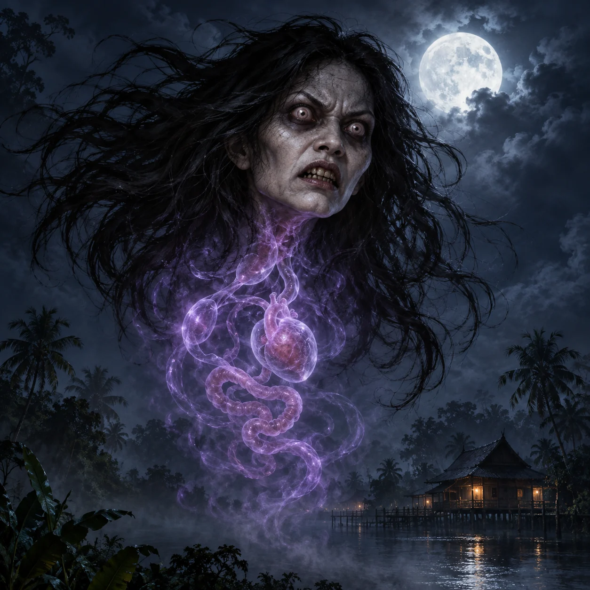
Nocturnal floating head with spectral non-graphic organ forms
Aura: malevolent nocturnal predatory horror
Audit ciri dan sumber
- Floating woman's head without torso or limbs
- Spectral organ cluster and coils descending directly from neck
- Frightening facial expression and sinister night aura
Observed isolated floating female head and neck, tangled dark hair, no torso or limbs. Purple spectral organ cluster and recognizable intestine coils descend directly from neck. Severe gaunt face, staring pale eyes, angry brow and grimace create frightening malevolent aura in moonlit stilt-house setting. Spectral variant avoids graphic injury.
Review sumberOne square dark painterly illustration of Malay Penanggalan folklore, suitable for a mythological encyclopedia. The subject is a floating adult woman's HEAD ONLY, long tangled black hair blowing wildly, absolutely no human body or limbs. Beneath her neck, semi-transparent purple spectral forms evoke the traditional dangling organ cluster and coils through ethereal mist; these are ghostly light, NOT solid biological tissue and NOT flat paper or ribbons. Show the full hovering head and descending ghostly forms clearly against a dark misty tropical night sky; distant Malay stilt house small behind her. Her face must be frightening: severe gaunt features, unnatural fixed wide-eyed stare, angry eyebrows, and a grimacing mouth. Use stark upward moonlight and unsettling shadows. No beauty portrait, no glamorous makeup, no alluring expression. Atmospheric supernatural horror, restrained and non-graphic, no injuries, blood, bodily fluids or victims. Comfortable margin all around full subject. No wings, horns, weapons, text or watermark.
Set
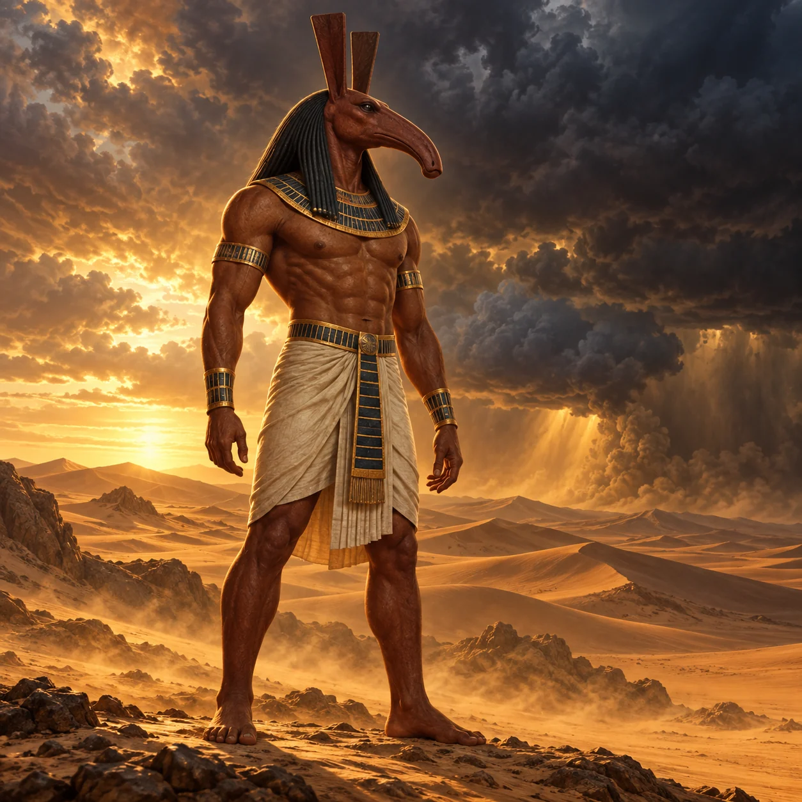
Animal-headed anthropomorphic Egyptian Set
Aura: Austere powerful desert and storm deity
Audit ciri dan sumber
- Human male body and limbs
- Distinctive mythical Set-animal head with downcurving elongated snout and square upright ears
- Desert and storm divine majesty
Observed human muscular body with two arms and two legs, long distinctly downcurved muzzle, two rectangular flat-tipped upright ears, Egyptian linen kilt. Monumental dignified stance under enormous storm clouds and gold light over desert; no jackal substitution, wings, horns or fantasy weapons.
Review sumberUse case: historical-scene. Asset type: square encyclopedia illustration. Create ONE 1024x1024 detailed painterly naturalistic illustration of Set, the ancient Egyptian desert and storm god, in his canonical animal-headed HUMAN-bodied form. One solitary dignified powerful standing male deity, full figure comfortably inside frame, with a recognizable enigmatic Set-animal head in clear three-quarter side profile: long narrow muzzle bending downward at its end, and two tall straight upright rectangular ears with squared flat tips. The head is NOT a jackal, dog, wolf, fox, horse, or ordinary donkey. Dark reddish animal head, muscular human torso and human limbs, simple ancient Egyptian linen kilt and broad collar. Hands empty. Behind him, immense ochre desert dunes and dark gathering storm clouds; austere monumental divine majesty with dangerous storm power, not a generic demon. Soft dramatic golden edge light, exceptionally clear silhouette and head anatomy, exquisite brush texture. Keep all identifying parts visible; no extra limbs, horns, wings, sword, modern fantasy armor, canine pointed ears, jackal head, humans beside him, gore, writing, hieroglyphs, labels, border, text, watermark. Select only the anthropomorphic documented Egyptian variant, do not hybridize variants.
Abasy
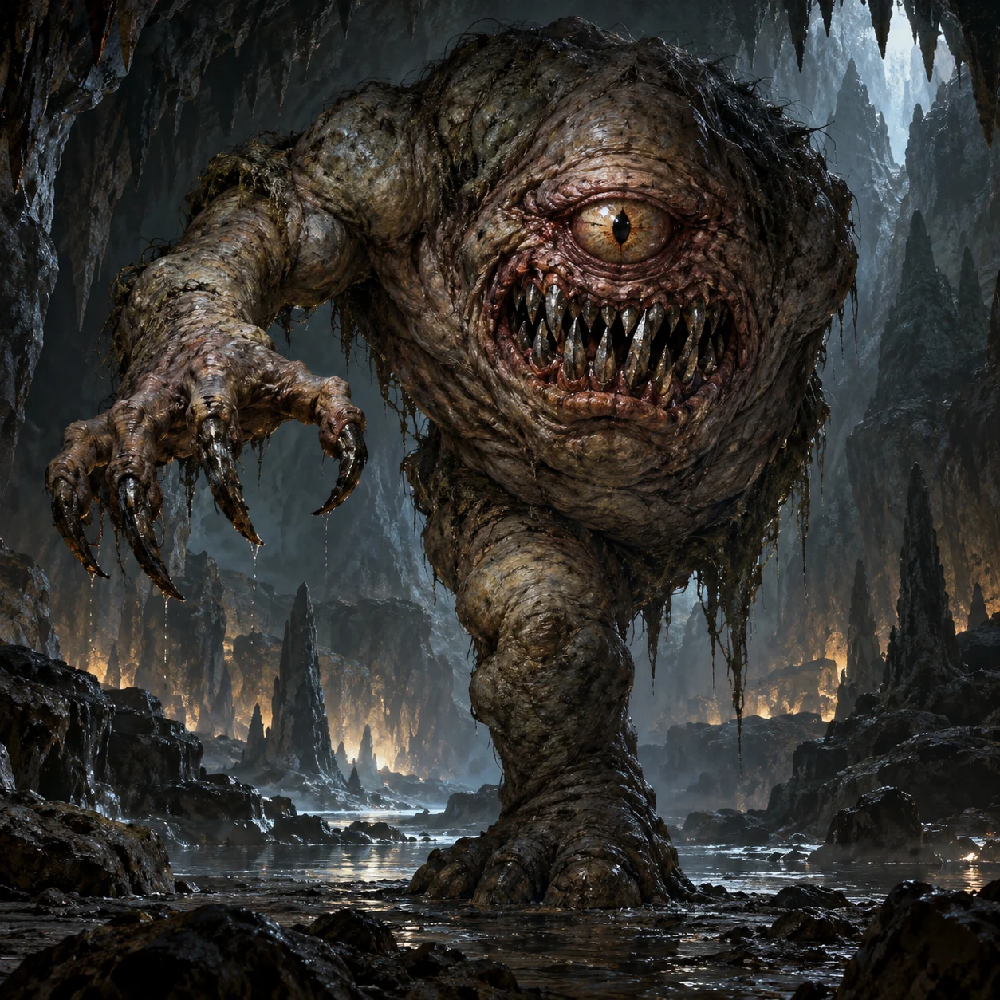
Solitary abasy underworld monster without mount
Aura: Predatory and malevolent darkness
Audit ciri dan sumber
- A hideous giant monster in a dark Sakha underworld cave, with exactly ONE central eye, ONE arm total on its right side and ONE thick leg total under the torso. Entire abnormal asymmetrical body visible; no second arm or leg and no hidden stumps. Jagged metallic iron teeth in the grimacing mouth. It balances on its sole leg; its lone claw-like hand reaches forward. No dragon, no rider, no horn.
- Predatory and malevolent darkness
- Creature-specific anatomy is clearly visible; no ordinary human dramatic portrait
Inspected original at full resolution: exactly one central slit-pupil eye, one arm, one supporting leg, jagged metallic teeth and wholly grotesque nonhuman body. No rider, second limb, human portrait or additional creature. Dark cave and predatory grimace fit underworld terror.
Review sumberUse case: stylized-concept. Asset type: Mythics encyclopedia character illustration. ONE square high-detail naturalistic painterly illustration. Subject: Abasy. A hideous giant monster in a dark Sakha underworld cave, with exactly ONE central eye, ONE arm total on its right side and ONE thick leg total under the torso. Entire abnormal asymmetrical body visible; no second arm or leg and no hidden stumps. Jagged metallic iron teeth in the grimacing mouth. It balances on its sole leg; its lone claw-like hand reaches forward. No dragon, no rider, no horn. Mood: Predatory and malevolent darkness. Full defining anatomy visible, main creature prominent, balanced legible composition, detailed organic textures, atmospheric setting. No text, watermark, frame, collage, labels, game-interface or extra unrelated character. Depict folklore rather than a modern franchise. Palette, landscape and pose are artistic interpretation; do not invent conflicting signature anatomy.
Adar Llwch Gwin

Welsh great intelligent raptor variant
Aura: Fierce obedient guardian intelligence
Audit ciri dan sumber
- One immense intelligent bird of prey, raptor anatomy rather than lion hybrid, broad powerful wings, hooked beak, two taloned feet, fully feathered body. It stands alert above old Welsh moorland with commanding thoughtful gaze. No human, lion torso, harness, crown or costume.
- Fierce obedient guardian intelligence
- Creature-specific anatomy is clearly visible; no ordinary human dramatic portrait
Inspected original: one giant fully feathered raptor with hooked beak, two taloned feet and avian wings, alert intelligent gaze over Welsh moors. No lion torso, human components or costume. Great raptor interpretation is supported by source claims; palette is artistic.
Review sumberUse case: stylized-concept. Asset type: Mythics encyclopedia character illustration. ONE square high-detail naturalistic painterly illustration. Subject: Adar Llwch Gwin. One immense intelligent bird of prey, raptor anatomy rather than lion hybrid, broad powerful wings, hooked beak, two taloned feet, fully feathered body. It stands alert above old Welsh moorland with commanding thoughtful gaze. No human, lion torso, harness, crown or costume. Mood: Fierce obedient guardian intelligence. Full defining anatomy visible, main creature prominent, balanced legible composition, detailed organic textures, atmospheric setting. No text, watermark, frame, collage, labels, game-interface or extra unrelated character. Depict folklore rather than a modern franchise. Palette, landscape and pose are artistic interpretation; do not invent conflicting signature anatomy.
Adar Rhiannon
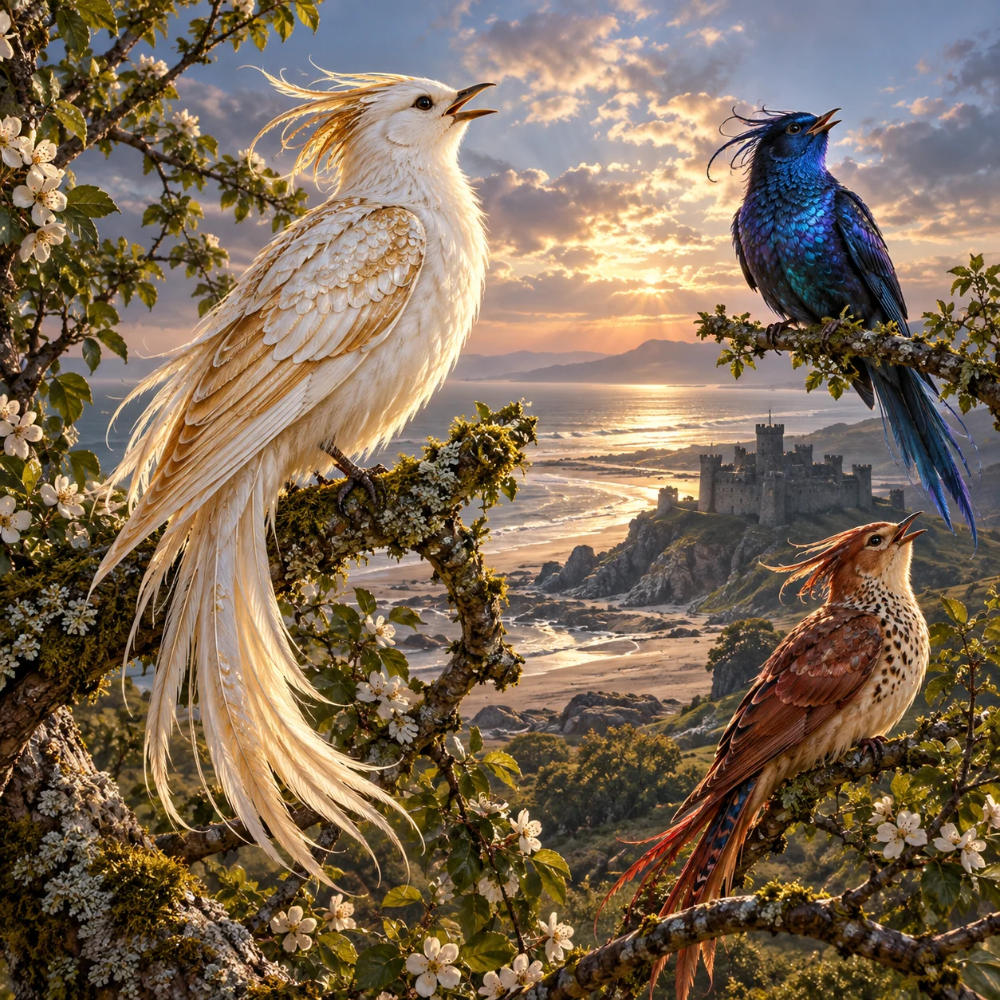
Three magical singing birds of the Mabinogi
Aura: Enchanting otherworldly peace
Audit ciri dan sumber
- Exactly THREE distinct magical birds perched on three branches over the Welsh coast at Harlech, three feathered avian bodies, separate heads and pairs of wings, beaks gently open in song. Distant sea and castle hints. Each bird fully separable. Their song evokes enchanting serenity without visual musical notes. No people, no fourth bird.
- Enchanting otherworldly peace
- Creature-specific anatomy is clearly visible; no ordinary human dramatic portrait
Inspected original: exactly three fully avian bodies on three branches, all three open-beaked singing birds distinct. Coast and distant castle suit Harlech, serene luminous atmosphere. No fourth bird or human. Feather colors are artistic interpretation, no claimed fixed species.
Review sumberUse case: stylized-concept. Asset type: Mythics encyclopedia character illustration. ONE square high-detail naturalistic painterly illustration. Subject: Adar Rhiannon. Exactly THREE distinct magical birds perched on three branches over the Welsh coast at Harlech, three feathered avian bodies, separate heads and pairs of wings, beaks gently open in song. Distant sea and castle hints. Each bird fully separable. Their song evokes enchanting serenity without visual musical notes. No people, no fourth bird. Mood: Enchanting otherworldly peace. Full defining anatomy visible, main creature prominent, balanced legible composition, detailed organic textures, atmospheric setting. No text, watermark, frame, collage, labels, game-interface or extra unrelated character. Depict folklore rather than a modern franchise. Palette, landscape and pose are artistic interpretation; do not invent conflicting signature anatomy.
Lucifer
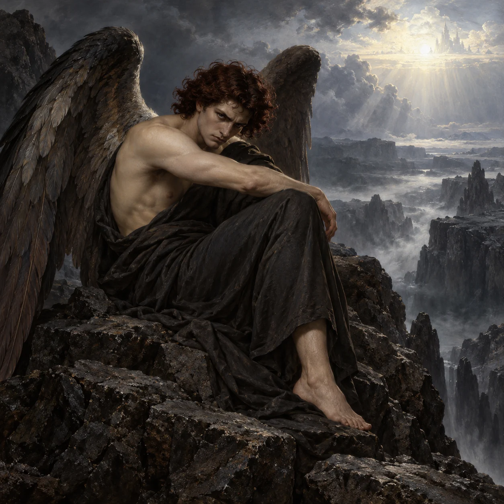
Christian fallen angel using Cabanel's historic iconographic interpretation; not Roman morning-star personification
Aura: Ominous, bitter, tragic fallen-divine majesty
Audit ciri dan sumber
- Humanlike male fallen angel
- Two feathered wings
- Proud rage and tragic celestial exile
- No invented horns or monstrous anatomy
- Lower body modestly draped
Observed a humanlike adult male with curly auburn hair, normal face and limbs, two dusky feather wings, lower body covered by dark cloth. Fierce embittered gaze, hunched seated posture on dark rocks, and remote bright heaven convey lost divine majesty and threatening rage. No horns, bat membranes, claws, tail, weapon, gore, visible genitals, text, or watermark. One wing edge approaches the frame but form remains identifiable.
Review sumberUse case: historical-scene. ONE square detailed painterly naturalistic encyclopedia illustration of Lucifer as the Christian fallen angel, using the historical male feather-winged Satan iconography in Alexandre Cabanel's 1847 L'Ange déchu held by Musée Fabre. Create an original composition rather than copying the painting. One beautiful but terrifyingly defiant adult male angel seated on desolate dark rocks beneath a distant cold celestial light that he can no longer reach. Two large clearly feathered dusky wings attached naturally at his shoulder blades, intact human anatomy, dark auburn curly hair, face marked by proud bitterness, grief and an intense hostile stare. Simple opaque dark drapery covers torso and lower body modestly, feet bare. The divine beauty remains but he radiates ominous tragic rage after being expelled from heaven. Dramatic shadow and pale distant celestial light. Central complete identifiable figure and feather wings comfortably inside the square, realistic painterly texture. Invariants: fallen humanlike male angel, feather wings and embittered despair, original subdued composition. Avoid horns, bat wings, red skin, fangs, claws, goat legs, tail, crown, weapon, armor, torch, star deity, cartoon demon, gore, nudity. No other characters, no text, no watermark, no border.
Loch Ness Monster
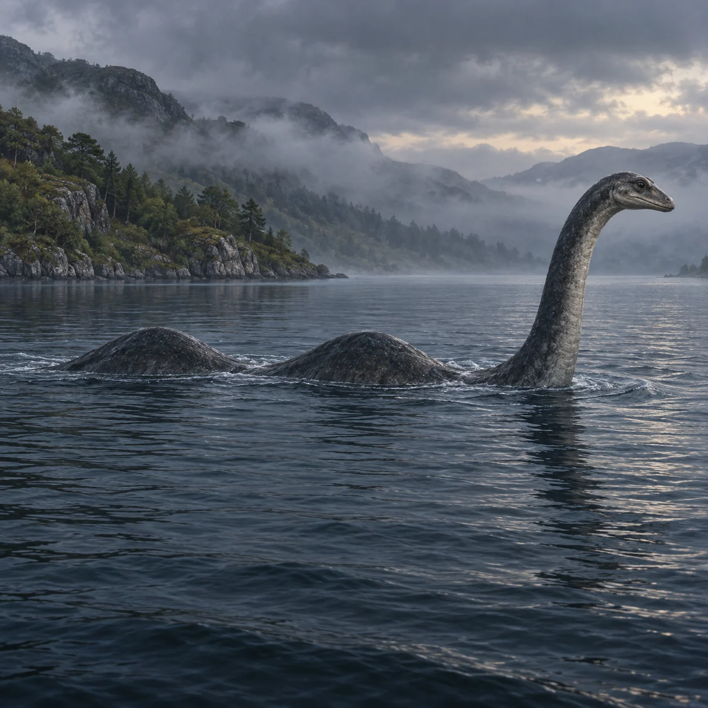
Reported long-necked humped surface form, submerged anatomy unspecified
Aura: elusive mysterious aquatic awe
Audit ciri dan sumber
- Large long neck ending in small head
- One or more back humps protrude above water
- Loch Ness Highland lake setting
- Mysterious elusive natural aura
Observed very long slender curved neck with small head, two separated rounded humps aligned at water surface, rest submerged. Misty Highland lake and subdued natural gray skin support elusive aquatic mystery without invented horns or aggressive fantasy traits.
Review sumberOne square detailed painterly naturalistic folklore encyclopedia illustration of the Loch Ness Monster, Nessie. Depict the reported long-necked humped silhouette rather than making a biological claim: in misty dark blue Scottish Loch Ness waters, a very large aquatic creature shows a long slender curved neck ending in a small modest reptilian head and two smooth broad back humps emerging in a connected line from the water behind it. Most of its body remains submerged, so no legs or flippers are shown. Head, neck, and both back humps clearly readable and comfortably framed with margin. Rocky green Highland slopes and low fog, quiet overcast evening, ripples around the creature. Aura mysterious, elusive and awe-inspiring, not evil or cute; natural wildlife illustration atmosphere, no glowing eyes or fantasy effects. Rough muted gray skin, no horns, wings, spines, tentacles, teeth display, fire or weapons. This is a painterly interpretation of folklore sightings, not a fake evidence photograph. No text or watermark, one creature only.
Lernaean Hydra
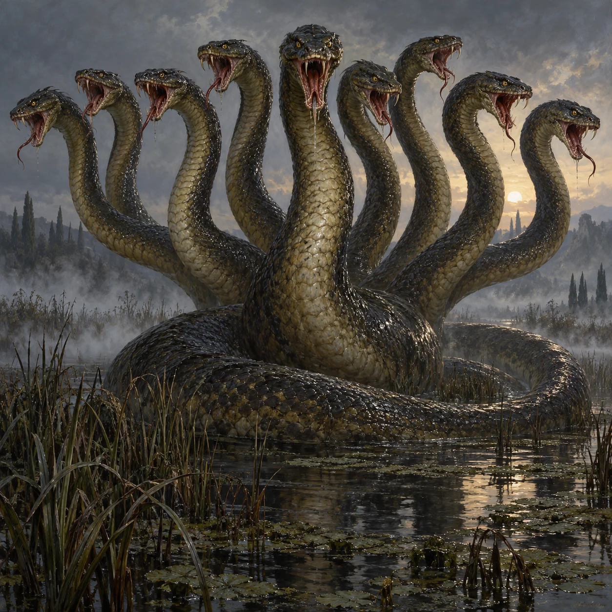
Apollodorus nine-headed serpent, eight mortal and central immortal
Aura: Oppressive venomous marsh horror
Audit ciri dan sumber
- Exactly nine snake heads, individually countable
- One huge limbless coiled serpent body
- Venomous threatening monster in Greek marsh
Counted nine separate open snake heads: four left of central head, central head, four right. Each has its own long neck joining the mass of one scaled coiled serpent; no legs or wings. Large exposed venomous fangs, bleak misty marsh, wet black scales and menacing raised mouths convey dangerous horror. Earlier seven-headed file was deleted before regeneration.
Review sumberUse case: historical-scene. Create ONE square 1024x1024 detailed painterly naturalistic encyclopedia illustration of the LERNAEAN HYDRA in the nine-headed variant documented by Apollodorus, Library 2.5.2. A huge truly SERPENTINE water monster in a dark Greek marsh, one massive limbless coiled snake body and EXACTLY NINE independently visible snake heads, each on its own long sinuous neck attached to the same body. Make nine heads immediately countable and not overlapping: a central upright snake head, four fanning clearly on its left and four on its right. Eight mortal heads and the central immortal head; all are snake heads, no invented crowns. One continuous heavy coiled tail. Venomous open jaws and glistening dark wet scales; reed beds, black still water and mist behind. Ancient monstrous menace and poisonous horror, oppressive dawn light with restrained natural color. Entire silhouette comfortably inside frame, detailed naturalistic snake anatomy and exquisite oil brush texture. No legs, arms, wings, horns, dragon heads, dinosaur body, extra head, tenth head, missing head, flame breath, bright fantasy magic, humans, corpses, labels, text, watermark or border. Nine heads exactly.
Critical correction: prior composition had only SEVEN heads and must be rejected. This new image MUST contain NINE visible heads, no exceptions. Arrange the nine heads at separately spaced positions across the upper frame, like nine upright snake necks in a gently curved row: count 1,2,3,4 left of center, head 5 at center, heads 6,7,8,9 right of center. Every one has its own face and neck, clearly separated by empty background. Keep the body lower in the frame so there is generous room for all nine faces. Head count is the highest-priority invariant.
Troll
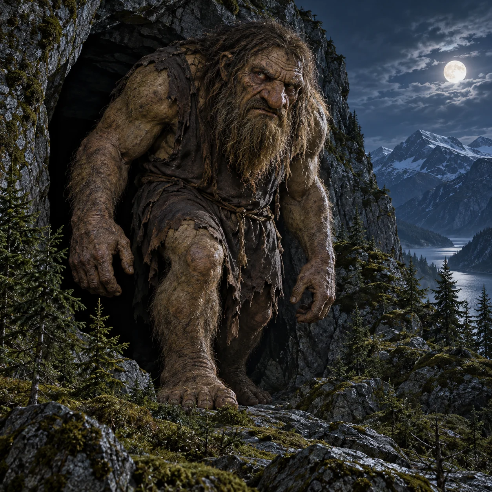
Grotesque giant mountain-dwelling Nordic troll; not all trolls share this form
Aura: Dangerous, ancient, frightening northern folklore menace
Audit ciri dan sumber
- Grotesque gigantic humanlike form
- Two arms and two legs
- Remote Nordic mountain cave
- Dangerous menacing aura
- No generic fantasy horns or armor
Observed one massive hunched rough-skinned humanlike male, oversized ugly nose and brow, matted hair and beard, two thick arms and two legs, cloth garment. Small fir trees and mountain cave establish giant scale. Stern suspicious face and moonlit isolated landscape convey danger. No horns, wings, weapon, tail, armor, gore, writing or watermark.
Review sumberUse case: historical-scene. ONE square detailed painterly naturalistic encyclopedia illustration of a Nordic Troll. Choose the documented grotesque gigantic humanlike mountain-dweller variant, not a game monster. One colossal hunched humanoid emerges from a shadowed cave in an untouched Norwegian mountain forest at twilight. Two humanlike arms, two legs, oversized rough weathered face and heavy brow, broad ugly nose, coarse unkempt hair and beard, primitive worn dark cloth modestly covering body. It appears ancient, brutal, dangerous and dim-witted, blending visually with dark rocky mossy landscape through earthy skin texture; living flesh, not literally a stone statue. Cave mouth and small fir trees establish giant scale. Harsh sideways moonlight catches its suspicious predatory stare; frightening folklore menace with northern landscape atmosphere. Central complete humanoid comfortably inside frame. Invariants: grotesque giant humanlike being, remote Nordic mountain cave, dangerous aura. Avoid horns, wings, tusks, extra heads or limbs, tail, fantasy armor, weapon, modern objects, comedic cartoon, gore, nudity, text, watermark, border, collage.
Spriggan
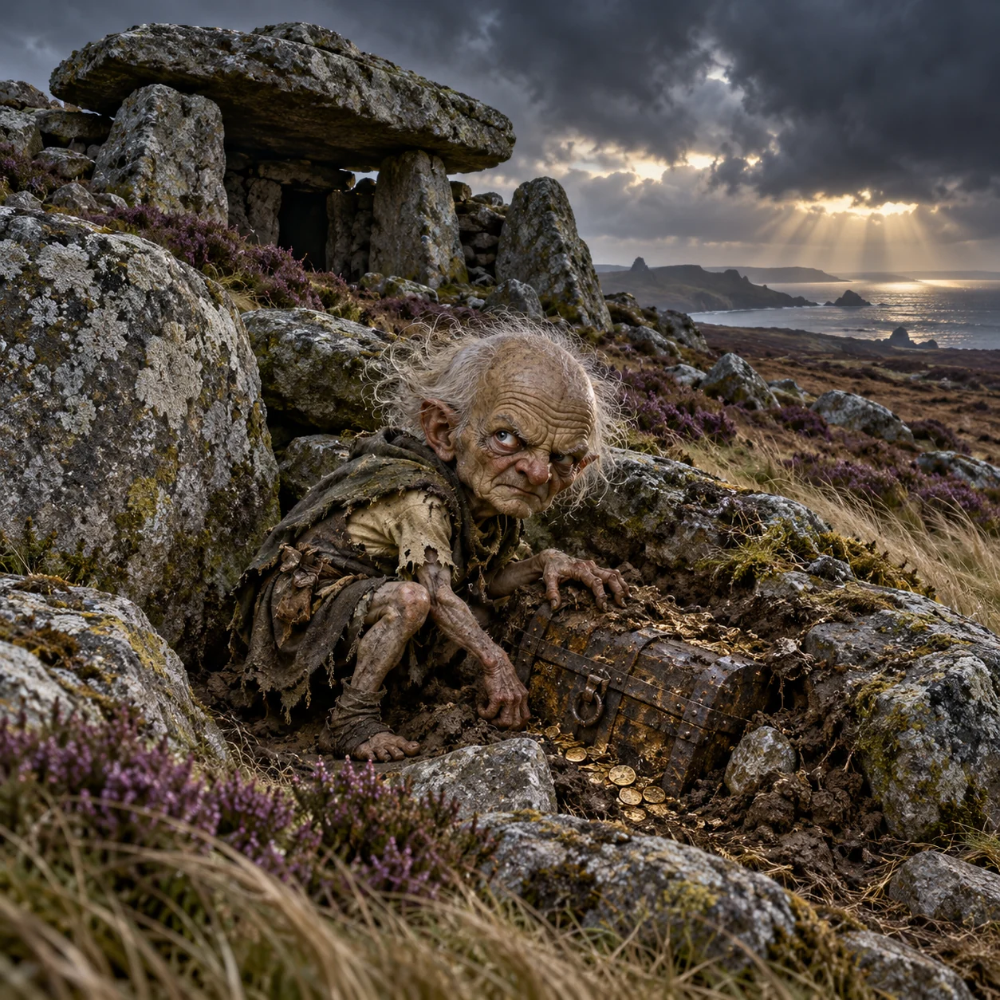
Small shrivelled old-man treasure guardian, not giant transformation
Aura: eerie foul-tempered mischievous treasure guardian
Audit ciri dan sumber
- Small shrivelled old man with disproportionately large childlike head
- Human two-arm two-leg form, not tree monster
- Cornish cairn/barrow and buried treasure
- Eerie foul-tempered mischievous guardian aura
Observed small shrivelled old male crouched beside treasure chest and coins at stone cairn, large round head relative to thin body, deeply wrinkled face, no tree anatomy. Fierce suspicious frown, guarding hand on chest and stormy Cornish heath convey foul-tempered eerie guardian mood. Human limbs correct; far leg naturally occluded by crouching pose.
Review sumberOne square detailed painterly naturalistic encyclopedia illustration of the Cornish Spriggan. Choose SMALL OLD-MAN treasure-guardian form, not giant transformation and not a tree creature. One tiny hideously ugly shrivelled elderly male with disproportionately big rounded childlike head, deeply wrinkled aged face and small thin human body crouches at an ancient Cornish stone cairn and ruined barrow. Rough simple worn clothing, two arms, two legs, watchful crooked expression. A partially buried weathered treasure chest and a few coins sit close beneath his guarding hand. Full figure comfortably visible, scale clearly tiny beside big stones and heather. Aura must be eerie, foul-tempered and mischievously threatening, a malicious treasure guardian, not friendly or cute. Cold stormy twilight over West Penwith heath, wind bending grasses, ominous shafts of light. No bark skin, tree branches or antlers, no wings, horns, magic staff, modern game armor or weapons, no giant form, no other characters. No text or watermark.
Tengu
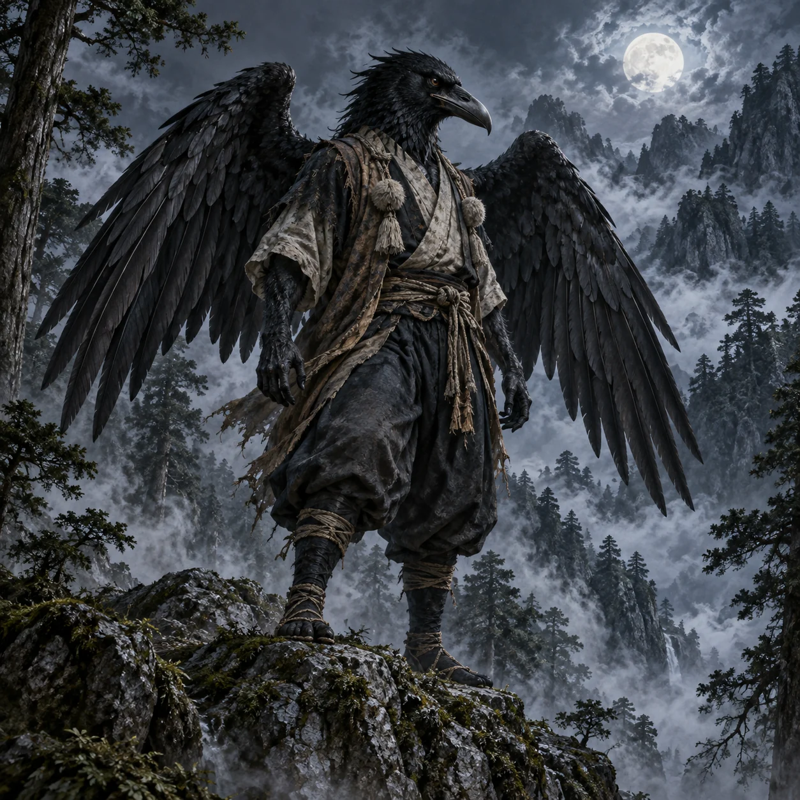
Karasu Tengu
Aura: Daunting dangerous mountain spirit
Audit ciri dan sumber
- Karasu birdlike head with strong sharp beak
- Humanlike torso and limbs with two feathered wings
- Mountain woodland setting and dangerous powerful aura
Observed black feathered crow head with strong hooked sharp beak, anthropomorphic clothed torso and humanlike arms and legs, exactly two large feathered wings. Cold moonlight, misty high cedar-clad crags, fiercely watchful gaze and imposing stance convey powerful dangerous yokai. No mixed long human nose or horned demon form.
Review sumberUse case: historical-scene. ONE square 1024x1024 detailed painterly naturalistic encyclopedia illustration of a KARASU TENGU, the Japanese mountain-forest yokai in the documented bird-headed variant, without mixing it with the long-human-nosed variant. One adult human-bodied supernatural figure with a crowlike feathered head and one strong sharply hooked black bird BEAK, two broad black feathered wings emerging from its upper back, human arms and legs wearing simple period Japanese mountain clothing. Stand on a rocky ledge in the dense misty cedar woodlands of a high Japanese mountain. Full central figure and wing tips comfortably in frame. Proud, dangerous, daunting supernatural presence: fierce crow gaze, powerful poised stance, wind, cold mountain mist, dramatic dim moonlight, not a friendly mascot. Detailed natural bird feather structure and humanlike torso anatomy, restrained painterly brush texture. No human face, no long human nose, no horns, no bat wings, no angel halo, no generic armor, no extra arms or wings, no gratuitous weapon, no additional creatures, no writing, labels or watermark.
Aitvaras
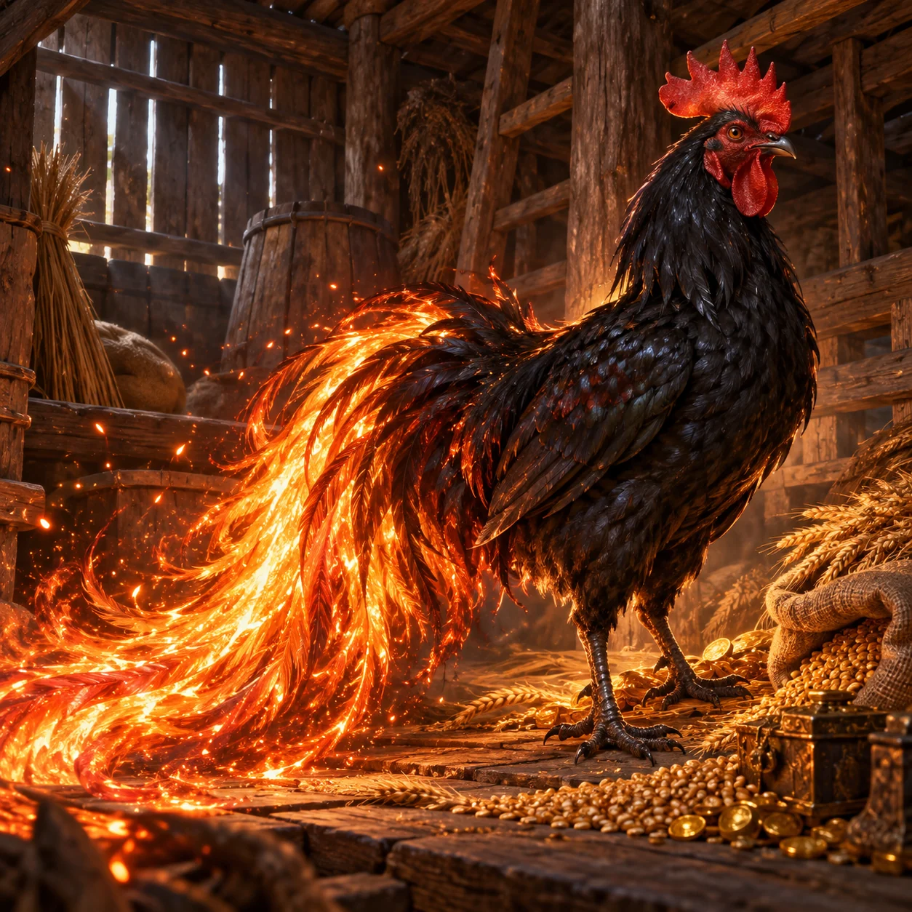
Indoor black rooster with meteor tail
Aura: Mischievous dangerous household fortune
Audit ciri dan sumber
- A single BLACK rooster with anatomically normal rooster head, scarlet comb, feathered body and two bird feet, but a magnificent long FIERY METEOR tail visibly trailing embers. Inside rustic Lithuanian wooden grain store, a small pile of gold and wheat beneath. Flaming tail rather than fire breathing or a burning human.
- Mischievous dangerous household fortune
- Creature-specific anatomy is clearly visible; no ordinary human dramatic portrait
Inspected original: one black rooster, red comb, two bird feet, long tail visibly made of fiery meteor feathers and embers, grain and coins inside wooden store. No fire-breathing humanoid or extra wings. Coherent source-described rooster form and mischievous dangerous fortune aura.
Review sumberUse case: stylized-concept. Asset type: Mythics encyclopedia character illustration. ONE square high-detail naturalistic painterly illustration. Subject: Aitvaras. A single BLACK rooster with anatomically normal rooster head, scarlet comb, feathered body and two bird feet, but a magnificent long FIERY METEOR tail visibly trailing embers. Inside rustic Lithuanian wooden grain store, a small pile of gold and wheat beneath. Flaming tail rather than fire breathing or a burning human. Mood: Mischievous dangerous household fortune. Full defining anatomy visible, main creature prominent, balanced legible composition, detailed organic textures, atmospheric setting. No text, watermark, frame, collage, labels, game-interface or extra unrelated character. Depict folklore rather than a modern franchise. Palette, landscape and pose are artistic interpretation; do not invent conflicting signature anatomy.
Ala (demon)
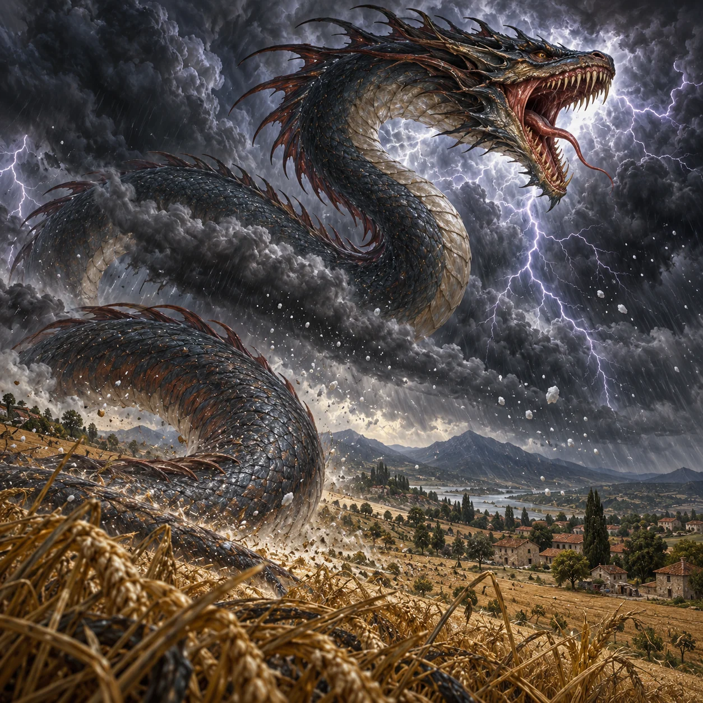
Serpentine storm demon variant
Aura: Destructive voracious storm terror
Audit ciri dan sumber
- An enormous long serpentine dragoness with huge predatory mouth, no human face or body. Its tail coils down over a Balkan crop field while its head rises into black hail-bearing thunderclouds. Sinuous scaled body clearly connects head and tail. No human woman, no unrelated armored wings, no deity.
- Destructive voracious storm terror
- Creature-specific anatomy is clearly visible; no ordinary human dramatic portrait
Full-size original inspected: a single huge sinuous scaled dragoness with enormous jaw, tail at field level and head in hail clouds. No humanoid body or costume. Visually follows source storm-serpent variant, with destructive weather aura.
Review sumberUse case: stylized-concept. Asset type: Mythics encyclopedia character illustration. ONE square high-detail naturalistic painterly illustration. Subject: Ala (demon). An enormous long serpentine dragoness with huge predatory mouth, no human face or body. Its tail coils down over a Balkan crop field while its head rises into black hail-bearing thunderclouds. Sinuous scaled body clearly connects head and tail. No human woman, no unrelated armored wings, no deity. Mood: Destructive voracious storm terror. Full defining anatomy visible, main creature prominent, balanced legible composition, detailed organic textures, atmospheric setting. No text, watermark, frame, collage, labels, game-interface or extra unrelated character. Depict folklore rather than a modern franchise. Palette, landscape and pose are artistic interpretation; do not invent conflicting signature anatomy.
Yamata no Orochi
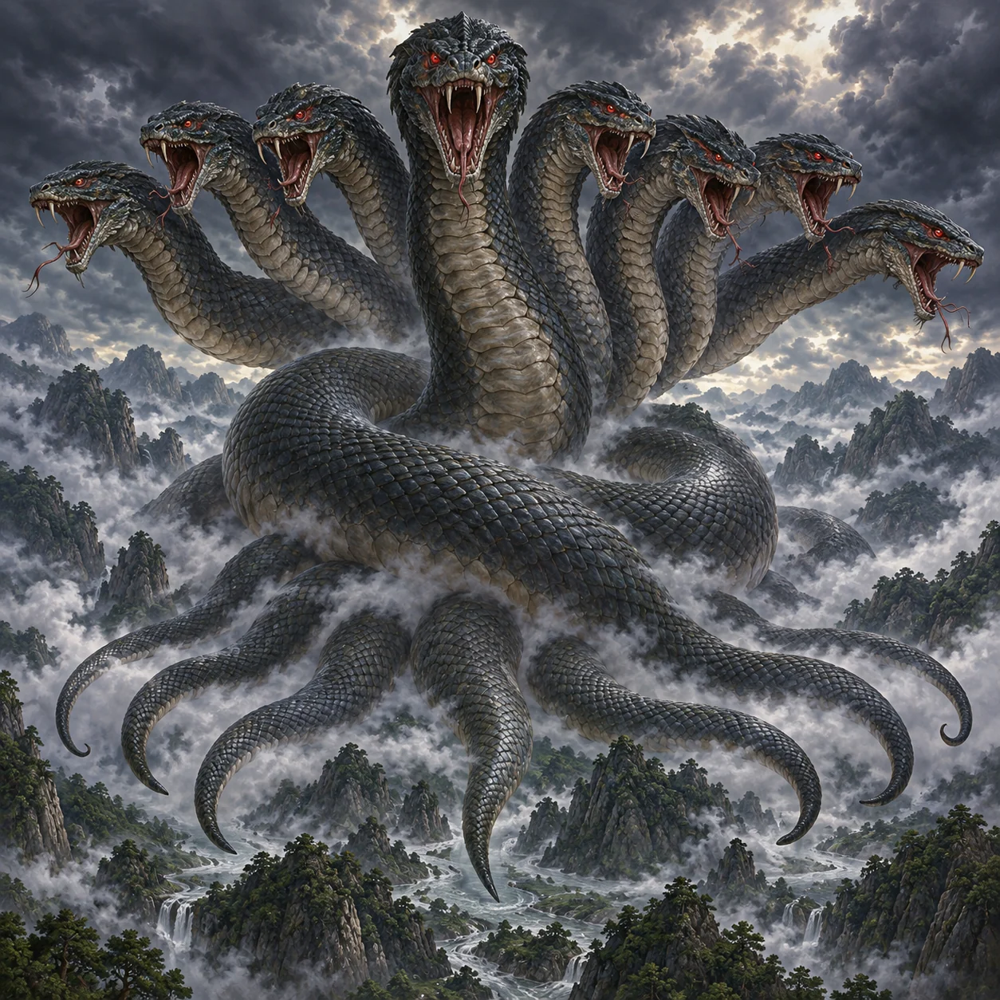
Kojiki eight-headed eight-tailed serpent
Aura: Terrifying colossal devourer
Audit ciri dan sumber
- Exactly eight individually countable snake heads
- Exactly eight tapering tail tips
- Red eyes and colossal limbless serpent across mountain valleys
Counted eight open snake heads: three left of central head, central head, four right. Counted eight distinct tail tips along lower silhouette: four left, one central, three right. Red eyes, fanged mouths, enormous dark coiled limbless trunk over mountain valleys create terrifying devourer aura. No wings, horns or legs. Two earlier seven-headed variants were rejected and deleted.
Review sumberOne square naturalistic oil-painted encyclopedia illustration of the Japanese mythological serpent Yamata no Orochi. EXACTLY EIGHT snake heads. Compose ONE central head at top center, THREE head faces to its left, FOUR head faces to its right. 1 + 3 + 4 = EIGHT heads. Every head is large and separated, clearly visible against the stormy sky. Four faces must be visible on the RIGHT. One huge shared serpent body, no limbs, wings, horns or antlers. Eyes are deep red. EXACTLY EIGHT tapering serpent tail ends visible fanning out below the one shared coiled snake trunk: one central tail, three tail tips on the left, four tail tips on the right. Eight tails in total. Do not omit any. Shocking colossal scale across misty Japanese mountain valleys, malevolent terrifying ancient devourer aura. Fully framed from every head to every tail tip, delicate natural dark scales, threatening snake jaws, beautiful restrained painterly texture. No additional creatures, no humans, no text, watermark or border. COUNT every visible head before finalizing: CENTRAL one, LEFT three, RIGHT four.
Alerion
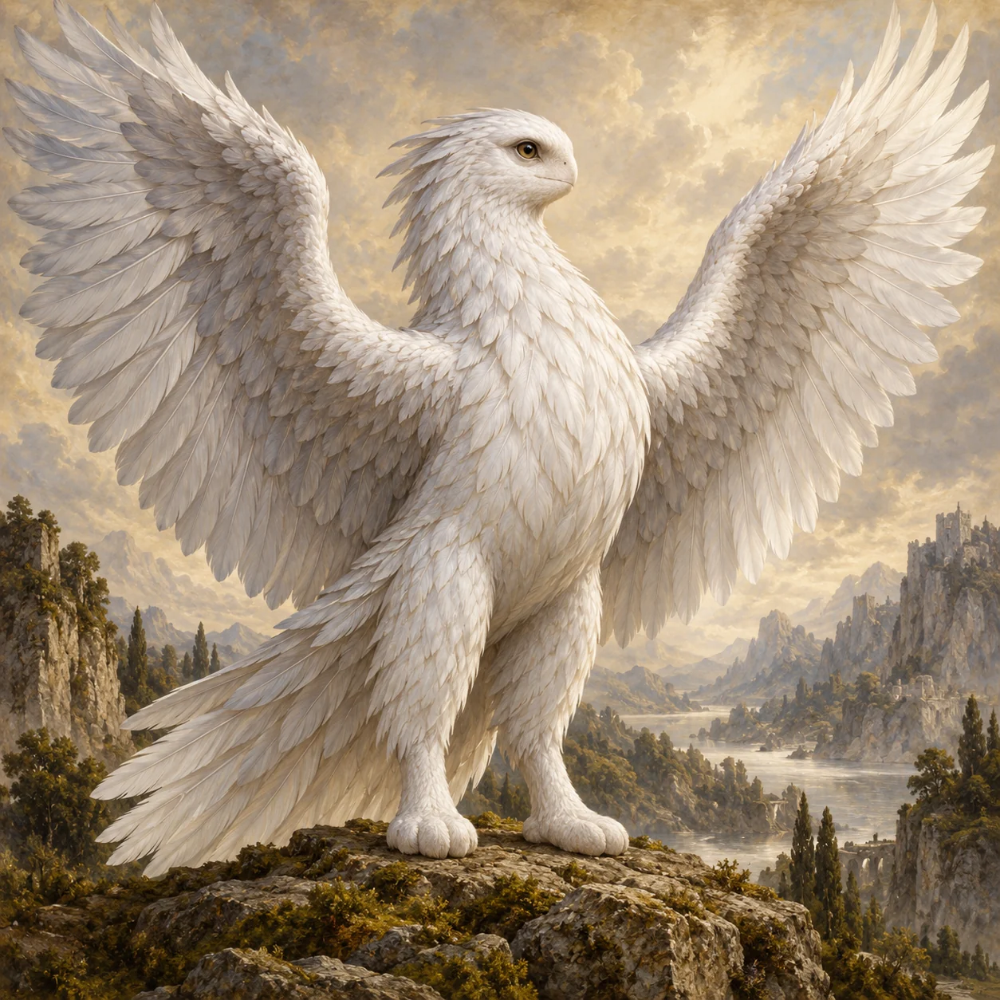
Beakless and clawless heraldic eagle variant
Aura: Calm heraldic majesty
Audit ciri dan sumber
- One silver-white eagle-like mythological bird with broad spread feathered wings. Its smooth rounded avian face has eyes but ABSOLUTELY NO BEAK or bill; rounded closed mouth. The short feathered lower limbs end in soft blunt rounded feet without any talons, hooks or claws. Full bird centered against aged muted parchment-like natural atmosphere, no heraldic shield or logo.
- Calm heraldic majesty
- Creature-specific anatomy is clearly visible; no ordinary human dramatic portrait
Full-size original inspected: silver-white spread-winged eagle body, smoothly rounded face with closed mouth but no protruding eagle beak, two blunt rounded feathered feet with no talons or claws. Distinct heraldic no-beak/no-claw variant and dignified calm.
Review sumberUse case: stylized-concept. Asset type: Mythics encyclopedia character illustration. ONE square high-detail naturalistic painterly illustration. Subject: Alerion. One silver-white eagle-like mythological bird with broad spread feathered wings. Its smooth rounded avian face has eyes but ABSOLUTELY NO BEAK or bill; rounded closed mouth. The short feathered lower limbs end in soft blunt rounded feet without any talons, hooks or claws. Full bird centered against aged muted parchment-like natural atmosphere, no heraldic shield or logo. Mood: Calm heraldic majesty. Full defining anatomy visible, main creature prominent, balanced legible composition, detailed organic textures, atmospheric setting. No text, watermark, frame, collage, labels, game-interface or extra unrelated character. Depict folklore rather than a modern franchise. Palette, landscape and pose are artistic interpretation; do not invent conflicting signature anatomy.
Japanese dragon
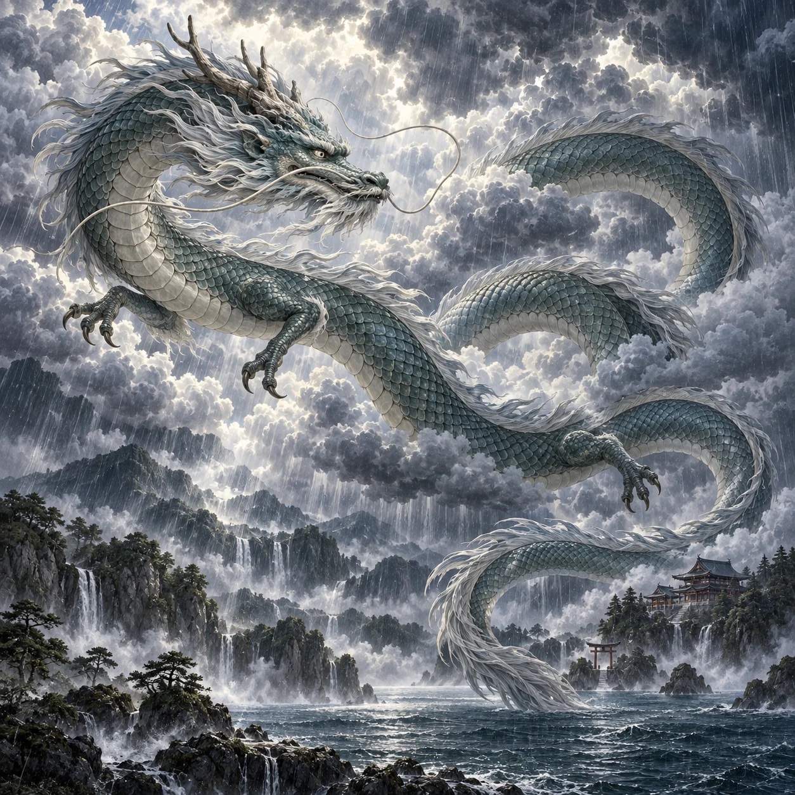
Conventional Japanese three-clawed serpentine rain dragon
Aura: majestic sacred rain and water guardian
Audit ciri dan sumber
- One long serpentine scaled dragon with four short clawed limbs
- Conventional Japanese three-claw form, whiskers and horns
- Wingless water/rain/cloud habitat
- Majestic sacred water guardian aura
Observed one wingless serpentine dragon with jade-gray scales, whiskers and branched horns. Three visible short limbs with three curved claw toes; opposite hind limb occluded by body/clouds, no extra limb. Winding body is partially obscured by rain clouds, head and tail remain framed. Mountain waters, heavy rain and shrine establish Japanese sacred water guardian context. Fierce commanding gaze and vast cloud scale create majestic guardian awe.
Review sumberOne square detailed painterly naturalistic encyclopedia illustration of Japanese ryū, the water and rain dragon, in the conventional East Asian serpentine form seen in Japanese dragon paintings. One enormous long scaled winding snake-like body with a dragon head, long whiskers, small branched head horns, and four short clawed limbs, THREE claw toes on each visible foot; NO WINGS. Body coils gracefully through layered rain clouds above dark Japanese mountain water and a distant shrine. Full dragon from head to tail comfortably inside square frame, clear unbroken body silhouette and coherent limb attachments. Mood: powerful sacred water guardian, commanding majestic natural storm presence, awe and reverence, not malicious and not cute. Slate jade scales, muted silver whiskers, atmospheric painted rain and water, luminous storm light. Keep dragon associated with clouds, rainfall and water, no fire, no western bat wings, no extra heads, limbs or weapons, no people, no text or watermark. Single standalone scene, no panels.
Kodama
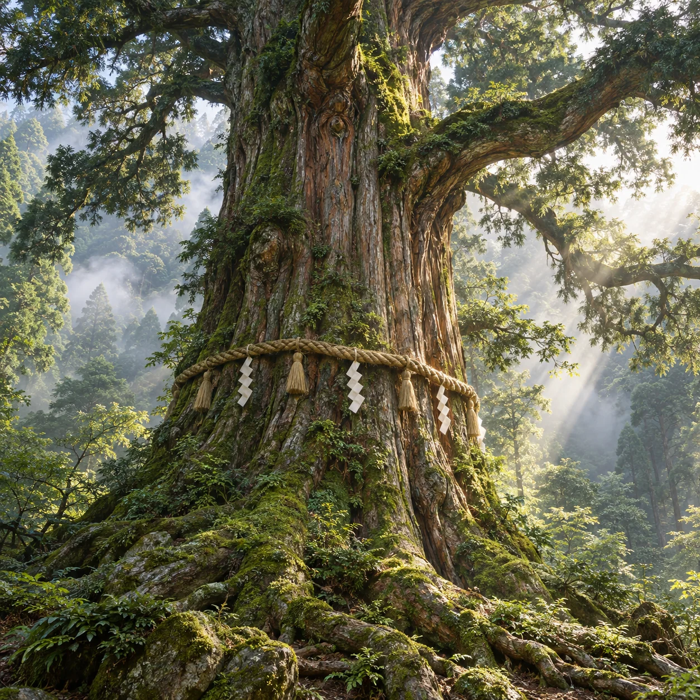
Unseen old-tree spirit represented by venerated inhabited tree
Aura: Reverent numinous old forest presence
Audit ciri dan sumber
- Venerable old tree housing unseen spirit
- Sacred shimenawa around trunk
- Reverent forest mystery without invented visible humanoid
Observed immense gnarled mossy cedar trunk rooted in ancient forest, straw shimenawa and folded white shide clearly encircling trunk. Natural sunbeams, quiet mist and venerable bark convey respect and unseen tree-spirit mystery. No invented visible humanoid or film-derived cartoon form.
Review sumberUse case: historical-scene. ONE square 1024x1024 painterly naturalistic encyclopedia illustration of KODAMA, Japanese old-tree spirit depicted through its venerable inhabited tree, preserving the source tradition of an UNSEEN tree spirit. One immense living ancient Japanese cedar at least a century old, gnarled textured trunk, deeply rooted mossy base, huge branches inside frame. A traditional sacred rice-straw shimenawa rope encircles the trunk with simple hanging white shide paper streamers. Quiet green Japanese forest and mist; subtle soft natural sunbeams illuminate the ancient tree, conveying a reverent numinous living presence and mysterious forest echoes. Tree is central and identifiable, no visible humanoid spirit invented, no cartoon creatures, no face carved in the trunk, no eyes on bark, no aggressive monster, no glowing elf, no ghost child, no horns, no wings, no people, no letters, writing, watermark or border. Naturalistic beautifully detailed bark and moss, dignified awe for an old living forest spirit, no artificial fantasy architecture.
Tsukumogami
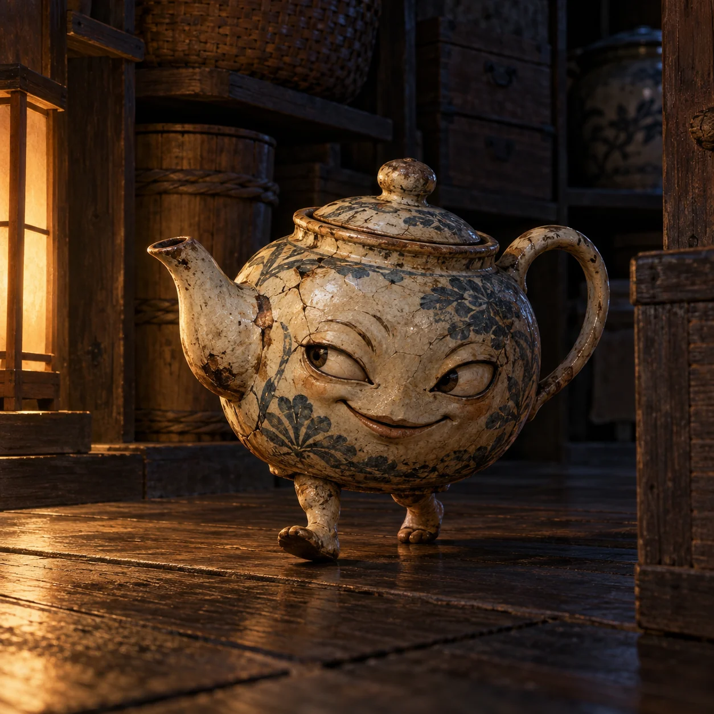
One animated teapot with legs and face, documented in yōkai object-spirit art
Aura: Uncanny mischievous object sentience, ambiguous rather than automatically evil
Audit ciri dan sumber
- Animated household object
- Teapot with lid spout handle
- Face and legs
- Old worn ceramic material
- No fur or tanuki tail
Observed one aged cracked ceramic teapot, intact lid, spout and handle, sentient eyes and sly smile on its body, two short non-furry legs stepping across a wooden storeroom floor. Warm lantern light and deep shadows convey uncanny playfulness. No fur, tail, hidden tanuki body, humanoid torso, horns, weapons, text or watermark.
Review sumberUse case: historical-scene. ONE square detailed painterly naturalistic encyclopedia illustration of a Japanese Tsukumogami, selecting ONE documented animated household teapot variant from yōkai art. One extremely old ceramic Japanese teapot has gained a spirit: recognizable rounded teapot body with lid, spout and curved handle, two small non-furry legs sprouting beneath it, and a clear mischievous face on the front of the vessel. Cracked worn glaze and subtle patina suggest a near-century of use; it is alive, stepping quietly across the floor of a traditional dim Japanese storeroom at night. Slightly uncanny playful sentience, ambiguous rather than automatically demonic, restrained warm light on ceramic against deep wooden shadows. The teapot itself is the character, not a creature sitting inside it. Central complete teapot comfortably in frame, lovingly precise ceramic material and painterly naturalistic detail. Invariants: a household object animated by a spirit; teapot remains teapot-shaped; legs and face. Avoid fur, tail or tanuki body, since those denote shapeshifting tanuki rather than this tool spirit; no humanoid torso or clothing, horns, wings, weapon, blood, cute toy mascot, other animated objects, lettering, watermark, collage or border.
Alkonost
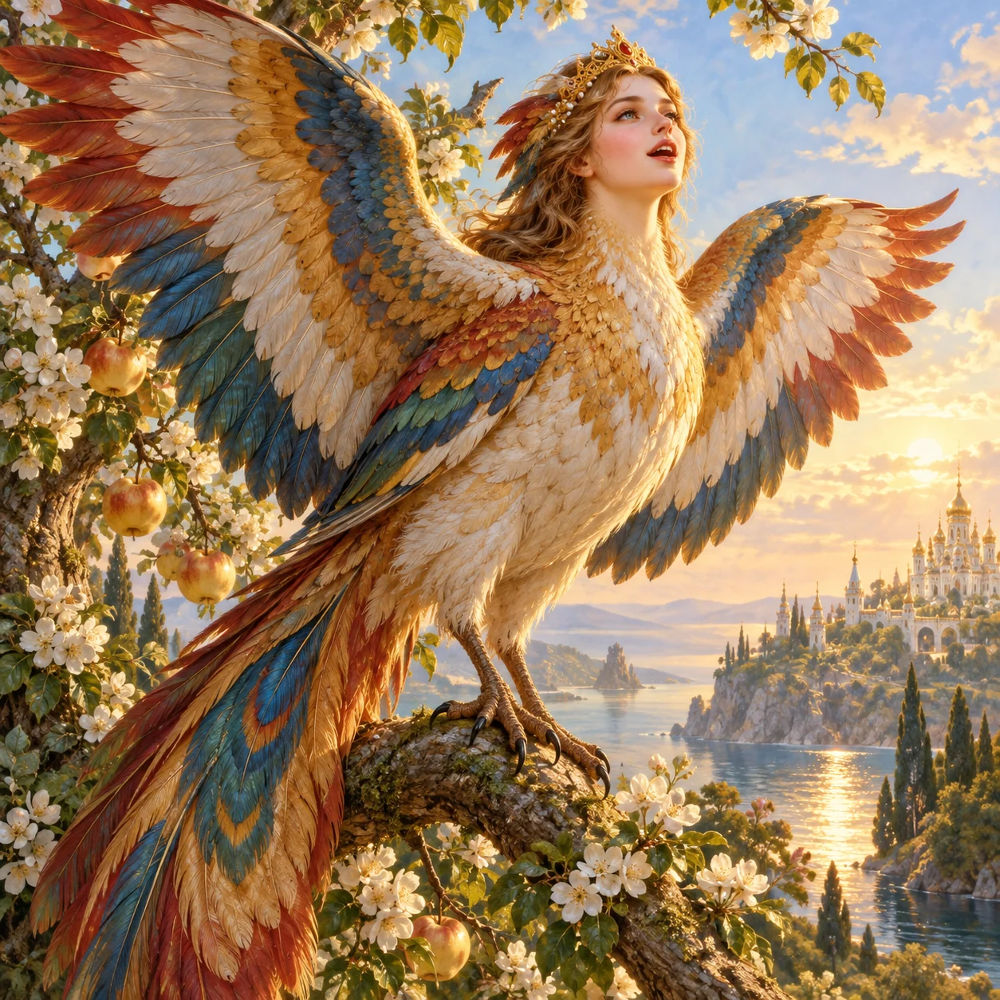
Russian woman-headed paradise bird
Aura: Radiant benevolent happiness and paradise
Audit ciri dan sumber
- Single Alkonost: human female HEAD integrated directly into a fully feathered BIRD body with two great multicolored avian wings, two bird legs with talons and long feather tail. Tiny source-supported crown on head. No human torso, arms or human legs, no human in bird costume. Perched in luminous paradise orchard near calm shore, serene open singing mouth.
- Radiant benevolent happiness and paradise
- Creature-specific anatomy is clearly visible; no ordinary human dramatic portrait
Full-size original inspected: woman's head joins a fully feathered multicolored bird body; two avian wings, two taloned bird feet, long feather tail and small crown. No human torso, arms or legs; joyful singing paradise mood.
Review sumberUse case: stylized-concept. Asset type: Mythics encyclopedia character illustration. ONE square high-detail naturalistic painterly illustration. Subject: Alkonost. Single Alkonost: human female HEAD integrated directly into a fully feathered BIRD body with two great multicolored avian wings, two bird legs with talons and long feather tail. Tiny source-supported crown on head. No human torso, arms or human legs, no human in bird costume. Perched in luminous paradise orchard near calm shore, serene open singing mouth. Mood: Radiant benevolent happiness and paradise. Full defining anatomy visible, main creature prominent, balanced legible composition, detailed organic textures, atmospheric setting. No text, watermark, frame, collage, labels, game-interface or extra unrelated character. Depict folklore rather than a modern franchise. Palette, landscape and pose are artistic interpretation; do not invent conflicting signature anatomy.
Amabie
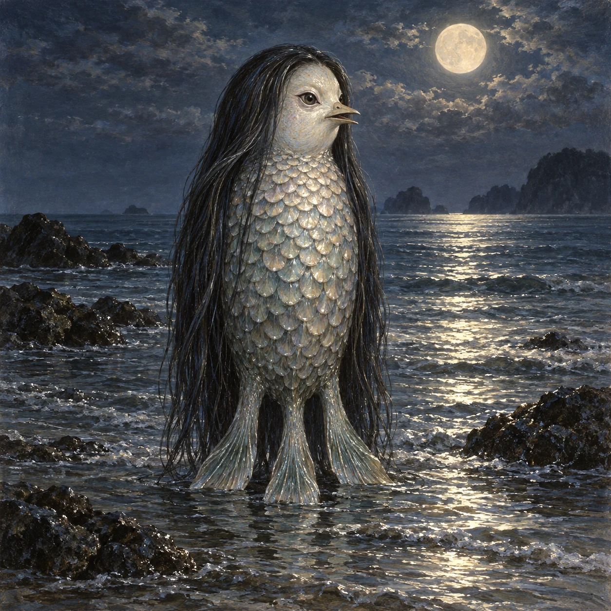
1846 kawaraban likeness preserved Kyoto University, naturalistic interpretation
Aura: Enigmatic prophetic sea presence
Audit ciri dan sumber
- Long hair and projecting beaklike mouth
- Fish-scaled compact body without arms
- Exactly three fin-leg appendages visible
Observed rounded pale face with projecting birdlike beak, long dark hair down both sides, overlapping fish scales over compact upright body and exactly three separate downward finlike legs. No arms, ordinary mermaid tail, wings or horns. Quiet moonlit Higo-style shore, reflective eyes and silver glow convey enigmatic prophetic yokai rather than horror or cute mascot.
Review sumberUse case: historical-scene. One square 1024x1024 detailed painterly naturalistic encyclopedia illustration of AMABIE, accurately based on its sole 1846 Higo kawaraban likeness preserved at Kyoto University Library. A solitary enigmatic sea yokai on a shallow night seashore. Specific mandatory silhouette: pale rounded humanlike face with visible short projecting pointed BIRDLIKE BEAK mouth, long straight dark hair hanging down BOTH sides nearly to its base, one plump upright compact fish-SCALED torso entirely covered in overlapping rounded scales, and EXACTLY THREE narrow separate dangling leglike fin-tail appendages extending down from its base. NO arms. Three lower appendages countably visible: left, central, right, all inside frame. Eyes alert and mysterious, not oversized anime eyes. Soft uncanny light on sea, quiet prophetic mystical presence rather than threatening demon or cheerful cartoon mascot. Naturalistic fish scales and wet flowing hair in exquisite delicate oil brushwork, subtle silver sea palette. Compact full form centrally framed with margin, all three fin tails clearly distinct against shallow dark water. No ordinary mermaid single tail, no two human legs, no wings, horns, exposed chest, weapons, human companion, text, labels, watermark or border. Do not hybridize with monkeylike Amabiko.
Altamaha-ha
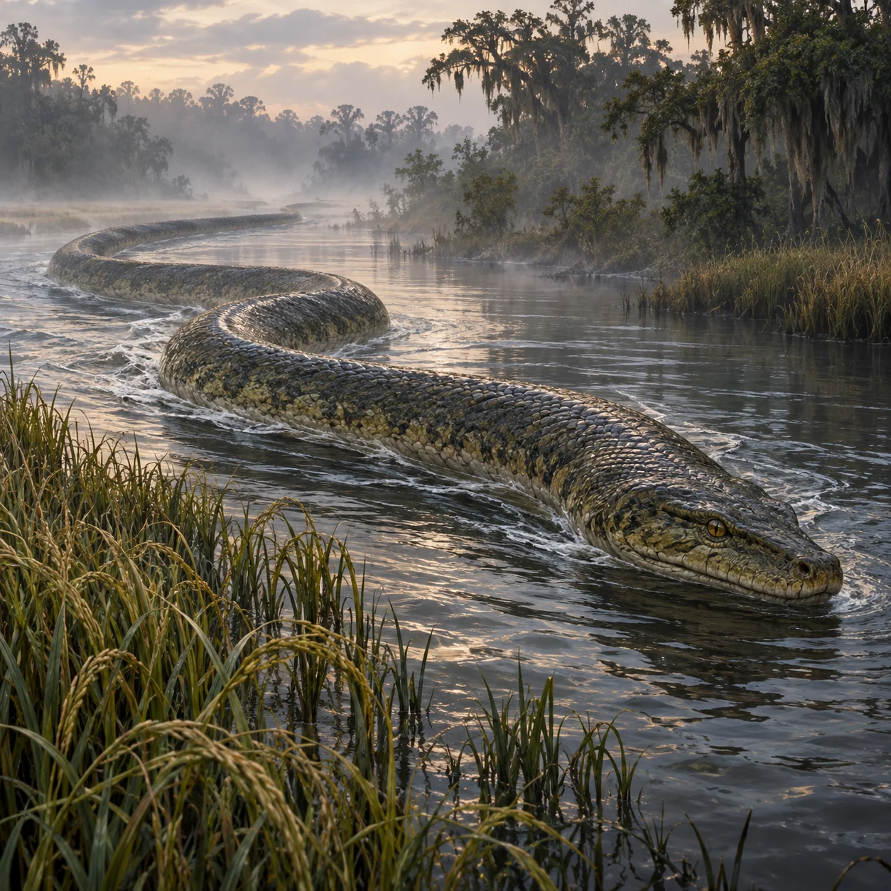
Giant serpentine river legend
Aura: Elusive eerie river creature
Audit ciri dan sumber
- A giant long serpent-like aquatic creature with one reptilian head and single long sinuous scaled body swimming through a tidal Georgia river beside abandoned rice-field grasses. Clear elongated nonhuman silhouette and visible wake. Misty coastal river mood, no humanoid, no industrial structures, no feathers or invented extra heads.
- Elusive eerie river creature
- Creature-specific anatomy is clearly visible; no ordinary human dramatic portrait
Full-size original inspected: one long sinuous giant river serpent with coherent single reptilian head and scaly continuous body. Tidal marsh and wake, no humanoid or invented multiple heads. Elusive regional folklore illustration.
Review sumberUse case: stylized-concept. Asset type: Mythics encyclopedia character illustration. ONE square high-detail naturalistic painterly illustration. Subject: Altamaha-ha. A giant long serpent-like aquatic creature with one reptilian head and single long sinuous scaled body swimming through a tidal Georgia river beside abandoned rice-field grasses. Clear elongated nonhuman silhouette and visible wake. Misty coastal river mood, no humanoid, no industrial structures, no feathers or invented extra heads. Mood: Elusive eerie river creature. Full defining anatomy visible, main creature prominent, balanced legible composition, detailed organic textures, atmospheric setting. No text, watermark, frame, collage, labels, game-interface or extra unrelated character. Depict folklore rather than a modern franchise. Palette, landscape and pose are artistic interpretation; do not invent conflicting signature anatomy.
Tsuchinoko
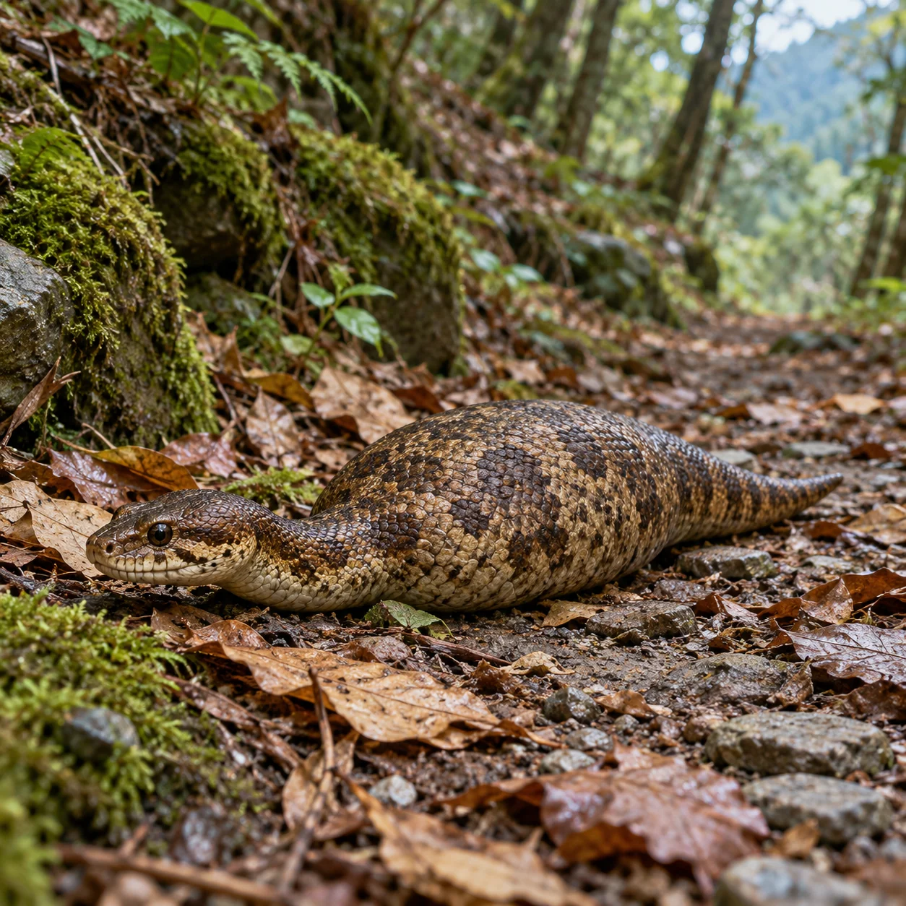
Short bottle-thick snake-like regional report, approximately 50 centimeters
Aura: elusive natural woodland mystery
Audit ciri dan sumber
- Short thick bottle-shaped snake body
- Protruding snake head and rapidly tapering short tail
- Limbless small animal scaled by leaves
- Elusive natural mysterious woodland mood
Observed short very thick bottle-shaped snake body with protruding flattened head on short neck and short tapering tail, no limbs. Brown mottled natural scales and leaf litter provide small woodland animal scale. Whole silhouette visible and clearly much stouter than ordinary long snake; quiet natural light and forest path give elusive cryptid atmosphere.
Review sumberOne square detailed painterly naturalistic folklore encyclopedia illustration of Tsuchinoko, the Japanese short thick snake-like cryptid. ONE limbless snake on a Japanese forest mountain path beside fallen leaves and moss. Its TOTAL LENGTH is only about 50 centimeters; a very short broad bottle-thick swollen central body tapers rapidly to a small short pointed tail, with a distinct protruding flattened snake head on a short thin neck. It is NOT a long coiled snake: pose straight with a mild bend so entire short chunky silhouette is obvious. Brown mottled natural scales, ordinary snake eyes, plausible wildlife texture, full form from nose to tail comfortably within frame. Low viewpoint with surrounding leaves for scale, quiet mysterious natural mood, elusive woodland animal. No legs, claws, horns, wings, fur, clothing, weapons, glowing eyes, humanoid features, fire or supernatural effects. Not cartoon cute; a careful naturalistic interpretation of an unconfirmed folklore animal. No text or watermark.
Akaname
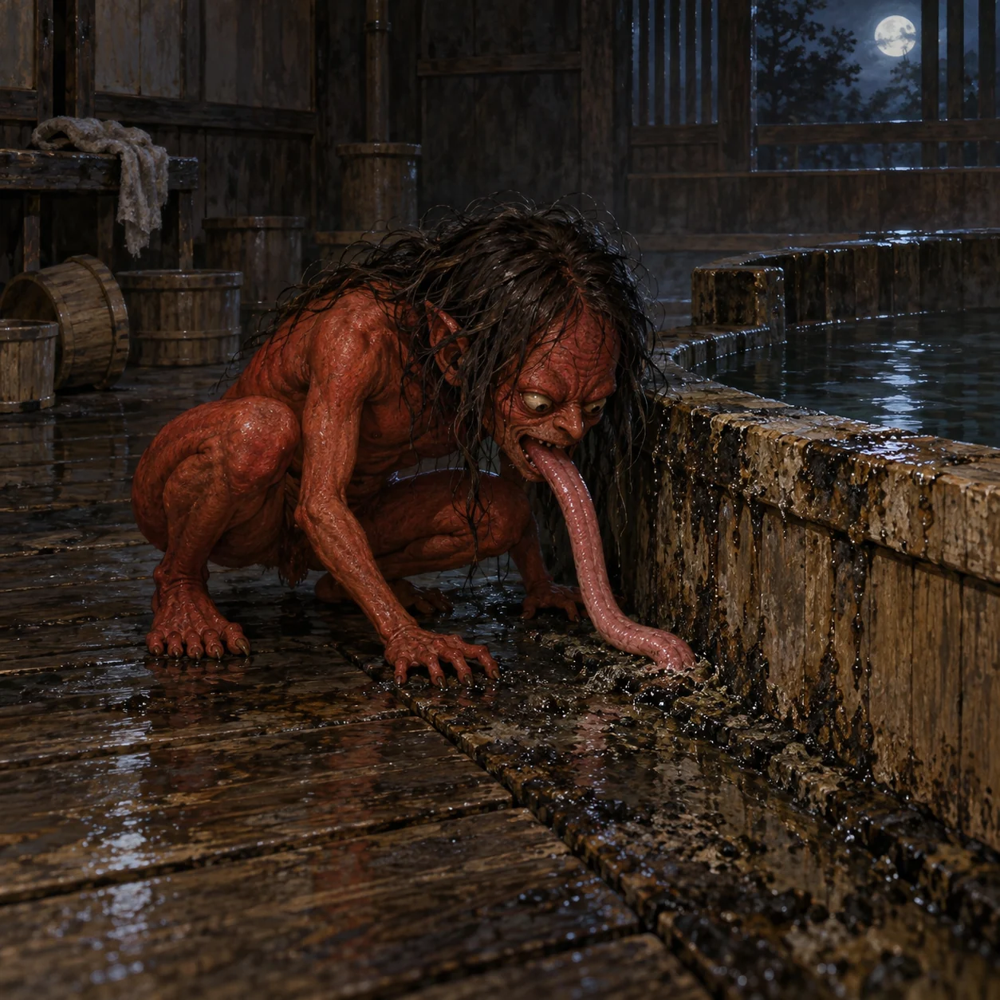
Red-skinned filth licker
Aura: Eerie grotesque secretive nighttime yokai
Audit ciri dan sumber
- Red goblinlike crouching figure
- Long tongue visibly licking bathhouse scum
- Eerie nighttime dirty bathing place
Observed red-skinned small hunched humanoid with tangled hair and two arms/two legs. Very long tongue clearly connected to mouth and touching thick dark scum along wooden bath floor; wet planks and tubs under moonlight. Uncanny intense staring eyes, grotesque licking posture and grimy setting provide eerie aura. No horns, wings or weapons.
Review sumberUse case: historical-scene. ONE square 1024x1024 painterly naturalistic encyclopedia illustration of AKANAME, Japanese filth-licker yokai in the red-skinned goblinlike variant. One small uncanny humanoid goblin with red skin from head to toe, tangled dark hair, crouching low in an old unclean Japanese wooden bathhouse at dead of night. Its defining VERY LONG flexible prehensile tongue visibly extends from its mouth and curls downward to lick accumulated dark grime on the edge and floor beside the wooden bathing tub. Tongue connection to mouth and contact with scum must be unmistakable. Two arms and two legs, lean hunched goblin anatomy, hands and feet supporting squat. Damp dark wooden planks, crusted residue, dim moonlight. Eerie secretive grotesque atmosphere rather than cute mascot or violent demon; faithfully emphasize filthy nighttime licking behavior. Whole creature comfortably in frame, richly detailed naturalistic brushwork. No horns, wings, weapons, giant demon, gore, people, modern tiled bathroom, writing, text, watermark, labels or extra limbs.
Anguane
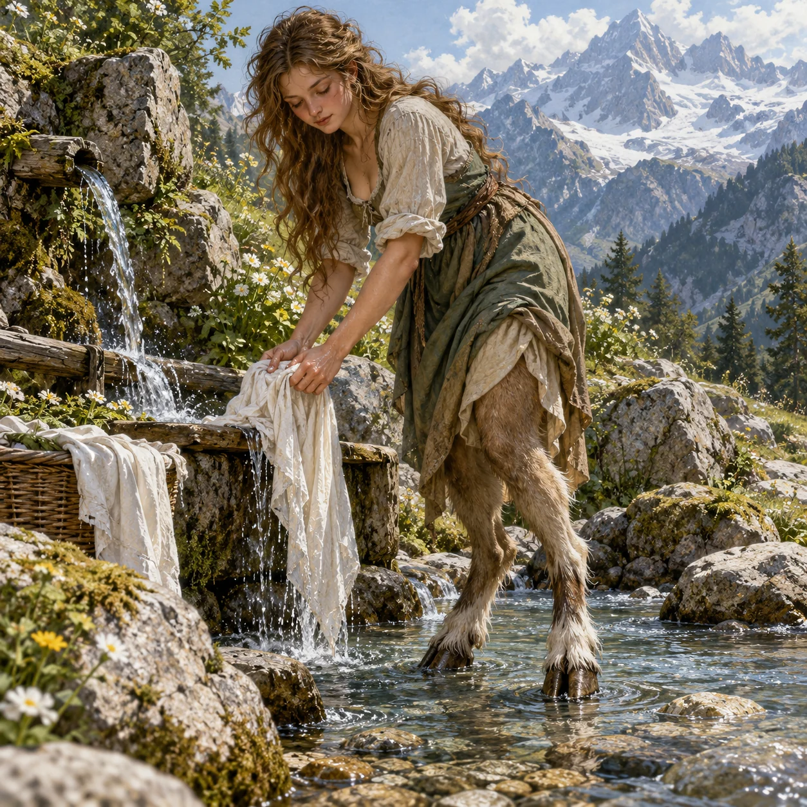
Alpine goat-footed water nymph
Aura: Quiet uncanny mountain-water presence
Audit ciri dan sumber
- An Alpine water nymph with human upper body in a modest rustic tunic and unmistakably nonhuman FURRY GOAT lower legs ending in TWO SPLIT CLOVEN HOOVES, fully exposed and easy to see. Standing at an Alpine spring washing linen. Entire figure shown; no hidden feet, no ordinary human legs/shoes, no horns or fairy wings.
- Quiet uncanny mountain-water presence
- Creature-specific anatomy is clearly visible; no ordinary human dramatic portrait
Full-size original inspected: both goat-furred lower legs end in clearly exposed split cloven hooves. Human upper body washes linen by an Alpine spring; no ordinary human legs, hidden feet, extra horns or fairy wings. Source-described physical distinction is prominent.
Review sumberUse case: stylized-concept. Asset type: Mythics encyclopedia character illustration. ONE square high-detail naturalistic painterly illustration. Subject: Anguane. An Alpine water nymph with human upper body in a modest rustic tunic and unmistakably nonhuman FURRY GOAT lower legs ending in TWO SPLIT CLOVEN HOOVES, fully exposed and easy to see. Standing at an Alpine spring washing linen. Entire figure shown; no hidden feet, no ordinary human legs/shoes, no horns or fairy wings. Mood: Quiet uncanny mountain-water presence. Full defining anatomy visible, main creature prominent, balanced legible composition, detailed organic textures, atmospheric setting. No text, watermark, frame, collage, labels, game-interface or extra unrelated character. Depict folklore rather than a modern franchise. Palette, landscape and pose are artistic interpretation; do not invent conflicting signature anatomy.
Inugami
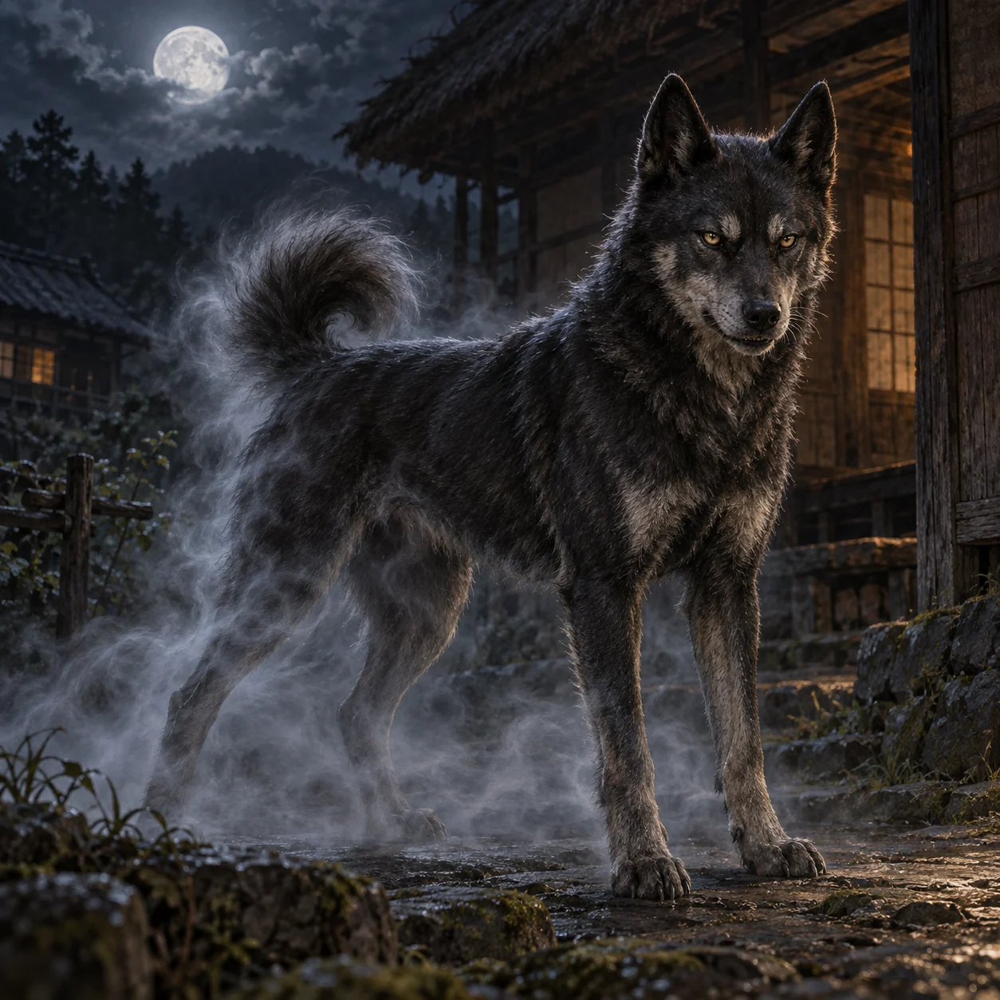
Interpretive ordinary canine spirit form, feared tsukimono aspect
Aura: ominous watchful dangerous possession spirit
Audit ciri dan sumber
- Single canine spirit with ordinary dog anatomy
- Four legs and one tail, no humanoid body
- Subtle spectral edges in rural Japanese setting
- Ominous feared possession-spirit aura
Observed dog with pointed ears, long muzzle, four canine legs and one curled tail, no humanoid body or costume. Mist dissolves rear fur edges, creating spectral quality. Fixed stern eyes and restrained growl in dark moonlit rural Japanese setting convey feared ominous spirit presence. Canine silhouette remains clear.
Review sumberOne square detailed painterly naturalistic folklore encyclopedia illustration of Inugami, a Japanese dog spirit. ONE spectral DOG, in ordinary canine form rather than an invented human dog hybrid. Lean medium-sized Japanese village dog with pointed ears, long muzzle, four natural dog legs, one curled tail and dark charcoal fur, standing alert in front of a dim old rural Japanese house. Its edges faintly dissolve into low mist to suggest a spirit, while face, paws and torso remain clearly canine. Full body and tail comfortably framed. Ominous moonlit shadow, intensely watchful stern eyes, a hint of restrained growl, eerie dangerous spiritual presence expressing the feared possession aspect of the lore; not a cute friendly pet, not cartoon, not a benevolent sun god. No people, no blood or injury, no ritual violence, no severed parts, no armor, robes, jewelry, horns, wings, weapons, extra tails or legs. This is an interpretive depiction of a dog spirit, not a fixed iconography claim. Rich painted realistic fur and wood textures. No text or watermark.
Ryūjin
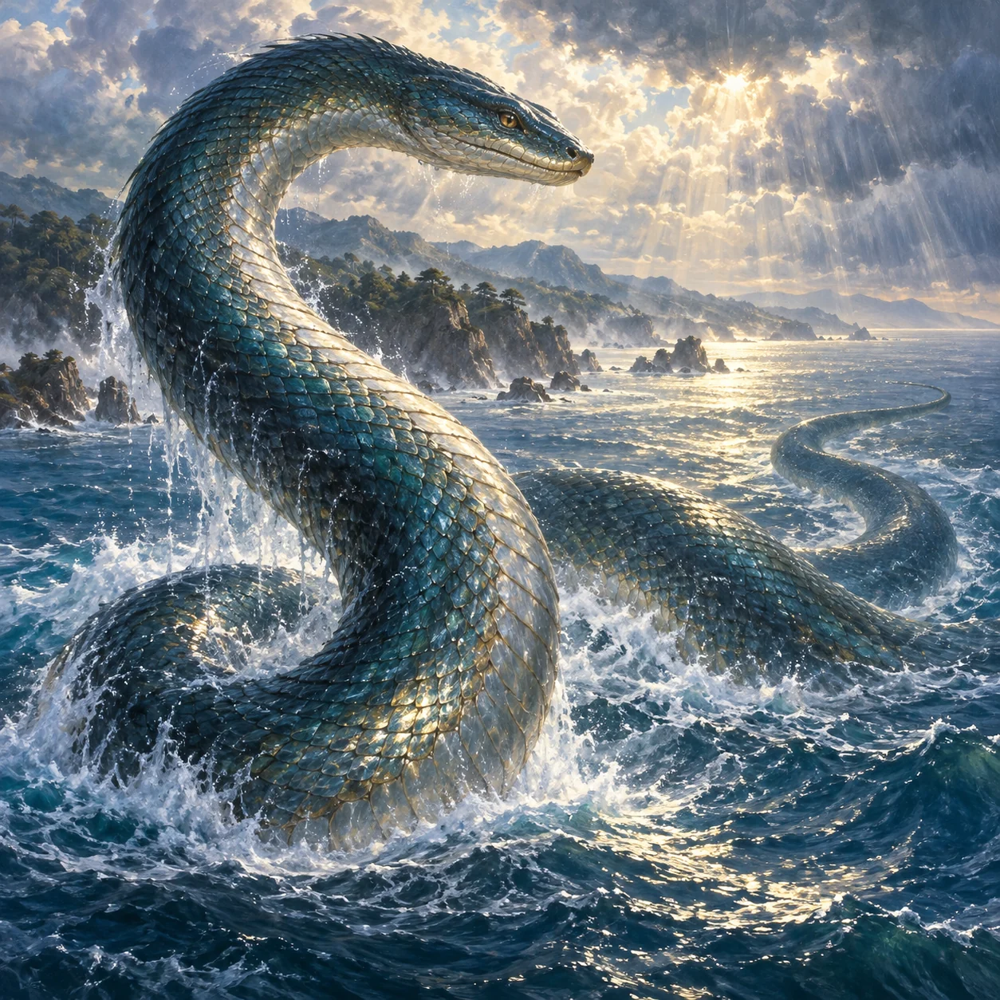
Deified serpent water kami, Kokugakuin tradition
Aura: Revered stately ocean and rain deity
Audit ciri dan sumber
- Deified serpent water-kami variant
- Long coherent scaled limbless serpent
- Divine royal protective sea-rain aura
Observed enormous teal scaled serpent with single calm snake head, long coiling body and tapered tail, no limbs or wings. Stately raised head and attentive peaceful eye under luminous rain-filled clouds over Japanese coast convey royal numinous water kami rather than horror. No unsupported crown, horns, weapon or western dragon form.
Review sumberUse case: historical-scene. One square 1024x1024 naturalistic painterly encyclopedia illustration of RYUJIN, Japanese dragon water kami, selecting the scholarly documented DEIFIED SERPENT variant rather than inventing a standardized monster. One immense long beautiful scaled snake, limbless and wingless, emerging in elegant coiling curves from a deep blue ocean pool. Single serpentine head, alert ancient watchful eyes, closed calm mouth and continuous tapered serpent tail. No horns, antlers, legs, wings, fire breath, crown or magical weapon. Royal numinous dignity expressed through enormous scale, stately poise and luminous rain-filled clouds and sea light; a deeply revered water and rain deity, protective calm-seas aura, not predatory horror. Natural dark teal serpent scales with restrained reflected silver-gold sunlight, drifting sea spray and gentle rain over Japanese coastline. Full coherent serpentine form comfortably in square frame, exquisite detailed painterly brushwork. No extra characters, no humanoid body, no generic western dragon, text, labels, hieroglyphs, watermark or frame. Visualize the revered divine serpentine water kami documented in Kokugakuin Encyclopedia of Shinto.
Tarand (animal)

Ox-sized deer-headed bestiary animal
Aura: Marvelous elusive bestiary animal
Audit ciri dan sumber
- An ox-sized quadrupedal legendary beast with a clearly DEER head and antlers and bulky OX-sized animal body, fully furred coat changing subtly between surrounding forest browns and greens. Four hoofed legs, no human components, no lizard skin. Standing in a woodland clearing.
- Marvelous elusive bestiary animal
- Creature-specific anatomy is clearly visible; no ordinary human dramatic portrait
Full-size original inspected: one ox-sized bulky furred quadruped with deer head and branched antlers, four split hooves. Brown-green coat blends with woodland. Coherent legendary animal morphology rather than humanoid portrait; camouflage illustrated artistically.
Review sumberUse case: stylized-concept. Asset type: Mythics encyclopedia character illustration. ONE square high-detail naturalistic painterly illustration. Subject: Tarand (animal). An ox-sized quadrupedal legendary beast with a clearly DEER head and antlers and bulky OX-sized animal body, fully furred coat changing subtly between surrounding forest browns and greens. Four hoofed legs, no human components, no lizard skin. Standing in a woodland clearing. Mood: Marvelous elusive bestiary animal. Full defining anatomy visible, main creature prominent, balanced legible composition, detailed organic textures, atmospheric setting. No text, watermark, frame, collage, labels, game-interface or extra unrelated character. Depict folklore rather than a modern franchise. Palette, landscape and pose are artistic interpretation; do not invent conflicting signature anatomy.
Abura-sumashi
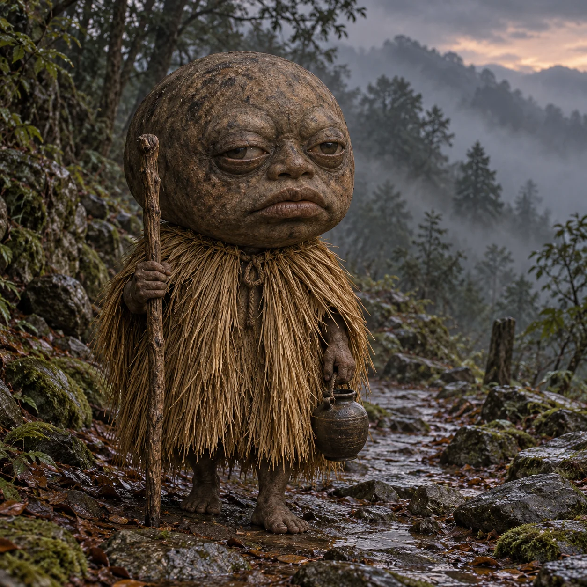
Modern Mizuki-associated bronze-statue form (Museum Road statue 131), with source-backed oil jar; not asserted as old oral iconography
Aura: stoic enigmatic quietly uncanny mountain presence
Audit ciri dan sumber
- Short humanoid with oversized rounded stone/potato-like bald head
- Heavy round eyes and protruding solemn lips
- Straw rain cape and walking staff in modern statue variant
- Oil jar documented in oral story
- Enigmatic quietly uncanny mountain aura
Observed very large rounded bald stone-textured head, heavy half-closed round eyes and broad protruding solemn lips matching inspected official modern bronze statue. Short humanoid body wears coarse straw cape, two arms hold walking staff and ceramic oil jar, two feet visible. Stoic unsmiling face and wet dusk mountain path give enigmatic uncanny aura. Explicit modern variant avoids presenting absent oral anatomy as settled.
Review sumberOne square detailed painterly naturalistic encyclopedia illustration of Abura-sumashi, choosing the recognizable MODERN Mizuki-associated form documented by bronze statue number 131 at the Mizuki Shigeru Museum Road, not claiming a fixed appearance in old oral legend. One short stocky humanoid with a very large round stone-like potato-shaped bald head, heavy round half-closed eyes, broad protruding solemn lips, and tiny human-shaped body wearing a coarse straw rain cape. Two small arms and two short legs; one hand holds a plain wooden walking staff, the other carries a small ceramic oil jar, the documented folklore attribute. Full figure and staff comfortably visible on an isolated Kumamoto forest mountain path with mossy stones and dusk mist. Earth brown-gray colors, rough stone-like face texture and realistic straw fiber. Mood strange, enigmatic and quietly uncanny, stoic unsmiling watchful presence, not adorable, not overtly demonic, no gore. Preserve oversized round head, straw cape, staff and oil jar. No horns, wings, extra limbs, armor or weapons, no tree bark skin, no green contortionist anatomy, no text or watermark.
Balaur
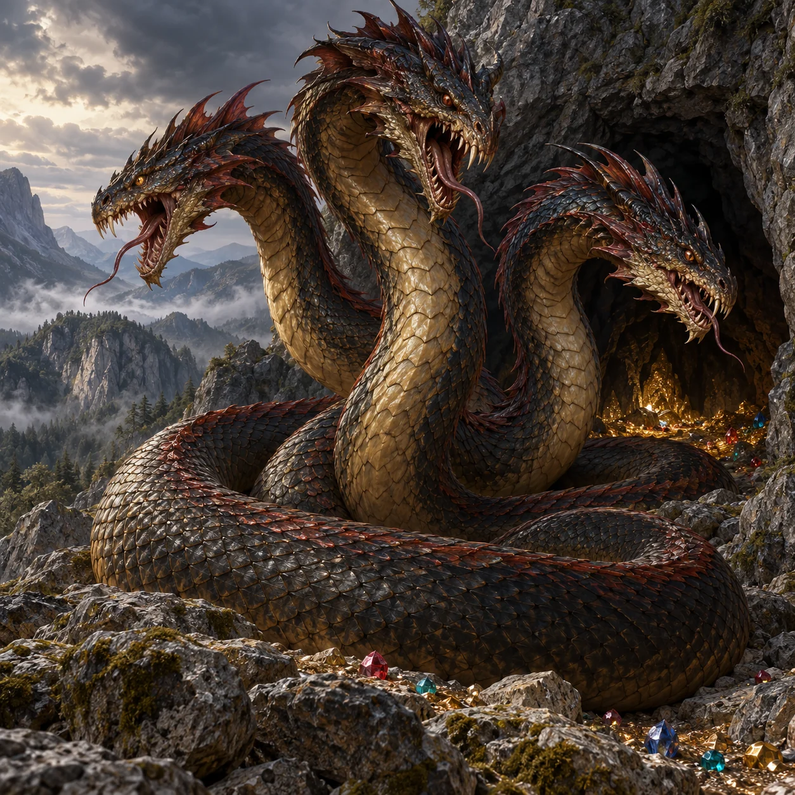
Three-headed Romanian serpent dragon
Aura: Malevolent treasure-guarding dread
Audit ciri dan sumber
- A single enormous reptilian SERPENT body with exactly THREE distinct dragon heads on three separated necks, all three visible clearly. Coiled beside a rocky Romanian mountain cave with a few precious stones. No limbs needed, no wings for this selected variant. Menacing jaws, predatory monster. No extra head, no hydra-nine-head anatomy, no people.
- Malevolent treasure-guarding dread
- Creature-specific anatomy is clearly visible; no ordinary human dramatic portrait
Original individually inspected: exactly three reptilian heads on three separate necks join a single coiled snake body. No wings or limbs in this chosen serpent variant, precious stones at cave, fierce threatening expression. All three heads are distinct and clearly countable.
Review sumberUse case: stylized-concept. Asset type: Mythics encyclopedia character illustration. ONE square high-detail naturalistic painterly illustration. Subject: Balaur. A single enormous reptilian SERPENT body with exactly THREE distinct dragon heads on three separated necks, all three visible clearly. Coiled beside a rocky Romanian mountain cave with a few precious stones. No limbs needed, no wings for this selected variant. Menacing jaws, predatory monster. No extra head, no hydra-nine-head anatomy, no people. Mood: Malevolent treasure-guarding dread. Full defining anatomy visible, main creature prominent, balanced legible composition, detailed organic textures, atmospheric setting. No text, watermark, frame, collage, labels, game-interface or extra unrelated character. Depict folklore rather than a modern franchise. Palette, landscape and pose are artistic interpretation; do not invent conflicting signature anatomy.
Banyoles monster
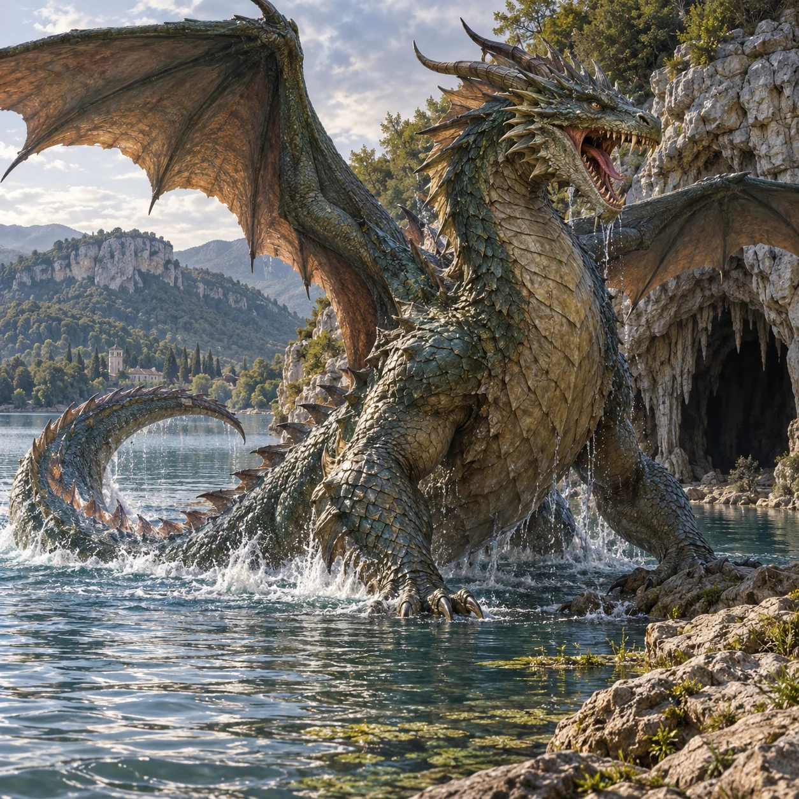
Flying scaled Catalan lake dragon
Aura: Fierce resilient lake monster
Audit ciri dan sumber
- One huge fierce hard-scaled dragon emerging from Lake Banyoles beside a cave. Reptilian head, thick armored scales, coherent four-legged body and two wings to reflect ability to fly/swim/walk. Broad tail rises from lake, no human face or rider. Catalan lake and limestone cave setting.
- Fierce resilient lake monster
- Creature-specific anatomy is clearly visible; no ordinary human dramatic portrait
Original individually inspected: fierce scaled dragon with one reptilian head, two wings, coherent animal body and long tail surfacing by lakeshore cave. Hard armorlike scales support source resilient lake-dragon description. No human face, rider or ordinary portrait.
Review sumberUse case: stylized-concept. Asset type: Mythics encyclopedia character illustration. ONE square high-detail naturalistic painterly illustration. Subject: Banyoles monster. One huge fierce hard-scaled dragon emerging from Lake Banyoles beside a cave. Reptilian head, thick armored scales, coherent four-legged body and two wings to reflect ability to fly/swim/walk. Broad tail rises from lake, no human face or rider. Catalan lake and limestone cave setting. Mood: Fierce resilient lake monster. Full defining anatomy visible, main creature prominent, balanced legible composition, detailed organic textures, atmospheric setting. No text, watermark, frame, collage, labels, game-interface or extra unrelated character. Depict folklore rather than a modern franchise. Palette, landscape and pose are artistic interpretation; do not invent conflicting signature anatomy.
Amanojaku
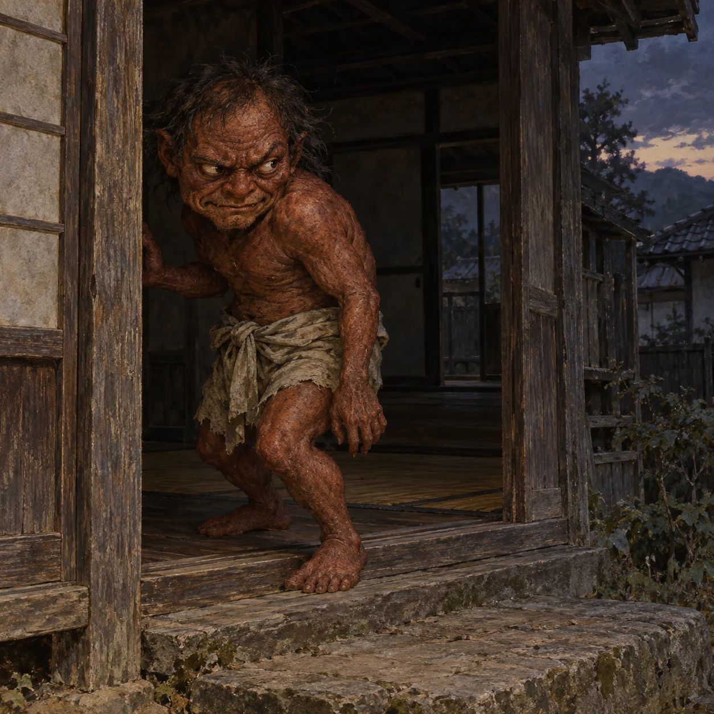
Interpretive small demon from Urikohime folk-tale, not giant regional form
Aura: malicious contrary deceitful folklore menace
Audit ciri dan sumber
- Small demon-like humanoid rather than giant variant
- Two arms and two legs with no unsourced horns or wings
- Village-house setting associated with Urikohime tale
- Malicious contrary deceitful aura
Observed small squat reddish-brown humanoid demon with two arms and legs, broad grotesque wrinkled face, rough waist cloth, no horns/wings/tail. Skulking at Japanese house doorway with narrowed sidelong eyes and crooked sneer communicates malicious deceitful contrary temperament. Full figure framed and no victims shown.
Review sumberOne square detailed painterly naturalistic encyclopedia illustration of Amanojaku, the Japanese small contrary demon of the Urikohime folktale. Choose SMALL DEMON form, not giant or a girl disguise. A single squat small humanoid goblin with coarse dark reddish-brown skin, disheveled short hair, grotesque wrinkled broad face, two arms and two legs, dressed only in a simple rough traditional cloth waist wrap, skulks at the doorway of an empty old Japanese village house. This is an interpretive demon form without invented defining attributes. Expression maliciously contrary and deceitful: sharp suspicious eyes, crooked sneer, deliberately defiant hunched posture. Eerie shadowed evening, folkloric menace rather than comic imp. Full body comfortably visible, no other characters or victims. NO horns, wings, tail, extra limbs, armor or weapon because those attributes are not fixed by the cited folktale. No gore, wounds, blood, cute childlike face, glowing magical costume, text or watermark. Detailed painted skin and wooden house textures.
Sōjōbō
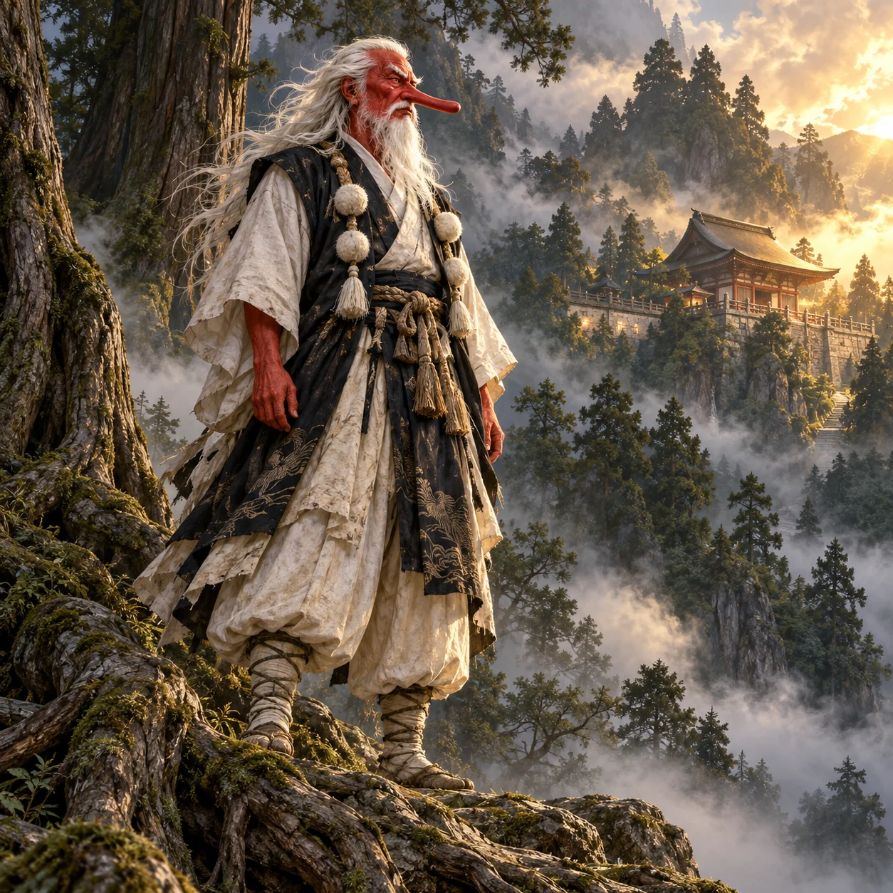
Long-nosed Kurama great tengu
Aura: Daunting wise supernatural teacher
Audit ciri dan sumber
- Great tengu human face with very long nose
- Mountain monk form
- Stern ancient tactics teacher aura
Observed elderly red human face with very long projecting human nose, white beard and hair, yamabushi-style robes, ordinary human arms and legs. Stern gaze and imposing poised stance over misty Kurama cedars and temple create masterful ancient teacher aura. No crow head or beak.
Review sumberOne square detailed naturalistic painterly encyclopedia illustration of SOJOBO, King Tengu of Mount Kurama, in the documented LONG-HUMAN-NOSED great tengu variant. One elderly stern Japanese male mountain monk, RED human face, extremely long projecting HUMAN NOSE clearly visible in three-quarter profile, flowing white hair and white beard, simple traditional yamabushi robes. No beak. Stand solemnly on old cedar-rooted Kurama mountain slope, two human arms and legs with empty hands, full figure inside frame. Proud ancient master of war tactics, wise yet daunting supernatural teacher aura, cold mist and dramatic golden temple light among mountain forest. No young warrior, no other tengu, no crow head, horns, bat wings, invented weapons, generic fantasy armor, text, watermark or labels.
Bauk (mythology)

Bear-like animal bogeyman interpretation
Aura: Lurking predatory bogeyman
Audit ciri dan sumber
- A clumsily walking ominous bear-like animal lurking inside a dark abandoned Serbian stone dwelling. Large hunched fully furred quadruped bear body and animal head, black eyes, heavy paws. Not a human-faced demon or human in costume. Its outline is lit by narrow doorway, darkness hints at its folklore fear of light.
- Lurking predatory bogeyman
- Creature-specific anatomy is clearly visible; no ordinary human dramatic portrait
Original individually inspected: one fully furred bear-like quadruped with animal head and four paws looming inside abandoned stone dwelling. No human torso, costume or invented extra limbs. Predatory lurking stance follows source bear interpretation.
Review sumberUse case: stylized-concept. Asset type: Mythics encyclopedia character illustration. ONE square high-detail naturalistic painterly illustration. Subject: Bauk (mythology). A clumsily walking ominous bear-like animal lurking inside a dark abandoned Serbian stone dwelling. Large hunched fully furred quadruped bear body and animal head, black eyes, heavy paws. Not a human-faced demon or human in costume. Its outline is lit by narrow doorway, darkness hints at its folklore fear of light. Mood: Lurking predatory bogeyman. Full defining anatomy visible, main creature prominent, balanced legible composition, detailed organic textures, atmospheric setting. No text, watermark, frame, collage, labels, game-interface or extra unrelated character. Depict folklore rather than a modern franchise. Palette, landscape and pose are artistic interpretation; do not invent conflicting signature anatomy.
Tsuchigumo
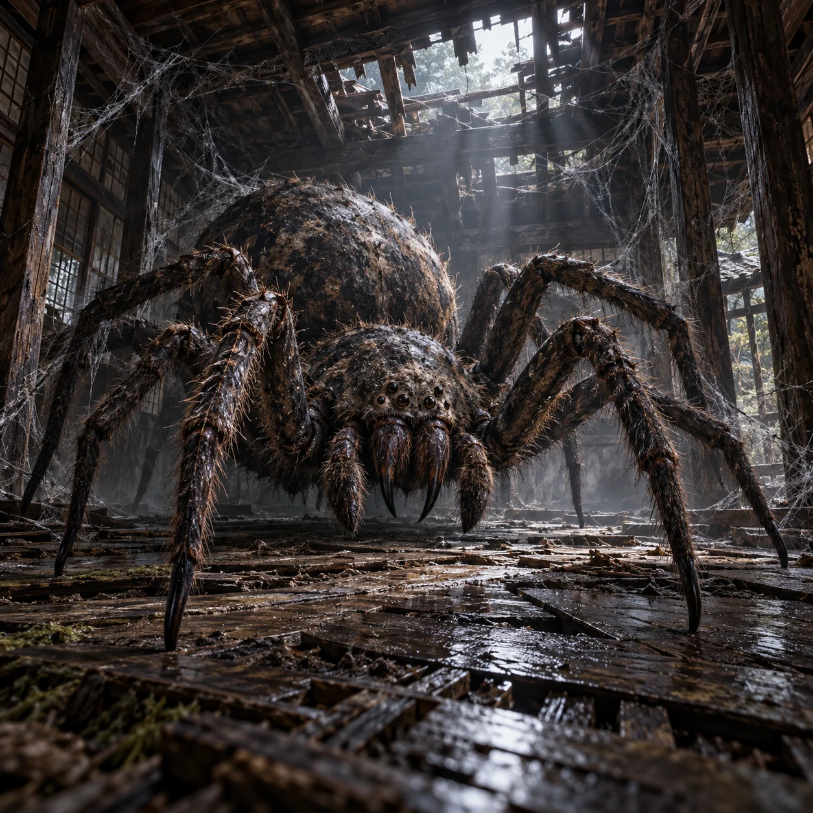
Giant ground spider form from Tsuchigumo no Soshi Emaki, not monk disguise
Aura: terrifying predatory supernatural arachnid horror
Audit ciri dan sumber
- Colossal ground spider form
- Exactly eight jointed legs and coherent arachnid body
- Old Japanese house and webs
- Terrifying predatory earth-spider demon aura
Observed enormous bristly ground spider with distinct bulbous abdomen and cephalothorax, eight jointed walking legs arranged four per side (rear legs partly behind foreground legs), two short mouth palps and strong chelicerae. Several small eyes, no human face. Ruined timber house and extensive webs match setting. Low looming stance, harsh backlight and oppressive scale convey terrifying predatory demon aura.
Review sumberOne square detailed painterly naturalistic encyclopedia illustration of Tsuchigumo, the Japanese giant earth spider demon. Choose its GIANT SPIDER form, not monk disguise or humanoid giant. A single colossal hairy ground spider emerges in an old abandoned Japanese wooden house. Exactly EIGHT long jointed spider legs attached to the cephalothorax, four on each side; two small natural mouth palps are not extra legs. Bulbous abdomen, low ground-spider body, dark bristling hair, several small dark eyes, strong natural chelicerae. Web strands stretch among decaying wooden pillars. Low viewpoint and broken roof light make its enormous scale readable. Full spider comfortably framed with all eight leg ends visible and separated so they can be counted. Aura must be terrifying predatory supernatural horror, oppressive darkness and uncanny menace; no cute cartoon, no human face, no horns or wings, no invented weapons, no human victims, blood or injuries. Rich painterly wood and arachnid textures, one creature only, no text or watermark.
Bicorn and Chichevache
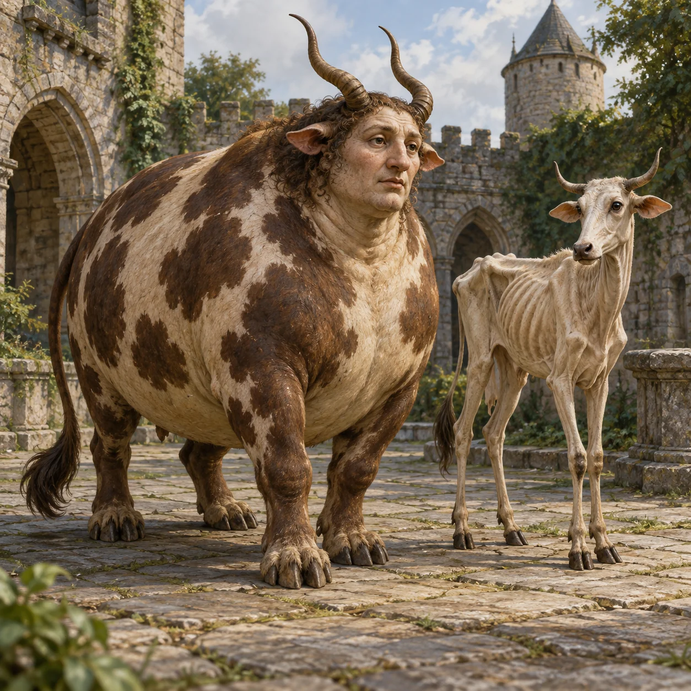
Pair of medieval satirical beasts
Aura: Strange satirical medieval bestiary
Audit ciri dan sumber
- Exactly TWO distinct quadrupedal fabulous beasts. Bicorn is FAT and round-bodied, a cow-panther hybrid with human-like FACE and exactly two horns, four animal legs and long tail. Chichevache is contrasting extremely THIN and lean cow-like creature with clearly narrow ribs. Both nonhuman animal bodies shown entirely in a medieval courtyard. No people, eating, gore, signs or text.
- Strange satirical medieval bestiary
- Creature-specific anatomy is clearly visible; no ordinary human dramatic portrait
Original individually inspected: exactly two quadrupedal beasts. Fat Bicorn has two horns, humanlike face, rounded cow body with feline paws; thin Chichevache has emaciated cow shape with prominent ribs. Contrasting fullness visibly matches satire; no normal human body or gore.
Review sumberUse case: stylized-concept. Asset type: Mythics encyclopedia character illustration. ONE square high-detail naturalistic painterly illustration. Subject: Bicorn and Chichevache. Exactly TWO distinct quadrupedal fabulous beasts. Bicorn is FAT and round-bodied, a cow-panther hybrid with human-like FACE and exactly two horns, four animal legs and long tail. Chichevache is contrasting extremely THIN and lean cow-like creature with clearly narrow ribs. Both nonhuman animal bodies shown entirely in a medieval courtyard. No people, eating, gore, signs or text. Mood: Strange satirical medieval bestiary. Full defining anatomy visible, main creature prominent, balanced legible composition, detailed organic textures, atmospheric setting. No text, watermark, frame, collage, labels, game-interface or extra unrelated character. Depict folklore rather than a modern franchise. Palette, landscape and pose are artistic interpretation; do not invent conflicting signature anatomy.
Ushi-oni
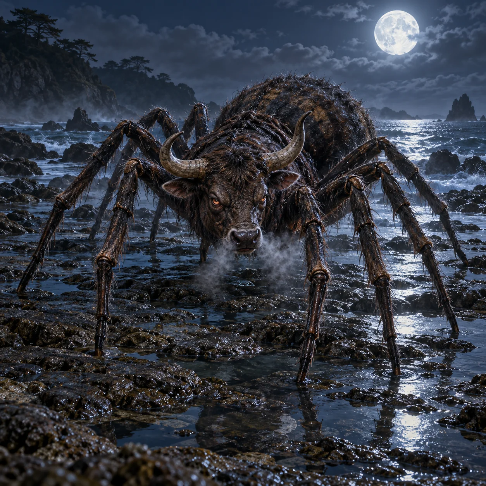
Dangerous man-eating ox-head-on-spider-body version; not Uwajima festival protective float
Aura: Terrifying predatory malevolence and disease-bearing coastal menace
Audit ciri dan sumber
- Ox head with bovine muzzle ears and two horns
- Spider torso and abdomen
- Eight long jointed spider legs; four per side visible
- Coastal tide-pool setting
- Terrifying predatory disease spirit aura
Observed one recognizable bovine head with broad muzzle, two horns and two ears attached to low rounded hairy arachnid body. Four distinct long load-bearing leg chains can be traced on each side, eight in total, with separated tips on open wet rock. No ox torso, hooves or humanoid arms. Hostile orange gaze, breath mist, black moonlit coast convey frightening predatory menace. No wings, tail, bamboo float, victims, gore, text or watermark.
Review sumberCreate ONE square detailed painterly naturalistic encyclopedia illustration of Ushi-oni, choosing the Japanese folklore ox-head-on-SPIDER-body variant. ANATOMY CORRECTION is critical: spider torso has FOUR long full load-bearing jointed legs attached on its LEFT side and FOUR on its RIGHT side, TOTAL EIGHT. Every long leg extends from its own clearly separate attachment, bends at joints, and has a visible tip on the ground. Do not replace the fourth leg pair with short mouth pedipalps. Use a slightly elevated wide three-quarter view and generous room around creature so all eight full legs can be distinctly counted, splayed with separated silhouettes. One ox head with recognizable broad bovine muzzle, two ears and two natural bovine horns joins a low hairy spider cephalothorax and rounded abdomen; no ox torso, humanoid parts or hooves. The creature crouches on open flat wet rock by a Japanese coastal tide pool at night, no foreground occlusion. Terrifying predatory stare, cold moonlight, sinister poisonous-breath haze, malevolent man-eating disease spirit atmosphere without victims. Central complete identifiable creature well inside frame, lifelike painterly hairy chitin and bovine face. Avoid six-leg anatomy, extra limbs, tiny palps counted as legs, wings, tails, humanoid oni body, bamboo float, cute mascot, gore, text, watermark, border, collage.
Yatagarasu
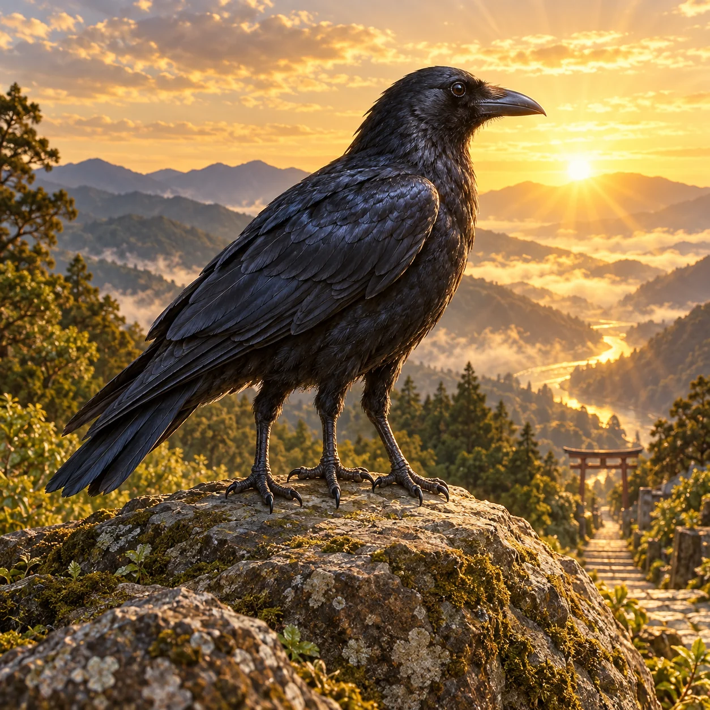
Three-legged crow divine guide form
Aura: divine dignified auspicious solar guide
Audit ciri dan sumber
- One natural black crow
- Exactly three independent countable legs
- Kumano mountain path and solar dawn
- Dignified auspicious sacred guide aura
Observed natural black crow with exactly THREE separated legs and three feet touching stone, two folded wings and one tail, full silhouette within frame. Warm sunrise over Kumano-like mountain shrine path and upright watchful stance convey dignified auspicious divine guide aura. No costume or additional anatomy.
Review sumberOne square detailed painterly naturalistic encyclopedia illustration of Yatagarasu, the sacred THREE-LEGGED crow of Japanese myth and divine guide serving Amaterasu. Exactly one black crow standing in profile on a large weathered stone above a Kumano mountain path, wings CLOSED and folded neatly against body, make bird occupy only central 60 percent of frame, one tail. The defining invariant is EXACTLY THREE independent legs attached to the underside of the same body: two normal side legs and one central third leg; arrange all three legs and feet visibly separated, each touching the rock, clearly countable. Natural crow head, straight black beak, glossy black feathers, no extra heads, human parts or limbs. Golden sunrise shines behind it, sacred serene atmosphere, commanding watchful posture looking toward distant sunlit mountain path as a guide. Aura divine, dignified and auspicious with solar warmth and reverence, not horror or a sinister demon. Full bird, wing tips and three feet comfortably inside frame with margin. Fine painterly feather details, subtle realistic solar radiance rather than flashy magic. No clothing, jewelry, weapons, horns, no text or watermark.
Jorōgumo
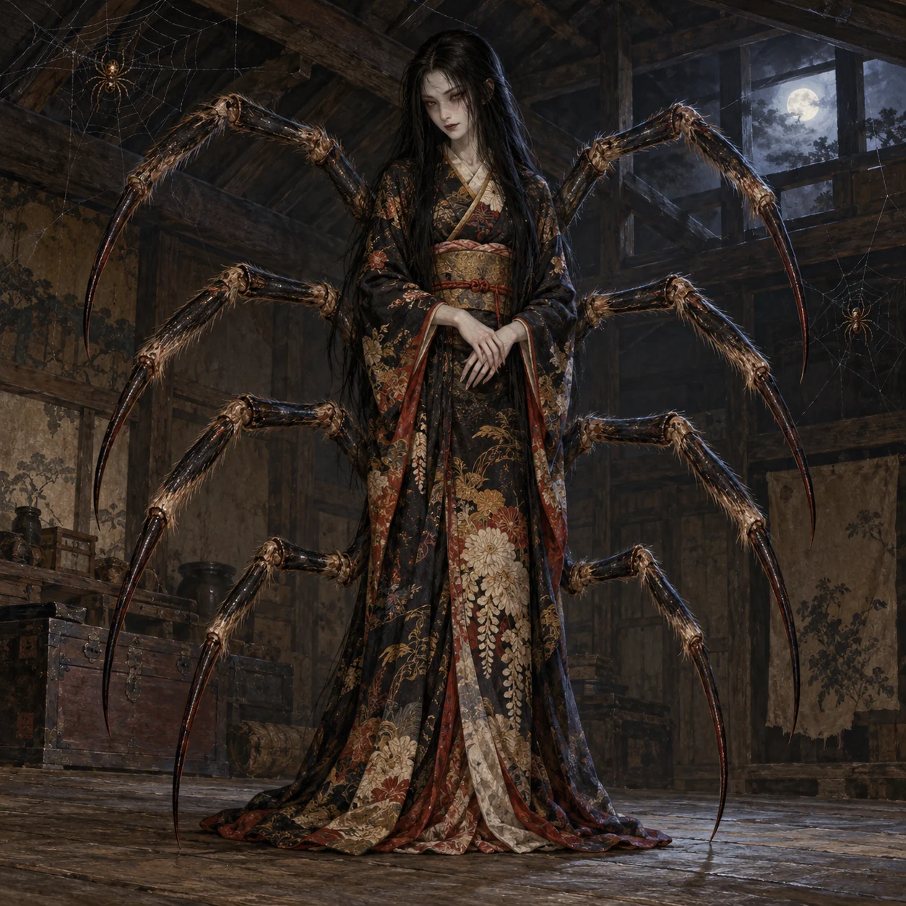
Toriyama Sekien 1776 spider-legged robed woman
Aura: Unsettling predatory deceptive spider-woman
Audit ciri dan sumber
- Long-haired robed woman
- Eight spider legs overlaying woman's robe
- Smaller spiders and predatory deceptive aura
Observed long-haired pale adult woman in full modest kimono with two human arms, exactly eight jointed spider legs in four clearly separated bilateral pairs. Several smaller spiders on webs surround her. Cold narrowed eyes, deceitful calm expression and dark attic moonlight convey dangerous predatory deception. No invented spider-centaur abdomen. Two six-legged variants deleted before third generation.
Review sumberOne square naturalistic painterly encyclopedia illustration of Toriyama Sekien's Jorogumo spider-legged woman. STANDING adult long-haired Japanese woman in long modest Edo kimono, pale deceitful face, two human arms. All EIGHT SPIDER LEGS visibly overlay and emerge around the robe. Show FOUR paired tiers of legs: pair ONE emerges at shoulder level, pair TWO at waist level, pair THREE at hip level, pair FOUR at knee level. Each pair contains one huge jointed leg sweeping left and one sweeping right. TOTAL EIGHT LEGS, all visible against the background, no leg concealed behind body. Each tier separated vertically with empty background gaps. Full upright figure in frame with enough margin for all eight pointed spider-foot ends. A few small real spiders on delicate webs nearby. Dark old Japanese attic with faint moonlight, disturbing predatory supernatural woman aura, exquisite brush texture and realistic jointed spider anatomy. No spider abdomen centaur, no nudity, no horns, no wings, no weapons, text, labels, watermark. Exactly four left legs and four right legs. Previous six-legged output is anatomically wrong; make four tiers rather than three.
Kamaitachi
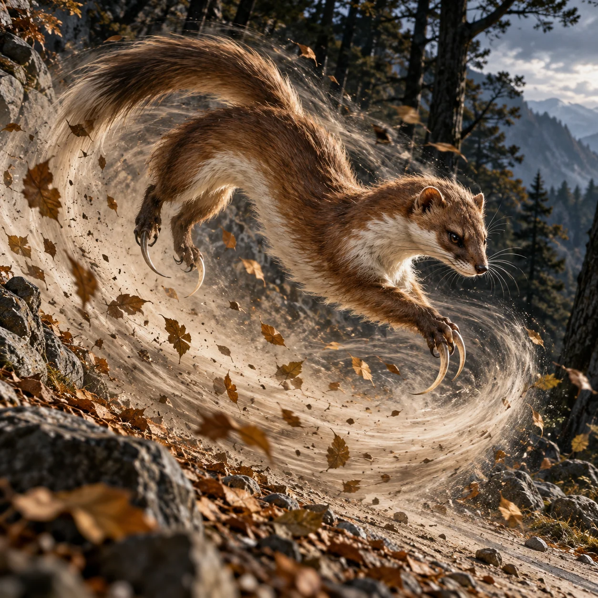
Edo-period weasel-like clawed yōkai depiction; not regional Hida trio of deities
Aura: Dangerous swift predatory wind spirit
Audit ciri dan sumber
- Single weasel-like mammal
- Sickle-like claws anatomically attached to paws
- Whirlwind flight
- Dangerously swift aura
- No handheld weapon or three-deity conflation
Observed one lean long-bodied weasel-like furry animal with rounded ears, narrow snout, long furry tail and elongated crescent claws on mammalian paws. Coiling dust and leaves carry it above the mountain path; alert hostile eye and kinetic pose convey swift danger. No metal sickle, horns, wings, extra characters, gore, text or watermark.
Review sumberUse case: historical-scene. ONE square detailed painterly naturalistic encyclopedia illustration of Kamaitachi, choosing the documented Edo-period weasel-like yokai with sickle-like claws, NOT the regional trio of deities. One small lean weasel-shaped mammal rides a sudden dust whirlwind across a mountain path in Japan. Long flexible furred body, short mammalian legs, rounded weasel ears, narrow pointed snout, alert dark predatory eyes, long furred tail. Its paws have clearly visible elongated curved sickle-like claws integrated anatomically, not separate handheld weapons. The creature twists with the wind above scattered dry leaves and fine dust, its full silhouette clear against shadowed trees. Dangerous unnervingly swift sly aura, cold dramatic side light and motion, naturalistic painterly fur details. One central complete animal comfortably in frame, claws and tail unobscured. Invariants: single small weasel-like mammal, sickle-like claws, riding sudden whirlwind. Avoid three-weasel scene, human gods, actual metal scythes or sword, giant saber teeth, horns, wings, armor, extra paws, bird feet, cute pet expression, victim, wounds, gore, lettering, watermark, collage, border.
Umibōzu
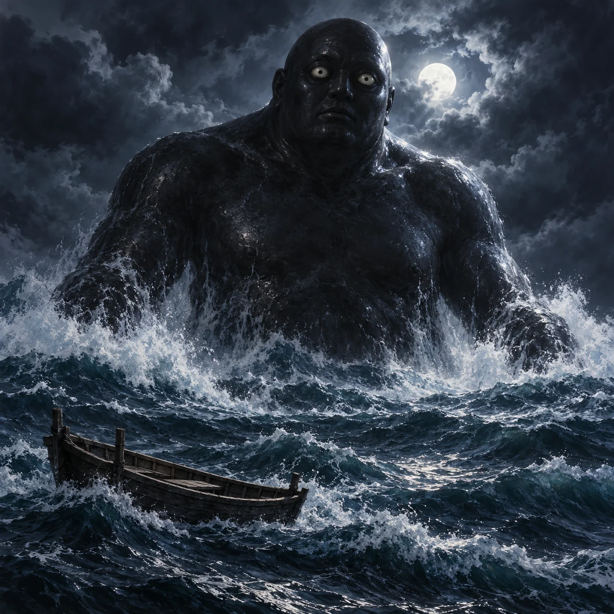
Bald humanoid giant sea-monk version, not catfish variant
Aura: terrifying ominous sea monster
Audit ciri dan sumber
- Colossal bald round-headed humanoid upper body
- Two arms, lower body submerged, no catfish anatomy
- Rough night sea and tiny boat for scale
- Terrifying ominous sea-yokai aura
Observed colossal bald round-headed dark humanoid torso rising from sea, two shoulders and arms, pale wide staring eyes; lower body submerged. Tiny empty wooden boat makes giant scale clear. Churning waves, oppressive storm moonlight and looming unnatural stare create terrifying sea-yokai menace. No catfish parts or extra limbs.
Review sumberOne square detailed painterly naturalistic encyclopedia illustration of Umibozu, the Japanese sea monk yokai. Choose the BALD HUMANOID GIANT version, not catfish illustration variant. One colossal dark smooth-skinned humanoid upper torso rises vertically from rough ocean water at night, with a huge rounded BALD head, two shoulders and two arms, large uncanny staring pale eyes, minimal solemn facial features. No robe: the monk resemblance is bald round head and solemn presence, not actual priest costume. Lower body remains submerged. A small empty traditional Japanese wooden boat in foreground establishes immense scale; no sailors shown. Arms part churning waves, not holding a weapon. Terrifying ominous sea-monster aura, oppressive storm clouds, moonlight outlining huge head and crashing foam. Keep entire visible upper body within square with margin. No hair, beard, tentacles, horns, wings, fish fins, extra arms, armor, gore, injuries or victims. Rich painted dark water, scale unmistakably supernatural. No text or watermark.
Jenny Greenteeth
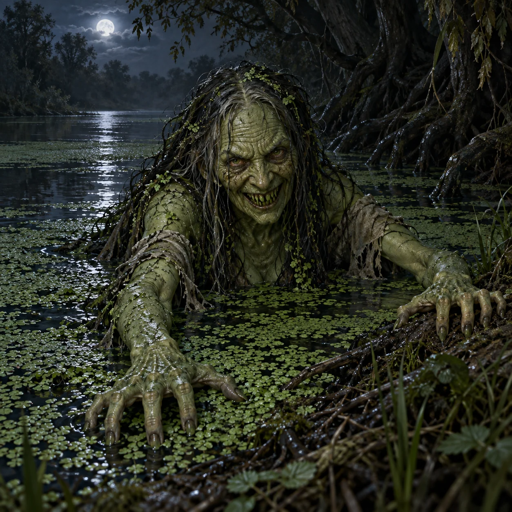
English green-skinned sharp-toothed river hag
Aura: Frightening malevolent aquatic predator
Audit ciri dan sumber
- Green-skinned hideous river hag
- Long tangled hair and sharp teeth
- Malevolent aquatic duckweed predator aura
Observed hideous elderly wrinkled green-skinned woman half submerged in duckweed-covered dark river, long tangled wet hair and sharp greenish teeth clearly exposed. Two reaching arms, vicious malicious grin, cold moonlight and alder roots convey frightening river predator. No beautiful-mermaid substitution, horns, wings or trident.
Review sumberONE square detailed naturalistic painterly encyclopedia illustration of JENNY GREENTEETH, English river-hag, faithfully GREEN-SKINNED, LONG-HAIRED and SHARP-TOOTHED. One hideously old wrinkled female humanoid hag emerges half-submerged from a dark English river pool covered in dense DUCKWEED. Wet long tangled hair drapes over scrawny shoulders, sickly green leathery skin, malicious narrowed eyes and open ugly grin revealing sharp greenish teeth, two long grasping HUMAN arms reaching toward empty riverbank. Modest ragged old cloth partly submerged. A truly frightening malevolent aquatic predator aura, chilling still water concealing depths, cold moonlight and black alder roots. No actual victim shown. Detailed naturalistic old human face anatomy and painterly texture, central hag clearly visible with comfortable framing. No young beautiful mermaid, gentle fairy, fishtail, horns, wings, extra limbs, trident, crown, blood, injury, child, weapons, text, labels or watermark.
Zilant
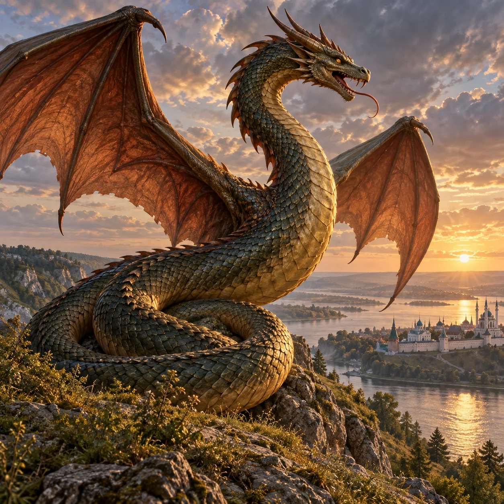
Tatar winged serpent
Aura: Proud ominous winged serpent
Audit ciri dan sumber
- One Zilant, a legendary winged SNAKE of Tatar folklore: elongated coiling scaly serpent torso, one dragonlike head and two featherless reptilian wings. Low crouching avian-like hind legs only if supported; favor clear coiled snake without unnecessary limbs. Tatar riverside hill setting. Not a heraldic logo, no human rider, no extra heads.
- Proud ominous winged serpent
- Creature-specific anatomy is clearly visible; no ordinary human dramatic portrait
Original individually inspected: one dragon-headed winged snake with two leathery wings and long single coiled scaled serpent body. No human, extra heads or heraldic text. Proud ominous posture and riverside scene fit Tatar winged serpent variant.
Review sumberUse case: stylized-concept. Asset type: Mythics encyclopedia character illustration. ONE square high-detail naturalistic painterly illustration. Subject: Zilant. One Zilant, a legendary winged SNAKE of Tatar folklore: elongated coiling scaly serpent torso, one dragonlike head and two featherless reptilian wings. Low crouching avian-like hind legs only if supported; favor clear coiled snake without unnecessary limbs. Tatar riverside hill setting. Not a heraldic logo, no human rider, no extra heads. Mood: Proud ominous winged serpent. Full defining anatomy visible, main creature prominent, balanced legible composition, detailed organic textures, atmospheric setting. No text, watermark, frame, collage, labels, game-interface or extra unrelated character. Depict folklore rather than a modern franchise. Palette, landscape and pose are artistic interpretation; do not invent conflicting signature anatomy.
Amikiri
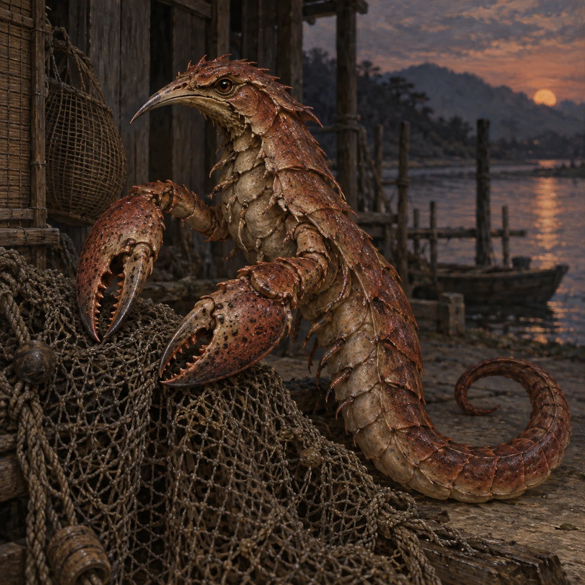
Sekien scorpionlike hybrid image, without later net-cutting story assertion
Aura: strange uncanny understated mischievous presence
Audit ciri dan sumber
- Sekien scorpionlike crustacean-serpent-bird hybrid
- Two pincer claws and birdlike beak
- Full segmented curved body framed
- Strange uncanny understated aura
Observed curved elongated segmented crustacean-serpent body with long curled tail, projecting birdlike beak and exactly two large pincer forelimbs, no humanoid or scissors. Complete silhouette within margins. Nets and dim riverside shed give quiet strange uncanny mood appropriate to uncertain nature rather than unsupported aggressive demon portrayal.
Review sumberOne square detailed painterly naturalistic encyclopedia illustration of Amikiri, following the scorpionlike hybrid in Toriyama Sekien's Gazu Hyakki Yagyo, not Kamikiri. ONE small uncanny lobster-serpent-bird hybrid perched near an old Japanese fishing net: elongated curved segmented crustacean body tapering to a curling serpent-like tail, birdlike pointed beak on head, and TWO prominent pincer claws like crab/scorpion claws as the forelimbs. Do not turn it into a humanoid or add hair-cutting scissors. Body and pincers fully framed with comfortable margins; muted reddish-brown shell, detailed carapace. Eerie strange mischievous presence, quiet shadowed riverside fishing shed at dusk, no extreme evil attributes because Sekien supplies no nature description. No horns, wings, armor, weapons, extra heads, text or watermark. Naturalistic painterly interpretation, no cartoon.
Azukiarai
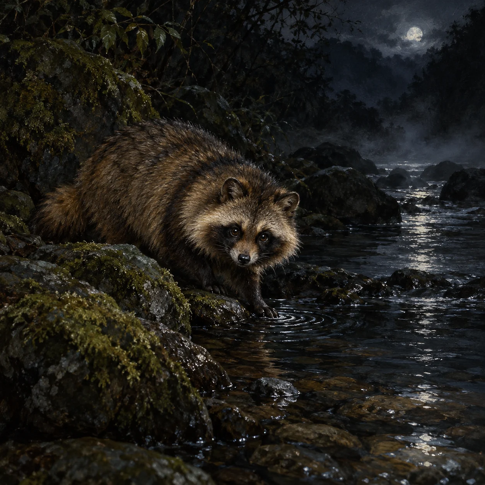
Kagawa mamedanuki archival variant
Aura: Eerie secretive riverbank trickster
Audit ciri dan sumber
- Small tanuki interpretation
- Tanuki fur, short rounded ears and eye mask
- Secretive washing-like water activity
Observed small shaggy brown raccoon-dog with rounded ears and dark eye mask, natural animal anatomy, one forepaw touching rippled shallow stream. Secretive stare and moonlit perilous mossy bank convey mysterious nocturnal trickster. No humanoid goblin blended with Kagawa variant.
Review sumberOne square detailed naturalistic painterly encyclopedia illustration of AZUKIARAI in the documented KAGAWA mamedanuki variant, choosing ONLY the small supernatural tanuki interpretation. One small Japanese raccoon-dog with unmistakable tanuki round furry face, dark eye-mask markings, short rounded ears, shaggy brown-gray coat, four natural animal legs and bushy short tail. Crouch mysteriously on mossy stones immediately beside a shallow dark mountain stream at night, paws close to water suggesting uncanny washing-like sounds. No human torso. Secretive eerie trickster presence, alert glance out of shadow, dark rippling stream and perilous riverbank mist; beautifully naturalistic animal proportions and restrained oil brush texture. Full small tanuki in frame. No humanoid goblin, giant testicles, robe, hat, bean bowl invented, horns, wings, fox tail, human hands, extra creatures, letters, labels or watermark. Keep variant limited to Kagawa archival description of small tanuki causing mysterious bean-washing sounds.
Hannya
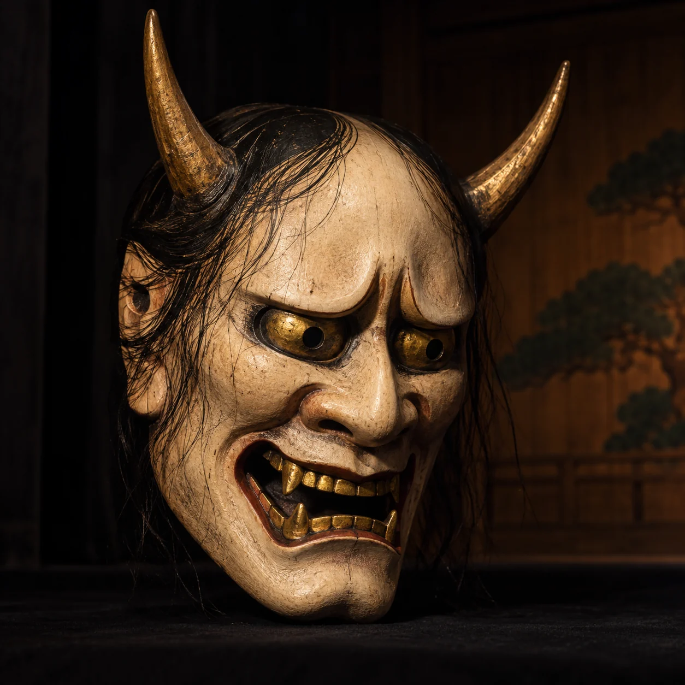
Traditional pale Hannya Noh mask, portraying female jealousy and vengeance; not an independent living monster
Aura: Fierce revenge, dignity and tragic feminine grief
Audit ciri dan sumber
- One carved Japanese Noh mask
- Two gilded forehead horns
- Metal-covered eyes and gilded teeth
- Disordered painted black hair
- Fearsome refined tragic jealous expression
Observed one pale aged carved wooden mask with two complete gilded horns, gold metal eye covers, open sharply cut mouth and gilded teeth. Dark disordered hair strands and carved furrowed brow convey anguished fierce resentment with refinement. No living body, extra horns, wings, weapon, gore, lettering or watermark.
Review sumberUse case: historical-scene. ONE square detailed painterly naturalistic encyclopedia illustration of Hannya, specifically the traditional Japanese Noh theater MASK representing a woman transformed into a demon by jealousy and vengeance. Depict ONE carved hinoki cypress wooden Hannya face mask in a solemn dark Noh-stage-like setting, no actor or living demon body. Slight three-quarter frontal view reveals a pale ivory painted face, TWO prominent gilt horns rising from its forehead, glittering metal-covered eyes, sharply cut open mouth corners with visible gilt teeth, painted disordered black hair strands at the edges. Fine aged paint and carved wood detail. The mask's angled gaze and ferocious furrowed expression must convey fierce jealousy and revenge while also preserving dignified refined tragic feminine grief; frightening and powerful rather than Halloween decoration. One central complete mask with both horn tips comfortably in square, restrained dramatic side light and deep shadow. Invariants: carved Japanese Noh mask rather than independent mythic biography, female-demon face, two horns, metal eyes, gilded teeth and disordered painted hair. Avoid extra horns, human torso, monster body, bat wings, weapon, kawaii anime, modern plastic costume, gore, decorative skulls, written labels, text, watermark, border, collage.
Karura
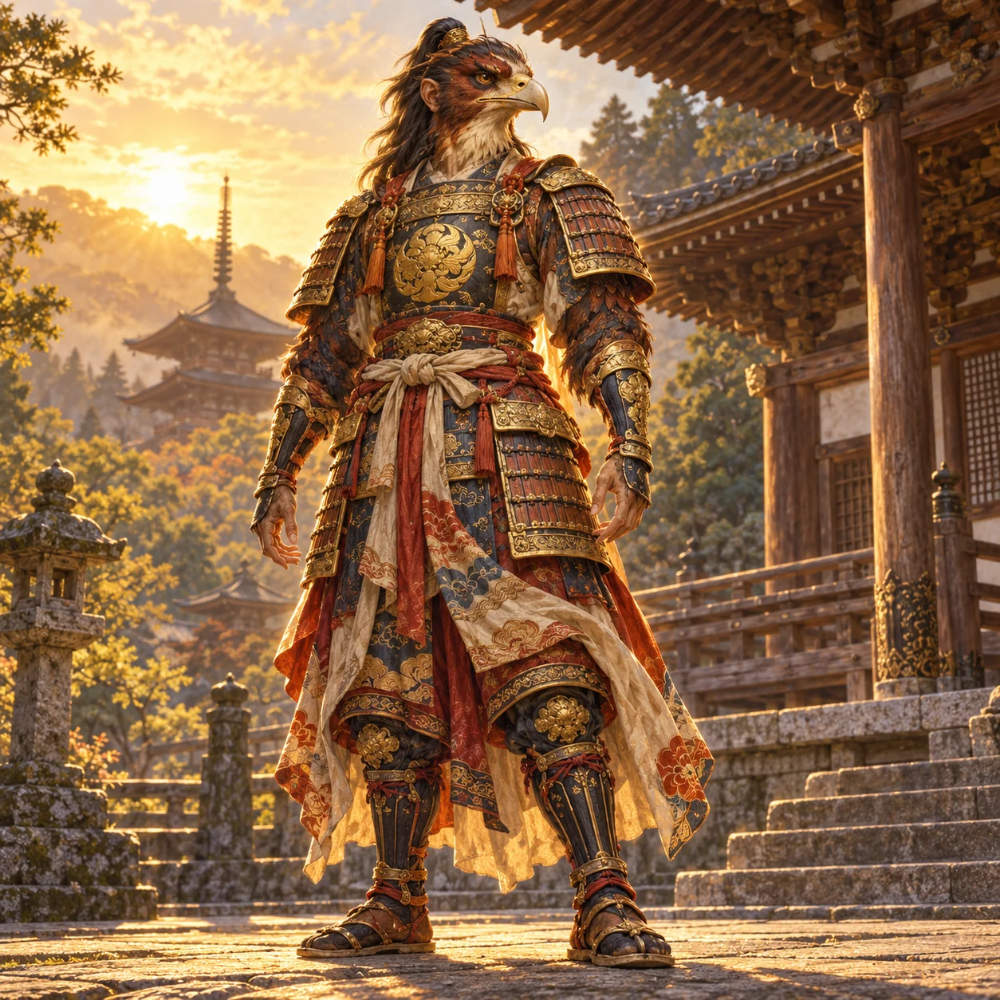
734 Karura statue-inspired armored birdlike warrior, not Gigaku mask
Aura: sacred dignified majestic Buddhist protector
Audit ciri dan sumber
- Armored birdlike humanoid warrior
- Pronounced beak and bird eyes with humanlike ears/hair
- Two arms and two legs, selected statue variant
- Dignified sacred Buddhist guardian aura
Observed upright armored birdlike warrior with projecting hooked beak, bird eyes, visible human ear and tied dark humanlike hair; exactly two arms and two legs, no wings or mask-variant jewel. Temple setting, gold sacred rim light and firm dignified pose convey majestic Buddhist protector aura. Armor decoration is an artistic interpretation.
Review sumberOne square detailed painterly naturalistic encyclopedia illustration of Karura, the Japanese Buddhist sacred bird guardian derived from Garuda. Choose the 734 statue-inspired ARMORED BIRDLIKE WARRIOR form. One upright humanoid warrior with exactly two human-shaped arms and two legs, traditional ancient Japanese armor, bird head with a pronounced projecting beak and bird eyes, but HUMANLIKE EARS and HUMANLIKE dark hair. No wings are shown in this selected statue-inspired variant. Stands with calm firm guardian authority near an ancient Japanese Buddhist temple, hands empty in respectful poised gesture. Full body and head visible with generous margins. Sacred warm gold rim light, radiant dignified protector aura, majestic reverence and strength, not demon horror or cute bird. Detailed painted armor, cloth and feathers. No jewel held in beak or crest borrowed from separate Gigaku mask variant, no horns, weapons, extra limbs, snakes being harmed, text or watermark.
Biscione
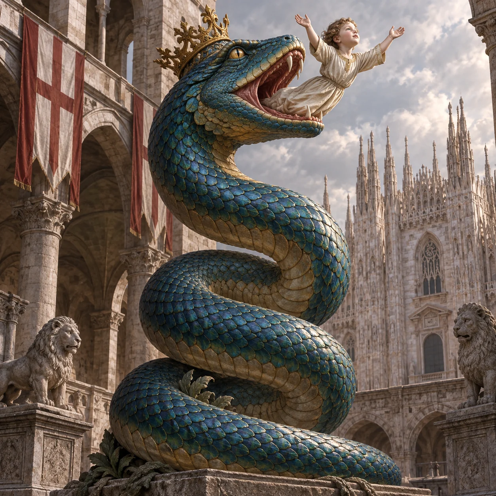
Child-emerging heraldic serpent variant
Aura: Mysterious solemn heraldic power
Audit ciri dan sumber
- The divine Biscione serpent of Milan, one sinuous blue-green scaled serpent upright in a spiral. Its open mouth shows a SMALL FULLY CLOTHED child emerging peacefully upward, waist at mouth, upper body outside and arms raised, clearly a symbolic rebirth interpretation rather than attack. Creature dominates; tiny child secondary. No injury, biting, blood or gore. Medieval Milan stone courtyard backdrop, no car logos or text.
- Mysterious solemn heraldic power
- Creature-specific anatomy is clearly visible; no ordinary human dramatic portrait
Original individually inspected: one large spiraling scaled blue-green serpent dominates composition. A small fully clothed child emerges peacefully from open mouth with raised arms; no bite injury, blood or gore. The child is a secondary source-required symbolic figure, not an ordinary-human main subject.
Review sumberUse case: stylized-concept. Asset type: Mythics encyclopedia character illustration. ONE square high-detail naturalistic painterly illustration. Subject: Biscione. The divine Biscione serpent of Milan, one sinuous blue-green scaled serpent upright in a spiral. Its open mouth shows a SMALL FULLY CLOTHED child emerging peacefully upward, waist at mouth, upper body outside and arms raised, clearly a symbolic rebirth interpretation rather than attack. Creature dominates; tiny child secondary. No injury, biting, blood or gore. Medieval Milan stone courtyard backdrop, no car logos or text. Mood: Mysterious solemn heraldic power. Full defining anatomy visible, main creature prominent, balanced legible composition, detailed organic textures, atmospheric setting. No text, watermark, frame, collage, labels, game-interface or extra unrelated character. Depict folklore rather than a modern franchise. Palette, landscape and pose are artistic interpretation; do not invent conflicting signature anatomy.
Nurikabe
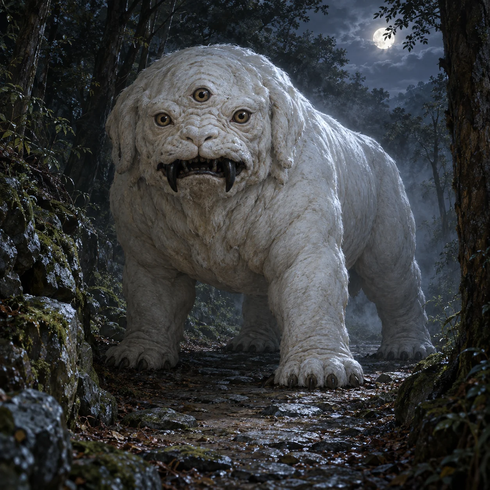
Bakemono no e scroll three-eyed white lion-dog/trunkless elephant form; its relationship to the Kyushu folklore obstruction is disputed
Aura: Impassive uncanny threatening obstruction
Audit ciri dan sumber
- White elephantlike or lion-dog quadruped
- No trunk
- Exactly three eyes
- Black fangs
- Blocking a night path with uncanny menace
Observed one massive white lion-dog-like quadruped with four stout feet, no trunk, two lateral eyes and one centered upper eye, and prominent black fangs. Its broad body obstructs a narrow moonlit wooded path, with an unnerving unblinking stare. No concrete wall cartoon, horn, wing, weapon, victim, gore, text or watermark.
Review sumberUse case: historical-scene. ONE square detailed painterly naturalistic encyclopedia illustration of Nurikabe, choosing ONLY the named form illustrated in the Japanese Bakemono no e scroll, whose identity with Kyushu's invisible-obstruction folklore is debated. One large WHITE trunkless elephant-like or lion-dog-like quadrupedal yokai, with thick pale body, four stout legs, a broad short snout with NO trunk, exactly THREE eyes (two normal lateral eyes plus a third centered above them), and visibly BLACK fangs in a dark mouth. No extra heads. It stands across a narrow deserted Japanese woodland path at night, obstructing passage with its bulky body. Its strange three-eyed stare and impassive looming stance convey uncanny threatening obstruction, neither cute mascot nor generic concrete wall character. Cold side light through trees catches white body and black fangs, naturalistic painterly textures and misty depth. Central entire quadruped comfortably in square, all three eyes readable and feet inside frame. Invariants: source-selected scroll variant, white trunkless elephant/lion-dog shape, THREE eyes, BLACK fangs, blocking night path. Avoid elephant trunk, two-eye normal anatomy, concrete rectangular cartoon wall, wings, horns, weapons, modern cement, human companion, gore, text, watermark, collage, border.
Isonade
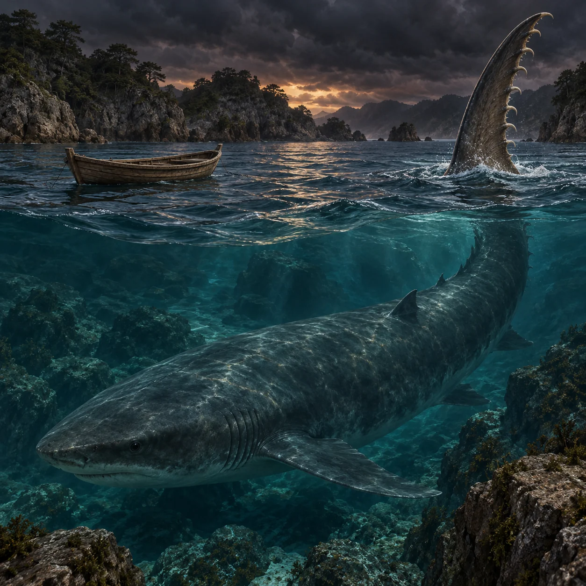
Ehon Hyaku Monogatari submerged-body barbed-tail form
Aura: stealthy dangerous predatory sea horror
Audit ciri dan sumber
- Sharklike submerged body with long tail
- Only barbed hooked tail fin above water
- Coastal Japanese sea and boat scale
- Stealthy dangerous predatory aura
Observed huge shark-shaped body entirely underwater, pectoral fins and gills clear, elongated tail curves upward to exposed fin with distinct hooked barbs. Only tail fin crosses water surface. Small wooden boat and stormy Japanese coast give scale and stealthy ominous predatory sea-monster mood. Whole main form framed without victims.
Review sumberOne square detailed painterly naturalistic encyclopedia illustration of Isonade, the Japanese sharklike sea monster. Choose Ehon Hyaku Monogatari form: body stays BELOW sea surface and only the long BARBED TAIL FIN rises above water. Show clear blue-green water in a rocky western Japanese coastal inlet with huge submerged shark silhouette readable below rippling surface: shark head, torpedo body, pectoral fins and long sweeping tail leading upward. Above surface, the large tail fin is covered along its edge with curved hook-like barbs, the defining feature. One small empty traditional wooden boat nearby for scale, no sailors or attacks. Entire creature including submerged head and barbed tail comfortably inside square frame. Aura stealthy dangerous predatory sea horror, dark storm dusk and ominous stillness, not playful. Naturalistic gray shark skin and fine painted water refraction. No human body, horns, wings, tentacles, weapons, blood, victims, text or watermark. One monster only, no cutaway diagram or panels.
Satori (folklore)
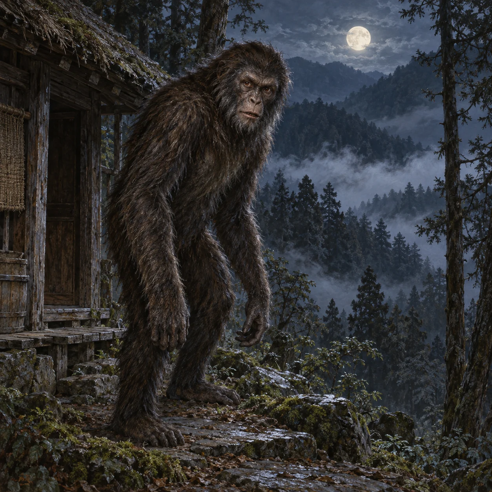
Apelike mountain Satori
Aura: Uncanny intrusive mind-reading presence
Audit ciri dan sumber
- Apelike mind-reading yokai
- Japanese mountain hut setting
- Unsettling perceptive intelligence
Observed solitary shaggy apish head and body with two long arms and two legs beside a mountain hut. Intense perceptive gaze and slightly parted lips suggest thought-speaking without invented psychic eye. Cold forest mist and moonlight convey wary intrusive intelligence.
Review sumberONE square detailed naturalistic painterly encyclopedia illustration of SATORI, the mind-reading APELIKE yokai of Japanese Hida and Mino mountains. One solitary shaggy ape-like creature with natural primate head, dark fur, two long arms and two legs, standing at the edge of a remote old mountain hut deep in a Japanese mountain forest. Its gaze intensely perceptive and unsettling, mouth slightly parted as if speaking another person's thoughts; do not invent glowing third eye or psychic symbols. Wary uncanny intrusive intelligence, mysterious rather than a violent horror demon. Full creature comfortably framed, clear fur and ape facial anatomy, moonlight and cold forest mist, exquisite restrained naturalistic oil brushwork. No horns, wings, extra eyes, weapons, gorilla armor, generic demon body, human victims, text, labels or watermark.
Bishop-fish
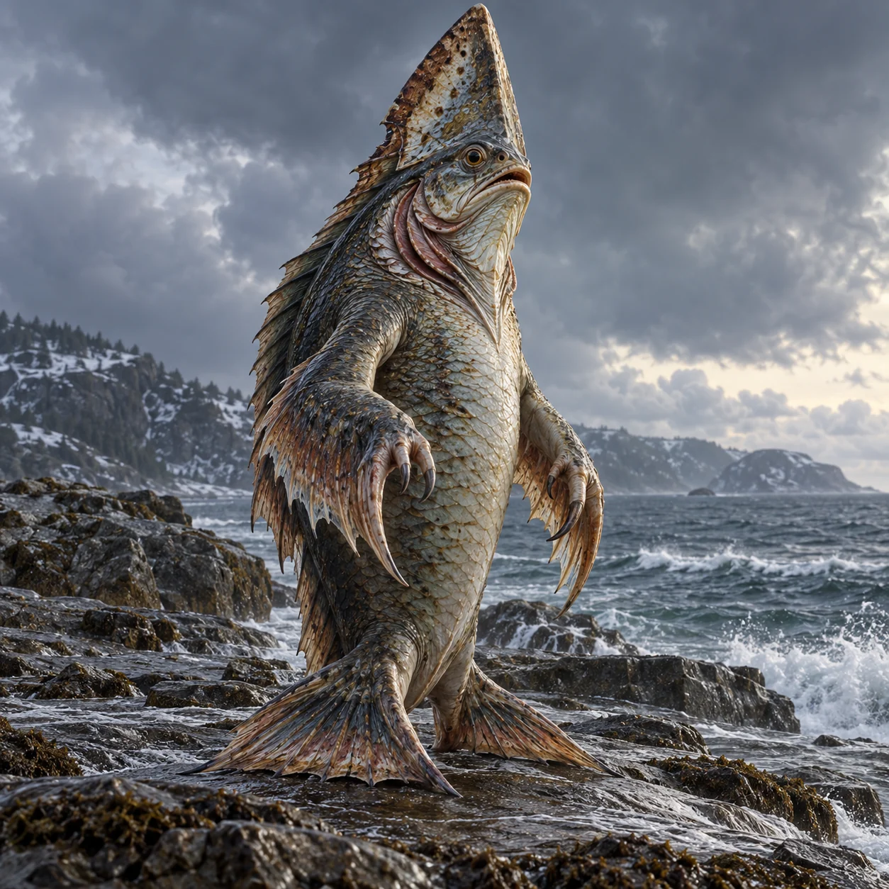
Conical-headed upright fish
Aura: Uncanny solemn sea marvel
Audit ciri dan sumber
- A single gigantic upright marine FISH creature whose natural head is conical and bishop-mitre-shaped but NOT an actual fabric hat. Scaly fish body, pectoral fins developed into clawed finlike arms, tail fin shaped into standing lower supports. Gills visible, nonhuman fish face. Wet rocks beside a cold Baltic sea. No human priest, vestments, staff, crown or cross prop.
- Uncanny solemn sea marvel
- Creature-specific anatomy is clearly visible; no ordinary human dramatic portrait
Observed an upright fish creature with an entirely scaled body, conical fish head, visible gills, fin-like arms and tail-supported lower body; no human priest costume. Cold marine setting supports the source variant.
Review sumberUse case: stylized-concept. Asset type: Mythics encyclopedia character illustration. ONE square high-detail naturalistic painterly illustration. Subject: Bishop-fish. A single gigantic upright marine FISH creature whose natural head is conical and bishop-mitre-shaped but NOT an actual fabric hat. Scaly fish body, pectoral fins developed into clawed finlike arms, tail fin shaped into standing lower supports. Gills visible, nonhuman fish face. Wet rocks beside a cold Baltic sea. No human priest, vestments, staff, crown or cross prop. Mood: Uncanny solemn sea marvel. Full defining anatomy visible, main creature prominent, balanced legible composition, detailed organic textures, atmospheric setting. No text, watermark, frame, collage, labels, game-interface or extra unrelated character. Depict folklore rather than a modern franchise. Palette, landscape and pose are artistic interpretation; do not invent conflicting signature anatomy.
Bisterne Dragon
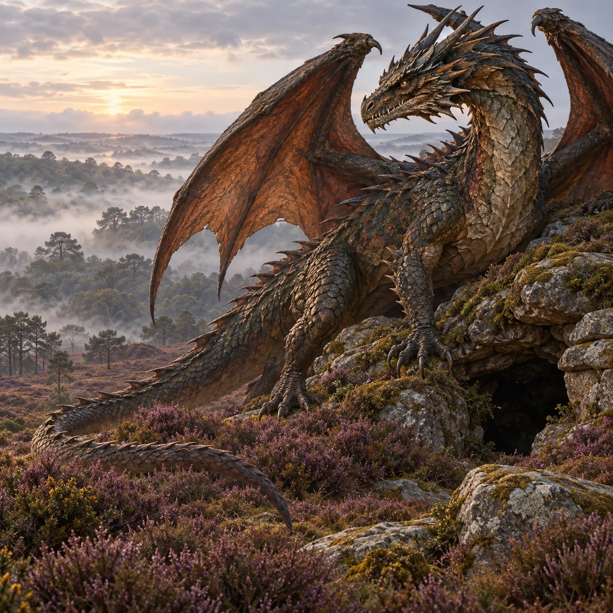
Winged New Forest dragon
Aura: Dangerous ancient woodland presence
Audit ciri dan sumber
- A single winged reptilian dragon perched beside a heathland den on Burley Beacon in the New Forest. Large scaled body, one predatory reptilian head, coherent limbs, two leathery wings, long tail. English heath landscape in morning mist, no people, knight, pet dogs, armor or medieval text.
- Dangerous ancient woodland presence
- Creature-specific anatomy is clearly visible; no ordinary human dramatic portrait
Observed a coherent reptilian dragon at its heathland den with one body, four limbs, two wings and one long tail. New Forest vegetation and guarded predatory stance match the specified variant.
Review sumberUse case: stylized-concept. Asset type: Mythics encyclopedia character illustration. ONE square high-detail naturalistic painterly illustration. Subject: Bisterne Dragon. A single winged reptilian dragon perched beside a heathland den on Burley Beacon in the New Forest. Large scaled body, one predatory reptilian head, coherent limbs, two leathery wings, long tail. English heath landscape in morning mist, no people, knight, pet dogs, armor or medieval text. Mood: Dangerous ancient woodland presence. Full defining anatomy visible, main creature prominent, balanced legible composition, detailed organic textures, atmospheric setting. No text, watermark, frame, collage, labels, game-interface or extra unrelated character. Depict folklore rather than a modern franchise. Palette, landscape and pose are artistic interpretation; do not invent conflicting signature anatomy.
Shiranui (optical phenomenon)
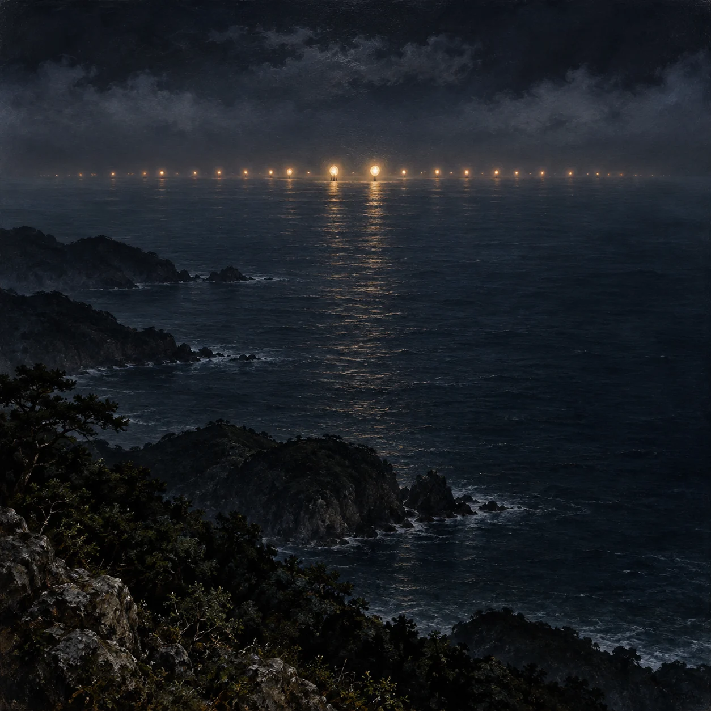
Multiplied offshore Shiranui lights
Aura: Quietly ominous mysterious sea lights
Audit ciri dan sumber
- Row of many offshore ghost lights
- Brighter central parent lights
- Viewed from elevated coastal ground
Observed long row of separated tiny amber lights above dark open sea, two central lights brighter with reflections. High rocky coastal foreground establishes elevated viewpoint. No boats or creature bodies invented; empty dark sea, mist and lights convey uncanny offshore phenomenon.
Review sumberONE square detailed naturalistic painterly encyclopedia illustration of SHIRANUI, ghost lights of Kyushu folklore, choosing the offshore many-light appearance. View from HIGH COASTAL GROUND looking across dark open sea at night: an eerie LONG ROW of small separate distant amber-white floating lights just above the water near horizon, gently multiplying outward from two slightly brighter parent lights in center. Natural tiny reflected glimmers, dark Japanese coastal silhouette in foreground, immense calm open water and deep midnight mist. No person-shaped spirit or monster invented; the actual distinguishing subject is the offshore row of lights. Uncanny mysterious folklore presence, quietly ominous rather than fireworks or cute magic. Beautiful restrained oil brushwork, composed square with clear lights. No boats visibly carrying lamps, skyscrapers, city skyline, dragon, eyes in sky, fireballs touching trees, text, watermark or labels.
Tesso
Written-tale giant rat manifestation of Raigo's vengeful spirit
Aura: Embittered destructive revenge and frightening temple intrusion
Audit ciri dan sumber
- One giant rat
- Natural rodent ears muzzle fur and naked tail
- Iron-hard strong gnawing teeth and claws
- Temple library sacred-book destruction
- Vindictive frightening aura
Observed one enormous rat with brown coarse fur, round rodent ears, pointed snout, long naked tail, mammalian paws with iron-dark claws and prominently hard dark incisors gnawing book bundles. Looming dense body and hostile eye in dark temple library convey vindictive destruction. No human monk face, robe, horns, wings, armor, other rats, gore, readable caption or watermark. Book pages carry indistinct manuscript texture.
Review sumberUse case: historical-scene. ONE square detailed painterly naturalistic encyclopedia illustration of Tesso, the Japanese rat yokai associated with the resentful dead monk Raigo. Choose the documented GIANT RAT form in written versions, not a humanoid monk or ordinary mouse swarm. One enormous anatomically rat-shaped monster crouches inside a dark old Japanese temple library, with coarse grey-brown fur, long naked rat tail, small rounded rodent ears, pointed muzzle, and protruding gnawing incisors visibly as hard and dark as iron. Its four mammalian paws have strong iron-dark claws. The body feels dense and stone-hard beneath fur; no actual rock armor plates. It gnaws a bundle of old sacred book pages whose marks are indistinct and illegible, evoking the tale of destruction at Enryaku-ji. Frightening embittered vindictive presence, cold dim light and deep temple shadows, naturalistic painterly fur and materials. Central complete rat and tail comfortably in square, true rodent anatomy. Invariants: giant rat, iron-strong teeth and claws, stone-hard body, destructive vengeful temple-library context. Avoid monk robe or human head, horns, wings, metal helmet, robot body, army of rats, cute pet rat, gore, victims, readable book text, lettering, watermark, collage, border.
Yamawaro
Upright one-eyed mountain humanoid, Wakan Sansai Zue short torso/long legs
Aura: wild watchful mysterious mountain presence
Audit ciri dan sumber
- Exactly one central eye
- Short torso and two long legs, upright humanoid
- Deep Kyushu mountain habitat
- Wild watchful mysterious mountain aura
Observed one central large eye with no other eyes, short torso, two relatively long legs and two arms, sparse shaggy earth-brown hair and rough skin. Full upright form on mossy mountain path framed. Slight wary mischievous expression and misty wild woodland setting convey mysterious mountain yokai without falsely divine or monstrous traits.
Review sumberOne square detailed painterly naturalistic encyclopedia illustration of Yamawaro, the Japanese mountain yokai. ONE small upright humanoid creature with SHORT TORSO and TWO LONG LEGS, exactly ONE large eye centered in its forehead/face and no other eyes. Two arms, rough earth-brown skin with sparse shaggy brown hair, simple modest ragged cloth at waist; no kappa head water dish or turtle shell in this mountain variant. Standing on a mossy rocky path in deep Kyushu mountains, entire head-to-feet figure comfortably framed with margins. Strange wild watchful mischievous mountain presence, mysterious woodland atmosphere, neither demon god nor cute plush toy. Single central eye must clearly visible, natural painted moss and woods, green dusk mist. No horns, wings, weapons, extra limbs, multiple eyes, text or watermark.
Blue Ben
Somerset coastal dragon
Aura: Weathered powerful coastal monster
Audit ciri dan sumber
- One blue-gray scaled coastal dragon cooling beside shale caves on the Somerset seashore. Reptilian head, coherent four-legged elongated dragon body and long tail, wet shale texture, muddy shoreline. Faint warm breath near jaws suggests recent fire breathing. No humans, devil rider, extra heads, glowing weapons or armor.
- Weathered powerful coastal monster
- Creature-specific anatomy is clearly visible; no ordinary human dramatic portrait
Observed a single blue-grey scaled coastal dragon with coherent quadruped anatomy, paired wings and long tail beside shale rock and a sea cave. Weathered, powerful expression suits the source description.
Review sumberUse case: stylized-concept. Asset type: Mythics encyclopedia character illustration. ONE square high-detail naturalistic painterly illustration. Subject: Blue Ben. One blue-gray scaled coastal dragon cooling beside shale caves on the Somerset seashore. Reptilian head, coherent four-legged elongated dragon body and long tail, wet shale texture, muddy shoreline. Faint warm breath near jaws suggests recent fire breathing. No humans, devil rider, extra heads, glowing weapons or armor. Mood: Weathered powerful coastal monster. Full defining anatomy visible, main creature prominent, balanced legible composition, detailed organic textures, atmospheric setting. No text, watermark, frame, collage, labels, game-interface or extra unrelated character. Depict folklore rather than a modern franchise. Palette, landscape and pose are artistic interpretation; do not invent conflicting signature anatomy.
Kuraokami
Serpent form of Kuraokami, consistent with De Visser's 1913 analysis of dragon/snake water deity; not a standardized horned dragon portrait
Aura: Ancient sacred water authority, immense tranquil reverent majesty
Audit ciri dan sumber
- Source-supported serpent form of rain/snow dragon-snake divinity
- Continuous scaled serpent anatomy
- No generic horns wings or limbs
- Dark mountain valley pool and rain/snow
- Majestic revered divine aura
Observed one immense continuous dark scaled serpent with a single snake-like head and raised composed neck, coiling in deep pool under rain/snow among gorge cliffs. No limbs, horns, wings or extra heads. Calm gaze and filtered overhead light convey sacred majestic water presence without attacking posture. No weapon, fire, gore, text or watermark.
Review sumberUse case: historical-scene. ONE square detailed painterly naturalistic encyclopedia illustration of Kuraokami, Japanese Shinto rain-and-snow water divinity. Choose the documented SERPENT FORM of the dragon/snake god, rather than inventing a generic winged dragon: one immense dignified serpent with a long continuous scaled body, snake-like head, no limbs, no horns, no wings. Its broad coils rise slowly from a deep clear pool at the bottom of a narrow dark mountain gorge beneath falling rain and a few snowflakes. Dark wet natural scales catch subtle silver light; wise still eyes and composed raised head give a sense of divine authority and ancient sacred water power, not a predatory horror monster. Clouds and fine rain surround the gorge; the stream flows tranquilly below. Majestic reverent atmosphere, luminous filtered celestial light through storm cloud, lifelike painterly water and scales. Entire single serpent head and body silhouette comfortably in square. Invariants: source-supported serpent/dragon water-deity form, dark valley/abyss and rain/snow, divine reverence. Avoid Western dragon wings or limbs, generic antlers/horns, multiple heads, human arms, crown, trident, sword, fire breath, demon gore, aggressive attack, shrine inscription, other characters, text, watermark, border, collage.
Bluecap
Small blue flame mining spirit
Aura: Helpful uncanny mine glow
Audit ciri dan sumber
- A small FLOATING COBALT-BLUE FLAME inside an old English mine beside a laden coal tub. Flame itself is the spirit: no human, face, limbs, hat, winged fairy, eyes or humanoid silhouette within flame. Blue light illuminates nearby coal and ore; rest remains dark.
- Helpful uncanny mine glow
- Creature-specific anatomy is clearly visible; no ordinary human dramatic portrait
Observed a floating cobalt-blue flame beside a coal tub in a mine. The flame has no face, human body or limbs, matching the helpful mine-spirit variant.
Review sumberUse case: stylized-concept. Asset type: Mythics encyclopedia character illustration. ONE square high-detail naturalistic painterly illustration. Subject: Bluecap. A small FLOATING COBALT-BLUE FLAME inside an old English mine beside a laden coal tub. Flame itself is the spirit: no human, face, limbs, hat, winged fairy, eyes or humanoid silhouette within flame. Blue light illuminates nearby coal and ore; rest remains dark. Mood: Helpful uncanny mine glow. Full defining anatomy visible, main creature prominent, balanced legible composition, detailed organic textures, atmospheric setting. No text, watermark, frame, collage, labels, game-interface or extra unrelated character. Depict folklore rather than a modern franchise. Palette, landscape and pose are artistic interpretation; do not invent conflicting signature anatomy.
Tenome
Toriyama Sekien palm-eyed yokai
Aura: Eerie uncanny palm-eyed apparition
Audit ciri dan sumber
- No facial eyes
- One open eye in each palm
- Old blind-guildsman-like figure
Observed old Japanese manlike figure with entirely smooth eyeless face, one intact open eye centered in each raised palm, two human arms and two legs in ragged old robes. Desolate moonlit graveyard and unnatural palm gaze provide eerie aura. No extra facial or forehead eyes.
Review sumberONE square detailed naturalistic oil-painted encyclopedia illustration of TENOME as pictured by Toriyama Sekien. One old Japanese man-like yokai in worn traditional Japanese robes; face has a nose and mouth but smooth closed skin where the eyes would normally be, NO eyeballs on face. His two hands are raised toward viewer, each open palm contains one intact realistic open EYE, clearly visible and naturally embedded without wounds. Exactly two eyes total, one on each palm. Two normal arms and two legs; full figure centered in a deserted moonlit old Japanese graveyard. Quietly uncanny mysterious folkloric atmosphere, no violence or harm. Fine restrained painterly detail. No forehead eye, facial eyes, extra limbs, horns, wings, weapons, victims, blood, injury, gore, text, labels or watermark.
Waira
Source-preserved Edo scroll upper-body form; hind-body anatomy deliberately left unseen
Aura: Uncanny heavy predatory mountain menace
Audit ciri dan sumber
- Bulky grotesque lumpy upper-body form
- Two forelimbs with exactly one thick claw each
- Lower/back half concealed because unknown
- Mountain habitat
- Uncanny frightening looming aura
Observed one huge pale lumpy upper-body creature with bulging eyes, folded knobbly forehead and broad gaping muzzle. Two thick forelimbs each terminate in one large pointed hooked claw. The entire lower/back half is concealed behind mountain ridge and mist, avoiding invented anatomy. Looming expression and shadowed wooded mountains are frightening. No horns, tail, invented hind legs, multi-clawed hands, clothes, weapon, gore, text or watermark.
Review sumberUse case: historical-scene. ONE square detailed painterly naturalistic encyclopedia illustration of Waira, using the source-preserved upper-body form in the Edo Bakemono no e scroll at BYU Library. ONE large pale earthy-grey lumpy creature emerges halfway over a rocky mountain ridge: bulky ox-sized upper torso, grotesque low wide head with bulging round eyes, knobbly folded forehead, broad protruding muzzle and gaping mouth. TWO front arms/forelimbs reach forward, and EACH ends in EXACTLY ONE thick long curved pointed claw; no fingers, no cluster of talons. Critically, the BACK HALF / LOWER BODY must remain completely concealed behind the dark ridge and mist because the historical images never show it and its full anatomy is unknown. Keep all pictured upper features comfortably in frame. Heavily wooded Japanese mountain landscape at twilight, frightening uncanny lumbering presence with predatory watchfulness, painterly naturalistic lumpy skin texture and sharp hooked claw highlights. Invariants: source-selected bulky grotesque upper-body form, two forelimbs each with one claw, unseen lower half, mountain habitat. Avoid bull horns, wings, invented hind legs or tail, multi-clawed hands, humanoid clothing, armor, weapon, flat plains, cute mascot, gore, text, watermark, border, collage.
Amemasu
Giant fishlike lake form, not whale or human disguise
Aura: ominous dangerous colossal lake presence
Audit ciri dan sumber
- Colossal freshwater fish form
- Hokkaido lake setting and boat/shore for scale
- Full fish body with coherent fins
- Ominous dangerous natural-disaster awe
Observed colossal troutlike freshwater fish with coherent fins and one tail, complete head-to-tail form underwater. Tiny empty boat and broad mountain lake establish immense size. Dark clouds, huge submerged shadow and cold still waters convey dangerous natural-disaster awe. No hybrid dragon anatomy or human disguise.
Review sumberOne square detailed painterly naturalistic encyclopedia illustration of Amemasu of Ainu folklore. Choose GIANT FISH form, not human woman disguise or whale alternative. One colossal troutlike freshwater fish lurks just beneath clear blue-green water of a Hokkaido volcanic lake, broad elongated fish body, silver-dark scales, broad head, ordinary fish fins and one tail fin. Extremely huge scale compared with tiny empty wooden boat and distant shore forest; fish occupies central 70 percent of square frame fully visible from head to tail through water, its back causes slow ominous ripples. Dark mountain cloud cover, cold still water and massive shadow evoke dangerous awe and looming natural disaster, not a friendly koi or cute creature. No antlers, whiskered dragon face, horns, wings, human parts, tentacles, weapons, blood or victims. Careful painted lake refraction, single creature and no text or watermark.
Bran and Sceólang
Source-described magical Fenian hound pair
Aura: Loyal alert supernatural hunting companions
Audit ciri dan sumber
- Exactly TWO tall lean Irish hounds, full canine anatomy and four feet each. BRAN at left has RED EARS, GREEN BACK and YELLOW FEET. SCEOLANG at right has WHITE body with PURPLE haunches, CRIMSON TAIL and BLUE FEET. Distinguish their coats clearly. Woodland Irish setting; no human owner, extra dogs, horns, wings, armor or harness.
- Loyal alert supernatural hunting companions
- Creature-specific anatomy is clearly visible; no ordinary human dramatic portrait
Observed exactly two full animal hounds. Bran has red ears, green back and yellow feet; Sceolang has a white body, purple haunches, crimson tail and blue feet. All eight feet belong coherently to the two hounds; no human owner appears.
Review sumberUse case: stylized-concept. Asset type: Mythics encyclopedia character illustration. ONE square high-detail naturalistic painterly illustration. Subject: Bran and Sceólang. Exactly TWO tall lean Irish hounds, full canine anatomy and four feet each. BRAN at left has RED EARS, GREEN BACK and YELLOW FEET. SCEOLANG at right has WHITE body with PURPLE haunches, CRIMSON TAIL and BLUE FEET. Distinguish their coats clearly. Woodland Irish setting; no human owner, extra dogs, horns, wings, armor or harness. Mood: Loyal alert supernatural hunting companions. Full defining anatomy visible, main creature prominent, balanced legible composition, detailed organic textures, atmospheric setting. No text, watermark, frame, collage, labels, game-interface or extra unrelated character. Depict folklore rather than a modern franchise. Palette, landscape and pose are artistic interpretation; do not invent conflicting signature anatomy.
Nuribotoke
Edo scroll black back-hair form; not debated catfish-tail form
Aura: Deeply disturbing uncanny corpse-spirit menace
Audit ciri dan sumber
- Pitch-dark animated humanlike corpse
- Both eyeballs clearly dangling below sockets
- Long black back-hair variant
- Household Buddhist altar
- Disturbing eerie corpse-spirit menace without gore
Observed one humanlike thin corpse with shiny pitch-black skin, two pale eyeballs visibly dangling on dark attachments below empty-looking sockets, long coarse black hair trailing down back, lower body covered by ragged cloth. It crouches beside open butsudan in deep candlelit shadow, producing clear disturbing horror. No catfish tail, horns, wings, blood, torn flesh, visible genitals, weapon, text or watermark.
Review sumberUse case: historical-scene. ONE square detailed painterly naturalistic encyclopedia illustration of Nuribotoke, Japanese animated-corpse yokai. Choose the Edo scroll form with black hair trailing from its back, NOT the debated catfish-tail variant. One uncanny humanlike corpse with pitch-black lacquer-dark skin, thin human arms and legs, and BOTH eyeballs drooping far below their empty-looking eye sockets on thin dark attachments, clearly outside their normal positions. No blood, torn flesh or graphic injury: treat dangling eyes as established supernatural anatomy in a tasteful folklore illustration. Long coarse black hair falls behind its head and down its back, plain worn dark cloth covers lower body modestly. It crouches at the open doors of a neglected household butsudan Buddhist altar at night, looming out of shadow. Truly disturbing eerie corpse-spirit aura with mischievous menace, dim cold candle-side light that reveals shiny black skin and pale dangling eyes. Central complete humanlike creature comfortably inside frame, realistic painterly materials. Invariants: pitch-dark animated corpse, visibly dangling eyeballs, source-selected back-hair variant, household altar setting. Avoid ordinary in-socket eyes, catfish tail, horns, wings, fangs, missing limbs, gore, severed parts, nudity, sacred Buddha statue confusion, readable sutra writing, extra people, text, watermark, collage, border.
Sunekosuri
Dog-shaped Okayama local form with shin-rubbing behavior
Aura: harmless quietly uncanny mischief
Audit ciri dan sumber
- Small dog-shaped spirit with four legs and one tail
- Rubbing traveler shins as defining behavior
- Rainy Japanese alley
- Harmless uncanny mischievous aura
Observed one small doglike spirit with coherent four-leg body and one curled tail, pressing face and shoulder against traveler's shin. Traveler shown only lower legs and straw sandals, dog fully visible. Rainy old Japanese alley, wet fur, soft sly eyes and subtle mist convey harmless quietly uncanny hindrance rather than malevolent threat.
Review sumberOne square detailed painterly naturalistic encyclopedia illustration of Sunekosuri, the Japanese shin-rubbing yokai. Choose the DOG-SHAPED local Okayama form, not a cat reinterpretation. One small ordinary doglike spirit with compact furry body, four short legs and one tail gently rubs sideways against the SHINS of a passing adult traveler in a rainy old Japanese village alley. Show the traveler only as lower legs in simple traditional trousers and straw sandals, subordinate to the main fully visible small dog. Head and whole dog comfortably visible, wet fur texture and reflections. Atmosphere whimsical but uncanny and quietly mischievous; harmless hindrance, not evil predator or scary demon. Soft watchful eyes, natural subdued gray-brown fur, subtle low mist suggesting spirit, no neon magic. No horns, wings, extra tails, humanoid body, weapons, gore, text or watermark. One spirit only, no panels.
Tsurubebi
Nocturnal tree-fire with human face
Aura: Quiet eerie forest ghost fire
Audit ciri dan sumber
- Blue-white ghost fire with face
- Undamaged conifer forest
- No solid body
Observed one floating elongated blue-white flame below intact conifer branch, faint human face visible within fire, no torso or limbs. Cold mist and moonlight convey uncanny spectral mystery; tree needles and bark remain undamaged.
Review sumberOne square detailed naturalistic painterly encyclopedia illustration of TSURUBEBI, Japanese tree fire yokai. Select the nocturnal conifer-tree spirit variant: ONE floating BLUE-WHITE FIRE just below a branch of an old Japanese conifer, with an eerie faint HUMAN FACE visible within its bluish translucent flames. No solid body or limbs; fire shape elongated gently downward from branch as if drifting toward forest ground. Trees completely unburned and undamaged because this ghost fire gives no heat. Cold nighttime coniferous forest, silver mist, soft blue fire glow, quiet uncanny spectral mystery rather than destructive blaze. Entire flame shape central and framed, exquisite atmospheric naturalistic oil brush detail, branch and intact needles clearly visible. No red-orange inferno, burning wood, humanoid ghost body, horns, wings, weapons, extra faces, people, text, labels, watermark.
Yosuzume
Mountain-path night sparrow; ominous variant without asserting all regional versions are harmful
Aura: Uncanny startling nocturnal omen, ambiguous rather than monstrous
Audit ciri dan sumber
- Small sparrow-like bird
- Ordinary coherent bird anatomy
- Nocturnal mountain trail
- Open chirping beak
- Eerie ambiguous omen aura
Observed one small sparrow-shaped bird with short conical bill visibly open, two feather wings, two small bird feet and compact tail, flying across a moonlit forest mountain trail. Deep shadow and mist create mysterious ominous night mood. No human face, horns, fangs, bat membranes, giant raptor shape, wolf companion, victim, gore, text or watermark.
Review sumberUse case: historical-scene. ONE square detailed painterly naturalistic encyclopedia illustration of Yosuzume, Japanese night-sparrow bird yokai. One small sparrow-shaped bird passes low across a deserted Japanese mountain trail at night, wings open in mid-flight and beak slightly parted as if chirping. Preserve coherent ordinary small-bird anatomy: compact feathered body, short conical sparrow bill, two wings, two small avian feet, modest tail; dark muted natural sparrow feather colors lit by faint moonlight, not a giant raven. The creature's tiny form appears uncannily sharp against deep forest shadows and night mist. The atmosphere conveys startling mysterious ominous night presence and ambiguous bad-luck omen, without making it a monster or claiming every regional variant is evil. Central entire bird, wings and tail comfortably in square, enough near-view detail to recognize sparrow shape; detailed painterly naturalism. Invariants: one small nocturnal sparrow-like bird yokai, crossing mountain trail, eerie chirping presence. Avoid human face, horns, fangs, bat membranes, extra wings, enormous eagle body, magical weapon, cute daytime pet portrait, wolf companion, human victim, gore, text, watermark, border, collage.
British big cats
Folklore black panther sighting
Aura: Elusive watchful countryside mystery
Audit ciri dan sumber
- One elusive black pantherlike wild CAT, full ordinary feline anatomy, sleek muscular body, four cat paws and long tail, stalking a remote British moor in twilight. A folklore illustration of an unconfirmed sighting, no proof framing. No human, humanoid body, glowing eyes, wings or invented anatomy.
- Elusive watchful countryside mystery
- Creature-specific anatomy is clearly visible; no ordinary human dramatic portrait
Observed one black panther-like quadruped with a long tail stalking through British moorland. Entirely animal anatomy and an elusive atmosphere fit the unconfirmed folklore subject.
Review sumberUse case: stylized-concept. Asset type: Mythics encyclopedia character illustration. ONE square high-detail naturalistic painterly illustration. Subject: British big cats. One elusive black pantherlike wild CAT, full ordinary feline anatomy, sleek muscular body, four cat paws and long tail, stalking a remote British moor in twilight. A folklore illustration of an unconfirmed sighting, no proof framing. No human, humanoid body, glowing eyes, wings or invented anatomy. Mood: Elusive watchful countryside mystery. Full defining anatomy visible, main creature prominent, balanced legible composition, detailed organic textures, atmospheric setting. No text, watermark, frame, collage, labels, game-interface or extra unrelated character. Depict folklore rather than a modern franchise. Palette, landscape and pose are artistic interpretation; do not invent conflicting signature anatomy.
Bakotsu
Clothed sitting Tosa horse apparition
Aura: Sinister uncanny horse apparition
Audit ciri dan sumber
- Horse-headed clothed yokai
- Humanlike sitting posture
- Eerie former-owner household haunting
Observed pale bony long horse head with horse ears and sparse mane atop modest robed humanlike seated figure under a mosquito net. Moonlit old room and dark hollow gaze convey haunting uncanny horse presence; no dog head, horns or wings.
Review sumberOne square detailed naturalistic painterly encyclopedia illustration of BAKOTSU, horse yokai of Edo Tosa Obake Zoshi, selecting the CLOTHED HUMANLIKE SITTING horse apparition variant. One eerie horse-headed yokai with unmistakable HORSE skull-like long face and pointed horse ears, wearing a modest old Japanese robe over a humanlike upright seated torso; sitting in uncanny human manner beneath a faint traditional mosquito net in an old Japanese room at night. Sparse horse mane, pale bony horse facial structure, no dog muzzle or deer antlers. Sole subject isolated for encyclopedia, no second yokai. Sinister haunting presence, dim smoky shadow suggesting remembered fire without active burning or injury. Detailed restrained naturalistic oil brush texture, entire seated figure comfortably framed. No wings, horns, armor, weapons, living animal in flames, graphic wounds, gore, text, labels, watermark.
Brosno dragon
Lake Brosno large aquatic lizard
Aura: Secretive deep-water menace
Audit ciri dan sumber
- One large dragonlike AQUATIC LIZARD surfacing in isolated Lake Brosno at evening. Scaly reptilian head and neck, long low elongated reptile back and tapering tail partly visible above water. Ordinary coherent reptilian anatomy interpreted artistically, no human face, no fire, no wings or additional heads. Remote Russian wooded shoreline.
- Secretive deep-water menace
- Creature-specific anatomy is clearly visible; no ordinary human dramatic portrait
Observed one scaly aquatic lizard with an elongated neck, low reptile back and tapering tail emerging from an isolated wooded lake at evening. No wings, fire or human face; secretive deep-water atmosphere.
Review sumberUse case: stylized-concept. Asset type: Mythics encyclopedia character illustration. ONE square high-detail naturalistic painterly illustration. Subject: Brosno dragon. One large dragonlike AQUATIC LIZARD surfacing in isolated Lake Brosno at evening. Scaly reptilian head and neck, long low elongated reptile back and tapering tail partly visible above water. Ordinary coherent reptilian anatomy interpreted artistically, no human face, no fire, no wings or additional heads. Remote Russian wooded shoreline. Mood: Secretive deep-water menace. Full defining anatomy visible, main creature prominent, balanced legible composition, detailed organic textures, atmospheric setting. No text, watermark, frame, collage, labels, game-interface or extra unrelated character. Depict folklore rather than a modern franchise. Palette, landscape and pose are artistic interpretation; do not invent conflicting signature anatomy.
Ikuchi
Edo sea-serpent crossing boat and dripping oil
Aura: ominous immense slow dangerous sea presence
Audit ciri dan sumber
- Exceptionally long limbless sea serpent
- Body crosses wooden boat and leaves dark viscous oil
- Hitachi deep sea setting
- Ominous immense slow sea menace
Observed enormous extremely long limbless sea serpent with clear snake head and continuous sweeping body crossing empty wooden boat, further coils recede into sea mist. Glossy dark oil visibly drips onto planks and forms iridescent slick in water. Storm-lit looming head and immense heavy scale convey dangerous slow sea-yokai menace. No limbs/horns/wings or victims.
Review sumberOne square detailed painterly naturalistic encyclopedia illustration of Ikuchi, the immense Japanese sea-serpent yokai off Hitachi. ONE exceptionally LONG smooth dark serpentine sea creature loops over an empty old Japanese wooden boat, its snake-like head visible at left and continuous winding elongated body crossing the boat and curling away across distant water. Body has oily wet sheen and viscous dark oil drips harmlessly from it onto boat planks, clearly oil not blood; a glossy oil slick glistens on water. No limbs or wings, no horns, no dragon whiskers. Use composition with visible head and a sweeping body curve filling central frame with margins; great length recedes into sea mist rather than cropping. Ominous eerie sea menace and immense slow suffocating presence, stormy evening and realistic painted water. No sailors, attacks, blood or injury, no weapons, text or watermark. One creature, no panels.
Owlman
July1976 owllike humanoid account
Aura: Ominous eerie Cornish cryptid
Audit ciri dan sumber
- Man-sized owllike humanoid
- Pointed feather ear tufts and glowing eyes
- Black claws and feathered wings
Observed upright man-sized feathered owl humanoid with clear owl facial disk, pointed feather ear tufts, glowing amber eyes, black clawed hands and feet, two broad feathered wings. Moonlit wooded ridge and distant Mawnan-style church tower convey ominous uncanny cryptid. No bat or moth substitution.
Review sumberOne square detailed naturalistic oil-painted encyclopedia illustration of OWLMAN in the July 1976 Cornish account: a MAN-SIZED OWLLIKE HUMANOID with pointed feather ear tufts, glowing eyes, black talon claws, and two huge feathered owl wings. Humanlike upright torso and two legs, unmistakable owl facial disk and short owl beak rather than bat or moth. On a dark wooded ridge near Mawnan church in Cornwall, distant old church tower silhouetted behind. Ominous uncanny cryptid presence, cold moonlight and eerie glowing gaze; full clear central form with wings and talons comfortably inside frame, detailed natural feathers. No horns, bat wings, moth body, clothing, weapons, gore, extra figures, text, labels or watermark.
Koromodako
Expanded cloak-like boat-enveloping form; no living passengers depicted
Aura: Terrifying enveloping marine predator menace
Audit ciri dan sumber
- Octopus-like head mantle and sucker-lined arms
- Broad clothing-like body expansion
- Enveloping a boat at sea
- Northern Kyoto coastal folklore context
- Engulfing threatening sea predator aura
Observed one gigantic coherent octopus form with two cephalopod eyes, mantle, broad thin living sheet between sucker-lined arms and lengths partly in water. Expanded body visibly drapes over and encloses an empty wooden fishing boat, making the garment-like trait unmistakable. Stormy dark waves and looming scale convey threat. No squid fins, human monster face, horns, wings, armor, victim, gore, writing or watermark.
Review sumberUse case: historical-scene. ONE square detailed painterly naturalistic encyclopedia illustration of Koromodako, the Japanese octopus yokai of northern Kyoto's Wakasa Bay shores. Choose its source-described EXPANDED clothing-like form that envelops boats. One ominous enormous octopus-like creature rises in the dark sea beside an empty small old Japanese wooden fishing boat. A clearly octopus mantle/head with two cephalopod eyes and eight flexible sucker-lined arms emerges; its living soft body spreads widely in a broad thin cloak-like sheet over the edge of the boat, visibly resembling a draping piece of clothing while remaining an octopus creature. No cloth garment added by a human: the expanded sea body itself is the cloak. Some arm lengths may sink naturally into the water; no extra arms or crab legs. Three-quarter overhead view keeps head, broad cloak-like expansion and boat visible; no human passengers or harm shown. Terrifying engulfing ocean predator aura, storm-dark water and restrained cold light, realistic painterly wet skin, suckers and wave texture. One primary creature comfortably inside square. Invariants: octopus-like form, gigantic broad garment-like expansion, enveloping boat at sea. Avoid ordinary small octopus portrait, squid fins, tentacle-beard man, mammal face, horns, wings, metal armor, shipwreck victims, gore, readable boat writing, text, watermark, border, collage.
Makuragaeshi
Edo miniature Nio guardian form
Aura: eerie nocturnal mischief with stern guardian appearance
Audit ciri dan sumber
- Miniature Nio-like muscular guardian
- Turning pillow beside futon
- Two arms and legs
- Eerie nocturnal mischievous aura
Observed small muscular fierce-faced Nio-like guardian crouching beside empty futon, two hands turning rectangular pillow, two human legs, tied hair. Fully framed; stern stare and moonlit quiet tatami room convey uncanny nocturnal mischief.
Review sumberOne square detailed painterly naturalistic encyclopedia illustration of Makuragaeshi, the Japanese pillow-turning spirit. Choose documented MINIATURE NIO GUARDIAN form from Edo illustration, not child or monk variant. ONE small muscular fierce-faced human-shaped temple guardian, bare upper torso and simple flowing waist cloth, exactly two arms and legs, hair tied up, crouches beside an EMPTY Japanese futon in a tatami room at night. Both hands turn over a small rectangular pillow, clearly making pillow reversal the defining action. No sleeper shown, no attack. Full small spirit comfortably visible with margin, furniture establishes miniature size. Aura eerie nocturnal mischief and uncanny stern guardian energy, not a god enthroned or cute child. Moonlit paper window, painted tatami and cloth. No horns, wings, weapon, skulls, extra limbs, text or watermark.
Narigama
Sekien pot-headed votive-tablet figure
Aura: Eerie uncanny household spirit
Audit ciri dan sumber
- Iron cooking pot head
- Hand holding votive tablet
- Animated household-object aura
Observed large inverted patinated iron cauldron replacing head, two humanlike arms and two legs, ragged Japanese robe, one hand holding blank peaked wooden ema tablet. Traditional dark hearth room and impossible pot head convey eerie animated object. No armor, horns or wings.
Review sumberOne square detailed naturalistic painterly encyclopedia illustration of NARIGAMA, Toriyama Sekien's Japanese animated household-object yokai. One humanlike supernatural figure with TWO arms and TWO legs, wearing an unmistakable heavy old IRON COOKING POT as its HEAD, round black iron cauldron inverted over head area with rim clearly visible, NOT a samurai helmet or saucepan mask. One hand holds a small blank wooden EMA VOTIVE TABLET with simple peaked silhouette; NO letters or image on tablet. Simple modest old Japanese cloth over body, stand beside traditional hearth in quiet old Japanese kitchen at night. Eerie whimsical uncanny household-object spirit aura, resonant pot mystery, neither generic monster nor modern robot. Full central figure and tablet inside frame with generous margin, beautiful restrained oil brushwork and detailed patinated iron texture. No horns, wings, weapons, armor, extra limbs, extra figures, modern machinery, text, labels, watermark.
Nobusuma

Source-selected flying squirrel glider with predatory intent, not bat or fire-breathing variant
Aura: Threatening uncanny nocturnal predator
Audit ciri dan sumber
- Flying-squirrel variant
- Four mammal paws and gliding patagium
- Furry squirrel tail
- No bat/feather anatomy mixing
- Menacing nocturnal aura
Recovered output from interrupted prior turn and individually viewed. Observed one furry squirrel with four paws spread around furred patagium, single long furred tail, rounded squirrel ears and open threatening mouth, gliding in moonlit forest. No bat membranes, extra wings, horns, human anatomy, fire, gore, victim, caption or watermark.
Review sumberUse case: historical-scene. ONE square detailed painterly naturalistic encyclopedia illustration of Nobusuma, sky-gliding yokai associated with Edo. Choose ONLY the explicitly documented FLYING-SQUIRREL variant, not transformed bat anatomy. One small ominous flying squirrel glides through a dark Japanese grove at night: furry compact mammalian head, rounded small squirrel ears, dark watchful eyes, four ordinary mammal paws outstretched, broad furred skin patagium membrane stretched between forelegs and hindlegs, and one long furry squirrel tail. Clearly a flying squirrel silhouette rather than feathered bird or bat. Its open mouth hints at predatory blood-drinking threat without invented saber teeth or visible blood; dangerous uncanny intent and shadowed nocturnal atmosphere. Cold side light reveals fur and gliding membrane, deserted Edo-period woods, no human victims or extra animals. Central entire airborne creature and tail comfortably within square, detailed painterly naturalism. Invariants: source-selected flying squirrel form, membranous gliding patagium and furry tail, menacing nocturnal blood-feeding variant. Avoid bat ears or bare segmented bat wings, bird feathers, humanoid body, horns, extra limbs, cape costume, fire breath mixed from other variant, cute pet smile, gore, text, watermark, border, collage.
Kuzuryū
Revered Kuzuryu Daimyojin nine-headed Lake Ashi water dragon
Aura: majestic reverent sacred protective water deity
Audit ciri dan sumber
- Exactly nine heads on one shared serpentine body
- Wingless water dragon
- Lake Ashi/Hakone context
- Majestic sacred deity aura
Observed exactly nine distinct heads: four on image left, central tall head, four on right, all rising from shared coiled serpentine trunk in lake. Whiskers and branched horns; no wings. Golden dawn, mountain shrine torii and regal commanding gaze establish majestic sacred water deity aura.
Review sumberOne square detailed painterly naturalistic encyclopedia illustration of Kuzuryu Daimyojin, the revered Japanese NINE-HEADED water dragon deity of Lake Ashi. ONE coiled wingless serpentine dragon body rises from a tranquil blue-gray lake at sacred dawn. It has EXACTLY NINE separate long necks and NINE dragon heads arranged in a clear fan, all attached to ONE shared scaled body; make each of the nine heads visibly distinct and comfortably within frame, no overlapping hidden heads. Conventional Japanese dragon faces with whiskers and small antlerlike horns. Body lower coils remain in water, no limbs needed or shown. Majestic sacred protective water-deity aura, reverent sunlight and mist, distant Hakone shrine torii and mountains. This is the enshrined deity state, not sacrifice-demanding attack scene. Slate jade scales and finely painted water. Count nine heads exactly. No wings, fire, weapons, chains, victims, extra heads, text or watermark.
Grindylow
Yorkshire-Lancashire small scaly long-armed creature
Aura: Malevolent marsh predator
Audit ciri dan sumber
- Tiny scaly greenish humanoid
- Very long arms with sharp claws
- Sharp teeth and frightening aquatic predator aura
Observed small greenish scaled humanoid crouching among tall reeds with two disproportionately long arms, sharp clawed hands and teeth, two bent legs. Vicious grin, cold stare and dark moonlit pond mist convey frightening aquatic predator without victims or violence.
Review sumberOne square detailed naturalistic oil-painted encyclopedia illustration of a GRINDYLOW of Yorkshire and Lancashire folklore: one TINY SCALY GREENISH HUMANOID water creature with very LONG ARMS, sharp CLAWS and sharp TEETH, two arms and two legs. Crouch low among wet roots at edge of a dark marsh pond, long arms extended over black water, unmistakably small scale established by reeds. Ugly malevolent frightening aquatic folklore predator, vicious grin and cold watchful eyes, oppressive moonlit pond mist. No victims shown. Full creature clearly framed, detailed green fishlike scales and natural humanlike anatomy. No generic beautiful mermaid, octopus tentacles, horns, wings, crown, trident, blood, weapons, text, labels or watermark.
Bugbear

Medieval creepy bear variant
Aura: Creepy predatory forest bogeyman
Audit ciri dan sumber
- One frightening large BEAR lurking in medieval English woodland, fully bear head, bear body and broad hairy paws. Monstrous looming posture but retains bear anatomy. No human goblinoid torso, Dungeons-and-Dragons armor or weapons. Shadowed woodland setting, no children or victims.
- Creepy predatory forest bogeyman
- Creature-specific anatomy is clearly visible; no ordinary human dramatic portrait
Observed one looming bear with fully animal head, hairy bear body and broad clawed paws in dark woodland. No human torso, armor or weapons; medieval creepy-bear variant is clear.
Review sumberUse case: stylized-concept. Asset type: Mythics encyclopedia character illustration. ONE square high-detail naturalistic painterly illustration. Subject: Bugbear. One frightening large BEAR lurking in medieval English woodland, fully bear head, bear body and broad hairy paws. Monstrous looming posture but retains bear anatomy. No human goblinoid torso, Dungeons-and-Dragons armor or weapons. Shadowed woodland setting, no children or victims. Mood: Creepy predatory forest bogeyman. Full defining anatomy visible, main creature prominent, balanced legible composition, detailed organic textures, atmospheric setting. No text, watermark, frame, collage, labels, game-interface or extra unrelated character. Depict folklore rather than a modern franchise. Palette, landscape and pose are artistic interpretation; do not invent conflicting signature anatomy.
Kotobuki (folklore)
Twelve-zodiac composite with each documented anatomical component
Aura: auspicious benevolent protective good fortune
Audit ciri dan sumber
- Rat head, rabbit ears, ox horns, rooster comb, goat beard
- Scaled dragon neck and horse mane
- Tiger shoulders, monkey forearms, boar back
- Dog hind legs and snake tail
- Auspicious protective aura
Observed all twelve composite features: rat muzzle/incisors, rabbit ears, ox horns, red rooster comb, goat beard, scaled long dragon neck, horse mane, tiger-striped shoulders, long monkey forearms and hands, bristled boar torso/back, dog rear legs/paws, snake tail. Coherent four-limbed single beast fully framed. Warm garden dawn and dignified gentle expression give auspicious protective aura.
Review sumberOne square detailed painterly naturalistic encyclopedia illustration of Kotobuki, Japan's auspicious twelve-zodiac chimera. ONE coherent animal standing in three-quarter side view in calm Japanese garden dawn, full body with generous margins. Precisely combine these TWELVE defining body parts: rat HEAD with rat muzzle and incisors; long upright rabbit EARS; two curved ox HORNS; red rooster COMB between horns; small goat BEARD under chin; long scaled dragon NECK; flowing horse MANE down neck; tiger-striped SHOULDERS; two long monkey FOREARMS ending in monkey hands as front limbs; bristled brown boar BACK and torso; two dog HIND LEGS with paws; long snake TAIL curling behind, ending in a small snake head. Exactly four limbs and one tail, no wings. Clearly show each feature while keeping anatomy coherent; do not replace rat face with wolf or dragon. Mood auspicious benevolent protective good fortune, dignified rare creature presence, gentle warm dawn, not demon horror. Natural painted fur, scales and bristles, no clothing, weapons, text or watermark.
Samebito
Lafcadio Hearn male shark-person
Aura: Gentle sorrowful sea exile despite fearsome visage
Audit ciri dan sumber
- Black skin, emerald eyes and dragonlike beard
- Male fearsome-faced humanoid
- Gentle grieving demeanor and ruby tears
Observed black-skinned robust male humanoid with clearly emerald eyes, heavy fearsome brow and long flowing dragonlike beard. Reddish tears on cheeks and tiny rubies in hand; slumped seated posture and sad downcast gaze create gentle grief rather than aggression. No invented dorsal fin, horns or weapons.
Review sumberOne square detailed naturalistic oil-painted encyclopedia illustration of SAMEBITO exactly from Lafcadio Hearn's shark-person tale. One MALE humanoid shark-person with BLACK SKIN, bright EMERALD EYES, a DEMONLIKE fearsome face and long DRAGONLIKE BEARD. Humanlike body with two arms and two legs, modest simple old Japanese cloth; no dorsal fin or tail invented. His fearsome appearance must coexist with a GENTLE SAD demeanor: slumped shoulders, grieving emerald eyes, one hand holding tiny RUBIES formed from tears, delicate reddish tear drops on cheeks. Alone by quiet old Japanese waterside. Detailed realistic textures and exquisite brushwork, sorrowful gentle sea exile atmosphere, not aggressive horror. Full central form comfortably in frame. No horns, wings, weapons, attack, shark mouth substituted for beard, armor, sea king crown, extra limbs, gore, text, watermark or labels.
Bukavac
Six-legged antlered water beast
Aura: Loud ferocious nocturnal water terror
Audit ciri dan sumber
- One monstrous nonhuman water beast standing on lakeshore at night, with exactly SIX clearly separated thick animal legs arranged THREE per side, exactly one animal head, gnarled DEER ANTLERS and bright BLUE EYES. Whole body unobstructed, three-quarter side view allows counting all six legs. One tail, no second creature, no hidden limbs, no humans.
- Loud ferocious nocturnal water terror
- Creature-specific anatomy is clearly visible; no ordinary human dramatic portrait
Observed six separate animal legs and feet in a staggered arrangement (three nearer and three farther), a single antlered head with bright blue eyes, one body and one tail beside a lake at night. Ferocious nocturnal water-beast aura; no humans.
Review sumberUse case: stylized-concept. Asset type: Mythics encyclopedia character illustration. ONE square high-detail naturalistic painterly illustration. Subject: Bukavac. One monstrous nonhuman water beast standing on lakeshore at night, with exactly SIX clearly separated thick animal legs arranged THREE per side, exactly one animal head, gnarled DEER ANTLERS and bright BLUE EYES. Whole body unobstructed, three-quarter side view allows counting all six legs. One tail, no second creature, no hidden limbs, no humans. Mood: Loud ferocious nocturnal water terror. Full defining anatomy visible, main creature prominent, balanced legible composition, detailed organic textures, atmospheric setting. No text, watermark, frame, collage, labels, game-interface or extra unrelated character. Depict folklore rather than a modern franchise. Palette, landscape and pose are artistic interpretation; do not invent conflicting signature anatomy.
Hito-gitsune
Hearn's weasel-sized body with fox tail
Aura: eerie secretive potentially dangerous possession spirit
Audit ciri dan sumber
- Weasel-sized mustelid body and muzzle
- Bushy fox tail
- Four legs one tail
- Eerie secretive possession aura
Observed small slender mustelid torso, short legs, rounded ears and pointed weasel/marten muzzle, with huge bushy fox tail. Four-leg form coherent with one far leg occluded. Faint dissolving mist edges, stern watchful eyes and shadowy Japanese house threshold give eerie secretive possession-spirit presence.
Review sumberOne square detailed painterly naturalistic encyclopedia illustration of Hito-gitsune, the possessing animal spirit of western Japan. Choose Hearn's WEASEL-SIZED BODY WITH FOX TAIL variant. ONE slender small weasellike mammal with elongated torso, short legs, small rounded ears, pointed mustelid muzzle and a disproportionately thick long bushy FOX TAIL. NOT an ordinary fox: head and slim body unmistakably weasel or marten, small size beside leaf litter. Four natural mammal legs and one tail only. It stands at shadowy rural Japanese house threshold with edges faintly dissolving into mist to suggest invisibility. Full creature comfortably framed. Aura eerie secretive potentially dangerous possession spirit, intensely watchful gaze and unsettling blue dusk, not friendly pet or deity. Earth-brown realistic painted fur, no horns, wings, extra tails, humanoid clothing, armor, weapons, victims, text or watermark.
Dokkaebi
Academy Korean Studies one-legged humanlike variant
Aura: Playful boastful uncanny wrestler
Audit ciri dan sumber
- Disheveled humanlike visible form
- Exactly one black leg
- Wooden club and playful trickster aura
Observed disheveled adult humanlike figure with two arms, exactly one thick black leg ending in one foot, ragged Korean-style tunic and plain wooden club. Roguish friendly boastful grin and tiny blue flames on mountain path convey playful uncanny strength, no oni horns.
Review sumberOne square detailed naturalistic oil-painted encyclopedia illustration of Korean DOKKAEBI, selecting the Academy of Korean Studies' ONE-LEGGED visible humanlike variant rather than a generic Japanese oni. A shaggy disheveled-haired adult manlike supernatural being, two arms and EXACTLY ONE thick black leg emerging from a modest ragged traditional Korean cloth tunic. Natural humanlike face with lively roguish grin; clearly no second leg. Holding a plain wooden magical CLUB associated with summoning treasure. Tiny blue ghost flames glimmer nearby on remote Korean mountain path. Playful boastful mischievous supernatural wrestler aura, uncanny powerful but not murderous demon. Full centered figure inside frame, one-legged silhouette obvious, exquisite realistic cloth and hair brushwork. No horns, wings, Japanese oni tiger pelt, armor, second leg, extra limbs, violence, blood, nakedness, text, watermark or labels.
Shuihu
Chinese Hubei tiger-head/lower-limb account; not Wakan Sansai Zue kneecap reading or kappa synonym
Aura: Quietly dangerous territorial river creature
Audit ciri dan sumber
- Child-sized river water-tiger
- Tigerlike head and lower limbs
- Overlapping tough scales
- Sandbar with claws kept beneath shallow water
- Territorial dangerous aura
Observed one compact tiger-faced creature with rounded feline ears, tigerlike clawed limbs and overlapping pangolin-like scales across torso. All visible clawed paws clearly lie beneath shallow transparent water, with surface above claws and refraction; body rests over low submerged sandbar. Reeds/pebbles and guarded stare support small river beast and territorial menace. No kappa dish, turtle shell, horns, wings, human clothing, victim, gore, text or watermark.
Review sumberONE square detailed painterly naturalistic encyclopedia illustration of Shuihu, the small scale-armored Chinese water tiger of Hubei river legend, choosing Chinese tiger-head/tiger-lower-limb account. Critical correction: basking scaled torso lies on a LOW SANDBAR SURROUNDED BY SHALLOW WATER; all four clawed feet extend down into clear water, with a visible water surface ABOVE THE CLAWS and lower paws. Claws should be faintly visible underwater through gentle refraction, absolutely no dry exposed claws resting on shoreline. One creature the size of a three- or four-year-old child, recognizable tigerlike head with rounded feline ears and broad striped muzzle, compact animal body clad in naturally overlapping tough pangolin-like scales, tigerlike lower limbs. Normal coherent quadruped anatomy, no child-human torso or clothing. Cool mist over river, reeds and pebbles establish small size. Hostile territorial gaze and quietly eerie dangerous river-beast aura. Central entire creature comfortably inside square, detailed painterly naturalistic scales and underwater paws. Invariants: small scale-armored water-tiger, sandbar basking, all claws SUBMERGED. Avoid giant tiger, fur-only torso, kappa head dish, turtle shell, beak, human hands, horns, wings, weapon, extra limbs, cute pet smile, gore, people, text, watermark, border, collage.
Şüräle
Traditional horned woolly Şüräle forest spirit, not human peasant disguise
Aura: Mischievous, threatening and mysterious ambivalent forest spirit
Audit ciri dan sumber
- Single horn on forehead
- Woolly shaggy nonhuman forest body
- Extremely long fingers on both hands
- Mischievous threatening forest-spirit aura
Individually inspected original with view_image. One central forehead horn, dense shaggy woolly body, two arms with five extraordinarily long fingers on each visible hand, two-legged forest posture. Strong impish predatory grin and looming thicket presence preserve ambivalent lure and threat. Nonhuman anatomy is explicit through forehead horn and all-over hairy creature body; no clothing, victims, wings, extra horns or text.
Review sumberUse case: stylized-concept. Asset type: single square painterly mythology encyclopedia illustration. ONE ŞÜRÄLE / SHURALE in the traditional NONHUMAN forest-spirit form of Tatar and Bashkir folklore, not his human peasant disguise. Full creature visible with ample margin amid dense temperate forest thickets. He has exactly ONE horn growing from the center of his forehead, a thoroughly woolly shaggy body covered with brown-gray dense hair, exactly two long arms and two legs, and extremely elongated narrow fingers clearly visible on both hands, exactly five fingers on each hand. He leans forward between trunks with long fingers spreading in an eerie tickling gesture. Face is an uncanny hair-covered forest creature with an impish predatory grin, neither ordinary human portrait nor a handsome elf. Ambivalent forest spirit aura: mischievous lure with palpable threatening mystery, neither cute pet nor generic flaming demon. Earthy bark and moss textures, cool woodland haze, restrained warm grazing light, refined detailed painterly realism. No extra horns, antlers, wings, tail, weapons, clothing, farmer costume, victims, human companions, text, border or watermark. Count ONE forehead horn, TWO arms, TWO legs and FIVE exceptionally long fingers per hand.
Nāga

Pure serpent cobra naga, no multihead variant
Aura: Calm majestic semidivine guardian
Audit ciri dan sumber
- One-headed Indian cobra pure-serpent form
- Expanded cobra hood and limbless coils
- Divine water and treasure guardian aura
Observed one large cobra head and unmistakable broad expanded hood over continuous scaled limbless coils with a tapering tail. River pool, natural gems in cave and luminous golden sunlight convey stately protective water-and-treasure spirit. No horns, wings, human torso or extra heads.
Review sumberOne square detailed naturalistic painterly encyclopedia illustration of a NAGA in the documented pure-serpent divine variant: ONE enormous Indian COBRA with a broad unmistakable expanded cobra HOOD and one snake head, continuous limbless coiling scaled body and long tail. At an ancient South Asian river pool near a cave containing subtle small natural gems, emphasizing guardian of water and hidden treasures. Majestic numinous semidivine dignity, watchful calm protective intelligence, gold sunlight through river mist rather than aggressive monster horror. Single head, no multiple-head Shesha variant mixed in. Naturalistic cobra face, hood markings and scale texture, entire central coil and head comfortably framed. No horns, wings, legs, human torso, crown, weapons, fantasy dragon head, gore, other gods, text, labels or watermark.
Căpcăun
Dog-headed Romanian ogre variant
Aura: Cannibal ogre threat without gore
Audit ciri dan sumber
- A monstrous Căpcăun ogre with unmistakable DOG HEAD and long canine muzzle atop a huge hulking nonhuman body, coarse animal fur, large clawed hands, two arms and two legs for the basic variant. Two eyes only for this selected basic form. No ordinary human face, no dog helmet. In Romanian mountain forest, no children or victims.
- Cannibal ogre threat without gore
- Creature-specific anatomy is clearly visible; no ordinary human dramatic portrait
Observed a hulking dog-headed ogre with long canine muzzle, two eyes, two clawed arms and two legs. The dog anatomy is biological rather than a helmet; source basic variant and threatening mountain-forest atmosphere are clear.
Review sumberUse case: stylized-concept. Asset type: Mythics encyclopedia character illustration. ONE square high-detail naturalistic painterly illustration. Subject: Căpcăun. A monstrous Căpcăun ogre with unmistakable DOG HEAD and long canine muzzle atop a huge hulking nonhuman body, coarse animal fur, large clawed hands, two arms and two legs for the basic variant. Two eyes only for this selected basic form. No ordinary human face, no dog helmet. In Romanian mountain forest, no children or victims. Mood: Cannibal ogre threat without gore. Full defining anatomy visible, main creature prominent, balanced legible composition, detailed organic textures, atmospheric setting. No text, watermark, frame, collage, labels, game-interface or extra unrelated character. Depict folklore rather than a modern franchise. Palette, landscape and pose are artistic interpretation; do not invent conflicting signature anatomy.
Ceasg
Scottish salmon-tailed mermaid
Aura: Elusive dignified wish-granting water spirit
Audit ciri dan sumber
- Woman upper body
- Young salmon grilse tail instead of legs
- Two arms no human legs
- Scottish water spirit
Inspected: human woman above waist, one long spotted silvery salmon body replacing legs and forked salmon tail fully visible in clear Highland stream. Two arms, modest shawl, calm elusive aura.
Review sumberSquare detailed painterly naturalistic mythological field-guide artwork. ONE CEASG Scottish mermaid: human woman above waist, long young SALMON (grilse) lower body replacing legs with silver-gray scales, dark spotted back and forked salmon tail fin, visible whole tail resting partly in clear stream. TWO HUMAN ARMS and no human legs. Quiet rocky Highland pool at morning, dignified elusive water spirit associated with granting wishes, calm beautiful gaze, modest opaque woven shawl over upper body, illustrative atmospheric light. Physically obvious salmon-human hybrid full form within frame. No crown, shell bikini, wings, extra tails, text or watermark.
Chort
Hairy horned hoofed Slavic devil
Aura: Malign cunning trickster demon
Audit ciri dan sumber
- A chort in true form: small hairy monstrous body, two natural HORNS growing from skull, two split CLOVEN HOOVES, skinny visible TAIL. Long animal snout, coarse fur and hooked fingers, not handsome human devil. Full body beside Slavic swamp willow, no red superhero suit, pitchfork or human costume.
- Malign cunning trickster demon
- Creature-specific anatomy is clearly visible; no ordinary human dramatic portrait
Observed a small hairy animal-faced demon with two natural skull horns, two split cloven hooves and one skinny tail. Full monstrous body beside swamp willow gives cunning, malign aura.
Review sumberUse case: stylized-concept. Asset type: Mythics encyclopedia character illustration. ONE square high-detail naturalistic painterly illustration. Subject: Chort. A chort in true form: small hairy monstrous body, two natural HORNS growing from skull, two split CLOVEN HOOVES, skinny visible TAIL. Long animal snout, coarse fur and hooked fingers, not handsome human devil. Full body beside Slavic swamp willow, no red superhero suit, pitchfork or human costume. Mood: Malign cunning trickster demon. Full defining anatomy visible, main creature prominent, balanced legible composition, detailed organic textures, atmospheric setting. No text, watermark, frame, collage, labels, game-interface or extra unrelated character. Depict folklore rather than a modern franchise. Palette, landscape and pose are artistic interpretation; do not invent conflicting signature anatomy.
Airavata
Mackenzie's four-tusk Indra-mount form; no multi-headed regional interpretation
Aura: Calm immense victorious sacred majesty
Audit ciri dan sumber
- Pristine white divine Asian elephant
- Exactly four separate tusks
- One head and one trunk
- Coherent elephant anatomy
- Cloud-water association and divine victorious majesty
Observed one white elephant with single head and trunk, two normal ears and exactly four long clearly separated tusks (two per mouth side). Normal elephant limbs and tail, modest ceremonial textile, luminous clouds and watery landscape. Calm wise gaze and glowing scale convey divine king-of-elephants dignity. No extra heads/trunks, wings, horns, weapon, rider, gore, text or watermark.
Review sumberONE square detailed painterly naturalistic encyclopedia illustration of Airavata, the pristine WHITE divine elephant, king of elephants and mount of Indra. Select the source-documented FOUR-TUSK form in Mackenzie's traditional retelling, NOT a multi-headed Southeast Asian variant. One majestic single-headed white Asian elephant with exactly FOUR long ivory tusks: two distinct tusks emerging on each side of its mouth, all four visible and separated. Exactly one long elephant trunk, two normal Asian elephant ears, four strong elephant legs and one tail. It stands in luminous monsoon clouds above a tranquil watery landscape, calm immense authority and victorious divine dignity, not a horror monster. Subtle simple ceremonial Indian textile across its back may imply sacred mount, but no rider or extra deity. Generous three-quarter frontal view keeps entire elephant and all tusk tips comfortably inside square. Detailed painterly naturalistic wrinkled white skin, ivory and cloud textures. Invariants: white divine elephant, ONE head, ONE trunk, FOUR tusks, cloud/water association and sacred majesty. Avoid two-tusk normal elephant, three heads, multiple trunks, wings, horns, grotesque claws, aggressive red eyes, European crown, weapon, human rider, text, watermark, border, collage.
Churel
Hideous backward-footed true Churel form
Aura: Vengeful malicious life-draining revenant
Audit ciri dan sumber
- Hideous true revenant form
- Both feet point backward
- South Asian tree/woodland setting
- Vengeful predatory aura
Inspected: visibly monstrous hideous distorted revenant face and both backwards-pointing feet; heels face viewer while toes turn behind body. Tattered modest sari, tree setting and threatening evil aura; no beauty disguise.
Review sumberSquare detailed painterly naturalistic mythological field-guide artwork. ONE CHUREL of South Asian folklore in her true HIDEOUS monstrous revenant form, not beauty disguise. Grossly ugly distorted face, tangled long dark hair, gaunt body in modest opaque old sari. TWO FEET TURNED BACKWARDS: knees and torso face forward toward camera while toe tips and feet point directly away behind her, heels visible at front. Both backward feet unmistakably exposed on bare forest earth, no concealment by clothing or grass. Whole monstrous silhouette within frame, lurks beside twisted tree in dim tropical forest, vengeful life-draining evil aura, moonlight showing distorted physical feet and hideous face clearly. No ordinary pretty human portrait, invented horns/claws/wings, victims, gore, text or watermark.
Chuvash dragon
One CHUVASH DRAGON (Verechelen), selecting Bilär legend winged great snake form: a single giant serpentine scaly body with one snake head, exactly two broad membrane wings and no legs, flying away from distant Volga Bulgar city ruins
Aura: One CHUVASH DRAGON (Verechelen), selecting Bilär legend winged great snake form: a single giant serpentine scaly body with one snake head, exactly two broad membrane wings and no legs, flying away from distant Volga Bulgar city ruins. Coiling full airborne silhouette, ominous powerful fire-serpent aura, a faint fiery trail. No human shape, extra heads, limbs or invented crown.
Audit ciri dan sumber
- One CHUVASH DRAGON (Verechelen), selecting Bilär legend winged great snake form: a single giant serpentine scaly body with one snake head, exactly two broad membrane wings and no legs, flying away from distant Volga Bulgar city ruins. Coiling full airborne silhouette, ominous powerful fire-serpent aura, a faint fiery trail. No human shape, extra heads, limbs or invented crown.
Observed one-headed giant winged serpent, two wings and no legs, curling fiery trail above Volga-style city and river. Powerful ominous dragon presence, full serpentine silhouette.
Review sumberUse case: illustration-story. Asset type: mythological encyclopedia artwork. Create ONE square polished painterly naturalistic folklore illustration with tactile realistic textures and cinematic light, full subject fully visible with generous frame margins. One CHUVASH DRAGON (Verechelen), selecting Bilär legend winged great snake form: a single giant serpentine scaly body with one snake head, exactly two broad membrane wings and no legs, flying away from distant Volga Bulgar city ruins. Coiling full airborne silhouette, ominous powerful fire-serpent aura, a faint fiery trail. No human shape, extra heads, limbs or invented crown. No text, labels, signature, border or watermark. Source-faithful physical anatomy and aura.
Cŵn Annwn
One Ci Annwn from white-bodied red-eared Welsh spectral hounds, not Christian fiery hellhound
Aura: Silent unearthly death-omen awe
Audit ciri dan sumber
- One spectral white hound
- Two red ears clearly visible
- Coherent canine anatomy
- Welsh nocturnal moor hunting setting
- Ominous death-portent otherworld aura
Observed one white long-muzzled hunting hound with two visibly red ears, ordinary four canine legs and one white tail. White fur edges dissolve subtly into mist as it approaches across moonlit Welsh moor. Grave watchfulness and haunted landscape convey unearthly omen. No black dog, horns, wings, flames, extra heads, monster fangs, armor, victim, gore, text or watermark.
Review sumberONE square detailed painterly naturalistic encyclopedia illustration of a Ci Annwn, a spectral hound from the Cwn Annwn of the Welsh otherworld and Wild Hunt. Depict ONE large elegant hunting hound with a WHITE GHOSTLY BODY and conspicuously RED EARS, exactly two red ears rather than red eyes as a substitute. Normal coherent canine anatomy: long muzzle, four slender strong legs, ordinary paws and one tail. The hound runs silently across a misty Welsh moor at night, white fur edges fading subtly into mist but silhouette distinct. Red ears remain clearly visible against luminous white fur. Its grave unearthly watchfulness and nighttime approach convey ominous death-portent awe, not a burning hellhound monster: Annwn is an otherworld of plenty and eternal youth, not simply Christian punishment. No hunter or pack companions. Central entire dog comfortably inside square, detailed painterly naturalistic fur, wet moor and moonlight. Invariants: spectral white hound, TWO RED EARS, Welsh otherworld/night hunting atmosphere, eerie death omen. Avoid black dog, ordinary brown ears, horns, wings, flames, extra heads, exaggerated fangs, spikes, armor, gore, victims, text, watermark, border, collage.
Vritra
Humanlike serpent obstructing Rigvedic river
Aura: fearsome oppressive malevolent drought obstruction
Audit ciri dan sumber
- One humanlike-faced limbless serpent
- Long coiled body blocks river gorge
- Water held back and drought below
- Fearsome oppressive drought-demon aura
One enormous continuous limbless scaled serpent with a stern humanlike face fills the river gorge. Foreground coils visibly obstruct pooled water behind them; the dry cracked riverbed and storm-dark ochre gorge express oppressive drought and formidable menace. No horns, limbs or wings.
Review sumberOne square detailed painterly naturalistic encyclopedia illustration of Vritra, the drought demon opposing Indra in Vedic legend. Choose sourced HUMANLIKE SERPENT form blocking rivers. ONE enormous limbless scaled serpent with a severe humanlike face blended into a serpentine head, long continuous coiling body physically damming a rocky river gorge. Water visibly pools behind coils while the foreground riverbed is cracked and dry; no battle or other gods shown. Snake anatomy, no separate human torso or arms invented. Full head and principal coil comfortably framed, immense body recedes naturally through gorge. Aura fearsome oppressive obstruction and drought, malevolent formidable power, dark bronze scales and parched ochre rocks under heavy cloud cover. Naturalistic detailed painterly textures. No horns, wings, dragon whiskers, fire, weapons, extra heads, limbs, victims, text or watermark. Interpretive depiction of documented humanlike-serpent wording, not a generic European dragon.
Kamadhenu
Woman-headed winged white cow with peafowl tail
Aura: Benevolent sacred maternal bovine goddess
Audit ciri dan sumber
- White cow body with four hoofed legs
- Woman's head with no human torso
- Two feathered wings and peafowl tail
Observed white bovine body and four cloven-hoofed cow legs, woman's serene head joining cow neck with no human torso, two feathered bird wings and unmistakable peafowl eye-patterned tail. Golden sacred grove light, dignified beautiful face and poised stance provide divine benevolent maternal aura.
Review sumberOne square detailed naturalistic oil-painted encyclopedia illustration of KAMADHENU, Hindu wish-granting bovine goddess, choosing ONLY the documented white-cow body with woman's head, bird wings and peafowl tail iconographic form. One sacred WHITE COW with FOUR cloven-hoofed cow legs and a full bovine body; a serene adult WOMAN'S HUMAN HEAD with dark hair gracefully joins the cow neck; two broad beautiful FEATHERED BIRD WINGS at shoulders; a long identifiable PEAFOWL TAIL with subtle eye-pattern feathers trailing behind. No cow head or human torso. Awe-inspiring benevolent sacred maternal divinity, peaceful sunlit Indian grove and luminous gold rim light, dignified reverence rather than cute hybrid. Entire anatomy including all four legs, both wings and tail comfortably in frame, exquisite natural fur/feather detail and oil brushwork. No extra head, horns on woman, extra legs, weapon, modern fantasy armor, cartoon, human nudity, gore, text, watermark or labels.
Merrow
Lady of Gollerus female green-haired merrow; not fabricated Soul Cages male variant
Aura: Gentle loving modest otherworldly sea presence
Audit ciri dan sumber
- Adult female human upper body to waist
- Fish lower body and tail
- Green hair
- Magical red cap
- Kind modest benevolent sea-being aura
Observed one friendly adult mermaid with human face and two arms, long distinctly green hair, red cloth cap, modest opaque shawl wrapping torso and single continuous scaled fish lower body with intact fin. Calm Kerry coastal rock scene and warm kind expression convey benevolence. No legs, shell crown, trident, monster fangs, wings, nude torso, captor, text or watermark.
Review sumberONE square detailed painterly naturalistic encyclopedia illustration of Merrow, selecting the documented female Lady of Gollerus form from Irish folklore. ONE friendly modest adult mermaid with long GREEN HAIR and the unmistakable magical RED CAP on her head, normal human face, two human arms and torso above the waist, and a single continuous fish body/tail below the waist. A simple opaque plain old Irish shawl modestly wraps her upper body; no shell bra or sexualized costume. Her graceful scaled fish tail and fin curl on a wet coastal rock at the edge of clear sea water on the Kerry coast. Gentle kind observant face, calm loving otherworldly sea aura, cool soft morning light and restrained realistic colors. Central complete merrow including cap, green hair and entire fish tail comfortably inside square, detailed painterly naturalistic skin, scales and coast. Invariants: human-to-waist female sea being, green hair, magic RED cap, fish lower body, benevolent modest presence. Avoid legs hidden beneath generic dress, ordinary brown hair, missing cap, shell crown, trident, horns, wings, siren monster teeth, green-bodied grotesque male variant mixing, nude torso, glitter princess cliché, lover or captor, text, watermark, border, collage.
Mucilinda
Southeast Asian seven-headed canopy naga sculpture-derived iconography
Aura: benevolent noble sacred protection
Audit ciri dan sumber
- Exactly seven cobra heads in canopy three left one center three right
- Continuous coiled naga base beneath meditating Buddha
- Rain sheltered calm Buddha
- Benevolent sacred protective aura
Exactly seven separate cobra heads and broad hoods form the protective canopy (three left, central highest, three right). The shared coiled snake base lifts a calm seated Buddha above storm water. Warm sheltered center and dignified guarding heads convey compassionate sacred protection; no attack, horns or wings.
Review sumberSquare detailed painterly naturalistic encyclopedia illustration of Mucilinda sheltering meditating Buddha in the museum-documented Southeast Asian SEVEN-HEADED NAGA iconographic variant. ONE great snake king with EXACTLY SEVEN cobra heads on seven rising necks forming one broad protective canopy above Buddha: THREE heads left, ONE central highest head, THREE heads right. All seven faces and cobra hoods clearly separate and countable. One continuous coiled serpent body forms a base under seated Shakyamuni Buddha in plain ochre robe. Number of visible base coils unrestricted in this sculptural variant. No extra snakes or heads. Full seven-head canopy and coiled base comfortably framed. Rainstorm outside canopy, Buddha tranquil with two hands in meditation in lap, warm soft sacred light. Aura noble benevolent compassion, reverent sacred protection; snake calm guarding, never attacking. Detailed painterly scales rain robes. No horns, wings, weapons, victims, blood, text or watermark.
Cikavac
One Serbian CIKAVAC, an unusual winged BIRD with a distinctly LONG BEAK and conspicuous PELICAN-LIKE THROAT POUCH beneath beak
Aura: One Serbian CIKAVAC, an unusual winged BIRD with a distinctly LONG BEAK and conspicuous PELICAN-LIKE THROAT POUCH beneath beak. One bird head, two long feathered wings, two bird legs and one tail. Near old Serbian wooden beehives, long beak toward honeycomb at hive entrance. Clever uncanny servant-spirit aura; tactile feathers and pouch. No human face, horns, extra legs or demon teeth.
Audit ciri dan sumber
- One Serbian CIKAVAC, an unusual winged BIRD with a distinctly LONG BEAK and conspicuous PELICAN-LIKE THROAT POUCH beneath beak. One bird head, two long feathered wings, two bird legs and one tail. Near old Serbian wooden beehives, long beak toward honeycomb at hive entrance. Clever uncanny servant-spirit aura; tactile feathers and pouch. No human face, horns, extra legs or demon teeth.
Observed one bird with distinctly long beak and pelican throat pouch, two feathered wings and two bird feet, taking honey from old wooden hive. Uncanny clever winged servant aura.
Review sumberUse case: illustration-story. Asset type: mythological encyclopedia artwork. Create ONE square polished painterly naturalistic folklore illustration with tactile realistic textures and cinematic light, full subject fully visible with generous frame margins. One Serbian CIKAVAC, an unusual winged BIRD with a distinctly LONG BEAK and conspicuous PELICAN-LIKE THROAT POUCH beneath beak. One bird head, two long feathered wings, two bird legs and one tail. Near old Serbian wooden beehives, long beak toward honeycomb at hive entrance. Clever uncanny servant-spirit aura; tactile feathers and pouch. No human face, horns, extra legs or demon teeth. No text, labels, signature, border or watermark. Source-faithful physical anatomy and aura.
Sharabha
Eight-legged leonine avian divine Sharabha; no opponent or specific sectarian battle shown
Aura: Noble commanding sacred power and pacifying divine authority
Audit ciri dan sumber
- Part lion and part bird form
- Exactly eight feline legs/paws
- Two feathered wings
- Coherent singular head/body
- Powerful sacred divine majesty
Observed one mane-bearing lion-headed creature with elongated lion torso, two large feathered bird wings and exactly eight distinct feline leg-to-paw chains, with all eight paws visible and separate. Upright noble gaze, elevated open terrace and luminous valley convey divine majestic authority. No normal four-leg griffin, spider limbs, horns, extra head, armor, weapon, enemy, gore, text or watermark. Outer feather tips approach frame edge but avian form remains clear.
Review sumberONE square detailed painterly naturalistic encyclopedia illustration of Sharabha, selecting the source-described eight-legged PART-LION PART-BIRD divine form in Hindu tradition. One majestic leonine creature with one lion head, thick mane and elongated powerful lion-like torso, a pair of great FEATHERED BIRD WINGS attached at the shoulders, and exactly EIGHT substantial feline legs. CRITICAL COUNT: four complete lion legs on the near side and four on the far side, eight distinct ground-contacting paws, all visible with staggered positions and clear separated silhouettes, no leg hidden by wings. Use elevated wide three-quarter side view with wings lifted enough to show legs, generous framing. It stands upon an open stone terrace above an immense valley, posture of sacred commanding power and noble pacifying authority rather than a demon attack. Warm restrained divine light and solemn awe, naturalistic painterly mane, feathers and feline anatomy. Central entire creature, eight feet and wing tips inside square. Invariants: eight feline legs, lion and bird combination, reverent powerful divine majesty. Avoid ordinary four-legged griffin, insect/spider legs, extra heads, invented horns, bat wings, weapon, crown, armor, Narasimha opponent, people, blood, gore, text, watermark, collage, border.
Cuegle
Three-eyed three-stump-armed Cantabrian monster
Aura: Malicious threatening livestock-and-child predator
Audit ciri dan sumber
- Three arms without hands or fingers
- Three yellow red blue eyes
- One stubby horn, gray hair and beard
- Five rows teeth and two legs
Inspected: one black-skinned monster with gray hair/beard, stubby horn, three eyes yellow/red/blue, many teeth arranged in five close rows. Three arms terminate in blunt stumps with no hands/fingers; two feet. Threatening monstrous aura, no victims.
Review sumberSquare detailed painterly naturalistic mythological field-guide artwork. ONE CUEGLE Cantabrian monster, full clear frontal body standing at stone cottage doorway in mist. Short roughly humanoid malformed BLACK-SKINNED monster with long dark beard, shaggy GRAY HAIR, exactly ONE SHORT STUBBY HORN, exactly THREE large EYES one YELLOW, one RED, one BLUE arranged triangularly on face. Mouth open enough to clearly show FIVE ROWS of small pointed teeth. Exactly THREE ARMS (two at sides, third from upper central chest) terminating in rounded blunt stumps; NO HANDS AND NO FINGERS on any arm. Exactly TWO LEGS. Wild ugly physically monstrous anatomy, primitive ragged opaque waist wrap, threatening predatory night-creature aura, no babies/people, gore, wings, tails, text or watermark. Countable entire body with uncluttered silhouette.
Devil Boruta

One Polish DEVIL BORUTA in explicitly documented BLACK DOG manifestation, a large natural black dog with one canine head, two ears, four paws and one tail; watchful cunning gaze on moonlit swamp forest dam near distant Łęczyca castle
Aura: One Polish DEVIL BORUTA in explicitly documented BLACK DOG manifestation, a large natural black dog with one canine head, two ears, four paws and one tail; watchful cunning gaze on moonlit swamp forest dam near distant Łęczyca castle. Malevolent cunning powerful forest-swamp devil aura. No human nobleman, horns, wings, extra limbs or modern pet collar.
Audit ciri dan sumber
- One Polish DEVIL BORUTA in explicitly documented BLACK DOG manifestation, a large natural black dog with one canine head, two ears, four paws and one tail; watchful cunning gaze on moonlit swamp forest dam near distant Łęczyca castle. Malevolent cunning powerful forest-swamp devil aura. No human nobleman, horns, wings, extra limbs or modern pet collar.
Observed one large black dog, natural canine head, four paws and one tail on moonlit swamp dam near castle. Cunning fixed gaze and dark atmosphere establish source-defined black-dog devil form.
Review sumberUse case: illustration-story. Asset type: mythological encyclopedia artwork. Create ONE square polished painterly naturalistic folklore illustration with tactile realistic textures and cinematic light, full subject fully visible with generous frame margins. One Polish DEVIL BORUTA in explicitly documented BLACK DOG manifestation, a large natural black dog with one canine head, two ears, four paws and one tail; watchful cunning gaze on moonlit swamp forest dam near distant Łęczyca castle. Malevolent cunning powerful forest-swamp devil aura. No human nobleman, horns, wings, extra limbs or modern pet collar. No text, labels, signature, border or watermark. Source-faithful physical anatomy and aura.
Yali (mythology)
Leonine-elephant South Indian temple guardian with serpent tail; optional equine and makara forms omitted
Aura: Fearless noble sacred temple guardianship
Audit ciri dan sumber
- Lion head mane and body
- Long elephant trunk and two tusks
- Four feline legs
- Single serpent tail
- Fearless sacred guardian aura
Observed one lion-mane creature with feline forehead/eyes/small ears and muscular lion torso, distinctly long elephant trunk and two ivory tusks, four feline paws and one scaled serpentine tail. Proud alert posture beside South Indian carved pillar conveys commanding protective majesty. No large elephant ears/torso, horse or crocodile mixing, wings, extra limbs, horns, weapon, rider, gore, text or watermark.
Review sumberONE square detailed painterly naturalistic encyclopedia illustration of Yali (Vyala), the fearless South Indian temple guardian. Choose source-described leonine-and-elephant form with serpent tail, omitting optional equine features and makara mount. ONE powerful creature has a LION'S head and mane and muscular lion body with four feline legs/paws, BUT a distinct long ELEPHANT TRUNK projects from its central muzzle, with TWO ivory elephant tusks beside the trunk. Retain lion forehead, eyes, small feline ears and mane, not a generic elephant head with large elephant ears. A single serpentine tail curls behind. It stands proudly beside a carved South Indian temple pillar, alert protective bearing and commanding sacred guardianship, fierce noble authority rather than malevolent horror. Restrained warm light and deep stone textures, naturalistic painterly mane, elephant trunk wrinkles, tusks and temple stone. Central complete creature, trunk tip, four paws and tail within square. Invariants: lion face/body, elephant trunk and tusks, serpent tail, fearless guardian aura. Avoid winged griffin, crocodile body, horse-headed mixing, elephant torso, extra limbs, horns, bat wings, crown, weapon, human rider, demon gore, text inscriptions, lettering, watermark, border, collage.
Kirtimukha
Upper face and upper jaw stone lintel guardian
Aura: Fierce sacred auspicious protection
Audit ciri dan sumber
- Fierce face only architectural lintel motif
- Bulging eyes enormous fangs gaping upper jaw
- No lower jaw or body in chosen variant
- Awe-inspiring auspicious threshold guardian aura
Huge carved upper face with bulging eyes, gaping dark mouth and two massive upper fangs is fixed above a stone temple doorway; no lower jaw, body or limbs. Warm lamplight and solemn dark sanctum convey auspicious fierce threshold protection.
Review sumberOne square detailed painterly naturalistic encyclopedia illustration of Kirtimukha, the fierce sacred face of glory guarding a Hindu temple threshold. ONE monumental carved stone face ONLY above the inner sanctum doorway lintel. Choose upper-face-and-upper-jaw variant: bulging glaring eyes, broad feline-like nose, fiercely gaping mouth with enormous upper fangs, no lower jaw, no neck or body. Architectural ornament firmly integrated into ancient South Indian stone lintel with sculpted scrollwork, dark empty sanctum below. Face dominates upper center and is comfortably fully framed. Aura awe-inspiring fierce protection and auspicious sacred power, warm lamplight on weathered stone, reverent temple stillness. No living monster body, arms, legs, wings, horns invented, victims, blood, text or watermark.
Gandabherunda
Vishnu double-headed eagle form
Aura: Fierce regal divine power
Audit ciri dan sumber
- Exactly two eagle heads
- One eagle body
- Two feathered wings and taloned feet
- Fierce divine majesty
Observed exactly two outward-facing hooked-beak eagle heads on one powerful bird body, two broad feathered wings and two taloned feet. Strong golden illumination and fierce faces convey divine majesty.
Review sumberOne square detailed naturalistic oil-painted encyclopedia illustration of GANDABHERUNDA, Vishnu's double-headed eagle form. One immense majestic EAGLE body with EXACTLY TWO distinct EAGLE HEADS on two separate necks, heads turned apart left and right, strong hooked eagle beaks and natural fierce eyes, two broad FEATHERED EAGLE WINGS, two eagle legs with powerful talons and one bird tail. The two heads are the main distinguishing invariant. Divine fierce cosmic power and overwhelming regal reverence, radiant golden light against stormy sky above Karnataka temple stonework; full symmetrical bird silhouette and all wing tips comfortably in frame. Exquisite natural feather detail and painterly realism. No human torso, no third head, snake heads, horns, bat wings, phoenix fire body, weapons, text, labels or watermark. Select double-headed eagle form alone; do not add elephants or other creatures in this encyclopedia portrait.
Draconcopedes
Woman-headed great serpent of medieval bestiary
Aura: Seductive uncanny medieval beast
Audit ciri dan sumber
- One immense coiled SERPENT with a human WOMAN HEAD attached directly to its powerful scaled snake neck, fully serpentine body and tapering tail. No human torso, breasts, arms, legs or clothing; use documented maiden-faced dragon-body variant. Medieval forest setting, clearly nonhuman overall shape. No ordinary human portrait or angel wings.
- Seductive uncanny medieval beast
- Creature-specific anatomy is clearly visible; no ordinary human dramatic portrait
Observed one woman's head attached directly to a scaled serpent neck, enormous coiled snake body and tapering tail. No human torso or limbs; source maiden-faced serpent variant has an uncanny medieval forest atmosphere.
Review sumberUse case: stylized-concept. Asset type: Mythics encyclopedia character illustration. ONE square high-detail naturalistic painterly illustration. Subject: Draconcopedes. One immense coiled SERPENT with a human WOMAN HEAD attached directly to its powerful scaled snake neck, fully serpentine body and tapering tail. No human torso, breasts, arms, legs or clothing; use documented maiden-faced dragon-body variant. Medieval forest setting, clearly nonhuman overall shape. No ordinary human portrait or angel wings. Mood: Seductive uncanny medieval beast. Full defining anatomy visible, main creature prominent, balanced legible composition, detailed organic textures, atmospheric setting. No text, watermark, frame, collage, labels, game-interface or extra unrelated character. Depict folklore rather than a modern franchise. Palette, landscape and pose are artistic interpretation; do not invent conflicting signature anatomy.
Hamsa (bird)

Swan interpretation of Hamsa aquatic bird
Aura: Serene sacred purity and spiritual discernment
Audit ciri dan sumber
- Single white swan aquatic bird
- Long graceful neck natural feathered wings
- Sacred serene spiritual pond aura
One white swan with curving long neck, natural orange-black beak and folded feathered wings floats in an Indian lotus pond. Pearly gold dawn and quiet temple backdrop convey sacred purity and grace. No invented appendages or human body.
Review sumberOne square detailed painterly naturalistic encyclopedia illustration of Hamsa, sacred aquatic bird of Indian thought. Choose documented SWAN interpretation: ONE graceful pure white swan with a long curving neck, broad feathered folded wings, natural swan beak, two natural webbed feet partly hidden in shallow water. Full bird comfortably within square center, elegant on tranquil Indian lotus pond at dawn, soft luminous reflection and delicate lotus blooms. Aura serene sacred purity, discernment and spiritual grace, subdued pearly gold sunrise illumination suggesting reverence without invented magical appendages. Rich painterly feather and water textures. No human body, horns, dragon tail, extra wings, crown, weapons, rider, text or watermark.
Drapé (legend)
One French LOU DRAPE (Drapé), ghastly supernatural HORSE with markedly elongated continuous back and rump, same one natural horse head, four equine legs and one tail
Aura: One French LOU DRAPE (Drapé), ghastly supernatural HORSE with markedly elongated continuous back and rump, same one natural horse head, four equine legs and one tail. Show full exceptionally long body side-on beside medieval Aigues-Mortes walls and Camargue marshes at night. Ominous death-symbol kidnapping horse aura, eerie pale pelt artist-chosen. No riders, children, violence, wings, horns, human face or extra legs.
Audit ciri dan sumber
- One French LOU DRAPE (Drapé), ghastly supernatural HORSE with markedly elongated continuous back and rump, same one natural horse head, four equine legs and one tail. Show full exceptionally long body side-on beside medieval Aigues-Mortes walls and Camargue marshes at night. Ominous death-symbol kidnapping horse aura, eerie pale pelt artist-chosen. No riders, children, violence, wings, horns, human face or extra legs.
Observed one pale horse with conspicuously elongated continuous back and rump, one horse head, four equine legs and one tail beside Aigues-Mortes-style walls at night. Ghastly pale moonlight and empty marsh setting support death-horse aura.
Review sumberUse case: illustration-story. Asset type: mythological encyclopedia artwork. Create ONE square polished painterly naturalistic folklore illustration with tactile realistic textures and cinematic light, full subject fully visible with generous frame margins. One French LOU DRAPE (Drapé), ghastly supernatural HORSE with markedly elongated continuous back and rump, same one natural horse head, four equine legs and one tail. Show full exceptionally long body side-on beside medieval Aigues-Mortes walls and Camargue marshes at night. Ominous death-symbol kidnapping horse aura, eerie pale pelt artist-chosen. No riders, children, violence, wings, horns, human face or extra legs. No text, labels, signature, border or watermark. Source-faithful physical anatomy and aura.
Sarama

Later Vedic divine female dog Devashuni
Aura: noble courageous divine helper
Audit ciri dan sumber
- female divine dog with coherent ordinary canine anatomy
- two eyes, two ears, four legs and one tail
- noble divine tracker aura rather than four-eyed Yama offspring
Lean adult female dog with visible teats, ordinary two-eyed head, two upright ears, four separately visible paws and one tail at a rocky cave entrance. Alert dignified expression and golden dawn rim light convey sacred loyal tracker. No offspring's four-eye trait or invented wings, crown or horns.
Review sumberONE square detailed painterly naturalistic encyclopedia illustration of Sarama (Devashuni), the FEMALE DOG OF THE GODS in later Vedic Hindu interpretation. ONE adult female dog, lean agile natural Indian canine form, ordinary canine head with exactly TWO eyes, two upright natural ears, four legs with normal paws and one tail; short warm earthy fur, no invented specific sacred coat pattern. She stands alert at the entrance of a rocky cave in an ancient Indian landscape, nose slightly raised as a determined divine tracker alluding to her recovery of stolen cows for Indra. No cows, pups, humans or other deities need appear. Clear understated sacred rim light, courageous intelligent loyal expression and noble calm divine dignity rather than horror. Central entire dog inside square, painterly naturalistic fur, rock and dawn light. Invariants: female divine DOG, coherent ordinary canine anatomy, noble divine helper/tracker aura. Critically do NOT give Sarama FOUR EYES: four-eyed brindled dogs belong to her offspring associated with Yama, not this mother's sourced description. Avoid wings, horns, extra heads, armor, crown, fangs, human face, wolves as mandatory anatomy, collar name text, modern dog gear, gore, text, watermark, border, collage.
Pākhangbā
Antlered serpent paphal-associated Meitei form
Aura: Majestic primordial divine nocturnal sovereignty
Audit ciri dan sumber
- Single limbless serpent deity
- Sangai deer brow antlers on snake head
- Dignified primordial divine aura
One natural smooth-faced limbless scaled serpent with paired branched brow antlers, continuous coiled body and natural tapering tail. No whiskers, mane, spines, limbs or wings. Upright calm gaze, silver moon and quiet shrine lamps convey primordial sacred divine sovereignty.
Review sumberSquare detailed painterly naturalistic encyclopedia illustration of Pakhangba, primordial serpent deity of Manipur. ONE limbless smooth-scaled natural SNAKE with two branched SANGAI DEER BROW ANTLERS atop its otherwise ordinary reptile head. Snake's face must have smooth compact cheek scales, ordinary closed snake mouth and round reptile eyes. No mane, no whiskers, no beard, no hair, no frills, no spikes, no dragon decorations: pure serpent anatomy with only documented deer antlers. One continuous long coiled body with tapering natural snake tail on moonlit Manipur forest clearing beside small quiet shrine. Antlers angle gracefully outward, broad brow tines like sangai deer. Whole antlered head and coils comfortably framed. Aura calm majestic divine sovereignty and sacred primordial nocturnal presence, silver moonlight and subdued golden temple lamps. Natural scales, painterly mist. No wings, limbs, crowns, weapons, flames, victims, text or watermark.
World Turtle
World carried directly on turtle shell
Aura: Ancient cosmic majesty
Audit ciri dan sumber
- Giant natural turtle
- World directly supported on shell
- No mixed elephant or sky-leg variant
- Cosmic awe
Observed a colossal natural turtle with recognizably scaled head, shell and flippers, carrying an entire mountainous world directly on the shell. Surrounding galaxies and ocean convey vast cosmic awe without elephants or mixed myths.
Review sumberOne square detailed naturalistic oil-painted encyclopedia illustration of WORLD TURTLE, selecting the Hindu Akupara world-bearing giant turtle motif only. One COLOSSAL realistic turtle with domed scuted shell, one turtle head, four sturdy natural turtle legs and a short turtle tail. A broad living EARTH LANDMASS with mountains, forests and winding rivers is supported directly across its enormous shell, giving unmistakable world-bearing scale. Turtle calmly floats above a dim primordial cosmic ocean with restrained stars in far background. Awe-inspiring ancient cosmic stability and sacred natural grandeur, serene dignified carrier of the world, not horror or a children's mascot. Full turtle form and small earth-landmass comfortably inside frame, detailed natural shell and skin, exquisite brushwork. No elephants, stacked turtles, serpent, Chinese sky-support cut-off legs, human rider, city skyscrapers, weapons, extra heads or legs, text, labels, watermark.
Mahoraga
Anthropomorphic upper body with enormous python lower body
Aura: solemn protective spiritual guardian
Audit ciri dan sumber
- humanlike upper torso and two arms
- python-like reptilian lower body without legs or cobra hood
- solemn Dharma protector aura
Human-headed upper torso with exactly two arms and modest draped cloth joins a thick patterned python lower body with large coherent coils and no human legs. No cobra hood, extra arms or invented weapons. Warm sacred cave light, composed expression and respectful hand convey solemn guardian dignity.
Review sumberONE square detailed painterly naturalistic encyclopedia illustration of Mahoraga, the great serpent being of Buddhist eight classes of Dharma protectors. Choose the documented anthropomorphic variant: ONE dignified humanlike upper torso, normal human head, exactly TWO arms, modest simple ancient Indian draped robe; from the waist downward ONE enormous long coiled PYTHON-like reptilian snake body, no human legs or feet. Broad substantial python scales without cobra hood. Coils rest in a shadowed rock hollow with a subdued sacred golden light suggesting underground spiritual guardianship. Calm solemn reverence and formidable protective presence, not malicious horror. Both hands visible in relaxed respectful posture, no weapon or invented instrument. Central entire identifiable figure within square, detailed painterly naturalism. Invariants: humanlike upper body, reptilian lower body, huge python association and dignified Dharma guardian aura. Avoid cobra hood (Naga confusion), horns, wings, human legs, extra arms, extra heads, dragon head, monstrous fangs, ornate royal crown, named-deity symbols, gore, text, watermark, border, collage.
Navagunjara
Pattachitra-described horse-leg nine-animal Vishnu manifestation
Aura: Awe-inspiring sacred cosmic mystery and divine majesty
Audit ciri dan sumber
- Rooster head peacock neck bull hump lion waist snake tail
- Exactly three ground legs: tiger elephant horse
- Fourth limb human arm holding lotus
- One coherent nine-part divine composite sacred aura
All nine documented components are visible in one coherent form: red rooster head, blue peacock neck, white bull chest and hump, tawny lion waist, snake tail, tiger paw foreleg, gray elephant hind leg, slender horse hind leg and raised human arm holding pink lotus. Three legs touch ground. Golden halo and dignified forest hilltop presentation convey sacred divine mystery, no wings or riders.
Review sumberSquare detailed painterly naturalistic encyclopedia illustration of Navagunjara, divine nine-component form of Vishnu/Krishna. ONE unified creature in clear three-quarter side view. EXACTLY these nine animal parts: red ROOSTER HEAD with comb and beak; iridescent blue PEACOCK NECK; white BULL FRONT CHEST and prominent shoulder HUMP; tawny LION WAIST and rump; one long SNAKE TAIL; one TIGER front leg with striped fur and paw on ground; one ELEPHANT rear leg with gray thick skin and round foot on ground; one HORSE rear leg with slender dark leg and single hoof on ground; the FOURTH limb is one raised HUMAN ARM holding a pink LOTUS. Thus only THREE legs contact ground and one human arm is raised. All parts blend seamlessly into one coherent body, all nine parts and three feet plus hand visibly distinguishable. Tail is snake, not feathered. No peacock tail, no extra limbs, no riders, no wings, no multiple heads. Full body comfortably inside square on forested Odisha hilltop. Aura awe-inspiring sacred cosmic mystery and majestic divine revelation, soft gold light against blue twilight, reverent not horror monster. Painterly natural textures, no text or watermark.
Drekavac
One South Slavic DREKAVAC choosing Arilje documented variant: a creature with a distinctly CATLIKE HEAD, unnaturally LONG NECK and extremely LONG LEGS
Aura: One South Slavic DREKAVAC choosing Arilje documented variant: a creature with a distinctly CATLIKE HEAD, unnaturally LONG NECK and extremely LONG LEGS. Natural quadruped feline arrangement, four long legs, one head and one tail; no human torso or human face. Gaunt eerie spindlelike night creature alone at Serbian woodland edge, neck stretched and mouth open screeching, ominous nocturnal aura. No humanoid child, horns, wings or gore.
Audit ciri dan sumber
- One South Slavic DREKAVAC choosing Arilje documented variant: a creature with a distinctly CATLIKE HEAD, unnaturally LONG NECK and extremely LONG LEGS. Natural quadruped feline arrangement, four long legs, one head and one tail; no human torso or human face. Gaunt eerie spindlelike night creature alone at Serbian woodland edge, neck stretched and mouth open screeching, ominous nocturnal aura. No humanoid child, horns, wings or gore.
Observed one cat-headed quadruped with extremely long neck and four long thin legs, screeching open mouth and gaunt fur. Clearly nonhuman Arilje variant, ominous nocturnal mountain presence.
Review sumberUse case: illustration-story. Asset type: mythological encyclopedia artwork. Create ONE square polished painterly naturalistic folklore illustration with tactile realistic textures and cinematic light, full subject fully visible with generous frame margins. One South Slavic DREKAVAC choosing Arilje documented variant: a creature with a distinctly CATLIKE HEAD, unnaturally LONG NECK and extremely LONG LEGS. Natural quadruped feline arrangement, four long legs, one head and one tail; no human torso or human face. Gaunt eerie spindlelike night creature alone at Serbian woodland edge, neck stretched and mouth open screeching, ominous nocturnal aura. No humanoid child, horns, wings or gore. No text, labels, signature, border or watermark. Source-faithful physical anatomy and aura.
Dziwożona
Hairy swamp demon wild-woman variant
Aura: Malicious wild swamp menace
Audit ciri dan sumber
- A grotesque swamp demon whose entire visible body is covered in DENSE COARSE ANIMAL HAIR, with distorted animalistic broad face and large shaggy limbs, long straight head hair, source-described red cap with fern twig. Nonhuman monstrous silhouette, modest wrapped cloth covers chest. Wading by river thickets, no human baby, no conventional beautiful woman or costume-only fur coat.
- Malicious wild swamp menace
- Creature-specific anatomy is clearly visible; no ordinary human dramatic portrait
Observed a grotesque animal-faced swamp being with naturally dense coarse body hair over large limbs, long straight head hair, a red cap and fern twig. Modest chest cloth and wild posture match the hairy source variant; no ordinary human portrait.
Review sumberUse case: stylized-concept. Asset type: Mythics encyclopedia character illustration. ONE square high-detail naturalistic painterly illustration. Subject: Dziwożona. A grotesque swamp demon whose entire visible body is covered in DENSE COARSE ANIMAL HAIR, with distorted animalistic broad face and large shaggy limbs, long straight head hair, source-described red cap with fern twig. Nonhuman monstrous silhouette, modest wrapped cloth covers chest. Wading by river thickets, no human baby, no conventional beautiful woman or costume-only fur coat. Mood: Malicious wild swamp menace. Full defining anatomy visible, main creature prominent, balanced legible composition, detailed organic textures, atmospheric setting. No text, watermark, frame, collage, labels, game-interface or extra unrelated character. Depict folklore rather than a modern franchise. Palette, landscape and pose are artistic interpretation; do not invent conflicting signature anatomy.
Devil Bird

Brown wood owl proposed identity; zoological identification remains disputed
Aura: Uncanny dreadful nocturnal death-omen foreboding
Audit ciri dan sumber
- One natural brown wood owl without ear tufts
- Dark eyes rounded facial disk barred chest open small bill
- Nocturnal Sri Lankan jungle
- Dreadful uncanny death-omen aura
One rounded brown owl without ear tufts, dark large eyes, brown facial disk, barred buff chest and small yellowish bill open in cry perches at night. Natural folded wings and taloned feet. Cold moonlit jungle, oppressive mist and staring dark eyes produce uncanny death-omen foreboding. Receipt explicitly labels disputed brown-wood-owl proposed identity.
Review sumberSquare detailed painterly naturalistic encyclopedia illustration of Sri Lankan Ulama Devil Bird, choosing its documented proposed BROWN WOOD OWL identity, explicitly a disputed folkloric interpretation. ONE large natural brown wood owl perched on a gnarled branch at night, rounded head WITHOUT ear tufts, broad round brown facial disk, very dark large eyes, small hooked yellowish beak opened mid-shriek, chocolate-brown upperparts and finely barred buff chest, two feathered legs and taloned feet. Whole bird comfortably in center with folded wings, long natural tail. Dense Sri Lankan nocturnal jungle, unnatural oppressive stillness and cold moonbeam piercing humid mist, eerie intimidating gaze, dread and uncanny foreboding of an omen of death. Natural owl anatomy, no human face. Detailed painterly feathers and wet branches. No ear tufts, eagle crest, horns, teeth, fantasy wings, victims, gore, text or watermark.
Manussiha
Traditional bifurcated two-tailed pagoda corner guardian
Aura: Calm stern sacred guardianship
Audit ciri dan sumber
- Human head and torso
- Two lion hindquarters with four hind paws
- Exactly two lion tails
- Dignified sacred pagoda guardian
Observed one human head and clothed torso joined to two separate lion hindquarters, four lion paws and exactly two raised curling lion tails. Royal temple dress and gold pagoda light convey dignified protective power.
Review sumberOne square detailed naturalistic oil-painted encyclopedia illustration of MANUSSIHA, the Burmese Buddhist pagoda guardian: a HUMAN HEAD AND HUMAN UPPER TORSO joined to TWO separate lion hindquarters arranged in a wide Y-shape, exactly TWO long lion tails visibly curling separately to left and right. Select traditional two-tailed corner-guardian iconography, documented by Shwedagon Pagoda. Adult human face and modest ornate Burmese royal headdress and opaque fitted upper garment; two human arms rest protectively in front. Below the torso the leonine lower body bifurcates into two muscular golden-furred lion backs and hindquarters, clearly four lion hind paws and two tails, one lower-body branch each side. Calm stern sacred guardian power, dignified gold temple light at a pagoda corner, polished richly detailed painted naturalism. Whole hybrid centered comfortably in frame, front three-quarter symmetrical composition makes both tails obvious. No lion head, no generic single-bodied sphinx, no horse body, wings, weapon, third tail, gore, text, labels or watermark.
Ebajalg
Estonian malicious whirlwind
Aura: Destructive uncanny wild wind
Audit ciri dan sumber
- An immense destructive WHIRLWIND moving through an Estonian field and visibly lifting loose hay from a haystack. Its form is wind and dust only, coherent spiraling funnel rooted at ground and rising skyward. No person, human face, eyes, arms, monster silhouette or invented anthropomorphic body.
- Destructive uncanny wild wind
- Creature-specific anatomy is clearly visible; no ordinary human dramatic portrait
Observed one destructive wind-and-dust funnel lifting hay from stacks in an Estonian field. No face, limbs or anthropomorphic monster; violent wild-wind aura.
Review sumberUse case: stylized-concept. Asset type: Mythics encyclopedia character illustration. ONE square high-detail naturalistic painterly illustration. Subject: Ebajalg. An immense destructive WHIRLWIND moving through an Estonian field and visibly lifting loose hay from a haystack. Its form is wind and dust only, coherent spiraling funnel rooted at ground and rising skyward. No person, human face, eyes, arms, monster silhouette or invented anthropomorphic body. Mood: Destructive uncanny wild wind. Full defining anatomy visible, main creature prominent, balanced legible composition, detailed organic textures, atmospheric setting. No text, watermark, frame, collage, labels, game-interface or extra unrelated character. Depict folklore rather than a modern franchise. Palette, landscape and pose are artistic interpretation; do not invent conflicting signature anatomy.
Nongshāba

Lion-form primordial light deity; not hybrid Kangla Sha statue variant
Aura: Sacred primordial solar divine sovereignty
Audit ciri dan sumber
- One natural four-legged lion god
- Regal mane and dignified lion face
- Primordial sunrise light symbolism
- Sacred sovereign king-of-gods aura
One natural four-legged male lion with broad regal mane, calm authoritative face and natural tufted tail stands whole in frame on a forest hill. Powerful golden sunrise and radiant mane convey the primordial light creator and sacred king-of-gods aura. No hybrid antlers, scales or invented appendages.
Review sumberSquare detailed painterly naturalistic encyclopedia illustration of Nongshaba, primordial lion god and king of gods in Meitei tradition. Choose the documented LION form: ONE majestic adult male lion, fully quadrupedal with four natural paws, powerful tawny body and broad regal mane, one lion head, natural tufted tail, standing calmly on a forested Manipur hill overlooking the luminous first sunrise. Whole lion and tail comfortably framed with margin. Aura profound divine sovereignty, primordial creation of light and sun, reverent warm golden radiance encircling mane subtly without fantasy anatomy, noble calm authoritative gaze. Detailed painterly fur and majestic morning mist in forest realm. No deer antlers, dragon scales, wings, human body, extra heads, weapons, crown, attacking victims, gore, text or watermark. Sacred awe rather than threatening wild-animal horror.
Denglong (mythology)
Hornless half-dragon half-dog huabiao guardian
Aura: Dignified sacred vigilant guardianship
Audit ciri dan sumber
- Dragon-dog quadruped
- Dog paws and dragon scales neck tail
- Hornless conservative selected morphology
- Peaceful vigilant huabiao guardian
Observed a hornless doglike guardian with two canine ears, canine muzzle and paws, scales along head neck back and curling dragon tail, seated upright on huabiao plate. Noble golden dawn and alert calm gaze convey sacred vigilant dignity.
Review sumberOne square detailed naturalistic oil-painted encyclopedia illustration of DENGLONG, Chinese legendary half DRAGON half DOG in watchful huabiao guardian variant. ONE compact muscular doglike quadruped with four dog PAWS, upright doglike haunches, dragon-like scaled muzzle neck and long curling scaled tail, elegant Chinese mythic styling. CRITICAL: a completely HORNLESS HEAD, smooth rounded skull with only two natural canine EARS; ZERO horns, no antlers, no spikes projecting from skull, no mane hiding horns. Sitting alert but peacefully atop the round plate of a marble huabiao column, watching across distant Chinese palace roofs in dawn haze. Sacred dignified vigilant guardian aura, warm noble illumination, full complete silhouette inside frame, refined naturalistic oil brush details. Dragon carving is on COLUMN only. No wings, human face, horned dragon head, European dragon, armor, flame, weapon, text or watermark.
Lambton Worm
Fully grown river-rock-coiling Lambton Worm
Aura: frightening predatory village-terrorizing monster
Audit ciri dan sumber
- colossal limbless worm/serpent
- coils around great rock in River Wear
- terrifying predatory village menace
Huge continuous limbless serpent coils around a river rock, raised eel-like head with threatening gape and teeth. Tiny Durham-like settlement across the turbulent river shows giant scale. Wet earthy skin and storm dusk convey menacing terror; no horns, wings, limbs or mixed juvenile details.
Review sumberONE square detailed painterly naturalistic encyclopedia illustration of the ADULT Lambton Worm, legendary giant worm serpent terrorizing County Durham's River Wear. One colossal long LIMBLESS serpentine worm coils its sinuous body around a great rock standing in the river, a huge raised eel-like head looking downstream toward tiny distant medieval villages for scale. Its huge continuous snake/worm body dominates entire scene, earthy wet scaled or slick leathery surface, enormous threatening gape with plausible teeth. Twilight North-East England river landscape, somber storm clouds and predatory monstrous menace. Creature is a British worm dragon in serpent form, NOT a winged Western dragon. Central recognizable head and clearly continuous coils comfortable in square, painterly naturalistic river and rock detail. Invariants: immense worm/serpent, coiled around rock in River Wear, frightening village-terrorizing aura. Choose adult stage, do not depict tiny caught juvenile or assert juvenile nine side-holes as obligatory adult feature. Avoid wings, legs, horns, multiple heads, giant human face, ornamental dragon crown, castle-throne, dead victims, battle scene, gore, readable writing, text, watermark, border, collage.
Gurumapa
Newar fang-bearing giant form
Aura: Dreadful threatening bogeyman menace
Audit ciri dan sumber
- One oversized human-shaped giant
- Terrifying face with protruding fangs
- Nepal Mandala Tundikhel context and scale
- Dreadful threatening bogeyman aura
One enormous human-shaped giant towers above Kathmandu brickwork and distant pagoda roofs. Frightening heavy-browed face has two clearly protruding fangs, dark disheveled hair; two arms and legs. His hostile watchful expression and cold moonlit empty field create dreadful bogeyman menace, with no victims or graphic action.
Review sumberSquare detailed painterly naturalistic encyclopedia illustration of Gurumapa, frightening Newar giant of Nepal Mandala. ONE enormous human-shaped giant with terrifying heavy-browed face and prominent long FANGS protruding from mouth, two arms two legs, thick disheveled dark hair and broad muscular build. Clad in a plain worn traditional wrap covering body modestly, crouching at edge of empty Tundikhel field beside low old Kathmandu brickwork and distant pagoda roofs, small architecture establishes giant size. Dominant fang-bearing face clearly visible, full figure comfortably within square. Aura dreadful bogeyman menace and dark unsettling presence; moonlit mist, sharp cold shadows, hostile watchful gaze. No children, victims or action of violence shown. Naturalistic painterly skin cloth and stone. No horns, wings, extra heads or limbs, modern armor, weapons, blood, text or watermark.
Lakhey
Majipa Lakhey protective deity
Aura: Formidable sacred protective power
Audit ciri dan sumber
- Ferocious broad face and visible fangs
- Huge red mane
- Human body in traditional Newar ceremonial clothing
- Fierce revered guardian aura
Observed a fierce red mask-like face with bulging eyes and protruding white fangs, very large red mane, two arms and two clothed legs in a ritual dance stance. Lamp-lit Newar temple and commanding pose convey frightening protective sacred authority.
Review sumberOne square detailed naturalistic oil-painted encyclopedia illustration of MAJIPA LAKHEY, the Kathmandu Newar fierce protective deity variant. One imposing fully clothed human-bodied guardian with a FEROCIOUS broad face, bulging intense eyes, clearly PROTRUDING WHITE FANGS, a huge shaggy RED MANE around the face. Traditional Newar ceremonial richly layered red patterned costume, two arms and two legs in powerful ritual dance stance on an old Kathmandu temple square at dusk. Face frightening and formidable yet posture protective, revered sacred guardian presence, golden temple lamps illuminating red mane and fangs, fine painterly realism. Entire central figure inside frame. No generic goat horns, wings, animal lower body, sword, modern clothing, attack, gore, text, labels or watermark.
Eloko
Grass-covered clawed Congo forest being
Aura: Enchanted predatory forest menace
Audit ciri dan sumber
- A strange small forest creature with a gigantic OPEN WIDE MOUTH, disproportionately large predatory jaws, LONG CLAWS and body naturally covered in grass-like growth rather than clothing. Leaves wrapped modestly around torso. Beside hollow tree in Congo rainforest, one small brass bell in hand. Not a human dwarf portrait or person wearing grass costume.
- Enchanted predatory forest menace
- Creature-specific anatomy is clearly visible; no ordinary human dramatic portrait
Observed an entirely nonhuman small forest being with disproportionately gigantic open jaws, long claws, natural grass-like growth over its body and leaf covering. One brass bell beside a hollow rainforest tree supports the source variant.
Review sumberUse case: stylized-concept. Asset type: Mythics encyclopedia character illustration. ONE square high-detail naturalistic painterly illustration. Subject: Eloko. A strange small forest creature with a gigantic OPEN WIDE MOUTH, disproportionately large predatory jaws, LONG CLAWS and body naturally covered in grass-like growth rather than clothing. Leaves wrapped modestly around torso. Beside hollow tree in Congo rainforest, one small brass bell in hand. Not a human dwarf portrait or person wearing grass costume. Mood: Enchanted predatory forest menace. Full defining anatomy visible, main creature prominent, balanced legible composition, detailed organic textures, atmospheric setting. No text, watermark, frame, collage, labels, game-interface or extra unrelated character. Depict folklore rather than a modern franchise. Palette, landscape and pose are artistic interpretation; do not invent conflicting signature anatomy.
Mahishi (demoness)

Female buffalo form attested by local informants in Sabarimala ethnography
Aura: Fierce ominous female buffalo demon menace
Audit ciri dan sumber
- One enormous female buffalo
- Two curved buffalo horns four cloven hooves
- Sabarimala forest river setting
- Fierce ominous threatening demon aura
One enormous dark female buffalo has two broad curved buffalo horns, four cloven hooves, coarse hide and natural tail; female udder visible. Lowered hostile gaze, heavy storm shadow and dark forest river produce formidable ominous threat. No human hybrid anatomy, wings or combat.
Review sumberSquare detailed painterly naturalistic encyclopedia illustration of Mahishi, the female buffalo demon of Ayyappa's legend. Choose source-documented SHE-BUFFALO form: ONE enormous formidable female water buffalo with a massive dark charcoal bovine body, four cloven-hoofed legs, natural buffalo head with broad wet muzzle, two broad curved buffalo horns swept sideways and backward, sparse coarse hair and a natural thin tail. Giant beast stands forcefully on a rocky forest riverbank near Sabarimala, facing viewer three-quarter, head lowered slightly in hostile challenge. Full body, both horns, all four hooves and tail comfortably within frame. Aura fierce ominous demonic threat and arrogant invincibility, storm-shadowed Kerala rainforest, dark river and dramatic cold sidelight. Clearly female buffalo, no human torso or invented hybrid anatomy, no secondary gods or combat shown. Detailed painterly hide and forest. No wings, extra horns, extra legs, weapons, flames, wounds, blood, victims, text or watermark.
Fenodyree
One Manx FENODYREE in documented SATYRLIKE form: hairy robust upper humanoid body completely densely covered in shaggy brown fur, two arms and exactly two goatlike hind legs ending in cloven hooves
Aura: One Manx FENODYREE in documented SATYRLIKE form: hairy robust upper humanoid body completely densely covered in shaggy brown fur, two arms and exactly two goatlike hind legs ending in cloven hooves. Modest opaque rustic loincloth, no genital exposure. One clearly visible goatlike tail as restrained satyr interpretation, two small goat horns. Carrying a large stone block beside Manx dry-stone wall and mown meadow, helpful industrious powerful aura. No ordinary human portrait, wings, weapons or violence.
Audit ciri dan sumber
- One Manx FENODYREE in documented SATYRLIKE form: hairy robust upper humanoid body completely densely covered in shaggy brown fur, two arms and exactly two goatlike hind legs ending in cloven hooves. Modest opaque rustic loincloth, no genital exposure. One clearly visible goatlike tail as restrained satyr interpretation, two small goat horns. Carrying a large stone block beside Manx dry-stone wall and mown meadow, helpful industrious powerful aura. No ordinary human portrait, wings, weapons or violence.
Observed hairy satyr form with two goat-hoof legs, two small goat horns, goat ears, tail and fur-covered robust torso. Carrying stone beside Manx wall, friendly helpful powerful aura.
Review sumberUse case: illustration-story. Asset type: mythological encyclopedia artwork. Create ONE square polished painterly naturalistic folklore illustration with tactile realistic textures and cinematic light, full subject fully visible with generous frame margins. One Manx FENODYREE in documented SATYRLIKE form: hairy robust upper humanoid body completely densely covered in shaggy brown fur, two arms and exactly two goatlike hind legs ending in cloven hooves. Modest opaque rustic loincloth, no genital exposure. One clearly visible goatlike tail as restrained satyr interpretation, two small goat horns. Carrying a large stone block beside Manx dry-stone wall and mown meadow, helpful industrious powerful aura. No ordinary human portrait, wings, weapons or violence. No text, labels, signature, border or watermark. Source-faithful physical anatomy and aura.
Susna
Horned snake-like Susna
Aura: malevolent drought and famine asura
Audit ciri dan sumber
- horned snake-like asura
- limbless serpent body with one head
- drought landscape and ominous famine aura
One huge scaled limbless snake has exactly one reptilian head and a visible pair of horns. Continuous dark coils on cracked dry riverbed, barren fortress and harsh copper light convey severe drought and hostile predatory asura menace. No wings, legs, human torso, weapon or lush water.
Review sumberONE square detailed painterly naturalistic encyclopedia illustration of Susna, the Vedic drought asura and enemy of Indra. Choose his documented HORNED SNAKE-LIKE form: one colossal limbless dark earthy serpent, continuous sinuous coiled scaled body, one reptilian snake head bearing a plainly visible pair of natural horns, no human torso. He rises from a cracked DRY riverbed beside a distant ancient ruined stone fortress, hoarding all life-giving streams. Blistered dry earth, dust haze, pitiless copper evening light; ominous malevolent famine-causing presence and proud predatory menace, no heroic divine halo. Full main head horns and body coils comfortably framed square, painterly naturalistic reptile scales and desiccated landscape. Invariants: snake-like form WITH HORNS, drought/famine/river obstruction, dangerous asura aura. Avoid wings, arms, legs, human face, extra heads, cobra hood as mandatory trait, trident, armor, crown, fire-breathing European dragon, lush flowing water, gore, text, watermark, border, collage.
Samaton
Winged primordial Meitei horse and royal divine mount
Aura: Majestic primordial sacred royal vitality
Audit ciri dan sumber
- One pony-like divine horse four hooves
- Two feathered wings on shoulders
- Horse mane and tail no horn
- Majestic sacred royal vitality
One compact pale equine has four legs ending in hooves, flowing mane and horse tail, with exactly two large feathered wings arising from shoulders. Full wing tips and hooves visible. Noble alert gaze and radiant dawn over Manipur hills give sacred primordial royal vitality; no horn or rider.
Review sumberSquare detailed painterly naturalistic encyclopedia illustration of Samaton, winged divine horse of Meitei cosmology, ancestor of the Manipuri pony and mount of Marjing. ONE noble compact pony-like horse with four natural equine legs and hooves, a flowing mane and horse tail, and TWO great feathered wings emerging from shoulders, partially spread with both wings visible. No horn. Coat pale cream, chosen artistic color not textual invariant. Full horse, all hooves, tail and wing tips comfortably in frame, standing alert on misty Manipur upland at dawn. Aura majestic sacred primordial vitality and royal divine power, gentle golden light and luminous cloudbank, noble intelligent equine gaze. Detailed painterly natural horse anatomy and feather textures. No human face, rider, extra legs, dragon tail, bat wings, crown, weapons, victims, text or watermark.
Bennu

New Kingdom great grey heron
Aura: Reverent ancient creation majesty
Audit ciri dan sumber
- Great grey heron
- Natural long beak neck and legs
- Primeval waters and dawn
- Divine creation radiance
Observed a great grey heron with long pointed beak, S-curved neck, grey folded wings, black crest feathers and two long bird legs, on rock above water. Immense golden dawn radiance conveys solar divine creation without phoenix flames.
Review sumberOne square detailed naturalistic oil-painted encyclopedia illustration of BENNU, Egyptian sun-creation deity in documented NEW KINGDOM GREAT GREY HERON form. A single tall majestic GREY HERON, natural avian anatomy, long straight pointed yellow-grey beak, elegant long S-curved neck, grey wings folded, lighter face and neck, black elongated crest feathers, long slender bird legs. Stands solitary on primeval rock emerging from still waters of Nun as first golden sun rises; elevated divine radiance and ancient cosmic creation atmosphere, shimmering dawn behind natural heron plumage. Whole bird including both legs and crest inside frame; detailed painterly naturalism, sacred reverent calm. No phoenix fire, eagle body, human torso, invented crown, horns, extra wings, text, labels or watermark.
Iblis
Al-Ghazali dog manifestation reported by Hamid Algar
Aura: hostile calculating demonic tempter
Audit ciri dan sumber
- documented dog manifestation, coherent ordinary canine anatomy
- two eyes, two ears, four legs and one tail
- sinister proud calculating tempter aura
One dark domestic shepherd-like dog form with two eyes, two pointed ears, four paws and one tail in barren rocky night landscape. Hard cold stare, lowered intimidating face and firelit deep shadows convey sinister proud temptation. No generic devil horns, wings or invented human face; receipt explicitly records a manifestation, not fixed original anatomy.
Review sumberONE square detailed painterly naturalistic encyclopedia illustration of Iblis, the Islamic tempter, selecting ONLY the dog manifestation explicitly reported of al-Ghazali in Encyclopaedia Iranica. ONE ordinary dog-shaped jinn manifestation in a deserted dry rocky landscape at night, coherent canine anatomy: one dog head with TWO eyes, two ears, FOUR legs and ONE tail. Dark natural fur is scene styling, not claimed as canonical coat. Stand alert staring toward viewer with cold calculating temptation and proud hostile intelligence; oppressive shadow, faint low firelight alluding to his creation from fire. His aura is sinister, deceitful, envious and dangerous, not a benevolent divine dog. This is a documented shape assumed by Iblis, not a claim of his fixed original appearance. Full single dog comfortable in square, painterly naturalistic detail. Avoid human-faced dog, horns, wings, extra heads or eyes, red cartoon devil skin, pitchfork, European fallen-angel anatomy, named Qur'anic figures, gore, text, calligraphy, watermark, border, collage.
Simurgh
Ilkhanid Shahnameh phoenix-like bird iconography, benevolent Zal guardian
Aura: Wise benevolent sacred protective majesty
Audit ciri dan sumber
- One phoenix-like fully avian Simurgh
- Flowing crest neck feathers broad wings and long feather tail
- Alborz mountain guardian context
- Wise benevolent protective majesty
One avian phoenix-like bird has hooked beak, paired flowing crests, elongated neck plumage, broad feathered wings and a very long turquoise-russet feather tail. Two taloned feet stand on a high mountain nest. Calm intelligent gaze and warm Alborz dawn convey wise benevolent protective grandeur. No dog head, fire, horns or violent action.
Review sumberSquare detailed painterly naturalistic encyclopedia illustration of the benevolent Simurgh of Persian Shahnameh, guardian and teacher of Zal. Choose documented Ilkhanid Persian PHOENIX-LIKE BIRD depiction influenced by Chinese feng iconography, not Sassanian dog-headed senmurv. ONE enormous noble bird with avian hooked beak, two long elegant flowing crest feathers from forehead, rich elongated neck plumage, two broad feathered wings partially spread, two natural taloned feet and very long sweeping tail feathers. Jewel-toned plumage with muted turquoise, russet and gold, an artistic palette. Whole bird and principal long tail tips comfortably framed on a craggy Alborz mountain nest ledge at dawn, broad valley recedes behind. Aura wise protective maternal nobility and benevolent sacred grandeur, calm intelligent gaze, warm sunrise and serene mountain mist. Detail painterly feather textures. No dog head, human face, horns, fire or burning rebirth, weapons, aggressive attack, victims, text or watermark.
Fiery serpents in Slavic folklore
One East Slavic FIERY SERPENT explicitly its AIRBORNE WINGED SERPENT variant: one long glowing fiery snake body and head, one pair of wings, no arms or legs
Aura: One East Slavic FIERY SERPENT explicitly its AIRBORNE WINGED SERPENT variant: one long glowing fiery snake body and head, one pair of wings, no arms or legs. Flying diagonally over remote Russian village roofs on cold night, orange embers and sparks trailing, ominous seductive malevolent spirit atmosphere. No human lover, women, ordinary human form, extra heads or limbs, no text.
Audit ciri dan sumber
- One East Slavic FIERY SERPENT explicitly its AIRBORNE WINGED SERPENT variant: one long glowing fiery snake body and head, one pair of wings, no arms or legs. Flying diagonally over remote Russian village roofs on cold night, orange embers and sparks trailing, ominous seductive malevolent spirit atmosphere. No human lover, women, ordinary human form, extra heads or limbs, no text.
Observed airborne flaming serpent with one pair of wings, no legs, orange sparks over old Russian village at night. Entire central serpent body visible; outer left wing reaches image edge. Menacing fiery spirit aura and source airborne variant evident.
Review sumberUse case: illustration-story. Asset type: mythological encyclopedia artwork. Create ONE square polished painterly naturalistic folklore illustration with tactile realistic textures and cinematic light, full subject fully visible with generous frame margins. One East Slavic FIERY SERPENT explicitly its AIRBORNE WINGED SERPENT variant: one long glowing fiery snake body and head, one pair of wings, no arms or legs. Flying diagonally over remote Russian village roofs on cold night, orange embers and sparks trailing, ominous seductive malevolent spirit atmosphere. No human lover, women, ordinary human form, extra heads or limbs, no text. No text, labels, signature, border or watermark. Source-faithful physical anatomy and aura.
Ghoul
Arabian Nights nocturnal deserted-building humanoid ghoul
Aura: malicious nocturnal flesh-eater
Audit ciri dan sumber
- monstrous humanoid with two arms and two legs
- nocturnal abandoned building/cemetery setting
- frightening predatory hungry aura
Gaunt monstrous humanlike figure crouches in an abandoned stone building above a moonlit desert cemetery. Two arms and two bent legs, ragged plain cloth, sunken hungry stare and hostile tense pose create clear predatory horror. No wings, horns, animal head or invented hybrid anatomy; no graphic feeding shown.
Review sumberONE square detailed painterly naturalistic encyclopedia illustration of a Ghoul from pre-Islamic Arabian folklore and Arabian Nights. ONE monstrous HUMANOID cave/night-dwelling flesh-eater, gaunt humanlike head, TWO arms and TWO legs, fully clothed in weathered plain ancient Arabian cloth, crouching at entrance of an abandoned stone building overlooking a silent desert cemetery at night. Use unspecified physical details conservatively: no invented fixed hybrid animal traits. Sunken staring eyes and hostile hungry expression, aged ragged clothes, a hand resting on dusty stone and tense predatory posture. Horrifying malevolent scavenger aura, dark cold moonlight with oppressive deep shadow, no victims or eating shown. Entire solitary body central comfortably in square, detailed naturalistic painterly skin, cloth and ruins. Invariants: monstrous humanoid, nocturnal deserted-building lair, terrifying predatory flesh-eater aura. Avoid horns, wings, animal head, extra arms or eyes, mandatory claw count, green game zombie, bones held as weapon, crown, movie creature styling, exposed genitals, blood/gore, text, watermark, border, collage.
Gagana
Iron-beaked copper-clawed miraculous Tempest Bird
Aura: Protective wonder-working tempest grandeur
Audit ciri dan sumber
- Huge bird with iron beak
- Copper claws
- Buyan and Alatyr context
- Protective tempest grandeur
Inspected: immense dark avian bird with forged-metal iron hooked beak and distinct copper talons on Alatyr-like pale stone over island sea. Two wings, two bird feet, feathers, no human anatomy; powerful protective tempest aura.
Review sumberSquare detailed painterly naturalistic mythological field-guide illustration. ONE GAGANA miraculous Tempest Bird of Russian charms, oldest and largest of birds, with unmistakable IRON BEAK and COPPER CLAWS. Huge dark feathered avian bird with two powerful wings partly open, two bird legs and copper talons gripping a pale sacred Alatyr stone on the mythical island Buyan, sea and storm clouds beyond. Beak dark forged iron with metallic sheen, talons reddish copper, whole bird and wing tips inside frame. Protective wonder-working tempest grandeur, not evil or ordinary human. Feather palette artist-chosen dark charcoal. No human head, crown, unrelated animals, horns, flames, text or watermark.
Bugul Noz
Emilie Carpentier small clawed man variant
Aura: Frightening nocturnal fairy menace
Audit ciri dan sumber
- Small clawed humanlike man
- Fiery eyes
- Whistling mouth
- Night forest threatening aura
Observed a small hunched humanlike adult man with unmistakable long hand claws, burning orange eyes and pursed whistling lips in dark woods. Menacing eye-glow and tense forward pose convey frightening nocturnal presence; no tall benevolent or wolf-pelt variant mixture.
Review sumberOne square detailed naturalistic oil-painted encyclopedia illustration of BUGUL NOZ, selecting ONLY Emilie Carpentier's Breton SMALL CLAWED MAN WITH FIERY EYES variant. One small adult HUMANLIKE MAN, normal human head and two arms and two legs, clear sharp CLAWS on both hands, luminous FIERY ORANGE EYES, lips pursed as if whistling. Fully dressed in modest plain weathered Breton rural tunic and trousers. Alone on a deserted forest path at NIGHT in Morbihan Brittany. Frightening uncanny fairy presence, sinister watchful face and dark forest shadows, eerie eye-glow illuminates features. Full central figure comfortably inside frame. Do NOT mix tall benevolent Le Braz variant or wolf-pelt/big-hat/cloak variant: no wolf head, fur pelt, giant stature, huge hat, horns, wings, weapons, violence, blood, text or watermark.
Roc (mythology)
Arabian Nights white rock-carrying Roc
Aura: majestic predatory threat
Audit ciri dan sumber
- colossal white bird with two wings and two clawed legs
- huge talons gripping one immense rock
- awe-inspiring threatening natural power
Enormous white feathered bird with a single avian head/beak, two wings, two clawed legs and normal tail flies over sea island carrying one large boulder in both talons. Tiny sailing ship establishes giant scale; stern raptor stare and suspended rock convey awe and danger. Outer feather tips touch frame but diagnostic anatomy stays clear. No phoenix fire, hybrid face or invented limbs.
Review sumberONE square detailed painterly naturalistic encyclopedia illustration of the Roc in Arabian Nights. ONE colossal WHITE BIRD with normal coherent bird anatomy: one avian head and great beak, TWO vast feathered wings, TWO strong clawed legs, white feathered body and one bird tail. It flies above a rocky sea island, clutching ONE enormous ROCK securely between its huge talons, alluding to the Sindbad story's ships threatened by rocks. Tiny distant unoccupied sailing ship indicates immense scale without other characters. Majestic awe-inspiring natural predatory power and ominous threat, no divine halo or malicious humanoid expression. Wings angled upward and inward so both full tips and feet remain comfortably inside square, detailed painterly naturalistic feathers, rock and ocean. Invariants: giant WHITE bird, huge claws and immense-rock carrying ability. Avoid fire/flaming phoenix plumage, red/gold multicolored bird, human face, dragon beak, horns, more than two wings or legs, elephant hybrid, crown, weapon, gore, text, watermark, border, collage.
Gamayun
Late nineteenth-century artistic woman-headed black-bird Gamayun, not unsupported claim of traditional oral folklore
Aura: Wise solemn sorrowful divine prophecy
Audit ciri dan sumber
- Woman head on black bird body
- Avian wings legs talons and tail
- Prophetic singing
- Sorrowful wisdom
Inspected: woman's head connects to fully black-feathered avian body, two wings, two taloned bird legs and black tail, no human arms/chest/legs. Singing gaze at dawn on island branch conveys solemn prophetic knowledge. Modern Russian artistic variant deliberately chosen rather than old legless wingless literary variant.
Review sumberSquare detailed painterly naturalistic mythological field-guide artwork. ONE GAMAYUN in documented late-19th-century Russian artistic prophetic WOMAN-HEADED BLACK BIRD iconography. One human woman's HEAD grows organically atop ONE LARGE BLACK AVIAN BODY with fully feathered torso, two feathered wings, two avian legs and talons, black tail feathers, no human chest, arms or legs. Perched in bare branch over mysterious eastern island sea, wings slightly spread, wise sorrowful prophetic gaze and mouth slightly open singing. Solemn knowledge and tragic prophecy aura. Entire hybrid silhouette clearly framed, not ordinary human portrait. No halo, crown, harp, horns, multiple faces, text or watermark. Naturalistic painterly plumage, pale face and stormy dawn.
Mušḫuššu
Ishtar Gate wingless Marduk guardian
Aura: Fierce dignified Babylonian sacred guardianship
Audit ciri dan sumber
- Scaly snake head body long neck and tail
- Horned snake head
- Two lion forepaws
- Two eagle hindtalons
- Fierce sacred guardian aura
Observed scaled long snake neck/head/body/tail with horns and forked tongue; two furry lion forelegs with feline paws and two scaled bird hindlegs ending in huge talons. No wings. Proud watchful stance and golden light before blue Ishtar Gate convey sacred guardian power.
Review sumberOne square detailed naturalistic oil-painted encyclopedia illustration of MUSHUSSU, sacred guardian animal of Marduk and Nabu, following the Mesopotamian Ishtar Gate form and Metropolitan Museum description. One quadruped with elongated SCALY SNAKE BODY, LONG SNAKE NECK, small HORNED SNAKE HEAD, long tapering snake TAIL. Exactly TWO powerful LION FORELEGS with rounded feline paws, and exactly TWO EAGLE HINDLEGS with unmistakable large bird talons. Clear lateral three-quarter profile lets front lion paws and rear eagle talons be seen separately; all four legs visible, reptilian scales, small crest and snake tongue. Fierce sacred Babylonian guardian power rather than chaotic beast, dignified watchful posture before blue glazed Ishtar Gate brickwork at amber dawn. Entire head horns tail and paws comfortably framed; refined naturalistic oil brush detail. No wings, lion face, eagle head, human torso, generic European dragon, fire breath, armor, weapons, text or watermark.
Pazuzu
Metropolitan Museum Assyrian Pazuzu head pendant representation, 1993.181
Aura: ferocious apotropaic demonic power
Audit ciri dan sumber
- Assyrian bronze head-amulete representation
- bulging eyes, bulbous forehead protrusions, short beard around snarling mouth
- thin neck and ferocious protective demon aura
Antique bronze head with suspension loop, bulging eyes, clearly rounded forehead bumps, grimacing dog/lion-like muzzle and snarling open mouth surrounded by a short beard on a thin neck. Weathered patina and ominous smoke/raking light convey terrifying protective demon power. No long goat horns or generic red devil. Explicit sourced head-amulet variant.
Review sumberONE square detailed painterly naturalistic encyclopedia illustration of PAZUZU in the documented Assyrian HEAD-AMULET representation, specifically the Metropolitan Museum bronze pendant 1993.181 of 8th-7th century BCE. Show one terrifying sculpted bronze demon HEAD and thin NECK, clearly antique protective amulet with small suspension loop above head, centered large and fully inside frame against dark smoky stone setting. Accurate distinctive features from museum catalog: BULGING EYES, BULBOUS FOREHEAD PROTRUSIONS (rounded bumps, not long goat horns), SHORT BEARD ringing a SNARLING OPEN MOUTH, incongruously THIN NECK. Dog/lion-like grimacing muzzle, weathered ancient bronze with fine surface detail, expression ferocious cold-wind demonic terror and formidable apotropaic power. This is the intentionally abbreviated sourced amulet variant, not invented full body. Moody raking amber light, dark ritual protective aura, no people needed. Invariants: bronze head-amulet, bulging eyes, forehead bumps, short mouth-ring beard, thin neck and snarling mouth. Avoid cartoon red devil, long ram horns, human pretty face, angel, feathers on head, invented extra eyes, Exorcist movie still, glowing readable inscription, modern jewelry, gore, text, watermark, border, collage.
Atargatis
Derceto-associated mermaid-goddess variant
Aura: Divine dignified fertile sacred abundance
Audit ciri dan sumber
- Human female upper body one fish lower body no legs
- Modest classical drapery
- Sacred doves and fish pool
- Dignified reverent fertility-goddess aura
Dignified adult goddess has human upper body modestly draped in classical cloth and one continuous scaled fish lower body with broad full tail fin visible in temple pool. Two doves and natural fish surround her. Warm sacred architecture, composed regal face and luminous water convey fertility-goddess reverence and abundance.
Review sumberSquare detailed painterly naturalistic encyclopedia illustration of Atargatis or Derceto, Syrian fertility goddess, choosing the documented mermaid-goddess variant. ONE majestic adult goddess with a human woman's upper body and ONE continuous scaled FISH lower body ending in a broad fishtail, no legs. Modest classical Syrian draped cloth covering chest and torso, simple gold jewelry, serene mature human face. Seated upright on stone edge of sacred temple pool at Hierapolis, her long fish tail curves into clear water with full fin visible. Two white doves rest nearby and natural fish swim in pool as sacred associations. Central goddess fully and comfortably framed. Aura divine dignified fertility, reverence and serene sacred abundance, luminous warm ancient temple light and water reflection. Detailed painterly cloth scales and architecture. No wings on goddess, horns, trident, extra tails, human feet, shell bikini, erotic pose, weapons, text or watermark.
Bull of Heaven
Gugalanna cosmic bull associated with Taurus
Aura: Awesome threatening celestial power
Audit ciri dan sumber
- Colossal natural bull
- Two bovine horns and four cloven-hoofed legs
- Cosmic scale
- Threatening celestial majesty
Observed one enormous natural bull with two sweeping horns, four stout cloven-hoofed legs and tufted tail. Tiny Mesopotamian city and star-storm sky emphasize immense divine scale and stern threatening power.
Review sumberOne square detailed naturalistic oil-painted encyclopedia illustration of the BULL OF HEAVEN, Gugalanna of Mesopotamian mythology, a colossal natural BULL embodying destructive celestial power under Anu. Exactly one enormous black-brown muscular bull with one natural bovine head, TWO sweeping bovine horns, FOUR sturdy legs ending in cloven hooves, and ONE long tufted tail. Thunderclouds and faint Taurus stars over ancient Mesopotamian plain communicate supernatural cosmic scale, dust rises beneath massive hooves; small far-off city walls provide scale without people. Threatening divine ferocity, stern awesome cosmic wrath; whole bull including horns tail and hooves comfortably inside frame, superb natural anatomy and oil-painted texture. No wings, human face, giant human limbs, armor, weapons, fire body, extra horns, gore, attacks, text or watermark.
Goldhorn

White Alpine chamois with golden horns
Aura: Proud sacred mountain guardian
Audit ciri dan sumber
- A single WHITE Alpine CHAMOIS buck with TWO SHINING GOLDEN HORNS, four goatlike hooves, short chamois tail, no wings. Standing on Mount Triglav above Alpine mountain flowers. Recognizable chamois rather than deer with branched antlers or ordinary human god.
- Proud sacred mountain guardian
- Creature-specific anatomy is clearly visible; no ordinary human dramatic portrait
After horn-shape correction, observed a white Alpine chamois with two short golden horns with backward-hooked tips, four coherent hoofed legs and a short tail. Proud mountain guardian above Alpine flowers; no wings or branched antlers.
Review sumberEdit this Goldhorn illustration to correct ONLY the shape of the two golden horns. The white animal must be unmistakably an Alpine chamois buck (Rupicapra), with exactly TWO SHORT slender GOLDEN HORNS rising nearly straight above the forehead and bending into distinct BACKWARD HOOKS at their tips. Replace the current tall gazelle-like ribbed horns with anatomically correct SHORT smooth chamois horns. Do not add horns or antlers. Preserve the white chamois body, all four coherent legs, mountain flowers, Alpine Triglav setting, proud sacred guardian mood and painterly style. No text, watermark, signature or extra characters.
Water bull

Amiable helpful Scottish nocturnal water bull
Aura: Eerie enchanted helpful water-spirit strength
Audit ciri dan sumber
- One black natural bull four cloven hooves
- Nocturnal moorland loch amphibious context
- Calm amiable helpful variant
- Enchanted eerie nature-spirit aura
One natural wet black bull with two curved horns, four bovine legs and thin tufted tail stands in a moonlit Highland loch. Calm intelligent gaze, quiet reeds and silver mist convey the selected amiable enchanted water-spirit variant. No fish appendages, wings, invented extra horns or aggression.
Review sumberSquare detailed painterly naturalistic encyclopedia illustration of Scottish Water Bull or tarbh-uisge. Choose its documented AMIABLE nocturnal bull form rather than malicious variant. ONE powerful natural black bull with bovine head, two ordinary curved bull horns, four cloven-hoofed legs and thin tufted tail, emerging calmly from a moonlit Highland moorland loch. Wet coat glistens, shallow water around hooves, reeds and mist. Whole bull, both horns, hooves and tail comfortably framed. Calm intelligent watchful gaze and sturdy gentle posture, aura eerie enchanted nature and helpful water-spirit strength, not demon rage. Cold silver moonlight and quiet mist, detailed painterly wet hide and water. No human body, fish tail, fins, wings, extra horns, small-calf ears imposed on adult, glowing eyes, weapons, victims, gore, text or watermark.
Parī
Persian beautiful winged neutral peri
Aura: Mysterious powerful otherworldly beauty
Audit ciri dan sumber
- Beautiful winged humanlike being
- Exactly two large feathered wings
- Persian traditional drapery
- Ambiguous numinous grace
Observed a beautiful adult humanlike woman in ornate opaque Persian-style robes with two luminous feathered wings. Enigmatic gaze and twilight Persian garden convey refined numinous grace without a Christian halo.
Review sumberOne square detailed naturalistic oil-painted encyclopedia illustration of a PARI or PERI, selecting the Persian beautiful WINGED supernatural being variant, neutral mysterious numinous presence. One breathtakingly beautiful adult humanlike woman in modest opaque richly layered Persian silk robes, exactly TWO large graceful feathered wings attached to upper back, two human arms and two legs. Delicate refined face and dark hair, poised in an ancient Persian garden at twilight, subtle pearls and textile motifs, enigmatic serene gaze rather than saintly smile. Great otherworldly beauty and ambiguous powerful fairy grace, soft luminous wings and cool garden mist, detailed painterly realism. Entire central figure and both wing tips inside frame. No Christian halo, horns, extra wings, weapons, modern clothing, nudity, butterfly wings, text or watermark.
Huma bird
Conservative airborne Huma with auspicious shadow; no prescribed species/color asserted
Aura: serene auspicious fortune-bearing bird
Audit ciri dan sumber
- conservative interpretive bird shape with ordinary coherent avian anatomy
- airborne never landing
- visible auspicious bird shadow and beneficent aura
Single naturalistic feathered bird with one head/beak, two wings and tucked feet flies above Iranian plain. Whole wings and tail fit comfortably; distinct bird-shaped shadow falls below. Golden airy light and calm posture convey auspicious wonder. Coat/species styled conservatively without claiming fixed iconography; no phoenix fire or hybrid anatomy.
Review sumberONE square detailed painterly naturalistic encyclopedia illustration of Huma, the mythical auspicious bird of Iranian legends and Sufi poetry. Conservative interpretive bird portrayal because selected sources prescribe no fixed species or coat: ONE elegant natural BIRD with one avian head/beak, TWO feathered wings, TWO feet tucked while flying and one feathered tail, soaring high above an old Iranian plain. No landing: source says it never alights on ground. Its clearly visible bird-shaped SHADOW falls over a sunlit patch of earth below as an auspicious sign. Modest warm earthy feather coloration is artistic styling, not asserted fixed iconography. Serene wondrous uplifting beneficent fortune-bearing aura, soft golden sunlight and high airy clouds; no frightening predator mood. Entire bird, wings and tail comfortably within square, painterly naturalistic feathers and atmospheric depth. Invariants: mythical bird airborne never landing, auspicious shadow, beneficent aura. Do not conflate with burning phoenix variant or Simurgh. Avoid flames, ash rebirth scene, giant mandatory size, human face, horns, dragon tail, extra wings/heads/feet, ornate peacock eyes, divine crown, lettering, watermark, border, collage.
Lamashtu
British Museum lion-headed bird-taloned amulet iconography, modest non-graphic interpretation
Aura: Terrifying oppressive demonic underworld divinity
Audit ciri dan sumber
- Lion head and mane donkey-like teeth
- Hairy humanlike female body long fingers
- Bird talon feet two snakes
- Standing on donkey in underworld boat
- Terrifying demonic divinity aura
Lion-headed maned female-shaped figure has broad donkey-like front teeth, hairy body, long nailed fingers, exactly two bird-taloned feet and one snake in each hand. She stands on a donkey within a wooden river boat. Snarling face, storm-dark river and ominous lamplight create terrifying self-willed underworld divinity. No victims or graphic injury.
Review sumberSquare detailed painterly naturalistic encyclopedia illustration of Lamashtu, Mesopotamian fearsome demon-goddess of the underworld, based on British Museum amulet iconography. ONE upright female-shaped being with a LION HEAD AND MANE, broad donkey-like teeth visible in snarling muzzle, hairy humanlike body, long fingers and nails on TWO hands, TWO BIRD TALON FEET. She holds one natural SNAKE in each hand, stands with bird feet on the back of one small DONKEY standing in a low wooden BOAT upon a dark underworld river. Chest modestly covered in a coarse drape; do not depict infant feeding scene. Full figure, talons, donkey and boat clearly distinguishable and comfortably framed. Aura terrifying self-willed demonic divinity and oppressive underworld menace, ancient Mesopotamian night, cold dark water and ominous bronze lamplight. Detailed painterly hair and river textures. No horns, wings, human-head replacement, lion paws in place of talons, weapons, wounds, blood, victims, babies, gore, text or watermark.
Bhoota (ghost)
Human ghost with reversed feet and no shadow
Aura: Chilling unnatural human ghost
Audit ciri dan sumber
- Both feet backward
- No cast shadow
- Human deceased-person ghost
- Uncanny nocturnal presence
Observed the human figure facing the viewer while the rounded HEELS of both bare feet also face the viewer and toes point backward away, clearly reversed at both ankles. No figure shadow despite lantern shadows from surrounding stone/tree. Pale fixed eyes and faint translucent edges convey disturbing ghost presence.
Review sumberOne square detailed naturalistic oil-painted encyclopedia illustration of a BHOOTA, human ghost of South Asian folklore identified by BOTH FEET FACING BACKWARDS and NO SHADOW. One adult male fully clothed in opaque knee-length traditional tunic and short dhoti, ordinary human head and two arms two legs, pale ghost face with unnerving fixed gaze. The figure stands FRONTALLY, face chest knees pointing directly TOWARD VIEWER. Both bare feet are turned 180 degrees at ankles: TWO ROUND HEELS face toward viewer, ALL TOES POINT AWAY FROM VIEWER behind the ankles. We see the BACKS of BOTH feet from front of body, no front-facing toes anywhere. Clearly unobstructed ankles and both feet. A lit lantern on moonlit old Indian village path casts tree-and-stone shadows but NO SHADOW from the ghost. Chilling eerie supernatural presence, faint translucent aura, detailed naturalistic oil painting. No normal forward foot, profile pose, horns, wings, animal shape, wounds, gore, weapons, text or watermark.
Karkadann
Early Indian rhinoceros-based Karkadann, not later horse unicorn
Aura: formidable untamed legendary natural power
Audit ciri dan sumber
- early Indian-rhinoceros-based form
- one prominent nasal horn and folded grey hide
- four rhino legs and powerful plains aura
Heavy Indian rhinoceros-like quadruped with one large nasal horn, two small ears, folded armored hide and one tail in grassy plain. Four thick legs visible; warm light and alert imposing posture convey legendary powerful wild beast. No horse anatomy, wings, extra horn or rider.
Review sumberONE square detailed painterly naturalistic encyclopedia illustration of Karkadann, the Persian/Arabic mythical beast of India and Iran. Choose the documented EARLY INDIAN RHINOCEROS-BASED variant, NOT the later horse unicorn. ONE huge Indian rhinoceros-like animal with bulky heavy body, distinctive folded armor-like grey hide, ONE prominent horn above its nose, small natural ears, FOUR thick legs with rhino feet, ONE tail and one head. It stands alone in tall dry grassy plain, alert powerful wild expression. Low warm sun and subtle wondrous atmosphere suggest legendary horn healing power without invented glowing symbols. Formidable untamed natural power and mythic awe, no divine humanoid majesty or gratuitous horror. Full central body, head/horn/all feet comfortably in square, detailed painterly naturalistic hide and grasses. Invariants: rhinoceros-based early form, solitary horn, grassy plains habitat. Avoid horse body, white unicorn mane, two horns, dragon wings, invented extra legs, lion face, armor worn on body, jewel crown, weapon, rider, maiden, gore, text, watermark, border, collage.
Grande Goule
1677 Jean Gargot effigy anatomy interpreted as living Poitiers cellar dragon
Aura: Terrifying predatory cellar-dwelling menace
Audit ciri dan sumber
- Enormous toothy maw
- Two eagle-talon legs and bat wings
- Ringed body dorsal spines scorpion-pincer tail
- Abbey flood cellar setting
Inspected: enormous gaping toothed maw, two eagle-talon legs, two bat wings, ringed scaled serpent body with dorsal ridge and unmistakable serrated scorpion-pincer tail. Abbey cellar flood setting. No human portrait or incorrect four-legged body.
Review sumberSquare detailed painterly naturalistic mythological field-guide artwork. ONE GRAND'GOULE of Poitiers, based on surviving1677 Jean Gargot procession effigy: terrifying enormous gaping reptile MOUTH with many teeth, long annulated/ringed serpentine body, dorsal spine ridge, exactly TWO avian EAGLE-TALON LEGS, two BAT-LIKE WINGS, long tail ending in a serrated SCORPION-LIKE PINCER. Whole unique dragon body framed without cropping. Predatory medieval cellar-dwelling terror under vaulted stone abbey of Sainte-Croix, Clain floodwater at floor and blue light from tunnel. Earthy bronze and old green artistic colors. No ordinary four-legged dragon, human face, people, fire not established, victims, gore, text or watermark.
Illuyanka
Hittite giant serpent variant
Aura: Cunning overwhelming storm-era menace
Audit ciri dan sumber
- One giant serpent head
- Long scaled limbless body and tail
- No wings or invented horns
- Dreadful mythic antagonist aura
Observed one enormous snake head and continuous coiled scaled body with tapering tail, no legs wings or horns. Fortress dwarfed by its size and oppressive storm sky convey dread and mythic power.
Review sumberOne square detailed naturalistic oil-painted encyclopedia illustration of ILLUYANKA, Hittite mythic serpent who defeated the storm god Tarhus. Select the giant SERPENT variant: exactly one gigantic snake with ONE reptilian snake head, long sinuous scaled body and ONE tapering tail, NO LEGS and NO WINGS. Colossal coils rise over ancient Anatolian rocky landscape under oppressive storm clouds, distant ruined stone fortress gives scale. Snake face alert cunning and dreadfully powerful, imposing mythic antagonist aura, cold scales lit by a distant lightning-lit sky. Entire identifiable coiled silhouette and head inside frame; detailed naturalistic oil painting. No dragon horns, lizard legs, human torso, extra heads, fire breath, weapons, victims, blood, text or watermark.
Al (folklore)
Armenian Al/Hal with clay nose and fiery eyes
Aura: malicious frightening nocturnal predator
Audit ciri dan sumber
- Armenian clay-nosed demon variant
- two fiery eyes
- malicious nocturnal childbirth-demon aura
Single humanlike cloth-wrapped nocturnal spirit in stone doorway has a visibly red earthen textured clay nose and two ember-like fiery eyes. Menacing glare and cold oppressive surroundings convey dangerous predation. Conservative humanoid body without horns/wings or extra limbs; no victims or organs depicted.
Review sumberONE square detailed painterly naturalistic encyclopedia illustration of Al/Hal, the dangerous childbirth demon of Armenian folklore. Choose Armenian account's distinctive CLAY NOSE and FIERY EYES. ONE threatening humanlike nocturnal spirit with one face, TWO arms and TWO legs, coarse plain historical Armenian wrap clothing fully covering body. Its visibly reddish earthen CLAY-textured nose projects from a shadowed otherwise humanlike face, two eyes burning with ember fire. It peers from an old stone house doorway under cold moonlight, predatory hungry stare and oppressive malicious aura alluding to attacks on women and newborns, but NO women, infants, organs, blood or violence depicted. Full solitary figure central comfortably in square; detailed painterly naturalistic clay surface, cloth and masonry. Invariants: Armenian variant clay nose, fiery eyes, malicious nocturnal childbirth demon. Source leaves other anatomy unspecified; keep conservative humanoid and do not invent fixed extra traits. Avoid long devil horns, wings, claws, goat legs, exposed body, bloody victim, organs, generic witch pointed hat, divine halo, readable text, watermark, border, collage.
Enbarr
Irish Manannan/Lugh sea-running horse
Aura: Noble enchanted divine sea-steed majesty
Audit ciri dan sumber
- One natural horse four hooves mane and tail
- Running on sea surface without sinking
- Swift windlike otherworld steed
- Noble enchanted divine majesty
One natural horse with four hooves, flowing mane and horse tail gallops directly over wave surfaces with spray beneath hoof contact, no sinking. Pale gray coat, Irish coast and cold dawn frame noble enchanted sea-steed majesty and speed. No horn, wings, fish appendages or rider.
Review sumberSquare detailed painterly naturalistic encyclopedia illustration of Enbarr, Manannan's Irish otherworldly steed that travels land and sea faster than wind. ONE noble natural horse with four equine legs and hooves, one head, flowing windblown mane and horse tail, running lightly directly across the SURFACE of Irish sea waves without sinking. Pale gray coat chosen as artistic palette only. All hooves, mane, tail and head comfortably framed with space, powerful swift galloping motion, spray under hoof contact and distant green Irish coast. Aura noble enchanted divine sea-steed majesty, radiant cold spring dawn and mist, calm intelligent equine face, wondrous otherworld grace rather than horror. Detailed painterly water and natural horse anatomy. No wings, unicorn horn, fish tail, fins, extra legs, rider, saddle, armor, weapons, victims, text or watermark.
Beast of Dean
1802 tree-felling gigantic boar account
Aura: Lurking woodland dread and immense animal power
Audit ciri dan sumber
- Giant natural wild boar
- Coarse bristles snout and tusks
- Forest and felled vegetation establish size
- Terrifying wild power
Observed an immense coarse-bristled boar with natural snout, two huge curved tusks and stout cloven-hoofed limbs among broken saplings in English woodland. Heavy looming body and cold mist convey terrifying wild power; no modern reptilian reinterpretation.
Review sumberOne square detailed naturalistic oil-painted encyclopedia illustration of the BEAST OF DEAN, choosing the 1802 Forest of Dean gigantic WILD BOAR account. Exactly one immense natural boar large enough to fell trees and hedges, coarse dark bristles, powerful boar shoulders and long snout, TWO curved natural boar tusks, FOUR stout legs with cloven hooves, ONE short boar tail. Looms among ancient English oak woodland, leaning broken saplings and crushed hedgerow demonstrate overwhelming scale without victims. Terrifying wild animal power and lurking woodland dread, misty dusk with cold shaft of light illuminating tusks and bristles. Full central boar comfortably framed, excellent zoological anatomy and painterly naturalism. No modern Primeval gorgonopsid, dinosaur, moose antlers, humanoid body, wings, fire, gore, text or watermark.
Morag
Brown three-humped plesiosaur-like Morag
Aura: Elusive and imposing dark-water lake monster
Audit ciri dan sumber
- Brown plesiosaur-like loch monster
- Three visible humps
- Loch Morar setting
- Daunting elusive aquatic aura
Observed a single brown wet-hide long-necked reptilian loch creature with exactly three rounded back humps in the cold Scottish mountain lake. Full head, neck and humps visible; low water viewpoint and mist create daunting elusive aquatic presence. No human anatomy or fantasy horns.
Review sumberUse case: stylized-concept. ONE square detailed painterly naturalistic folklore encyclopedia artwork of MORAG of Loch Morar, Scotland. A single enormous brown plesiosaur-like water creature 8 metres long, with a sleek reptilian head raised on a long curved neck and exactly THREE smooth brown rounded back humps surfacing in a receding line behind the neck, the rest of the huge aquatic body beneath cold water. Creature has no horns, wings or human features. Loch Morar's dark freshwater, steep remote Scottish wooded mountain shore, low mist and slate overcast light. Medium-wide low water viewpoint shows complete head, curved neck and all three humps with generous space around the silhouette. Ancient daunting and elusive presence, realistic wet brown hide, restrained painterly texture, no cute mascot, no blood, victims, weapon, people, boats, text, border or watermark. Contemporary artistic interpretation of the documented 1969 brown three-humped report and plesiosaur-like traditional variant.
Graoully
Metz folkloric two-legged beak-snouted winged Graouli
Aura: Horrible venomous city-threatening menace
Audit ciri dan sumber
- Duck-beak-like toothy muzzle
- Two short clawed legs and great bat wings
- Reptilian scaled body and tail
- Roman Metz amphitheatre poison menace
Inspected: distinct wide flattened duck-beak-like reptilian muzzle with toothy jaws, two short clawed legs, two bat wings, one tail and scaled body. Poison mist and Roman amphitheatre context, no fire or extra legs.
Review sumberSquare detailed painterly naturalistic mythological field-guide illustration. ONE GRAOULLY dragon of Metz with source-described DUCK-BEAK-LIKE SNOUT but monstrous toothed wide jaws, reptilian scaled serpentine body, exactly TWO short clawed LEGS, two large BAT-LIKE WINGS, one long tail. Clear whole single creature inside ruined Roman amphitheatre at Metz at twilight, faint poisonous mist from breath, menacing horrible monstrous aura. Beak-like broad flattened muzzle rather than ordinary long narrow dragon head, large sinister eyes, scales and wings clearly visible. Palette muted moss green and brown artist-chosen. No four legs, human face, knight, saint, fire, text or watermark.
Ullikummi
Hurrian blind deaf genderless stone giant
Aura: Oppressive inscrutable colossal stone menace
Audit ciri dan sumber
- Colossal sentient stone body
- Blind and deaf with no visible eyes or ears
- Genderless stone form
- Reaches cloud heavens
Observed an enormous rocky stone figure with featureless eyeless earless blunt head, stone arms and legs and no gender anatomy. Body rises through clouds far above tiny coastal city, conveying threatening immovable heaven-reaching grandeur.
Review sumberOne square detailed naturalistic oil-painted encyclopedia illustration of ULLIKUMMI, Hurrian mythic GENDERLESS BLIND DEAF GIANT OF STONE, Kumarbi's son who grows to heaven. One colossal living stone figure with rough basalt body, massive stone arms and legs, featureless blunt stone head with NO visible eyes and NO ears. Genderless neutral stone anatomy, no genital features or human skin; whole giant rising from mountainous sea horizon to towering cloud layers, dwarfing tiny ancient Hurrian city. Powerful sentient but inscrutable stone monster aura, oppressive storm and vast threatening immovable grandeur. Complete recognizable towering figure inside frame, finely rendered mineral surfaces and painterly scale. No glowing eyes, armor, metal robot, horns, wings, weapons, cut feet, injuries, blood, text or watermark.
Guajona
Bird-footed single-toothed Cantabrian vampire
Aura: Stealthy frightening nocturnal vampire
Audit ciri dan sumber
- A grotesque Guajona monster under a ragged black cloak, thin gnarled hands, yellow warted hairy monstrous face, tiny bright eyes, strongly HOOKED NOSE. Exactly ONE very long sharp BLACK TOOTH extends from mouth below chin. Bottom of cloak exposes unmistakable TWO BIRD FEET with long talons, no human feet or shoes. Quiet doorway at night, no victims, no blood.
- Stealthy frightening nocturnal vampire
- Creature-specific anatomy is clearly visible; no ordinary human dramatic portrait
Observed a yellow warted hairy monstrous face, hooked nose, exactly one very long black tooth below the chin, gnarled hands, black cloak and two unmistakable taloned bird feet. Stealthy nocturnal doorway aura without victims.
Review sumberUse case: stylized-concept. Asset type: Mythics encyclopedia character illustration. ONE square high-detail naturalistic painterly illustration. Subject: Guajona. A grotesque Guajona monster under a ragged black cloak, thin gnarled hands, yellow warted hairy monstrous face, tiny bright eyes, strongly HOOKED NOSE. Exactly ONE very long sharp BLACK TOOTH extends from mouth below chin. Bottom of cloak exposes unmistakable TWO BIRD FEET with long talons, no human feet or shoes. Quiet doorway at night, no victims, no blood. Mood: Stealthy frightening nocturnal vampire. Full defining anatomy visible, main creature prominent, balanced legible composition, detailed organic textures, atmospheric setting. No text, watermark, frame, collage, labels, game-interface or extra unrelated character. Depict folklore rather than a modern franchise. Palette, landscape and pose are artistic interpretation; do not invent conflicting signature anatomy.
Alp
Small black male nightmare spirit with concealment cap
Aura: Sinister oppressive nocturnal nightmare dread
Audit ciri dan sumber
- Small dark male human-shaped being
- Tarnkappe cap of concealment
- Nighttime bed setting and scale
- Sinister oppressive nightmare aura
One small shadow-dark pointed-eared elf-like humanoid in a concealment cap crouches on an empty bed footboard. Thin gaunt wrinkled face, unnatural small proportions and dark spectral edges visibly distinguish it from ordinary human. Sinister calculating stare and oppressive cold cottage shadows produce nightmare dread; no victim or violence.
Review sumberSquare detailed painterly naturalistic encyclopedia illustration of the Alp, German nightmare spirit, in its documented small black male being form with Tarnkappe concealment cap. ONE small shadow-dark human-shaped male elf-like spirit with two arms and two legs, thin natural human face, wearing a simple dark cap as defining Tarnkappe and plain dark cloth. Full figure crouches eerily on the wooden footboard of an empty old bed in a German cottage at night; no sleeper or attack shown. Expression watchful sinister, head tilted, body small compared with bed. Cold moonlight and deep oppressive shadow, slight translucency suggests invisibility, aura frightening nightmare pressure and malicious nocturnal dread. Detailed painterly wood and cloth textures, creature clearly readable despite dark palette. No horns, wings, fangs, animal snout, claws, vampire blood, extra limbs, weapons, nudity, victims, text or watermark.
Guivre
One medieval French GUIVRE, a long serpentine body with a fierce DRAGON HEAD, two small forehead horns, no wings and no visible legs, selecting documented limbless variant
Aura: One medieval French GUIVRE, a long serpentine body with a fierce DRAGON HEAD, two small forehead horns, no wings and no visible legs, selecting documented limbless variant. Coiled on damp forest edge beside small pool, aggressive alert head showing venomous breath as restrained vapor. Entire snake body and tail visible, ominous dangerous beast aura. No human-like face, extra heads, limbs or armor.
Audit ciri dan sumber
- One medieval French GUIVRE, a long serpentine body with a fierce DRAGON HEAD, two small forehead horns, no wings and no visible legs, selecting documented limbless variant. Coiled on damp forest edge beside small pool, aggressive alert head showing venomous breath as restrained vapor. Entire snake body and tail visible, ominous dangerous beast aura. No human-like face, extra heads, limbs or armor.
Observed one dragon-headed serpentine creature, two forehead horns, no wings or limbs, venomous vapor beside damp forest pool. Long snake body and tail clearly visible; fierce aggressive aura.
Review sumberUse case: illustration-story. Asset type: mythological encyclopedia artwork. Create ONE square polished painterly naturalistic folklore illustration with tactile realistic textures and cinematic light, full subject fully visible with generous frame margins. One medieval French GUIVRE, a long serpentine body with a fierce DRAGON HEAD, two small forehead horns, no wings and no visible legs, selecting documented limbless variant. Coiled on damp forest edge beside small pool, aggressive alert head showing venomous breath as restrained vapor. Entire snake body and tail visible, ominous dangerous beast aura. No human-like face, extra heads, limbs or armor. No text, labels, signature, border or watermark. Source-faithful physical anatomy and aura.
Hercinia
Glowing-feathered bird of Hercynian forest
Aura: Gentle luminous bestiary wonder
Audit ciri dan sumber
- A single completely AVIAN bird perched in ancient German forest at night, plumage softly glowing like embers and a fallen luminous feather lighting the dark path below. Two bird legs and wings, one bird head, no human component. Feathers emit light but are not burning; no human spirit, flaming phoenix or magical runes.
- Gentle luminous bestiary wonder
- Creature-specific anatomy is clearly visible; no ordinary human dramatic portrait
Observed one completely avian luminous-feathered bird with coherent wings, two legs and a fallen glowing feather lighting the forest path. Light follows feather surfaces without a separate flame plume or human component; gentle bestiary wonder.
Review sumberUse case: stylized-concept. Asset type: Mythics encyclopedia character illustration. ONE square high-detail naturalistic painterly illustration. Subject: Hercinia. A single completely AVIAN bird perched in ancient German forest at night, plumage softly glowing like embers and a fallen luminous feather lighting the dark path below. Two bird legs and wings, one bird head, no human component. Feathers emit light but are not burning; no human spirit, flaming phoenix or magical runes. Mood: Gentle luminous bestiary wonder. Full defining anatomy visible, main creature prominent, balanced legible composition, detailed organic textures, atmospheric setting. No text, watermark, frame, collage, labels, game-interface or extra unrelated character. Depict folklore rather than a modern franchise. Palette, landscape and pose are artistic interpretation; do not invent conflicting signature anatomy.
Herensuge
Documented single-headed giant serpent variant of Basque Herensuge
Aura: Devilish cave-dwelling predatory menace
Audit ciri dan sumber
- Giant serpent form
- One head in documented variant
- Aralar cave context
- Ravenous devilish menace
Inspected: one enormous scaled serpent with one head, fang mouth, coherent body coils and tapering tail; no limbs or wings. Basque limestone cave and mountain twilight, menacing aura. Explicit single-serpent variant avoids conflation with seven-headed version.
Review sumberSquare detailed painterly naturalistic mythological field-guide artwork. ONE HERENSUGE of Basque mythology in explicitly documented SINGLE GREAT SERPENT variant rather than seven-headed variant. ONE giant scaled serpent head with sharp fangs and long massive coiled snake body emerging from dark Aralar mountain cave in northern Spain. No legs or wings; serpent nature clear, one head only. Monstrous devilish cave-dwelling ravenous menace, moody mountain twilight, rugged limestone, subtle mist and tactile scales. Entire coherent serpent coil and tail tip within frame. No human, invented multiple heads for this variant, horn crown, blood, victims, text or watermark.
Glashtyn
Manx handsome human male with horse ears
Aura: Alluring uncanny dangerous water spirit
Audit ciri dan sumber
- Handsome dark-skinned curly-haired human youth
- Shining eyes
- One pair horse ears replacing human ears
- Dangerous alluring water aura
Observed a dark-skinned curly-haired handsome youth with shining eyes and exactly one visible pair of long horse ears; no extra human ears. Human clothed body and moonlit stream preserved. Enigmatic gaze and cold mist convey alluring danger.
Review sumberOne square detailed naturalistic oil-painted encyclopedia illustration of GLASHTYN, Manx water-spirit in HUMAN MALE variant. One handsome adult youth with DARK SKIN, CURLY dark HAIR, brightly SHINING EYES. CRITICAL anatomy: exactly ONE PAIR OF EARS, and that pair is HORSE EARS positioned where HUMAN EARS normally sit on the sides of head. The two long upright equine ears REPLACE normal human ears; no human ear lobes, no additional ear pair on crown of head. All other parts human: normal face, two arms and two legs, fully clothed in old Manx tunic trousers boots. Standing beside dark stream at night, curls parted on both sides to show both horse ears clearly. Mysterious alluring yet dangerous uncanny water-goblin gaze, cold stream mist and moonlight, fine naturalistic oil detail, full figure inside frame. No extra ears, horse face, centaur body, horns, wings, weapon, gore, text or watermark.
Hiiden hirvi

Kalevala supernatural moose
Aura: Wild swift powerful elusive quarry
Audit ciri dan sumber
- Finnish supernatural moose
- Natural moose head, palmate antlers and four legs
- Swift strong elusive presence
Observed a strong bull moose with natural long muzzle, broad palmate antlers, dewlap, dark shaggy shoulder hump and four split-hoofed legs bounding through deep boreal snow. Alert tense body and explosive snow convey powerful elusive wild quarry. Entirely animal form with no invented supernatural anatomy.
Review sumberUse case: stylized-concept. One square polished painterly naturalistic Finnish myth encyclopedia illustration of HIIDEN HIRVI, Hiisi's supernatural MOOSE of the Kalevala. A single enormous powerful adult bull moose with natural elongated moose muzzle, broad PALMATE moose antlers, dark shaggy shoulder hump, dewlap under throat, four long moose legs with split hooves and a short moose tail. It bounds swiftly through deep snow in a remote Finnish boreal forest, scattering powder, strong tense neck and alert fierce animal eye, cold slanting winter light through pines. Whole moose and both antlers within frame, generous margins, tactile fur and snow, formidable uncatchable wild mythic presence, not cute. No deer-style branching-only antlers, horse head, human features, armor, flames, wings, horns additional to antlers, extra limbs, hunters, skis, people, text, border or watermark. Preserve the source's swift strong supernatural moose form.
Hafgufa
Whale-like nostril/lower-jaw sea monster of late Orvar-Odd saga
Aura: Dreadful primordial ocean immensity and predatory menace
Audit ciri dan sumber
- One immense whale-like aquatic sea beast
- Nostril head and lower jaw as rock-like masses
- Vast open surface mouth trap-feeding
- Dreadful primordial ocean predatory aura
One island-sized whale-like sea beast exposes huge rounded nostril-bearing head and lower jaw like rock masses. A vast open surface mouth traps small fish, with smooth massive hide and a lateral flipper below water. Tiny distant ship establishes immensity. Cold violent waves and monumental looming jaw convey dreadful primordial predatory menace; no tentacles or island vegetation.
Review sumberSquare detailed painterly naturalistic encyclopedia illustration of Hafgufa, immense Icelandic sea monster in late Orvar-Odd saga, choosing giant whale-like sea beast version consistent with nostril and lower jaw mistaken for rocks, not tentacled kraken. ONE gigantic dark gray aquatic body with enormous rounded marine head and a vast open mouth at water surface, lower jaw and upper nostril head projecting like two monumental rocky masses. Whale-like massive smooth hide and small lateral flippers, no horns or tusks. It waits motionless with mouth open as tiny fish gather in the water inside, no swallowing violence. Distant empty small medieval boat beyond the mouth safely at horizon gives incredible island-sized scale. Main head and jaw comfortably framed, body recedes beneath stormy Greenland Sea. Aura dreadful primordial ocean immensity and predatory menace, cold fog and rough gray waves, detailed painterly marine texture. No tentacles, dragon horns, limbs, island trees, fire, human victims, gore, text or watermark. Do not turn it into Lyngbakr island back or a generic kraken.
Hircocervus
One HIRCOCERVUS legendary GOAT-STAG hybrid, combining billy-goat shaggy chest, chin beard and muzzle with stag body, branched deer antlers, four slender deer-goat legs ending in cloven hooves and short deer tail
Aura: One HIRCOCERVUS legendary GOAT-STAG hybrid, combining billy-goat shaggy chest, chin beard and muzzle with stag body, branched deer antlers, four slender deer-goat legs ending in cloven hooves and short deer tail. One natural animal head, not two heads. Whole animal in clear three-quarter profile in ancient Mediterranean woodland meadow. Calm wondrous elusive hybrid aura, anatomically plausible painterly animal. No human body, wings, extra horns separate from antlers or saddle.
Audit ciri dan sumber
- One HIRCOCERVUS legendary GOAT-STAG hybrid, combining billy-goat shaggy chest, chin beard and muzzle with stag body, branched deer antlers, four slender deer-goat legs ending in cloven hooves and short deer tail. One natural animal head, not two heads. Whole animal in clear three-quarter profile in ancient Mediterranean woodland meadow. Calm wondrous elusive hybrid aura, anatomically plausible painterly animal. No human body, wings, extra horns separate from antlers or saddle.
Observed goat-stag hybrid with billy-goat muzzle, beard and shaggy neck, branched deer antlers and four cloven-hoof animal legs; calm wondrous whole animal in Mediterranean woodland.
Review sumberUse case: illustration-story. Asset type: mythological encyclopedia artwork. Create ONE square polished painterly naturalistic folklore illustration with tactile realistic textures and cinematic light, full subject fully visible with generous frame margins. One HIRCOCERVUS legendary GOAT-STAG hybrid, combining billy-goat shaggy chest, chin beard and muzzle with stag body, branched deer antlers, four slender deer-goat legs ending in cloven hooves and short deer tail. One natural animal head, not two heads. Whole animal in clear three-quarter profile in ancient Mediterranean woodland meadow. Calm wondrous elusive hybrid aura, anatomically plausible painterly animal. No human body, wings, extra horns separate from antlers or saddle. No text, labels, signature, border or watermark. Source-faithful physical anatomy and aura.
Hamingja

Animal guardian form, inspired by Bodvar Bjarki spirit-bear example
Aura: Powerful protective ancestral luck spirit
Audit ciri dan sumber
- Norse guardian in fully animal spirit-bear form
- Natural bear anatomy
- Protective powerful ancestral aura
Observed a massive fully natural brown bear with bear muzzle, rounded ears, fur and clawed paws, four-legged animal body. Mist around paws and watchful reserve near Norse timber hall convey a strong protective ancestral spirit; no human portrait. Bear interpretation corroborated by the Bodvar Bjarki example.
Review sumberUse case: stylized-concept. One square polished detailed painterly Norse folklore encyclopedia artwork of HAMINGJA in its documented ANIMAL guardian-spirit form, taking the source's Bodvar Bjarki spirit-bear example. One huge solemn brown BEAR with full natural bear anatomy, broad bear muzzle, two rounded ears, four bear paws with bear claws, dense brown fur, walks watchfully beside a distant timber Norse hall in a northern pine forest at blue twilight. No human figure or face. The bear is corporeally clear with subtle pale mist around paws to suggest ancestral guardian spirit, steady formidable protective gaze, great power held in reserve, calm majesty, never cute or friendly mascot. Full bear inside frame, generous space, fine tactile fur, cool twilight and warm distant hall light. No horns, wings, extra eyes, armor, accessories, crown, runes, humans, combat, blood, text, border or watermark. This is an animal-form contemporary interpretation, not a claim that all Hamingja are bears.
Humbaba
Hairy monstrous anthropomorphic Cedar Forest guardian
Aura: Ferocious forbidden-forest guardian
Audit ciri dan sumber
- Hairy giant ogre body
- Lion claws
- Monstrous ridged face
- Cedar forest guardian
Inspected: strongly monstrous ridged face with heavy brow and bared teeth, dense full-body fur, long lion claws on hands/feet, two arms/legs. Cedar forest setting and primitive modesty cloth. Far from an ordinary human portrait.
Review sumberSquare detailed painterly naturalistic mythological field-guide artwork. ONE HUMBABA ancient Mesopotamian guardian of the Cedar Forest: giant ogre-like anthropomorphic monster, densely HAIRY BODY, unmistakable LION CLAWS on hands and feet, terrifying MONSTROUS FACE with heavy deeply ridged grotesque brow, broad nose and gaping grimace based on Mesopotamian mask tradition, not a handsome ordinary man. Two arms and two legs, full figure in monumental ancient cedar forest at dusk, narrow opaque primitive cloth at waist for modesty. Ferocious forbidden-forest guardian aura, amber eyes, enormous tree trunks establish ancient grandeur, cinematic painterly tactile detail. No lion head (face monstrous anthropomorphic), horns, wings, extra arms, armor, weapons, humans, gore, text or watermark.
Selma (lake monster)
Crocodile-headed black Seljord serpent with front flippers
Aura: Vast quiet ominous freshwater mystery
Audit ciri dan sumber
- Pitch-black long serpent
- Crocodile-like head
- One hump
- Pair of front flippers
- Ominous lake mystery
Observed a pitch-black crocodile-headed long serpent with one raised hump, tapering tail and exactly two front flippers visible below clear surface. Misty calm Norwegian lake and watchful reptilian face convey ominous immense quiet mystery.
Review sumberOne square detailed naturalistic oil-painted encyclopedia illustration of SELMA, the Seljord serpent of Lake Seljord Norway, selecting ONE documented variant: PITCH-BLACK enormous long SEA SERPENT with CROCODILE-LIKE HEAD, exactly ONE high smooth serpentine HUMP and a PAIR OF FRONT FLIPPERS. Black leathery scaled skin, elongated crocodilian jaws and alert reptilian eyes. Rises just above a calm Norwegian freshwater lake at misty summer twilight; two flippers clearly visible beneath transparent near-surface water, long slender serpent body continuing from one hump into a tapering tail. Vast ominous mysterious lake-beast aura, deep quiet lake reflecting rocky Norwegian slopes. Entire identifiable creature comfortably in frame, refined realistic oil painting. No horse head, plesiosaur paddlebody, extra humps, wings, horns, human torso, boats attacked, gore, text or watermark.
Troll cat
Cat-shaped constructed witch familiar
Aura: Furtive uncanny milk-stealing familiar
Audit ciri dan sumber
- Cat-shaped Scandinavian milk thief
- Hair and wood-shaving construction
- Near wooden milk pail
- Uncanny furtive familiar aura
Observed full cat body with four feline limbs, ears, muzzle and long tail constructed from dense hair strands, wood shavings and embedded nails. Milk drops at mouth beside wooden milk pail make the documented milk-thief role legible. Uncanny sly familiar aura, no human body.
Review sumberUse case: stylized-concept. Create ONE square polished painterly naturalistic Scandinavian folklore encyclopedia illustration of a TROLL CAT, a witch's milk-stealing familiar in the source-backed CAT-shaped artificial variant. A full feline quadruped with cat head, muzzle, whiskers, four feline paws, two ears and long tail, formed from dense matted strands of hair, rough wood shavings and tiny embedded nail-like scraps, organically bound into a dark bristly CAT silhouette. The clearly nonhuman cat crouches beside an old wooden milk pail inside a rustic Scandinavian dairy shed at night, a pale trace of milk on its mouth, watchful sly eyes, visibly odd constructed texture but believable feline anatomy. Single full creature, generous frame margins, cold moonlight and dim warm barn light, uncanny secretive supernatural familiar rather than cute pet. No witch, people, cows or other creatures, no wings, horns, human face, extra legs, wounds, text, border or watermark. Choose this cat form consistently; do not mix with hare or spherical yarn variants.
Bahkauv
Aachen hot-spring calf monster, bear paws and scaly tail
Aura: Ominous nocturnal ambusher; no killing
Audit ciri dan sumber
- Shaggy deformed calf with fangs
- Bear-like clawed paws and long scaly tail
- Aachen hot spring drain setting
- Ominous nonlethal lurking
Passed visual inspection: one shaggy distorted bovine monster has fangs, glowing eyes, four bear-like clawed paws and a long distinct scaly tail. Hot-spring drain and nighttime Aachen architecture convey nocturnal ambusher without victims.
Review sumberUse case: stylized-concept. Square detailed painterly naturalistic encyclopedia illustration. ONE BAHKAUV monster of Aachen German folklore at the stone outflow of a medieval hot-spring drain, steaming water in blue moonlight. Physically monstrous elongated shaggy CALF body, bovine head with conspicuous sharp FANGS, four BEAR-LIKE CLAWED PAWS rather than hooves, long SCALY reptilian TAIL. Eyes glow dimly in darkness. Entire single quadruped including tail and paws clearly within frame. Malevolent lurking ambusher aura, source says it never kills so no attack/victims/gore. Rich tactile fur, scales, stone, balanced cinematic light, ominous creature focal point. No human, costume, text, watermark, wings or extra limbs.
Hydrus (legendary creature)

One medieval bestiary HYDRUS selecting Pliny AMPHIBIOUS WATER SERPENT variant
Aura: One medieval bestiary HYDRUS selecting Pliny AMPHIBIOUS WATER SERPENT variant. One natural snake head, long flexible scaled serpent body and one tapering tail, NO limbs or wings. Wet clay coating body as it slides from muddy Nile riverbank toward water, papyrus reeds and quiet river, no crocodile or violence. Alert stealthy dangerous venomous water-serpent aura. Do not confuse with multiheaded hydra; exactly one head.
Audit ciri dan sumber
- One medieval bestiary HYDRUS selecting Pliny AMPHIBIOUS WATER SERPENT variant. One natural snake head, long flexible scaled serpent body and one tapering tail, NO limbs or wings. Wet clay coating body as it slides from muddy Nile riverbank toward water, papyrus reeds and quiet river, no crocodile or violence. Alert stealthy dangerous venomous water-serpent aura. Do not confuse with multiheaded hydra; exactly one head.
Observed one natural scaled water serpent with mud coating, single head, no limbs, sliding across muddy Nile-style shore amid papyrus. Alert stealthy venomous animal variant from Pliny; no hydra confusion.
Review sumberUse case: illustration-story. Asset type: mythological encyclopedia artwork. Create ONE square polished painterly naturalistic folklore illustration with tactile realistic textures and cinematic light, full subject fully visible with generous frame margins. One medieval bestiary HYDRUS selecting Pliny AMPHIBIOUS WATER SERPENT variant. One natural snake head, long flexible scaled serpent body and one tapering tail, NO limbs or wings. Wet clay coating body as it slides from muddy Nile riverbank toward water, papyrus reeds and quiet river, no crocodile or violence. Alert stealthy dangerous venomous water-serpent aura. Do not confuse with multiheaded hydra; exactly one head. No text, labels, signature, border or watermark. Source-faithful physical anatomy and aura.
Iara (mythology)
Dark-haired Amazonian fish-tailed mermaid
Aura: Enchanting alluring dangerous river spirit
Audit ciri dan sumber
- Brazilian river mermaid with fish tail
- Dark skin, black hair and green eyes
- Amazonian freshwater
- Enchanting dangerous singing spirit
Observed dark-skinned black-haired female upper body with green eyes and a clearly integrated long green scaled fish tail and broad caudal fin, no human legs. Moonlit tropical freshwater and quietly open singing mouth convey the documented alluring dangerous Amazonian river siren.
Review sumberOne square polished painterly naturalistic Brazilian folklore encyclopedia illustration of IARA in the documented Amazonian MERMAID/SIREN form. One adult dark-skinned river spirit with long black hair and green eyes, a humanlike upper torso wearing a modest opaque woven leafy shoulder garment, two humanlike arms, and the entire lower body a single long shimmering scaled green FISH TAIL ending in a clearly visible caudal fin. No human legs. She sits on a low wet Amazon rainforest rock beside moonlit freshwater, quietly singing with enigmatic commanding gaze; river vegetation and dense tropical trees, soft moonlight on scales. Full head, torso and long fish tail in frame with generous margins, realistic fish-body junction. Powerful mesmerizing dangerous supernatural presence, not fashion portrait or cute fairy. No wings, horns, trident, crown, extra tails, people, boats, victims, text, labels, border or watermark.
Ichneumon (medieval zoology)
Medieval Egyptian mongoose ichneumon, mud-armored at rest
Aura: Brave alert dragon-and-serpent adversary
Audit ciri dan sumber
- Slender mongoose quadruped
- Cracked protective mud armor
- Normal snout and one natural tail
- Alert brave dragon-enemy aura
Inspected retry: natural slender ferret-like mongoose with elongated normal head, four short feet and exactly one tail continuous from rump along ground. Cracked dry mud coats fur as source bestiary protective armor. At rest, not showing tail-sealed nostrils; no second muzzle appendage.
Review sumberSquare detailed painterly naturalistic medieval bestiary artwork. ONE ICHNEUMON Egyptian MONGOOSE, enemy of dragons and snakes. Natural slender ferret-shaped quadruped with elongated mongoose head, four short animal legs, small ears, whiskers, normal unmodified furry snout. Entire body coat is coated in thick DRY CRACKED MUD as protective armor documented in bestiary. Exactly ONE long natural mongoose TAIL extending from rump and trailing along ground visibly connected to body. It is presently at rest, tail NOT contacting nostrils; never add trunk or appendage to muzzle. On muddy Nile bank reedbeds and weathered ancient stone in warm daylight, brave alert protective animal aura. Entire creature framed clearly. No humans, dragon fight, wings, horns, extra tail, nose appendage, text or watermark.
Wyvern
Classic two-legged winged wyvern
Aura: Fierce heraldic dragon beast
Audit ciri dan sumber
- Exactly two legs and two wings
- Dragon head and long tail
- No fire breath
Observed one dragon head, exactly two membrane wings replacing forelimbs, exactly two clawed hind legs and one long curved tail; no fire breath. Entire defining silhouette visible on European crag, fierce heraldic dragon-beast aura.
Review sumberUse case: illustration-story. Create ONE square polished painterly mythological field-guide illustration of a classic WYVERN, a DRAGONLIKE head, long scaled neck, two broad membrane wings and EXACTLY TWO LEGS ending in talons, a long tapering tail. The wings replace front limbs; no separate forearms or forelegs. Show whole creature standing on both legs with wings spread and tail curled fully in frame on a craggy medieval European hillside at dusk. Fierce heraldic dragon-beast aura, realistic scales and membranes. No fire breath, four legs, extra wings, horns invented, humans, armor, texts, labels, borders or watermark. Clear source morphology, generous margins.
Incubus
Bat form entering at night, not handsome human seducer
Aura: Sinister oppressive nocturnal nightmare spirit
Audit ciri dan sumber
- Documented bat nocturnal-entry variant
- Full bat anatomy
- Sinister nightmare-spirit aura
Observed wholly bat anatomy with bat muzzle, two bat ears, fur, two membranous finger-bone wings, two hind clawed feet and tail web. Hovering outside empty stone window in oppressive moonlit shadows gives sinister nightmare-spirit aura. Uses documented bat variant rather than ordinary handsome male form.
Review sumberOne square detailed painterly naturalistic folklore encyclopedia illustration of an INCUBUS in the documented BAT form used to enter rooms at night, never the modern handsome human seducer. One large unsettling dark BAT with entirely chiropteran anatomy: furry small bat body, unmistakable bat muzzle and bat ears, two broad leathery wings stretched over elongated bat finger bones, small two hind feet with hooked claws, thin membranous tail web. It hangs in a hovering approach just outside an old unoccupied stone chamber window at midnight, watchful predatory bat gaze and oppressive dense shadows suggest the nightmare demon. Naturalistic wing membranes and fur, dim cold moonlight. Full bat silhouette with wing tips within frame, generous margins. No human face, human torso, horns, armor, tail spike, extra wings, people, sleeping victim, erotic content, blood, text, labels, border or watermark. Sole source-backed animal form.
Karnabo
Trunk-nosed slate-skinned Ardennes monster
Aura: Paralysing malicious quarry-dwelling terror
Audit ciri dan sumber
- Elephant-trunk nose
- Yellow basilisk eyes
- Dark rough slate skin
- Ardennes slate quarry
Inspected: strongly nonhuman face with one long elephant trunk as nose, yellow basilisk eyes, dark slate-textured skin and coherent two-arm/two-leg silhouette in slate quarry. Mist from trunk suggests paralysing breath; no extra tusks/ears.
Review sumberSquare detailed painterly naturalistic mythological field-guide artwork. ONE KARNABO of Ardennes, a clearly nonhuman quarry monster with approximately humanlike body and near-human head, but a LONG ELEPHANT TRUNK replaces its nose, staring YELLOW BASILISK EYES, DARK ROUGH SLATE-LIKE SKIN. Two arms and two legs, one long elephant nose trunk attached to middle of face, huge inhuman uncanny stare. Minimal opaque old waist cloth artist-chosen, full body within margin in deserted slate quarry, dark jagged rocks and dim cold evening. Whistling paralysing breath indicated by subtle mist near raised trunk, malevolent terrifying aura. No ordinary human nose or portrait, elephant ears, additional limbs, tusks, wings, text or watermark.
Valravn

Pure raven cursed-knight form
Aura: Malevolent intelligent nocturnal raven presence
Audit ciri dan sumber
- Pure natural raven morphology
- Black shaggy corvid feathers
- Night setting
- Malevolent supernatural intelligence
Observed one black raven with strong black beak, shaggy throat plumage, two folded wings and two taloned bird feet, no wolf or human traits. Fixed watchful dark eye, castle ruin perch and moonlit mist convey ominous intelligent supernatural menace.
Review sumberOne square detailed naturalistic oil-painted encyclopedia illustration of VALRAVN, Danish supernatural raven, choosing the PURE RAVEN knight-cursed form, not wolf hybrid. Exactly one immense glossy BLACK RAVEN with natural raven hooked black beak, intelligent black eyes, shaggy throat feathers, two feathered wings folded, two black bird legs with talons and one wedge-shaped bird tail. Perched alone on a ruined Danish castle parapet at NIGHT above dark heath. Malevolent preternatural intelligence evident in focused uncanny gaze, ominous raven-of-the-slain aura, moonlit iridescent feathers and cold mist. Full bird comfortably framed and clearly natural corvid silhouette; detailed oil brushwork. No wolf parts, human face, crown, armor, horns, extra wings, human victims, wounds, blood, text or watermark.
Baldanders
Sow form from Simplicius Simplicissimus transformation sequence
Aura: Uncanny protean intelligence in natural animal form
Audit ciri dan sumber
- Germanic protean creature in documented sow form
- Full pig anatomy
- Forest and cycle-of-transformation context
Observed one adult female sow with natural snout, ears, four split-hoof legs, short curled tail and bristled hide in oak woodland with clover. Intently watchful animal eye and deep woodland shadows convey uncanny transformative intelligence without unsupported hybrid additions.
Review sumberUse case: stylized-concept. One square detailed painterly naturalistic literary-myth encyclopedia illustration of BALDANDERS, the Germanic protean creature, depicted ONLY in the SOW form explicitly documented in Grimmelshausen's transformation sequence. A single large adult female pig with natural pig anatomy: blunt snout, two pig ears, four split-hoof feet, coarse earth-brown bristled hide and short curled pig tail. She stands among ancient German forest oaks, clover and leaf litter, looking back with an unsettlingly attentive intelligent animal gaze, suggesting the mysterious ever-changing nature spirit without adding human features. Rich tactile bristles and damp soil, low amber woodland light and deep shadow, somber uncanny literary wonder rather than farm comedy. Whole sow visible with generous margins. No human head, human torso, hybrid horns, wings, props, clothing, extra limbs, piglets, people, text, labels, border or watermark. Depict one coherent sow form; do not blend several transformation forms into an unsupported chimera.
Knucker
Documented winged sea-serpent interpretation of Sussex knucker
Aura: Predatory malicious deep-pool dragon
Audit ciri dan sumber
- Winged water dragon/sea-serpent form
- One long serpent body and tail
- Deep Sussex knuckerhole
- Frost mist and predatory menace
Inspected: one long coherent scaled sea serpent with two bat-like wings, reptilian fang mouth and tail, no human anatomy. Dark deep Sussex pool with frost mist and remote village; threatening aura. Limbs absent in selected sea-serpent reconstruction.
Review sumberSquare detailed painterly naturalistic mythological field-guide artwork. ONE KNUCKER water dragon of Sussex England in documented WINGED SEA-SERPENT variant, one reptile head and long serpentine scaled body with tapering tail and TWO leathery wings; no legs in selected sea-serpent artistic reconstruction. Entire winding serpent body and wing tips framed at a very deep knuckerhole pool by old Sussex willow trees, thin frost mist over dark water, village barely visible far away. Menacing livestock-eating dragon aura, not benevolent guardian; textured subdued green scales, dusk illumination. No humans, victims, gore, horns crown, extra heads, text or watermark.
Konrul
One Turkic KONRUL selecting documented peacock body with DOG HEAD and LION CLAWS: giant richly feathered peacock torso, one unmistakable dog head and muzzle instead of bird beak, two large feathered wings spread, long peacock train, exactly two legs ending in powerful feline lion paws with claws
Aura: One Turkic KONRUL selecting documented peacock body with DOG HEAD and LION CLAWS: giant richly feathered peacock torso, one unmistakable dog head and muzzle instead of bird beak, two large feathered wings spread, long peacock train, exactly two legs ending in powerful feline lion paws with claws. Perched by a huge old tree over an abundant-water valley, majestic protective otherworldly aura. No human face, multiple heads, four legs, horns or elephant prey.
Audit ciri dan sumber
- One Turkic KONRUL selecting documented peacock body with DOG HEAD and LION CLAWS: giant richly feathered peacock torso, one unmistakable dog head and muzzle instead of bird beak, two large feathered wings spread, long peacock train, exactly two legs ending in powerful feline lion paws with claws. Perched by a huge old tree over an abundant-water valley, majestic protective otherworldly aura. No human face, multiple heads, four legs, horns or elephant prey.
Observed dog head on giant peacock body, two feathered wings, peacock train and two lion-paw legs with claws. Majestic watchful bird hybrid by old tree and water-rich valley; tail train reaches edge but distinctive anatomy clear.
Review sumberUse case: illustration-story. Asset type: mythological encyclopedia artwork. Create ONE square polished painterly naturalistic folklore illustration with tactile realistic textures and cinematic light, full subject fully visible with generous frame margins. One Turkic KONRUL selecting documented peacock body with DOG HEAD and LION CLAWS: giant richly feathered peacock torso, one unmistakable dog head and muzzle instead of bird beak, two large feathered wings spread, long peacock train, exactly two legs ending in powerful feline lion paws with claws. Perched by a huge old tree over an abundant-water valley, majestic protective otherworldly aura. No human face, multiple heads, four legs, horns or elephant prey. No text, labels, signature, border or watermark. Source-faithful physical anatomy and aura.
Kratt
Hay-and-tools treasure carrier
Aura: Uncanny restless dangerous compelled servant
Audit ciri dan sumber
- Hay and old household-tool constructed body
- Treasure-bearing Estonian familiar
- Flight and sparks
- Uncanny tirelessly working aura
Observed a clearly artificial hay-and-old-tools creature with straw body, wooden bucket head, rake and broom appendages and two old wooden farm-tool supports. Carries grain sack while flying with sparks over rural timber yard; restless uncanny compelled-servant presence, no fleshy human form.
Review sumberOne square detailed painterly naturalistic Estonian folklore encyclopedia illustration of a KRATT, a magical treasure-bearer assembled from HAY and OLD HOUSEHOLD TOOLS. One visibly artificial NONHUMAN creature formed from a bundled hay central body, a weathered wooden rake and broom as two mismatched tool-like appendages, bent old wooden farm-tool pieces as two supports, and a crude wooden bucket-like head with simple hollow knot-hole eye shapes; assemblage clearly old farm objects brought alive, no flesh or ordinary human person. It skims above a rural Estonian yard at night while carrying one small sack of grain in a tool appendage, sparse sparks trailing behind to indicate magical flight. Restless hard-working tense shape, uncanny dangerous compelled-servant presence, tactile straw and splintered wood, cold moonlight and ember sparks. Whole constructed creature with margin. No robot metal armor, modern machinery, human face, human skin, horns, wings, extra characters, Devil, blood, text, border or watermark. Household tool details are illustrative design of the documented construction.
Kulshedra
Seven-headed Albanian female serpent-dragon with pendulous nonhuman mammary lobes
Aura: Dark evil storm-and-water demon
Audit ciri dan sumber
- Seven serpent heads on one body
- Nonhuman pendulous mammary chest lobes
- Fire and storm/spring context
- Dark oppressive evil
Inspected targeted corrected output: exactly seven distinct reptilian heads/necks attached to one coiled body, tapering tail, scaled pendant chest lobes; no human appearance. Fire breath, storm and spring show evil water/storm/fire demon. Initial six-head variant rejected.
Review sumberEdit the referenced six-headed Kulshedra illustration. ONLY change: ADD ONE new reptilian serpent head on a distinct long scaled neck attached to same common torso, in the open space immediately to right of tallest central fire-breathing head and above current upper-right head. Final must have exactly SEVEN clearly visible heads, not six or eight. Keep all existing six heads, their mouths/eyes, coiled scaled body, tail, nonhuman pendulous scaled chest lobes, water spring, stormlight and landscape unchanged. New neck anatomy coherent and same painterly naturalistic style and dark scale color. No other changes, no text or watermark.
Cath Palug
Welsh monstrous cat by Menai Strait
Aura: Terrifying uncanny feline plague presence
Audit ciri dan sumber
- Monstrous enormous feline
- One cat head four paws and long tail
- Near Welsh water
- Fearsome plague-cat aura
Observed a massive natural feline with triangular cat ears, whiskers, four clawed paws and long tail on rocky sea shore. Dark shaggy fur, piercing hostile eyes and looming posture in coastal storm mist convey frightening monstrous cat power.
Review sumberOne square detailed naturalistic oil-painted encyclopedia illustration of CATH PALUG, Welsh monstrous CAT haunting Anglesey, selecting Welsh feline sea-shore form. Exactly ONE enormous fearsome natural FELINE with one normal cat head, FOUR powerful cat legs and paws with retractile claws, ONE long feline tail, dense dark mottled fur, whiskers and triangular cat ears. Looms on a rocky shore near cold Menai Strait water in Wales, dwarfing coastal rocks and shrubs; fully feline body, no human traits. Terrifying uncanny plague-cat presence and fiercely focused eyes, moonlit coastal storm mist, immense predatory strength without victims or violence. Full cat including tail and paws inside frame, superb naturalistic oil brush detail. No boar parts, dragon horns, wings, extra limbs, humanoid body, armor, weapon, wounds, gore, text or watermark.
La Guita Xica
Patum de Berga mule-dragon green-body variant
Aura: Fierce protective sly festival dragon
Audit ciri dan sumber
- Green horse/mule-bodied long-necked dragon
- Black face and fangs
- Protective dangerous Catalan festival spirit
Observed wingless green horse/mule-bodied quadruped with four hooves, very long thin scaled neck, black elongated face, large visible fangs and sly animal eyes. Small mouth sparks and confident striding presence in Catalan square convey fierce protective festival dragon; source-specific anatomy preserved.
Review sumberOne square polished painterly naturalistic Catalan folklore encyclopedia illustration of LA GUITA XICA, the mule-dragon of Berga. A single wingless fantastical creature with a robust GREEN HORSE/MULE-like quadruped body, four hoofed horse-like legs, a VERY LONG thin curved neck, BLACK elongated face with big sharp FANGS and sly bright animal eyes; source-backed hybrid, not a generic European winged dragon. The whole creature strides across an empty old Catalan stone square under dusk sky, mouth slightly open as a small breath of sparks illuminates fangs, strong confident fierce protective presence. Full long neck, head, green body and four feet clearly in frame with generous margins, tactile fine scales on horse-shaped body, dark muzzle. No wings, horns, extra necks, extra eyes, armor, people, victims, blood, text, border or watermark. Contemporary interpretation based on Patum figure appearance; not presented as ancient biological species.
Lake Van Monster
Armenian vishap water-dragon tradition linked to Lake Van
Aura: Monstrous dangerous lake entity and dragon-wind storm
Audit ciri dan sumber
- Lake Van monster as documented water-dragon variant
- Reptilian water serpent
- Lake Van storm context
- No invented visible limbs
Inspected: one enormous scaled reptilian serpent rises from blue lake with long sinuous body and submerged lower anatomy. Akdamar-like shore architecture and eastern Turkish mountains establish Van context. Explicit older Armenian vishap variant, not asserted anatomy of1997 video sighting.
Review sumberSquare detailed painterly naturalistic mythological field-guide artwork. ONE LAKE VAN MONSTER as documented Armenian VISHAP WATER-DRAGON variant linked to Lake Van. Immense serpentine reptilian water-dragon, one dark scaled reptile head and long undulating water-serpent body surfacing across alkaline blue Lake Van, tail curling beneath shallow clear foreground water. Source does not establish exact limbs, so keep lower anatomy naturally submerged; no invented wings or human traits. Surface wake, sudden dragon-wind storm gathering over eastern Turkey's rugged mountains, distant Akdamar shore context. Monstrous dangerous lake guardian/hostile water entity aura, painterly atmospheric realistic waves. No people, boats attacked, fire, horns, text or watermark.
Skogsrå
Rear three quarter bark-bodied forest spirit with hollow wooden back, animal tail and one horse hoof
Aura: Alluring deceptive mysterious woodland spirit
Audit ciri dan sumber
- Rear three quarter bark-bodied forest spirit with hollow wooden back, animal tail and one horse hoof
Observed deep hollow wooden back, bark-textured arms and leg, long animal tail, one horse hoof and one human foot, exactly two arms/legs. Rear three-quarter angle establishes distinct source-supported nonhuman form and alluring deceptive smile.
Review sumberUse case: illustration-story. Asset type: mythological encyclopedia artwork. Create ONE square polished naturalistic oil-painted folklore illustration with tactile textures, cinematic light, full subject fully visible with generous margins. One Swedish SKOGSRA forest spirit depicted from a clear REAR THREE QUARTER angle. Her defining nonhuman form must dominate the image: a deep hollow rotten wooden cavity occupying her back, bark skin over shoulder blades and limbs, and a long animal tail emerging from her lower back. Two arms and exactly two legs, one human foot and one clearly visible horse hoof. She turns her beautiful human face partly toward the viewer with an alluring mischievous smile, but her monstrous bark-and-hollow-back silhouette is unmistakable. Modest opaque simple rustic dress covers chest and hips while back is open and reveals hollow wood, not flesh or gore. Ancient Swedish forest, damp ferns, subtle sunset and shadows. No text, labels, borders, watermark or signatures. Source-faithful anatomy and atmosphere.
Lamia (Basque mythology)
River lamia with clearly visible ducklike webbed feet
Aura: Enigmatic nocturnal generous water-nature spirit
Audit ciri dan sumber
- Basque female lamia with duck-webbed feet
- Golden comb
- Nocturnal spring or stream
- Enigmatic generous nature-spirit aura
Observed female river nature spirit using a golden comb, with BOTH lower limbs terminating in large prominently foregrounded yellow-brown webbed three-toed duck feet, no human feet. Quiet watchful moonlit Basque stream and stone bridge create enigmatic dignified aura; regional variants not mixed.
Review sumberOne square detailed painterly naturalistic Basque folklore encyclopedia artwork of a LAMIA, choosing the documented beautiful woman with DUCKLIKE WEBBED FEET variant. One adult water-nature spirit with long dark hair, two humanlike arms and torso, two legs ending unmistakably in LARGE YELLOW-BROWN DUCK FEET with three long toes joined by broad visible webbing, no human feet or sandals. She sits on a flat riverbank rock by a spring, BOTH webbed duck feet resting fully exposed side by side in the foreground, raised modest opaque dark green wool dress hem ends at mid calf. She calmly combs her hair using a GOLDEN COMB. Moonlit Basque wooded stream and a small old stone bridge in background, quiet enigmatic powerful nature-spirit aura, watchful dignified expression, realistic webbing texture. Full figure and both feet inside frame, feet prominent enough to prove nonhuman anatomy. No fish tail, goat hooves, chicken feet, wings, horns, modern fashion, people, text, border or watermark. Do not combine regional animal-foot variants.
Lariosauro
1946 Combi reported crested hard-scaled aquatic reptile reconstruction, report known as hoax
Aura: Elusive mysterious lake cryptid
Audit ciri dan sumber
- Crested reptilian head
- Hard reddish-brown scales
- Low2-3meter swimming body
- Lake Como context
Inspected: one reptile-like low aquatic body with visibly crested head, hard reddish-brown bristling scales and tapering tail. No giant plesiosaur neck or invented exposed limbs. Como hills/town and morning mist; cryptid mystery rather than violence.
Review sumberSquare detailed painterly naturalistic mythological field-guide artwork. ONE LARIOSAURO of Lake Como in specifically1946 claimed reporter variant: aquatic REPTILE-LIKE body approximately2to3meters long, CRESTED REPTILIAN HEAD rising out of water, skin bristling with extremely HARD REDDISH-BROWN SCALES. Long low scaled body swims at surface, limbs and underside naturally submerged because source description does not establish their anatomy; no invented giant long-neck plesiosaur or wings. Entire visible low-bodied reptile silhouette and tapering tail within frame, Como alpine lake, quiet morning mist and Italian shore hills. Elusive eerie lake-cryptid mystery, no violence; painterly tactile water and hard scales. No people, human face, horns, text or watermark.
Lí Ban (mermaid)
One Irish LI BAN half HUMAN half SALMON mermaid
Aura: One Irish LI BAN half HUMAN half SALMON mermaid. Adult female upper torso with two arms clothed in modest opaque simple linen wrap, transitions at waist into one very long clearly salmon-shaped silver-scaled fish lower body and large salmon tail fin. NO human legs. Entire long fish tail prominent and comfortably inside frame; seated on submerged Lough Neagh rock beneath softly lit green water, gentle sorrowful legendary aura. No generic eel tail, seashell bikini, crown, trident or extra fins/limbs.
Audit ciri dan sumber
- One Irish LI BAN half HUMAN half SALMON mermaid. Adult female upper torso with two arms clothed in modest opaque simple linen wrap, transitions at waist into one very long clearly salmon-shaped silver-scaled fish lower body and large salmon tail fin. NO human legs. Entire long fish tail prominent and comfortably inside frame; seated on submerged Lough Neagh rock beneath softly lit green water, gentle sorrowful legendary aura. No generic eel tail, seashell bikini, crown, trident or extra fins/limbs.
Observed one female torso with two arms and modest linen wrap attached at waist to long silver spotted salmon body and large salmon tail fin. No human legs; gentle sorrowful underwater Lough-Neagh atmosphere.
Review sumberUse case: illustration-story. Asset type: mythological encyclopedia artwork. Create ONE square polished painterly naturalistic folklore illustration with tactile realistic textures and cinematic light, full subject fully visible with generous frame margins. One Irish LI BAN half HUMAN half SALMON mermaid. Adult female upper torso with two arms clothed in modest opaque simple linen wrap, transitions at waist into one very long clearly salmon-shaped silver-scaled fish lower body and large salmon tail fin. NO human legs. Entire long fish tail prominent and comfortably inside frame; seated on submerged Lough Neagh rock beneath softly lit green water, gentle sorrowful legendary aura. No generic eel tail, seashell bikini, crown, trident or extra fins/limbs. No text, labels, signature, border or watermark. Source-faithful physical anatomy and aura.
Lidérc
Csodacsirke miracle chicken hatched from black hen's egg
Aura: Ominous clinging gold-hoarding familiar
Audit ciri dan sumber
- Miracle chicken variant
- Black chicken anatomy
- Gold-hoarding malevolent familiar
Observed one full black chicken with beak, red comb, two clawed scaly legs, folded feather wings and chicken tail, beside old gold coins. Taut stance and hostile watchful eye in midnight rural doorway convey ominous gold-hoarding miracle-chicken familiar; no human form or fiery lover mixing.
Review sumberOne square polished painterly naturalistic Hungarian folklore encyclopedia illustration of a LIDERC in its first traditional CSODACSIRKE / MIRACLE CHICKEN variant. A single black supernatural chicken with natural chicken anatomy, dense glossy black feathers, small red comb, sharp yellow chicken beak, two clawed scaly bird legs, two folded feathered wings and chicken tail, stands beside a few old gold coins at the threshold of an empty rural Hungarian farmhouse at night. Watchful hostile alert avian gaze, taut stance, cold moonlight and low ember light convey a useful but evil clinging gold-hoarding familiar, never cute barnyard mascot. Whole bird and both feet inside frame with space, natural fine feathers and scales. No human face or body, no bat wings, fire body, extra limbs, horns, giant magic symbols, people, text, labels, border or watermark. Use only miracle chicken form; do not mix fiery-lover variants.
Germanic dragon
Ancient legless wingless serpentine Germanic wyrm
Aura: Venomous avaricious treasure-guarding menace
Audit ciri dan sumber
- One giant serpentine wyrm
- No legs or wings
- Fangs and scales
- Treasure guarding cave
Passed visual inspection: one enormous coiled scaled serpent has fangs and forked tongue, tapering tail, no legs or wings. Gold hoard fills northern burial-mound cave; threatening avaricious aura.
Review sumberUse case: stylized-concept. Square detailed painterly naturalistic encyclopedia illustration of ONE GERMANIC DRAGON in ancient wyrm/ormr variant. Gigantic venomous reptilian SNAKE with long uninterrupted thick serpentine body coiled over gold coins in a northern stone burial-mound cave. One reptile head, fangs, scales, forked tongue and sinuous tapering tail. EXACTLY ZERO LEGS, ZERO ARMS, ZERO WINGS. Full coherent coil and tail visible, ancient ominous treasure-guarding avarice and menace. Earthy dark bronze scales, warm hoard reflection, cold dim cave entrance. No dragon quadruped, human face, horns, people, text or watermark. One biologically coherent wingless legless serpentine wyrm, not ordinary human form.
Lutzelfrau
Sheet-covered goat with horns, documented Bohemia/Tyrol Lucia manifestation
Aura: Ominous dark Lucia ritual apparition
Audit ciri dan sumber
- Sheet-covered goat with horns, documented Bohemia/Tyrol Lucia manifestation
Observed one goat with clear goat muzzle, horns through draped sheet, goat ears, four cloven-hoof legs and short tail; apples/nuts/dried fruit on snowy Alpine threshold, austere watchful ritual presence.
Review sumberUse case: illustration-story. Asset type: mythological encyclopedia artwork. Create ONE square polished naturalistic oil-painted folklore illustration with tactile textures, cinematic light, full subject fully visible with generous margins. One LUTZELFRAU represented specifically by the documented mid-nineteenth-century Bohemian/Tyrolean goat manifestation. A real supernatural GOAT with a recognizable goat muzzle, two goat horns protruding through a plain white draped bedsheet, two pointed goat ears, four goat legs ending in cloven hooves and a short goat tail. Sheet is plainly draped over goat body; no human hands, face or legs. Full animal visible on snowy Alpine village threshold at dusk. A small bowl of apples, nuts and dried plums by the threshold supports Saint Lucy gift tradition. Ominous watchful dark-Lucia aura, austere ritual rather than cute pet. No invented demon wings or human witch. No text, labels, borders, watermark or signatures. Source-faithful anatomy and atmosphere.
Night raven

Southern German/Austrian Nachtkrapp raven variant
Aura: Predatory frightening nocturnal bugbear
Audit ciri dan sumber
- Large black raven-like nocturnal creature
- Raven head, beak, claws and two feathered wings
- Dangerous night woodland aura
Observed one immense black raven with raven beak and avian eyes, exactly two broad feathered wings, feathered tail and two taloned scaly legs in a dark moonlit forest. Powerful swooping pose and watchful gaze give sinister nocturnal predatory aura. Entire creature anatomically avian.
Review sumberUse case: stylized-concept. ONE square polished detailed painterly folklore encyclopedia image of NACHTKRAPP / NIGHT RAVEN in the source-backed southern German and Austrian raven-like nocturnal form. A single intimidating huge black raven with natural raven head, heavy sharp black beak, keen avian eyes, two black feathered wings spread in a swooping glide, exactly two scaly legs with hooked talons and one feathered tail. Complete bird silhouette and wing tips inside frame with margins. It descends low through a dark central European forest clearing at night, wet branches and thin ground fog, cold blue moonlight exposes layered jet-black flight feathers. Sinister watchful predatory presence, frightening and purposeful, never cute or humorous. No human face or torso, no wings with holes, no horns, no added eyes, no skull substitute, no child, victim, nest contents, blood, text, border or watermark. Source supports raven anatomy; do not invent modern fantasy traits.
Lou Carcolh
Landes hairy-tentacled snail-serpent Lou Carcolh
Aura: Fearsome ravenous cave ambusher
Audit ciri dan sumber
- Snail-like serpent body with giant spiral shell
- Long hairy grasping tentacles
- Slimy cave creature beneath Hastingues
- Predatory ambusher terror
Inspected: giant spiral snail shell on long slimy mollusc-serpentine body, numerous long hair-covered tentacles and eye stalks. Cave under hill town, bright daylight outside while creature remains sheltered. Frightening predatory aura, no people or human anatomy.
Review sumberSquare detailed painterly naturalistic mythological field-guide artwork. ONE LOU CARCOLH of Landes France, a huge slimy SNAIL-LIKE SERPENT with a big spiral SNAIL SHELL on rear of elongated serpentine soft mollusc body and numerous LONG HAIRY TENTACLES extending from head, reaching out of cave. Physical snail-serpent hybrid, no human anatomy, no arms/legs, one shell and one creature. Giant body remains inside dark cave beneath Hastingues hill, long hairy grasping tentacles extend into foreground, slime glistens over stone, distant outside daylight shows tiny medieval hill town. Frightening ravenous ambusher aura, tactile mollusc skin and tentacle hairs. Main shell/head/tentacles fully framed, no victims, gore, fire, text or watermark.
Lubber fiend
One English LUBBER FIEND, large shaggy-haired household spirit with a clearly visible LONG TAIL emerging naturally from lower back; dense coarse fur covers upper body, face somewhat humanlike but distinctly beastlike shaggy outline
Aura: One English LUBBER FIEND, large shaggy-haired household spirit with a clearly visible LONG TAIL emerging naturally from lower back; dense coarse fur covers upper body, face somewhat humanlike but distinctly beastlike shaggy outline. Two arms and two legs, opaque coarse rustic waist wrap, no nudity. Sweeping rustic cottage hearth with broom beside a bowl of milk, firelight illuminates full tail and hairy form. Powerful helpful industrious secretive household spirit aura. No horns, wings, ordinary clothed human portrait, extra limbs or movie character likeness.
Audit ciri dan sumber
- One English LUBBER FIEND, large shaggy-haired household spirit with a clearly visible LONG TAIL emerging naturally from lower back; dense coarse fur covers upper body, face somewhat humanlike but distinctly beastlike shaggy outline. Two arms and two legs, opaque coarse rustic waist wrap, no nudity. Sweeping rustic cottage hearth with broom beside a bowl of milk, firelight illuminates full tail and hairy form. Powerful helpful industrious secretive household spirit aura. No horns, wings, ordinary clothed human portrait, extra limbs or movie character likeness.
Observed large densely hairy household spirit, distinctly beastlike shaggy face and clearly visible long tail, two arms and two legs, sweeping hearth beside milk bowl. Helpful powerful secretive aura and physical nonhuman traits clear.
Review sumberUse case: illustration-story. Asset type: mythological encyclopedia artwork. Create ONE square polished painterly naturalistic folklore illustration with tactile realistic textures and cinematic light, full subject fully visible with generous frame margins. One English LUBBER FIEND, large shaggy-haired household spirit with a clearly visible LONG TAIL emerging naturally from lower back; dense coarse fur covers upper body, face somewhat humanlike but distinctly beastlike shaggy outline. Two arms and two legs, opaque coarse rustic waist wrap, no nudity. Sweeping rustic cottage hearth with broom beside a bowl of milk, firelight illuminates full tail and hairy form. Powerful helpful industrious secretive household spirit aura. No horns, wings, ordinary clothed human portrait, extra limbs or movie character likeness. No text, labels, signature, border or watermark. Source-faithful physical anatomy and aura.
Luison
Original giant hideous dog Luison
Aura: Terrifying accursed crossroads-of-death beast
Audit ciri dan sumber
- Giant hideous dog original Guarani variant
- Canine quadruped anatomy
- Accursed cemetery presence
Observed giant hideous gaunt canine with elongated dog muzzle, ragged coarse fur, four long dog legs and paws and one ragged tail. Cemetery edge, skeletal emaciation and fierce stare convey terrifying accursed seventh beast. Source original dog variant preserved with no mixed monkey or fish traits.
Review sumberOne square polished detailed painterly Paraguayan Guarani folklore encyclopedia illustration of LUISON choosing the ORIGINAL giant HIDEOUS DOG variant. A single massive hideously emaciated dark grey-brown canine with elongated dog muzzle, ragged coarse fur, long strong canine legs, four canine paws and one ragged dog tail, glaring ferociously near old rural graveyard stones in Paraguayan scrub woodland at night. Entirely dog anatomy, distorted unhealthy canine features and eerie intense eyes show most accursed seventh beast, frightening predatory crossroads-of-life-and-death aura. Full body and four feet in frame with space, cold moonlight, tactile fur and wet ground. No human face or limbs, no monkey form, fish fins, sexual anatomy, horns, wings, armor, victims, blood, corpses, text, labels, border or watermark. Never cute ordinary pet or fantasy werewolf humanoid.
The dragon (Beowulf)
Winged fire-breathing treasure-keeper of Old English Beowulf
Aura: Evil destructive treasure guardian and avenging gold king
Audit ciri dan sumber
- One flying-and-crawling reptilian dragon
- Fire breath and venomous teeth
- Burial mound treasure
- Vengeful avaricious aura
Visually inspected: one coherent large reptilian dragon with scaled body, four clawed feet, two leathery wings, tail and fire breath. Gold hoard in coastal mound, angry avaricious destructive aura. Wing tips have ornamental claw joints, not additional creature heads.
Review sumberUse case: stylized-concept. Square detailed painterly naturalistic encyclopedia illustration. ONE DRAGON from OLD ENGLISH BEOWULF, malignant reptilian treasure keeper furious over stolen cup. Depict a fire-breathing flying-and-crawling dragon: one reptile head, coherent long scaled reptile body, four reptilian clawed legs, one long tail, two leathery wings folded partly open. Entire creature comfortably framed in entrance of ancient coastal burial mound filled with gold hoard and cups, one conspicuous empty indentation where a cup was removed. Small controlled gout of fire from mouth, ferocious vengeful avaricious aura, northern evening horizon behind, hot firelight and cold sky. No humans, no human face, no modern fantasy armor, no multiple heads, text or watermark. Physical reptile anatomy clear, not a human dragon rider.
Drude

Drude soul in documented cat manifestation
Aura: Oppressive stealthy nightmare spirit
Audit ciri dan sumber
- Drude soul in documented cat manifestation
Observed anatomically feline cat stalking through bedroom door under oppressive moonlight, four paws, one tail and no human witch features. Source-described cat manifestation, threatening nightmare aura.
Review sumberUse case: illustration-story. Asset type: mythological encyclopedia artwork. Create ONE square polished naturalistic oil-painted folklore illustration with tactile textures, cinematic light, full subject fully visible with generous margins. One German DRUDE depicted ONLY as her documented CAT manifestation, a natural anatomically correct adult cat with four feline paws, one feline head, two ears and one tail. She emerges stealthily through a slightly ajar door into a simple southern German wooden bedroom at night, pressing-spirit nightmare presence suggested by low stalking posture, oppressive blue moonlight and deep shadows. No people, sleepers or bodies in frame. No human witch or female face, no human limbs, no wings, horns, feathers, extra paws, fantasy sigils or magical accessories. Source says the drude soul may appear as a cat; this is that animal variant. No text, labels, borders, watermark or signatures. Source-faithful anatomy and atmosphere.
Ekke Nekkepenn
Christian Peter Hansen's North Sea merman variant
Aura: Cunning unpredictable North Sea trickster
Audit ciri dan sumber
- Male North Frisian merman
- Humanlike upper body merges into fish tail
- North Sea seabed
- Mischievous dangerous sea-spirit aura
Observed mature bearded male upper body, two arms and a single grey-green scaled lower fish body with clear caudal fin, no legs or feet. Submerged cold North Sea kelp and rock context, sly expression and imposing mass give cunning dangerous sea-trickster aura.
Review sumberUse case: stylized-concept. One square polished detailed painterly North Frisian folklore encyclopedia artwork of EKKE NEKKEPENN in Christian Peter Hansen's documented MERMAN form, never his human sailor disguise or fire-man literary counterpart. A mature imposing male water spirit with a weathered bearded humanlike upper torso, two arms, and the ENTIRE lower body a single long muscular grey-green scaled FISH TAIL ending in a broad fish caudal fin, NO human legs or feet. He rests on a North Sea seabed rock amid kelp, cold deep-water blue-green light and suspended sand, with a sly watchful smirk and powerful posture that conveys an unpredictable cunning sea trickster able to threaten ships. Full head, torso and curved fish tail clearly in frame, modest opaque dark seaweed-fibre shoulder mantle partly covers torso without hiding the fish-body junction. Naturalistic fish scales and fin rays, dramatic cold shafts of light. No crowns, trident, horns, wings, extra tails, fire, humans, victims, ships, text, border or watermark.
Lusca
Documented colossal octopus Lusca, not composite shark/dragon variant
Aura: Mysterious dangerous abyssal sea monster
Audit ciri dan sumber
- One colossal octopus variant
- Large mantle animal eyes and sucker-lined arms
- Andros blue hole cave
- Dangerous sea-monster mystery
Inspected: one coherent giant octopus mantle, animal eyes and multiple sucker-lined curling arms with natural partial occlusions in limestone blue-hole cave. No shark fins, scales, human parts or plainly extra arms; turquoise sun shafts into dark Andros-like cave establish abyssal mystery.
Review sumberSquare detailed painterly naturalistic mythological field-guide artwork. ONE LUSCA of Bahamas in documented COLOSSAL OCTOPUS variant rather than shark hybrid. Massive cephalopod with ONE large soft octopus mantle, two animal eyes and EIGHT coherent sucker-lined arms, all attach around mantle base, fleshy reddish-brown artistic coloring, no fins or shark parts. Beneath an Andros blue hole, limestone underwater cave, bright turquoise sun shafts above turn into abyssal dark below, whole enormous octopus form framed, arms coil around underwater rock with rows of suckers clearly visible. Dangerous mysterious sea-monster presence, no humans/divers/battles, extra tentacles, bones, text or watermark.
Manipogo
One Canadian MANIPOGO lake monster choosing HORSELIKE HEAD variant only, a long BROWNISH BLACK serpentine body with two broad humps visible above water, one horse-shaped head with muzzle and small ears emerging on curved neck
Aura: One Canadian MANIPOGO lake monster choosing HORSELIKE HEAD variant only, a long BROWNISH BLACK serpentine body with two broad humps visible above water, one horse-shaped head with muzzle and small ears emerging on curved neck. Serpent tail visible partly in lake water, no legs, wings or antlers. Wide full creature view on Lake Manitoba at stormy dawn, shrieking mouth slightly open, eerie powerful elusive freshwater monster aura. No alternate camel/sheep/diamond head mixture, no people or boats.
Audit ciri dan sumber
- One Canadian MANIPOGO lake monster choosing HORSELIKE HEAD variant only, a long BROWNISH BLACK serpentine body with two broad humps visible above water, one horse-shaped head with muzzle and small ears emerging on curved neck. Serpent tail visible partly in lake water, no legs, wings or antlers. Wide full creature view on Lake Manitoba at stormy dawn, shrieking mouth slightly open, eerie powerful elusive freshwater monster aura. No alternate camel/sheep/diamond head mixture, no people or boats.
Observed brownish-black serpentine lake body with two visible humps, single clearly horselike head and long neck, tail above waves. Wide stormy Lake Manitoba-style view and shrieking mouth convey powerful elusive water monster.
Review sumberUse case: illustration-story. Asset type: mythological encyclopedia artwork. Create ONE square polished painterly naturalistic folklore illustration with tactile realistic textures and cinematic light, full subject fully visible with generous frame margins. One Canadian MANIPOGO lake monster choosing HORSELIKE HEAD variant only, a long BROWNISH BLACK serpentine body with two broad humps visible above water, one horse-shaped head with muzzle and small ears emerging on curved neck. Serpent tail visible partly in lake water, no legs, wings or antlers. Wide full creature view on Lake Manitoba at stormy dawn, shrieking mouth slightly open, eerie powerful elusive freshwater monster aura. No alternate camel/sheep/diamond head mixture, no people or boats. No text, labels, signature, border or watermark. Source-faithful physical anatomy and aura.
Manticore
Ctesias-derived wingless Persian manticore
Aura: Terrifying cunning man-eating chimera
Audit ciri dan sumber
- Lion body with human face and human ears
- Three rows of sharp teeth
- Blue eyes
- Scorpionlike long stinging tail
- Dangerous man-eater aura
Observed four-legged tawny lion body bearing a humanlike bearded face, human ears and pale blue eyes; open mouth has dense multiple parallel rows of sharp teeth including an additional inner row. Long segmented scorpion tail rises to a single venom sting, no wings. Aggressive crouch and hostile gaze give terrifying predatory chimera aura.
Review sumberOne square polished detailed painterly Persian/ancient bestiary encyclopedia illustration of a MANTICORE using Ctesias's source-backed WINGLESS form. One lion-bodied quadruped with tawny feline fur, muscular four lion legs and paws, a bearded HUMANLIKE FACE with HUMAN EARS and pale blue eyes set at front of its mane, mouth open to reveal THREE DISTINCT PARALLEL ROWS of closely packed sharp teeth; face sinister monstrous hybrid, not ordinary human portrait. A long segmented SCORPIONLIKE TAIL curves high behind the lion back and terminates in a single long venom sting. Whole lion body, all four paws and entire raised stinging tail in frame with margins, rocky lonely Persian landscape under threatening dusk. Predatory cunning man-eater presence, tense ready-to-pounce posture, realistic fur and chitin. No wings, extra heads, horns, snake tail, human torso/arms, armor, people, blood, victims, text, border or watermark.
Lyngbakr
The immense whale-like Lyngbakr floating half-submerged with island-like heather growing across its exposed back.
Aura: Vast deceptive oceanic threat, awe and dread beneath apparent tranquility.
Audit ciri dan sumber
- An enormous whale-like sea creature
- Heather-covered back resembling an island
- Whale head and flukes visible beneath water
- Threatening northern sea atmosphere
Observed one enormous continuous whale body and cetacean head visible beneath translucent northern sea; broad back emerges as an island with grass and purple heather. Pectoral fin and horizontal tail establish whale anatomy, storm clouds and massive submerged presence convey deceptive oceanic menace. No dragon parts or extra creatures.
Review sumberUse case: stylized-concept. Create ONE square detailed painterly naturalistic mythology encyclopedia illustration of Lyngbakr, heather-back from the Örvar-Odds saga. Elevated three-quarter cutaway water view: an ENORMOUS recognizably whale-shaped creature lies just under the translucent dark water of the Greenland Sea. Its rounded broad back protrudes above the water as an island covered with low heather and patches of grass. Through the clear foreground water show the continuous cetacean head with one visible eye, massive whale body and horizontal tail flukes, making the living whale beneath the island unmistakable. Scale vast against distant northern ocean. Chilling storm clouds and cold light, deceptively calm island above a sinister huge presence; naturalistic ominous awe, not cheerful animal portrait. One whale only, no people or ships or drowning scene. Do not add legs, tentacles, dragon horns, fangs or mixed sea-monster anatomy. Full main silhouette with margins. No text, diagrams, labels, borders, logos or watermark. Contemporary artistic interpretation based on the documented whale and heather-island variant.
Tilberi
A small elongated wool-wrapped rib-shaped magical milk thief at the dairy window beside a wooden churn.
Aura: Uncanny furtive malicious household magic, small but disturbing.
Audit ciri dan sumber
- Small rib-derived elongated creature wrapped in grey wool
- Flexible stretched form appropriate to milk thief
- Icelandic dairy setting
- Sinister uncanny atmosphere without violent anatomy
Observed one elongated curved grey wool-wrapped wormlike rib form without limbs or human face on an old dairy sill beside spilled milk and a wooden churn. Clearly wound, coarse grey wool retains the documented construction; cold moonlight and shadow create furtive uncanny aura. No exposed bone, flesh, insect legs, horns or cute animal features.
Review sumberUse case: illustration-story. Create ONE individual square detailed painterly naturalistic illustration of the Icelandic tilberi or snakkur, a witch-created milk-stealing creature made from a human rib wrapped in stolen GREY WOOL. Depict the established material form as a small animated elongated curved rib-shaped object completely sheathed in matted grey wool; a flexible wormlike narrow body, without limbs, without invented human face, wings or horns. It curls and stretches along the sill of a shadowy old Icelandic dairy window beside a wooden milk churn and a small milk spill. The wool winding must remain clearly recognizable, not naked flesh and not a cute furry animal. Tight close view at creature level, entire elongated silhouette visible with margins. Cold moonlight and dim dairy lamplight, unsettling furtive supernatural atmosphere suggesting a malicious milk thief, no gore, no victims, no witch present. Avoid giant skeleton, exposed human bone, dragon, caterpillar legs or charming mascot styling. No text, letters, runes, borders or watermark. Contemporary artistic interpretation based on the documented wool-wrapped rib form.
Marraco
Green wingless wide-mouthed Lleida Marraco
Aura: Fearsome large child-scarer dragon
Audit ciri dan sumber
- Wingless green dragon-sized lizard
- Very wide mouth and sharp fangs
- Smoke from nose
- Frightening Catalan tradition
Observed enormous wingless green quadruped lizard-dragon with heavy tapering tail, four clawed reptilian feet, broad head, exceptionally wide sharp-fanged mouth and smoke issuing at nose. Imposing stance and snarl in Lleida stone plaza convey fearsome local dragon tradition.
Review sumberOne square polished detailed painterly Catalan folklore encyclopedia artwork of LO MARRACO of Lleida. One enormous WINGLESS GREEN LIZARD-shaped dragon with a thick low reptilian quadruped body, four clawed reptile feet, one heavy tapering lizard tail, and a massive broad lizard head with an extraordinarily WIDE MOUTH lined with very sharp long FANGS. Wisps of grey smoke issue from its nostrils, mouth partly open in a fearsome snarl. It strides through an empty old Lleida stone plaza at twilight, ancient stone architecture behind, enormous bulk and dangerous glare convey the local terrifying child-scarer. Full body, feet and long tail inside frame, generous margins, rich green scale texture and warm/cold dusk contrast. No wings, human face, horns, extra legs, fire breath instead of nose smoke, festival performers, people, children, victims, blood, text, border or watermark. Contemporary interpretation of the documented modern dragon figure; no invented ancient-origin claims.
Meduza (Russian folklore)
Seventeenth/eighteenth-century Russian lubok Meduza chimera
Aura: Deceptive poisonous sea-monster menace
Audit ciri dan sumber
- Crowned dark-haired maiden head
- Striped beast body
- Four elephant-like legs ending in snake mouths
- Dragon tail ending in snake mouth
Inspected: crowned dark-haired human head on striped quadruped beast body, four thick elephant-like legs each ending in snake-mouth foot and one serpentine tail ending in fifth snake mouth. Entire chimera visible at western ocean shore, no Greek Gorgon hair or normal human torso.
Review sumberSquare detailed painterly naturalistic mythological field-guide artwork. ONE MEDUZA/MELUZA as seventeenth/eighteenth-century RUSSIAN LUBOK chimera, not Greek Medusa. Beautiful dark-haired human MAIDEN HEAD wearing simple royal CROWN attached to STRIPED BEAST QUADRUPED BODY, no ordinary human torso. FOUR thick ELEPHANT-LIKE LEGS whose feet END IN OPEN SNAKE MOUTHS instead of toes, one long DRAGON TAIL ending in another snake mouth. Four leg snake-mouth feet plus one tail snake mouth; no snakes in human hair. Entire coherent fantastical crowned striped sea-monster physique framed on shore near mysterious western ocean abyss, sinister deceptive poisonous aura, dim ocean evening. No naked human torso, human arms, gorgon hair, additional tails, victims, gore, text or watermark.
Drak
The documented fiery snake with duck's head variant, a small flying house spirit with luminous tail approaching a farmhouse chimney.
Aura: Uncanny fiery wealth-bringing household spirit, clever and potentially dangerous.
Audit ciri dan sumber
- Small fiery serpent with duck head
- Long glowing tail
- Flight toward farmhouse chimney
- Uncanny dangerous household wealth-bringer aura
Observed one continuous small fiery serpent with unmistakable duck head and flat bill, long glowing ember tail, no legs or wings, flying toward a farmhouse chimney. A few grain kernels follow its path. Night setting and fierce firelight retain a furtive potentially dangerous household-spirit aura rather than a cute dragon.
Review sumberUse case: stylized-concept. Create ONE square detailed painterly naturalistic folklore illustration of the German Drak household spirit in the SPECIFIC documented variant: a SMALL FIERY SNAKE WITH A DUCK'S HEAD. One long slender serpentine body coiling through the night air, a single recognizably duck-shaped head with flat duck bill, and one LONG GLOWING ember-red TAIL. NO legs and NO wings; it flies by folkloric magic. Its luminous body and tail curve toward the chimney opening of an old northern German farmhouse, carrying only a few subtle floating grain kernels along its path to suggest its household wealth-bringing role. Close framing keeps the small duck head distinct; body and tail fully visible with margins. Deep blue night, warm chimney light, eerie furtive clever aura with a hint of dangerous fire, no cute mascot smile. Preserve one continuous snake body and one duck head; do not mix with dragon, chicken or kettle forms. No dragon horns, pointed teeth, reptile head, humanoid face, extra heads or extra beings. No text, labels, runes, frame or watermark. Contemporary artistic interpretation of the source-described fiery-duck-headed-snake variant.
Mermaid of Warsaw
Current fish-tailed Warsaw guardian Syrenka
Aura: Resolute brave city guardian
Audit ciri dan sumber
- Warsaw female fish-tail guardian
- Sword in right hand and shield left
- Vistula river
- Resolute protective presence
Observed female guardian torso merging directly into one silver-green scaled fish tail with visible caudal fin, no human legs. Sword held in anatomical right hand (viewer-left), round shield in left; resolute protective face above Vistula water and Warsaw skyline establishes city guardian aura. No medieval bird features mixed.
Review sumberOne square polished detailed painterly Polish folklore encyclopedia artwork of the MERMAID OF WARSAW / SYRENKA in her documented current fish-tailed guardian form. One adult female guardian with a humanlike upper body clad in modest opaque fitted historical linen and light leather shoulder garment, TWO arms, and a single powerful green-silver scaled FISH TAIL as her entire lower body, no human legs; tail fin clearly visible. She rises from shallow Vistula river water, holding a straight historic SWORD in her anatomical RIGHT HAND and a plain round SHIELD in her anatomical LEFT HAND. Three-quarter near-front view, sword on viewer-left and shield viewer-right. Resolute fierce protective gaze, steady raised weapon ready to guard Warsaw, dawn-lit Old Town silhouette distant behind. Full guardian and fish tail in frame with space, tactile scales and water. No wings, bird legs, horns, extra limbs, trident, crown, glamorous fashion, fighting, blood, people, writing on shield, text, border or watermark. Do not mix medieval heraldic variants.
Feldgeister

The explicitly documented Roggenwolf wolf-shaped variant of the Feldgeister, lurking within a wind-tossed rye field.
Aura: Predatory sinister field spirit amid storm wind and grain, not a tame friendly wolf.
Audit ciri dan sumber
- One wolf-shaped rye field spirit
- Wolf anatomy with four paws
- Ripe grain fields moved by wind
- Threatening agricultural spirit aura
Observed one furred lupine wolf with pointed ears, one bushy tail and natural animal body crouching within rye stalks. Foreground grain partly occludes hind paws, but there are no extra limbs or hybrid anatomy. Low stalking posture, narrowed eyes, wind-tossed grain and lightning make the chosen rye-wolf field spirit predatory and ominous.
Review sumberUse case: stylized-concept. Create ONE square detailed painterly naturalistic folklore illustration for Feldgeister, choosing precisely the documented ROGGENWOLF ('rye wolf') variant. One large ominous WOLF with normal lupine anatomy: wolf head with pointed ears, furred body, FOUR legs and paws, one bushy tail. It lurks low within a dense German rye field with golden grain ears rising around it, and wind drives the stalks in waves. Three-quarter view, full wolf silhouette readable through the parted foreground grain, comfortable framing. Predatory narrowed eyes, low tense posture, stormy sunset with deep cool shadows and faint distant lightning; unmistakably sinister field-spirit threat, no cute dog expression. The source calls it wolf-shaped; do not fabricate grain-growing skin, plant limbs, antlers, horns, wings, human torso or humanoid face. No children, attacks, blood or extra creatures. One selected variant only, no corn doll, other field spirits, text, labels, runes, border or watermark. Contemporary AI artistic interpretation.Michigan Dogman
One MICHIGAN DOGMAN, seven-foot upright TWO LEGGED CANINE with robust MANLIKE TORSO covered in coarse dark canine fur, one dog head with muzzle and two pointed ears, bright AMBER eyes, two arm-like forelimbs with paw-clawed hands and exactly two powerful hind legs
Aura: One MICHIGAN DOGMAN, seven-foot upright TWO LEGGED CANINE with robust MANLIKE TORSO covered in coarse dark canine fur, one dog head with muzzle and two pointed ears, bright AMBER eyes, two arm-like forelimbs with paw-clawed hands and exactly two powerful hind legs. A short natural canine tail, no clothes needed because dense fur modestly covers entire body. Standing under northern Michigan forest pines at night, open muzzle as if humanlike howl, threatening uncanny cryptid aura. No ordinary human face, horns, wings, extra limbs, blood or attacks.
Audit ciri dan sumber
- One MICHIGAN DOGMAN, seven-foot upright TWO LEGGED CANINE with robust MANLIKE TORSO covered in coarse dark canine fur, one dog head with muzzle and two pointed ears, bright AMBER eyes, two arm-like forelimbs with paw-clawed hands and exactly two powerful hind legs. A short natural canine tail, no clothes needed because dense fur modestly covers entire body. Standing under northern Michigan forest pines at night, open muzzle as if humanlike howl, threatening uncanny cryptid aura. No ordinary human face, horns, wings, extra limbs, blood or attacks.
Observed upright fur-covered canine with manlike robust torso, exactly two hind legs, two forelimbs, one canine head with amber eyes and short tail. Howling in moonlit Michigan pine forest, threatening cryptid aura.
Review sumberUse case: illustration-story. Asset type: mythological encyclopedia artwork. Create ONE square polished painterly naturalistic folklore illustration with tactile realistic textures and cinematic light, full subject fully visible with generous frame margins. One MICHIGAN DOGMAN, seven-foot upright TWO LEGGED CANINE with robust MANLIKE TORSO covered in coarse dark canine fur, one dog head with muzzle and two pointed ears, bright AMBER eyes, two arm-like forelimbs with paw-clawed hands and exactly two powerful hind legs. A short natural canine tail, no clothes needed because dense fur modestly covers entire body. Standing under northern Michigan forest pines at night, open muzzle as if humanlike howl, threatening uncanny cryptid aura. No ordinary human face, horns, wings, extra limbs, blood or attacks. No text, labels, signature, border or watermark. Source-faithful physical anatomy and aura.
Minhocão (legendary creature)
Giant earthworm-like Minhocao, not fish hypothesis
Aura: Daunting immense subterranean earth-moving monster
Audit ciri dan sumber
- Giant wormlike Brazilian creature
- Limbless worm body
- Damp terrain and deep trench
- Earth-uprooting immense presence
Observed one gigantic continuous annulated worm body with blunt rounded head and no limbs or invented dragon facial parts. Emerges from damp trench beside Brazilian forest lake and uprooted roots, conveying immense subterranean earth-moving force. Consistent worm variant rather than lungfish hypothesis.
Review sumberOne square polished detailed painterly Brazilian folklore encyclopedia illustration of MINHOCAO choosing the giant WORM-LIKE form. One immense thick earthworm-like limbless creature with a continuous elongated annulated cylindrical damp grey-brown body and a simple rounded worm head, NO eyes like human, NO fanged jaws, NO horns or legs. Its vast front section rises in a low heavy arch from a deep freshly churned trench in wet Brazilian woodland beside a freshwater lake, the long rear body recedes through damp soil, nearby uprooted small tree and displaced roots establish enormous earth-moving force. Whole visible head and long body arc with frame margins, wet earthy skin, mud, cold cloudy dawn and humid haze. Daunting primal subterranean power, never cartoon. No invented dragon features, tentacles, people, livestock, victims, blood, text, labels, border or watermark. Maintain a coherent earthworm-like variant; do not mix lungfish hypothesis.
Monster of Ravenna
Landucci 1512 two-leg bat-wing omen-image, modestly covered; chest signs and genital anatomy omitted
Aura: Uncanny, solemn and portentous Renaissance historical wonder
Audit ciri dan sumber
- Single upright forehead horn
- Two bat wings replace arms, with no hands or arms
- Landucci two-leg variant with eye on anatomical right knee and eagle talon on anatomical left foot
- Somber uncanny historical omen, explicit fictional reconstruction
Individually inspected corrected original with view_image. Exactly one central horn; two leathery bat wings grow where arms would be with no hands/arms; two distinct legs, open additional eye on anatomical right knee (viewer left), eagle talon on anatomical left foot (viewer right), right foot ordinary. Correction removed unsupported pointed elf ears, now rounded. Opaque dark cloth fully covers groin. Somber uncanny legendary omen stands over Ravenna-like Renaissance city. No letters, graphic suffering, injury or nudity. Depicts historical fantastic image rather than diagnosis or realistic disabled child; chest signs, waist serpents and genital details deliberately omitted.
Review sumberUse case: historical-scene / stylized-concept. Asset type: ONE square painterly historical mythology encyclopedia illustration, no lettering. MONSTER OF RAVENNA specifically the NONHUMAN fantastic omen-image described by Luca Landucci in March 1512, a reconstructed illustration of the historical legend, NOT a medical portrait or realistic malformed infant. Small strange mythic hybrid with a stylized impish youthful face and torso, exactly ONE long upright horn in the center of the forehead, and exactly TWO large dark leathery BAT WINGS growing where arms would be: NO ARMS and NO HANDS. Exactly TWO distinct lower legs in this Landucci variant: its anatomical RIGHT knee (viewer LEFT) bears ONE clearly recognizable additional open eye; its anatomical LEFT foot (viewer RIGHT) is an EAGLE talon with sharp avian toes, while its right foot is a simple normal foot. Both knees/feet entirely visible. An opaque plain dark cloth covering at waist and upper thighs keeps groin fully covered; no exposed private anatomy. Do not add chest letters or crosses, this no-text illustration omits symbolic chest markings. Creature balances on old stone beside distant Renaissance Ravenna architecture under somber clouded twilight. Aura eerie, portentous, unsettling historical wonder, solemn rather than savage; do not romanticize suffering or portray any victim, starvation, injuries or gore. Clearly fantastical single-horn BAT-WING hybrid, not ordinary human costume, not cheerful cherub, not generic modern demon. Fine painterly textures with subtle old engraving-inspired contours, full figure and both wings within frame and margin. No tail, serpents, extra horns, extra legs, single fused leg, arms, hands, feathered wings, people, weapons, exposed genitals, text, inscription, border or watermark. Count ONE forehead horn, TWO bat wings INSTEAD OF arms, TWO legs, ONE knee-eye on its RIGHT knee and EAGLE talon on its LEFT foot. CORRECTION TO THE REFERENCE: change ONLY the two pointed elf ears into small ordinary human rounded ears with completely round ear outlines, no pointed tip, no elf or bat ears. Preserve the exactly one horn, two bat wings instead of arms, two legs, right-knee eye and left eagle foot, modest dark opaque covering, historical painterly setting and solemn mood. All other anatomy and composition stays the same.
Selkolla
Selkolla in the defining seal-headed-woman variant, standing on an Icelandic coastal path.
Aura: Uncanny menacing supernatural deceiver, unsettling predatory calm rather than a friendly seal.
Audit ciri dan sumber
- One woman with seal head
- Human woman's body fully clothed
- Recognizable seal muzzle and whiskers
- Menacing Icelandic spirit aura
Observed one authentic rounded seal head with short whiskered muzzle and natural teeth on a fully clothed human woman's body, two human hands and legs. Head lowered, hostile narrowed eyes, slight snarl, rigid spread fingers and forward-leaning stance against dark Icelandic cliffs clearly convey a malevolent uncanny presence. No seal flippers, fish tail, horns or wings; prior benign variant was deleted.
Review sumberUse case: stylized-concept. Create ONE square detailed painterly naturalistic HORROR folklore encyclopedia illustration of Icelandic Selkolla ('seal-head'), the source-described malevolent supernatural woman with a SEAL'S HEAD. Critical identity: adult human woman's clothed body, two human arms, two human legs, one real seal-shaped head with short muzzle, pale whiskers, rounded skull and normal seal teeth. She blocks an empty Westfjords path at twilight, leaning slightly forward, hands rigid and fingers tensely spread, head lowered toward the viewer. Her seal muzzle is slightly open with natural sharp seal teeth visible in a hostile snarl; use narrow watchful dark eyes and stiff unnervingly predatory posture rather than adorable round-eyed animal expression. Opaque dark medieval Icelandic wool dress and weathered cloak, fully covered body. Low close camera, full silhouette with margins, cold underlighting, black coastal fog and barely visible cliffs: an unmistakably frightening uncanny deceiver rather than a pleasant animal portrait. Preserve authentic seal face and human body, do not add horns, wings, giant invented fangs, cat ears, flippers, fish tail, jewelry or crown. No injuries, blood, attacks, victims or other characters. No text, labels, frame or watermark. Contemporary artistic interpretation of the selected folkloric seal-headed-woman variant.Morvarc'h
Black fire-breathing horse galloping on waves
Aura: Majestic wild dangerous sea-steed
Audit ciri dan sumber
- Black Breton sea horse
- Gallops on waves
- Fire from nostrils
- Wild formidable marine presence
Observed black natural horse with four equine legs and hooves, mane and horse tail galloping on foaming Atlantic waves. Separate small flames visibly emerge from both nostrils, mouth closed. Powerful spirited pose and stormy Breton rocks give wild formidable marine steed aura.
Review sumberOne square detailed painterly naturalistic Breton legend encyclopedia artwork of MORVARC'H, the SEA HORSE of Ys. A single powerful BLACK HORSE with normal equine head and long windblown black mane, four hoofed legs and horse tail, gallops directly ON TOP OF turbulent Atlantic sea waves, its hooves touching white foam without sinking. Thin clear flames stream from BOTH NOSTRILS of the black horse muzzle as source specifies, not from mouth. Fierce spirited equine eyes and surging powerful body convey majestic wild formidable marine steed. Stormy Breton coastline and distant rocky shore under slate sky, cold sea spray with restrained flame highlights. Full entire horse and four hooves inside frame, generous margins. No fish tail, seahorse-shaped animal, human face, wings, horns, armor, rider, ships, victims, blood, text, border or watermark.
Ulm Sparrow
The sparrow in the humorous Ulm legend carrying a nest twig toward its nest, rather than the different dove statue on the minster.
Aura: Bright clever benign folk-tale helper, warm and modest.
Audit ciri dan sumber
- One recognizable natural sparrow
- Twig carried toward nest
- Old Ulm architectural setting
- Clever benign humorous folklore atmosphere
Observed one recognizable brown-grey house sparrow with conical beak, two natural bird feet and wings, carrying a nest twig beside an old stone gateway niche and nest. Warm morning light and alert benign bird convey the humorous clever helper. This is the living legend's sparrow, not a white dove or an olive-branch monument. Full bird and twig are framed.
Review sumberUse case: illustration-story. Create ONE square detailed painterly naturalistic folklore illustration of the Ulm Sparrow (Ulmer Spatz), choosing the LEGEND'S LIVING SPARROW rather than the minster's separate dove statue. One small authentic brown-grey HOUSE SPARROW with short conical bill, two natural bird wings and two delicate feet, carrying a slender TWIG LENGTHWISE in its bill while approaching its nest at the edge of an old stone city gateway in Ulm. Detailed close bird-scale view, twig and sparrow entirely framed; soft distant medieval Ulm architecture gives locality without demanding exact minster facade reconstruction. Warm morning light, alert clever little bird and humorous gentle folk-tale aura. Natural bird proportions and plumage, no anthropomorphic clothing, human hands, magical sparkle, monster additions, crown or extra wings. Do not depict a white dove or an olive branch; this is the sparrow with a nest twig from the story. No text, letters, labels, border or watermark. Contemporary artistic interpretation of the legend.
Muladona
One Catalan MULADONA clearly a FOUR LEGGED MULE with a WOMAN HEAD and long womanlike hair mane instead of ordinary equine head
Aura: One Catalan MULADONA clearly a FOUR LEGGED MULE with a WOMAN HEAD and long womanlike hair mane instead of ordinary equine head. Body fully animal mule, four legs ending in mule hooves, one mule tail, head combines recognizably human female face with mildly animal muzzle. Modest chest cloth covers female chest feature without obscuring quadrupedal mule anatomy. Full creature side three quarter view alone on moonlit Catalan mountain path, cursed uncanny threatening sorrowful animal hybrid aura. No human torso standing on two feet, no human arms, wings, horns, other mules, riders or gore.
Audit ciri dan sumber
- One Catalan MULADONA clearly a FOUR LEGGED MULE with a WOMAN HEAD and long womanlike hair mane instead of ordinary equine head. Body fully animal mule, four legs ending in mule hooves, one mule tail, head combines recognizably human female face with mildly animal muzzle. Modest chest cloth covers female chest feature without obscuring quadrupedal mule anatomy. Full creature side three quarter view alone on moonlit Catalan mountain path, cursed uncanny threatening sorrowful animal hybrid aura. No human torso standing on two feet, no human arms, wings, horns, other mules, riders or gore.
Observed woman's recognizable eyes, face and long hair mane blended with animal muzzle above clearly four-legged mule body, four mule hooves and one equine tail. Modest chest wrap, sorrowful cursed hybrid at night on Catalan mountain path.
Review sumberUse case: illustration-story. Asset type: mythological encyclopedia artwork. Create ONE square polished painterly naturalistic folklore illustration with tactile realistic textures and cinematic light, full subject fully visible with generous frame margins. One Catalan MULADONA clearly a FOUR LEGGED MULE with a WOMAN HEAD and long womanlike hair mane instead of ordinary equine head. Body fully animal mule, four legs ending in mule hooves, one mule tail, head combines recognizably human female face with mildly animal muzzle. Modest chest cloth covers female chest feature without obscuring quadrupedal mule anatomy. Full creature side three quarter view alone on moonlit Catalan mountain path, cursed uncanny threatening sorrowful animal hybrid aura. No human torso standing on two feet, no human arms, wings, horns, other mules, riders or gore. No text, labels, signature, border or watermark. Source-faithful physical anatomy and aura.
Muu shuvuu
Buryat ugly predatory carrion-bird form
Aura: Baleful dangerous sickness-and-death bird demon
Audit ciri dan sumber
- Demonic Buryat bird-of-prey/carrion form
- Ugly full avian body
- Dangerous death/epidemic omen aura
Observed ugly full carrion/raptor bird form with bald wrinkled avian head, large hooked beak, two ragged dark feather wings, two scaly taloned feet and feather tail. Hostile eye above cold remote Buryat forest-steppe creates baleful sickness/death demon aura. No young-girl disguise mixed.
Review sumberOne square polished detailed painterly Buryat folklore encyclopedia artwork of MUU SHUVUU, choosing the source-backed BURYAT UGLY BIRD-OF-PREY / CARRION-BIRD form, not the young-girl disguise. A single sinister ugly dark predatory bird with a bald wrinkled avian face and heavy sharp hooked beak, coarse ragged black-brown feathers, two powerful feathered wings partially spread, two scaly raptor feet with hooked talons and one feathered tail. It perches on a dead pine above remote Buryat forest-steppe under grey moonlight, hostile piercing avian stare, wind and cold haze suggest the demon of sudden death and misfortune. Complete body and wing tips inside frame, tactile weathered feathers, imposing menacing presence, never cute or ordinary friendly bird. No human face or body, no girl, veil, horns, extra heads/eyes/wings, victims, blood, corpses, text, labels, border or watermark.
Nahuelito
Reported plesiosaur-like Nahuelito reconstruction
Aura: Elusive mysterious Patagonian lake cryptid
Audit ciri dan sumber
- Plesiosaur-like documented variant
- Long reptilian neck and small head
- Four paddle limbs rounded aquatic body tail
- Nahuel Huapi Patagonia mystery
Inspected: coherent plesiosaur-like small reptile head/long neck, rounded body with two surface humps, four clear paddle flippers and one tail underwater. Andean forested lake context, quiet mystery, no invented horns or violence.
Review sumberSquare detailed painterly naturalistic mythological field-guide artwork. ONE NAHUELITO of Argentina in documented PLESIOSAUR-LIKE Patagonian lake-monster variant. Reptilian small head on long arched neck rising above lake, large rounded aquatic body with two low humps just at water surface, FOUR paddle-shaped flippers naturally visible below clear foreground water, tapering tail, no fur/wings/horns. Whole main creature framed in Nahuel Huapi Lake with forested Patagonian Andes, cool morning mist, broad atmospheric water. Elusive mysterious cryptid aura, no attack, no humans, text or watermark; tactile painterly skin and realistic water.
Nekomata
One Japanese NEKOMATA, an aged supernatural CAT with ONE TAIL ROOT clearly SPLITTING INTO EXACTLY TWO TAILS
Aura: One Japanese NEKOMATA, an aged supernatural CAT with ONE TAIL ROOT clearly SPLITTING INTO EXACTLY TWO TAILS. Natural feline head with two ears, four feline limbs, upright balanced DANCING ON TWO HIND LEGS stance as in Sekien art, two forepaws lifted playfully, both separate tail branches sweep left and right fully visible. Quiet Edo wooden room moonlit with lantern, uncanny mischievous lively cat spirit aura. No human face, clothes, swords, horns, wings, additional cats or three tails.
Audit ciri dan sumber
- One Japanese NEKOMATA, an aged supernatural CAT with ONE TAIL ROOT clearly SPLITTING INTO EXACTLY TWO TAILS. Natural feline head with two ears, four feline limbs, upright balanced DANCING ON TWO HIND LEGS stance as in Sekien art, two forepaws lifted playfully, both separate tail branches sweep left and right fully visible. Quiet Edo wooden room moonlit with lantern, uncanny mischievous lively cat spirit aura. No human face, clothes, swords, horns, wings, additional cats or three tails.
Observed aged cat upright dancing on two hind feet, two forepaws raised, exactly two separate visible tail branches, natural feline head/ears and no human features. Lively uncanny Edo-room spirit aura.
Review sumberUse case: illustration-story. Asset type: mythological encyclopedia artwork. Create ONE square polished painterly naturalistic folklore illustration with tactile realistic textures and cinematic light, full subject fully visible with generous frame margins. One Japanese NEKOMATA, an aged supernatural CAT with ONE TAIL ROOT clearly SPLITTING INTO EXACTLY TWO TAILS. Natural feline head with two ears, four feline limbs, upright balanced DANCING ON TWO HIND LEGS stance as in Sekien art, two forepaws lifted playfully, both separate tail branches sweep left and right fully visible. Quiet Edo wooden room moonlit with lantern, uncanny mischievous lively cat spirit aura. No human face, clothes, swords, horns, wings, additional cats or three tails. No text, labels, signature, border or watermark. Source-faithful physical anatomy and aura.
Nuggle
Horse disguise with conspicuous wheel-like tail
Aura: Gentle yet sly nocturnal water trickster
Audit ciri dan sumber
- Shetland male water horse
- Wheel-like tail
- Watermill/loch context
- Mischievous gentle trickster
Observed natural male horse body with four hoofed legs, horse head and mane, but one conspicuous closed circular horsehair tail shaped as a wheel with open centre. Moonlit loch and old watermill, mild sly attentive eyes give source-supported mischievous water-trickster aura. Tail is integrated anatomy, not prop wheel.
Review sumberOne square polished detailed painterly Shetland folklore encyclopedia illustration of a NUGGLE / NJUGGLE, a nocturnal MALE WATER HORSE. A single attractive dark bay horse with natural equine head, ears and mane, four hoofed horse legs, but its tail is unmistakably WHEEL-LIKE: a thick dark horsehair tail curls into one large closed circular ring behind its rump, visibly forming a round wheel shape with open centre, not an ordinary hanging horse tail. Three-quarter SIDE view emphasizes both entire horse and ring-shaped tail unobstructed. Stands near a small old Shetland watermill beside deep moonlit loch, damp fur and mild sly attentive horse eyes, quiet mischievous prankster aura with latent water danger, never ferocious monster. Whole head, hooves and ring tail fully inside frame with margins. No human disguise or face, fish tail, horns, wings, multiple tails, metal/cart wheel attached as prop, saddle, rider, people, text, border or watermark. Wheel form is biological/magical tail shape.
Fänggen
The Alpine giant Fängge described by Alpenburg: a huge hairy wild woman with distorted wide mouth, lichen-tangled black hair and bark-and-fur clothing.
Aura: Terrifying primitive forest giantess, enormous wild elemental presence.
Audit ciri dan sumber
- Female forest giantess as tall as a tree
- Coarse dark hair and distorted wide-mouthed face
- Black tangled hair hung with tree lichens
- Tree-bark jacket and fur apron
- Frightening Alpine forest presence
Observed a huge adult female wild giantess towering over nearby Alpine firs, broad distorted wide-mouthed face, coal-dark eyes, long black hair tangled with pale hanging lichens. Bark jacket and spotted fur apron over a covering skirt, coarse hair on forearms and ordinary two-arm/two-leg giant anatomy preserve the documented form. Severe face, immense scale and mountain mist create a frightening wild presence.
Review sumberUse case: stylized-concept. Create ONE square detailed painterly naturalistic folklore encyclopedia illustration of a Fängge (Fangga), choosing the GIANT FEMALE WILD-WOMAN form of the German-speaking Alps. She is AS TALL AS A MID-SIZED TREE, unmistakably an adult female giantess with a broad distorted humanlike face, an unnaturally WIDE MOUTH extending toward both ears, dark coal-black staring eyes, coarse shaggy dark hair on visible forearms and LONG BLACK HEAD HAIR tangled with hanging grey-green tree-beard lichen. She wears a rough TREE-BARK JACKET and an opaque WILDCAT-FUR APRON over a modest earth-toned long skirt, body fully covered. Two arms and two legs, immense humanlike proportions, entire towering silhouette framed with nearby fir trees establishing height. Deep Alpine forest, mist and hard slanting cold light; fierce forbidding expression and immense wild body create an unmistakably frightening forest giantess, never a pretty woman or cute troll. No horns, wings, extra eyes, extra limbs, glamor, pointed witch hat, axe, blood, injuries, victims or additional characters. Preserve giant female, wide mouth, black lichen-tangled hair and bark/fur attire; no blending with the small red-eyed Fankerl male variant. No text, labels, runes, border or watermark. Contemporary artistic interpretation.
Oilliphéist
One Irish OILLIPHEIST, a gigantic SEA SERPENT or dragonlike water monster, long dark scaled serpent body, one fierce dragonlike head, no limbs or wings, one long tail
Aura: One Irish OILLIPHEIST, a gigantic SEA SERPENT or dragonlike water monster, long dark scaled serpent body, one fierce dragonlike head, no limbs or wings, one long tail. Body forming large river curves through wild Shannon landscape near Lough Allen, water ripples and rocky banks establish immense scale. Powerful dangerous ancient water-monster aura. Entire coiling creature head/body/tail visible. No swallowed piper, human face, extra heads, horns invented, boats or violence.
Audit ciri dan sumber
- One Irish OILLIPHEIST, a gigantic SEA SERPENT or dragonlike water monster, long dark scaled serpent body, one fierce dragonlike head, no limbs or wings, one long tail. Body forming large river curves through wild Shannon landscape near Lough Allen, water ripples and rocky banks establish immense scale. Powerful dangerous ancient water-monster aura. Entire coiling creature head/body/tail visible. No swallowed piper, human face, extra heads, horns invented, boats or violence.
Observed enormous dragon-headed serpentine water beast, one head and continuous coiling body/tail spanning Irish river/lake landscape; no visible limbs or wings. Immense scale and alert fierce gaze provide ancient dangerous water-monster aura.
Review sumberUse case: illustration-story. Asset type: mythological encyclopedia artwork. Create ONE square polished painterly naturalistic folklore illustration with tactile realistic textures and cinematic light, full subject fully visible with generous frame margins. One Irish OILLIPHEIST, a gigantic SEA SERPENT or dragonlike water monster, long dark scaled serpent body, one fierce dragonlike head, no limbs or wings, one long tail. Body forming large river curves through wild Shannon landscape near Lough Allen, water ripples and rocky banks establish immense scale. Powerful dangerous ancient water-monster aura. Entire coiling creature head/body/tail visible. No swallowed piper, human face, extra heads, horns invented, boats or violence. No text, labels, signature, border or watermark. Source-faithful physical anatomy and aura.
Ysgithyrwyn

White-tusk chief of boars from Culhwch ac Olwen
Aura: Formidable wild noble Arthurian quarry
Audit ciri dan sumber
- Welsh Arthurian chief of boars
- Prominent white tusks
- Full natural boar body
- Formidable wild-boar aura
Observed single wholly animal mature wild boar with bristled dark coat, blunt snout, boar ears, four split-hoofed legs, short tail and prominent curved WHITE TUSKS. Watchful fierce eye, raised bristles and firm stance in Welsh oak woodland create formidable noble Arthurian quarry aura. No Twrch Trwyth comb/shears or invented giant-size assertion.
Review sumberOne square polished detailed painterly Welsh Arthurian folklore encyclopedia illustration of YSGITHYRWYN PENBAEDD, WHITE-TUSK CHIEF OF BOARS in Culhwch ac Olwen. A single formidable mature WILD BOAR with full natural animal anatomy: massive bristled dark-brown boar body, broad blunt porcine snout, boar ears, four sturdy boar legs with split hooves, short boar tail, and two conspicuous long WHITE TUSKS curving up from jaw. No human face or torso. Stands squarely in a remote ancient Welsh oak wood with mossy rocks and mist, head lowered and watchful fierce boar eyes, coarse stiff back bristles, cold dawn shaft catches bright white tusks. Strong noble wild powerful Arthurian quarry aura, never cute domestic pig. Full boar and all hooves inside frame with generous margins. No invented giant-size claim, horns, wings, crown, comb, scissors, other treasures, armor, Arthur, hunters, dogs, axes, violence, blood, text, border or watermark. Do not confuse this boar with Twrch Trwyth or add that creature's comb and shears.
Marmennill
Marmennill as a human-torso merman with fish tail, resting at an Icelandic shoreline with a knowing wry laugh.
Aura: Mysterious prophetic sea-goblin with amused wisdom, not a malevolent monster or regal sea god.
Audit ciri dan sumber
- Male human upper body
- One fish tail replacing both legs
- Icelandic coastal sea setting
- Prophetic knowing laugh and mysterious sea-spirit aura
Male human upper body with two arms and one continuous scaled fish tail ending in forked fin, no human legs, rocky cold northern shore; knowing wry expression suits prophetic ambivalent spirit.
Review sumberUse case: illustration-story. Create ONE square detailed painterly naturalistic Scandinavian folklore illustration of Marmennill, the Icelandic prophetic MERMAN. One adult male with ordinary HUMAN HEAD, TWO HUMAN ARMS and human upper torso, merging at the waist into ONE LONG SCALE-COVERED FISH TAIL ending in a natural forked fish fin. NO human legs. A simple opaque sea-dark wrap covers the waist where needed, no nudity below waist. He sits on a tide-wet rock on a cold Icelandic shore, whole curved tail and fin visible with margins. Weathered intelligent human face, wet dark hair and a small wry laughing expression suggest the creature that laughs at human folly and reveals hidden knowledge. Grey ocean and overcast light, faint sea mist, mysterious ancient prophetic aura, neither cute cartoon merboy nor hostile toothed monster nor crowned Poseidon. Natural human arms and fish-tail anatomy; no gills on human face, horns, wings, extra tails, trident, crown, shell bra or additional people. No text, labels, runes, border or watermark. Contemporary artistic interpretation of the documented human-upper-body and fish-tail form.
Ördög
One Hungarian ORDOG pitch-black SATYRLIKE DEMON, one manlike upper torso and two arms, GOAT LOWER BODY ending in exactly two cloven-hoof goat legs, two RAMLIKE HORNS, one LONG BLADE-TIPPED TAIL prominently curled beside body
Aura: One Hungarian ORDOG pitch-black SATYRLIKE DEMON, one manlike upper torso and two arms, GOAT LOWER BODY ending in exactly two cloven-hoof goat legs, two RAMLIKE HORNS, one LONG BLADE-TIPPED TAIL prominently curled beside body. Dense black fur and opaque rustic waistcloth ensure modesty. Holding one plain pitchfork on dark Hungarian forest threshold above rocky underworld cave, sinister cunning malevolent devil aura. Entire horns, hooves and tail visible. No ordinary human man, wings, souls, victims, chains or gore.
Audit ciri dan sumber
- One Hungarian ORDOG pitch-black SATYRLIKE DEMON, one manlike upper torso and two arms, GOAT LOWER BODY ending in exactly two cloven-hoof goat legs, two RAMLIKE HORNS, one LONG BLADE-TIPPED TAIL prominently curled beside body. Dense black fur and opaque rustic waistcloth ensure modesty. Holding one plain pitchfork on dark Hungarian forest threshold above rocky underworld cave, sinister cunning malevolent devil aura. Entire horns, hooves and tail visible. No ordinary human man, wings, souls, victims, chains or gore.
Observed pitch-black satyr demon, two ram horns, two cloven-hoof goat legs, two arms and distinct blade-tipped tail, carrying pitchfork. Whole defining anatomy visible above cave, cunning sinister malevolent aura.
Review sumberUse case: illustration-story. Asset type: mythological encyclopedia artwork. Create ONE square polished painterly naturalistic folklore illustration with tactile realistic textures and cinematic light, full subject fully visible with generous frame margins. One Hungarian ORDOG pitch-black SATYRLIKE DEMON, one manlike upper torso and two arms, GOAT LOWER BODY ending in exactly two cloven-hoof goat legs, two RAMLIKE HORNS, one LONG BLADE-TIPPED TAIL prominently curled beside body. Dense black fur and opaque rustic waistcloth ensure modesty. Holding one plain pitchfork on dark Hungarian forest threshold above rocky underworld cave, sinister cunning malevolent devil aura. Entire horns, hooves and tail visible. No ordinary human man, wings, souls, victims, chains or gore. No text, labels, signature, border or watermark. Source-faithful physical anatomy and aura.
Pard
Medieval bestiary spotted pard
Aura: Swift bloodthirsty almost demonic predator
Audit ciri dan sumber
- Spotted leopardlike feline bestiary animal
- Mottled coat
- Bloodthirsty demonic predatory presence
Observed a full spotted leopardlike quadruped with four feline legs and paws, natural cat head, canines and one long feline tail, poised to leap with predatory glare in rocky Mediterranean woodland. Bloodthirsty serious bestiary temperament preserved. Targeted built-in edit removed the unwanted bottom-left signature completely; inspected all corners, no writing remains.
Review sumberOne square polished detailed painterly medieval bestiary encyclopedia illustration of a PARD. A single entirely feline spotted leopard-like quadruped with strong athletic cat body, natural feline muzzle and ears, four feline paws with retractile claws, one long feline tail, tawny fur covered in dense irregular dark mottling and rosettes. It crouches on a rocky ledge in an ancient Mediterranean woodland setting, poised to leap, fierce predatory cat stare and snarling mouth with feline canines convey the medieval bloodthirsty almost demonic reputation. Full animal and tail inside frame with margins, realistic coat and muscle, severe warm dusk and cold deep shadows. No human face or torso, horns, wings, extra legs, magic effects, chains, prey, victims, blood, text, border or watermark. Form remains a spotted naturalistic feline; mythic character comes from source temperament, not invented anatomy.
Repair: removed unwanted bottom-left signature using built-in image edit; preserve all creature anatomy and style.
Heimchen

The documented house-cricket animal form of Heimchen, a luck-bearing insect at a domestic hearth.
Aura: Quiet benign household luck and ancestral mystery, not evil or frightening insect horror.
Audit ciri dan sumber
- One recognizable house cricket
- Exactly six insect legs and two long antennae
- Domestic hearth setting
- Benign good-luck and ancestral-soul folk atmosphere
Small brown house cricket on hearthstone with two fully visible long antennae and folded wings, six legs including enlarged hind jumping pair; warm benign ancestral luck-spirit scene.
Review sumberUse case: illustration-story. Create ONE square detailed painterly naturalistic German folklore illustration of Heimchen, choosing the documented HOUSE CRICKET (Acheta domesticus) animal form regarded as a good-luck bearer and sometimes a departed soul's sign. One anatomically correct small BROWN HOUSE CRICKET in macro view beside a warm old domestic hearth stone: segmented insect body, short head, TWO long threadlike ANTENNAE, EXACTLY SIX LEGS in three pairs, the hind pair markedly longer and bent for jumping. Show all three leg pairs clearly separated, realistic thin legs, subtle folded cricket wings, no invented facial expression. A bit of hearth straw and stone grain establishes tiny scale. Entire insect including antennae within square margins. Warm amber hearth light and calm twilight shadows evoke benign household luck and quiet ancestral mystery, no cartoon smile and no threatening horror. No humanoid parts, glowing abdomen, firefly anatomy, spider eight legs, extra antennae, horns, fairy wings or anthropomorphic clothing. One insect only, no dwarves or people, no text, symbols, labels, border or watermark. Contemporary artistic interpretation of the documented cricket form. Correction: show the cricket smaller at center, occupy only central 50 percent of square, FULL TWO ANTENNAE INCLUDING BOTH FINE TIPS clearly inside frame with generous empty margin on ALL sides. Neither antenna exits or touches image edge. Maintain six legs and folded wings.
Hemann
The documented Lechrain Hojemännlein small-green-kobold variant of the Hemann, calling from a forest path at night.
Aura: Unsettling boisterous nocturnal shouter, threateningly mischievous rather than a friendly garden gnome.
Audit ciri dan sumber
- One small green kobold-like figure
- Calling/yelling with open mouth
- Nighttime forest setting
- Frightening mischievous shouter aura
Small green humanlike wight in ragged green clothing, two arms with cupped hands around open calling mouth, normal legs, night forest path; stern uncanny mischievous aura.
Review sumberUse case: stylized-concept. Create ONE square detailed painterly naturalistic German folklore illustration of Hemann, choosing the specific source-described Lechrain HOJEMÄNNLEIN LITTLE GREEN KOBOLD variant. One SMALL humanlike goblin-house-spirit figure with a wrinkled stern face, deep moss-green overall appearance and plain ragged green tunic and trousers, ordinary humanlike two arms and two legs. He leans from beside a dark forest tree with mouth wide OPEN IN A CALL or yell, eyes staring challengingly, hands cupped close to the mouth. Full small figure clearly framed against huge roots and a lonely forest path. Midnight moonlight, deep shadows and wind-stirred branches; startling frighteningly mischievous shouter aura, not a cheerful garden gnome or comic singer. The source supplies no other fixed anatomy: do not invent horns, wings, huge pointed ears, fangs, tail, extra eyes, giant nose or a red pointed hat. No victims, violence, gore, extra characters, written sound effects or visible letters. Preserve small green calling spirit in one variant, not fiery blue flame or invisible ghost mixture. No text, labels, runes, border or watermark. Contemporary artistic interpretation.
Patasola
True one-legged cow-hoofed monster form
Aura: Terrifying unforgiving forest protector
Audit ciri dan sumber
- Colombian hideous female jungle monster
- Exactly one leg ending in cloven cow hoof
- Frightening forest protector
Observed hideous female jungle monster with two arms and exactly ONE central lower leg terminating in a conspicuous cloven cow-like hoof, no human foot or second leg. Grotesquely distorted face, hostile eyes, ragged covering cloth and dense Colombian mountain rainforest give terrifying unforgiving forest guardian aura.
Review sumberOne square polished detailed painterly Colombian folklore encyclopedia illustration of PATASOLA in her TRUE HIDEOUS MONSTER form, never a beautiful human disguise. One terrifying mature female jungle creature with a grotesquely distorted broad face, tangled black hair, fierce hostile expression, two humanlike arms, and EXACTLY ONE SINGLE central LEG beneath her pelvis ending in a clearly visible large CLOVEN COW-LIKE HOOF. No second leg, no stump, no human foot. Full torso dressed in opaque ragged earth-green modest cloth, hem above the single hoof so anatomy is obvious. She stands balanced menacingly on that single split hoof in remote dense humid Colombian mountain rainforest, gnarled trees and tangled roots, cold twilight shaft and mist. Full monster from head to hoof inside frame with generous margins, uncluttered gap either side of the one leg proves single-legged form. Frightening unforgiving wild nature guardian, not glamour portrait or cute goblin. No horns, wings, weapon, invented fang rows, victims, blood, people, text, border or watermark.
Pesanta
Catalan huge canine Pesanta with holed steel paws
Aura: Malevolent oppressive nightmare intruder
Audit ciri dan sumber
- Huge black hairy dog
- Four steel paws with holes
- Nocturnal bedroom intrusion
- Oppressive nightmare malice
Inspected: huge shaggy black dog with four conspicuous steel paw forms, each has an open round hole in upper paw. Canine head/tail, coherent quadruped enters empty stone bedroom at moonlit night; oppressive threatening presence. No human subjects.
Review sumberSquare detailed painterly naturalistic mythological field-guide artwork. ONE PESANTA of Catalan folklore, enormous BLACK HAIRY DOG with four conspicuous STEEL PAWS each containing a ROUND HOLE THROUGH THE METAL. Natural canine head/body/tail but massively supernatural in scale, heavy holed steel paws explicitly visible as metal limbs ending on stone floor. Slips menacingly into empty old Catalan stone bedroom at night, moonlight from tiny window, wooden bed has no visible person. Malevolent oppressive nightmare and sleep-paralysis aura, black fur, cold steel shine, dark painterly detail. Full quadruped and all holed paws comfortably framed. No human body/face, claws replacing holes, wings, horns, text or watermark.
Linton Worm
Scottish legend serpent, not heraldic wyvern
Aura: Predatory, frightening and ancient
Audit ciri dan sumber
- One large legless wingless serpent
- Single head and continuous thick coiled body
- Scottish Linton Hill cave at dusk
- Menacing crop-devouring wyrm aura
One single-headed massive serpentine body coils from rocky Scottish hillside cave, tapering tail visible, no legs or wings; threatening predatory gaze and dusk landscape.
Review sumberCreate a single polished painterly mythological-creature field-guide illustration, square composition, cinematic natural light, tactile materials, detailed main subject fully visible with generous margin, no text or border. Faithful to source-defined anatomy, no invented traits. Depict ONE Scottish WORM OF LINTON as a frightening giant SERPENT approximately three metres long with a body much thicker than a man's leg, ONE reptilian snake head, continuous sinuous coiled body and ONE tapering tail, NO LEGS and NO WINGS. The full serpent emerges from the rocky Worm's Den on grassy Linton Hill in the Scottish Borders at dusk, cropped fields visible beyond. Menacing predatory old folk-legend aura, threatening gaze. No horned dragon, wyvern, multiple heads, limbs, talons, fire breath, armour, rider or victims. Whole body silhouette legible.
Piasa
Marquette-era wingless underwater-panther mural interpretation
Aura: Formidable enigmatic cliff-mural mythic beast
Audit ciri dan sumber
- Original wingless scaly four-legged underwater-panther creature
- Humanlike face and long fish-finned tail
- Multicolour historic mural interpretation
- No later invented bird wings
Observed one wingless scaly four-legged feline-shaped beast with stern humanlike face, animal claws and long looping tail ending in a prominent fish fin. Muted red/ochre/blue-green multicolour scales and Mississippi limestone bluff context preserve original mural/underwater-panther interpretation. No later invented bird wings or human torso.
Review sumberOne square polished detailed painterly Native North American myth encyclopedia illustration of PIASA, strictly using the ORIGINAL Marquette-era WINGLESS underwater-panther-type mural creature and NOT the later invented bird legend. One powerful four-legged scaly feline-shaped beast with a stern HUMANLIKE FACE integrated directly into its beast head, four animal legs and claws, and a long looping TAIL with distinct FISH FIN along its end. Its scale colours are muted ochre, red-brown and blue-green in multicoloured pattern inspired by historical mural description. It stands on a limestone bluff above the Mississippi River near Alton, Illinois, broad river and grey sky behind. Whole beast and long finned tail in frame with margin, tactile reptilian scales, formidable enigmatic ancient cliff-beast aura, serious museum interpretation. NO WINGS, bird body, feathers, horns, antlers, humanoid arms or torso, added heads, prey, people, blood, text, symbols, painted labels, border or watermark. Do not copy modern Piasa bird reconstruction as original tradition.
Pictish Beast
Fantastical naturalistic reconstruction of ambiguous Pictish stone symbol, not settled identification
Aura: Mysterious ancient ambiguous sacred animal symbol
Audit ciri dan sumber
- Long beak-like snout
- Crest or lappet
- Scroll-curled limb ends hanging tail
- Swimming symbolic reconstruction
Inspected: long beak-like jaws, lappet behind head, four limb ends formed as scroll curls, hanging long tail and swimming pose. Scottish coastal setting includes matching carved Pictish stone. Deliberate artistic reconstruction preserves iconography without pretending known animal identity.
Review sumberSquare detailed painterly mythological field-guide artwork. ONE PICTISH BEAST rendered as a respectful fantastical naturalistic reconstruction of the early-medieval Pictish stone SYMBOL, retain peculiar source iconography without claiming settled animal identity. Long narrow BEAK-LIKE SNOUT/jaws, arched elongated aquatic beast body, crest/lappet dangling behind head, FOUR limb-like appendages with ROUND SCROLL-CURLED ENDS instead of normal toes, one long HANGING TAIL. Side profile swimming in dim cold Scottish coastal water, entire silhouette framed, ancient carved Pictish stone softly visible on distant shore to establish source symbolism. Mysterious sacred ambiguous creature aura, pale slate-gray artistic skin, textured painterly water. No ordinary elephant, dolphin, horse, human, invented wings or tusks, text or watermark.
Goblin
Small green furry pointed-eared goblin
Aura: Greedy, mischievous and menacing
Audit ciri dan sumber
- Small grotesque humanoid
- Green furry body and pointed ears
- Two arms two legs normal count
- Underground coins context, greedy mischievous menace
Grotesque small green hairy humanoid with pointed ears, two arms, two legs and greedy expression holding coin in cave; menacing mischievous aura rather than cute creature.
Review sumberCreate a single polished painterly mythological field-guide illustration, square, rich tactile detail, full main figure within generous margin, cinematic light, no text or border. Follow the source anatomy and aura exactly. ONE small grotesque green FURRY GOBLIN about thirty centimetres high beside ordinary size coins in an underground rocky cave. Source-defined small humanlike body covered with sparse shaggy GREEN FUR, POINTED EARS, ugly mischievous face, two arms and TWO LEGS, five-fingered grabbing hands, hunched posture gazing greedily at a tiny pile of gold. Menacing sly greedy aura, earthy cave candlelight, realistic creature illustration, not cute plush toy. No wings, horns, tail, extra limbs, giant size, armour or royal crown. Full body readable.
Pillywiggin
Centimetre-scale spring-flower fairy with butterfly wings
Aura: Benevolent alert guardian of flora
Audit ciri dan sumber
- Tiny winged flora guardian
- Actual butterfly wings integrated into back
- Spring flowers and dew
- Quiet benevolent plant-guardian aura
Observed centimetre-scale adult goblinlike flora guardian with two arms/legs and four delicate butterfly wing panels anatomically emerging from the back. Macro primrose pollen and large dew droplet establish tiny scale. Serious alert benign face and soft spring light give dignified benevolent plant-guardian aura; no ordinary-human portrait.
Review sumberOne square polished detailed painterly English/Irish folklore encyclopedia artwork of a PILLYWIGGIN. A single tiny ADULT fairy about one centimetre tall, with two arms and two legs, a serious alert goblinlike face, modest opaque tiny moss-green tunic and FOUR actual transparent butterfly wing panels (two matched pairs) anatomically attached to its BACK, clearly not clothing. It stands on a spring primrose petal beside a huge dew droplet that establishes truly tiny scale. Its actual butterfly wings extend on either side of body, finely patterned veins and membranes, back attachment clearly visible. Macro view with tactile pollen and petal surface, full fairy and all wings comfortably inside frame, soft spring light, quiet attentive magical guardian of plant life, benevolent dignified delicate presence rather than cute cartoon mascot. No childlike body, horns, weapons, fairy crown, ornate armor, additional creatures, bats, neon, text, labels, border or watermark. Source-backed winged flora guardian with unmistakably nonhuman integrated wings.
Kelpie

Grey equine form of Scottish water spirit
Aura: Sinister, deceptive and predatory
Audit ciri dan sumber
- Grey horse water spirit
- Four horse legs with hooves
- Scottish river bank
- Predatory sinister uncanny aura without invented anatomy
Wet grey horse on dark Scottish river bank, one head, two equine ears, four legs and hooves, mane and tail, no invented fish anatomy; menacing watchful gaze and ominous night mist.
Review sumberCreate a single polished painterly mythological field-guide illustration, square, rich tactile materials, cinematic light, main figure fully visible with generous margin. No text or border. Follow defining source traits and aura. ONE GREY KELPIE in natural HORSE FORM standing by a dark Scottish RIVER bank near reeds, wet grey coat, tangled wet mane, four natural horse legs and four hooves, two horse ears, one horse head and tail. Predatory hostile watchful gaze and sinister ominous water-spirit aura, mist above cold water at night. No fish tail, wings, horns, rider, tack, invented glowing markings, extra limbs or other animals. Full horse clearly visible within frame. Supernatural threat conveyed by expression and ominous atmosphere, keep true equine anatomy.
Pope Lick Monster
One POPE LICK MONSTER, source-defined man-goat-sheep hybrid
Aura: One POPE LICK MONSTER, source-defined man-goat-sheep hybrid. One unmistakable goat/sheep HEAD with muzzle, goat horns and wool, a robust manlike upright torso covered in coarse dark wool, two arm-like forelimbs ending in cloven-like clawed hands and exactly two goat/sheep hind legs ending in split hooves. Modest dense wool and simple opaque waist wrap. Under railroad trestle at Pope Lick Creek Kentucky at dusk, eerie sinister watchful cryptid aura. Full figure visible safely on natural creek bank, no people, trains, violence, wings or extra limbs. General composite is artist interpretation of source hybrid, no fixed invented local claim.
Audit ciri dan sumber
- One POPE LICK MONSTER, source-defined man-goat-sheep hybrid. One unmistakable goat/sheep HEAD with muzzle, goat horns and wool, a robust manlike upright torso covered in coarse dark wool, two arm-like forelimbs ending in cloven-like clawed hands and exactly two goat/sheep hind legs ending in split hooves. Modest dense wool and simple opaque waist wrap. Under railroad trestle at Pope Lick Creek Kentucky at dusk, eerie sinister watchful cryptid aura. Full figure visible safely on natural creek bank, no people, trains, violence, wings or extra limbs. General composite is artist interpretation of source hybrid, no fixed invented local claim.
Observed one goat/sheep head with muzzle, horns and wool attached to upright wool-covered manlike torso, two clawed forelimbs and two goat-hoof legs. Under railroad trestle by creek, menacing watchful hybrid cryptid aura.
Review sumberUse case: illustration-story. Asset type: mythological encyclopedia artwork. Create ONE square polished painterly naturalistic folklore illustration with tactile realistic textures and cinematic light, full subject fully visible with generous frame margins. One POPE LICK MONSTER, source-defined man-goat-sheep hybrid. One unmistakable goat/sheep HEAD with muzzle, goat horns and wool, a robust manlike upright torso covered in coarse dark wool, two arm-like forelimbs ending in cloven-like clawed hands and exactly two goat/sheep hind legs ending in split hooves. Modest dense wool and simple opaque waist wrap. Under railroad trestle at Pope Lick Creek Kentucky at dusk, eerie sinister watchful cryptid aura. Full figure visible safely on natural creek bank, no people, trains, violence, wings or extra limbs. General composite is artist interpretation of source hybrid, no fixed invented local claim. No text, labels, signature, border or watermark. Source-faithful physical anatomy and aura.
Fomorians
Lebor na hUidre goat-headed human-bodied form, not one-limb variant
Aura: Hostile, monstrous and destructive
Audit ciri dan sumber
- One goat-headed human-bodied Fomorian
- One head two arms two legs
- Irish sea/earth context
- Hostile monstrous destructive aura
One goat head with natural horns and beard on human-shaped body, exactly two human arms/hands and two human legs/feet, no hooves or mixed one-limb variant; stormy Irish sea and hostile monstrous aura.
Review sumberCreate a single polished painterly mythological field-guide illustration, square, full main figure within generous margin, rich tactile materials, cinematic light, no text or border. Preserve source-defined traits and aura. ONE hostile FOMORIAN from Irish myth, specifically the documented goat-headed human-bodied form: one natural GOAT HEAD with natural goat horns and goat beard, on an enormous fully HUMAN-SHAPED body, EXACTLY TWO muscular human ARMS and TWO human LEGS, human hands and human feet, rough opaque dark tunic and trousers. Do NOT combine the alternative one-eye one-arm one-leg form. Grim rocky Irish seashore with an earthen cave, cold sea mist. Fearsome destructive chaotic hostile aura, threatening stance, not friendly satyr. No goat lower legs, hooves, extra heads or limbs, wings, armour, crown, weapons or victims. Full figure clear.
Pricolici
Romanian dead-risen wolf revenant variant of pricolici
Aura: Sinister, dangerous and stealthy undead wolf predator
Audit ciri dan sumber
- Entirely wolf-shaped quadruped revenant
- Four distinct canine legs and paws
- One wolf head, two ears and one bushy tail
- Large fierce stealthy predator in Romanian cemetery woodland
Individually inspected original with view_image. Single large dark wolf body with four separate legs ending in paws, one long bushy tail, one canine head and two ears. Wolf muzzle, slightly bared teeth and fixed predatory eyes retain fierce sinister revenant aura amid misty woodland graves. Entirely quadruped, no human torso/hands/clothing, no extra wings or horns, no gore or readable lettering.
Review sumberUse case: stylized-concept. Asset type: one square detailed painterly mythology encyclopedia illustration. ONE PRICOLICI, Romanian folklore wolf-form undead revenant, entirely NONHUMAN QUADRUPED WOLF, not a biped wolfman and not a vampire man. A single unusually large fierce wolf stands silently beside mossy old grave stones at the edge of a rural Romanian forest under pale moonlight. All FOUR canine legs and FOUR paws distinct and visible, exactly ONE bushy canine tail, TWO ears, ONE wolf head, long canine muzzle and powerful wolf jaws, no human hands or torso. Thick dark gray-black realistic wolf fur, predatory fixed stare, alert ears, slightly bared natural wolf fangs; subtle uncanny pallor and stillness suggest a returned grave spirit rather than graphic decay. Nighttime forest mist and weathered cemetery stones, dramatic restrained light. Aura: sinister, dangerous, stealthy revenant predator, no cheerful friendly dog expression. Fully visible wolf silhouette with ample margin; polished realistic painterly texture. No wings, horns, bat features, armor, clothes, glowing runes, extra heads, extra legs, people, victims, gore, readable gravestone lettering, text, border or watermark. This is the source documented dead-risen wolf/dog variant, not proof of a biological animal.
Familiar

Artist-chosen cat within source-defined animal form, cunning-folk helper
Aura: Knowing, watchful, quietly protective
Audit ciri dan sumber
- Small solid coloured animal-shaped spirit
- Artistic chosen cat form, ordinary feline anatomy
- Domestic divination-helper context
- Watchful protective ambivalent aura
Solid coloured tabby cat in ordinary feline form with one head, two ears, tail and normal seated anatomy, beside bowl and old notebook in healer cottage; knowing watchful protective aura.
Review sumberCreate a single polished painterly mythological field-guide illustration, square, full main figure within generous margin, rich tactile materials, cinematic light, no text or border. Preserve source-defined traits and aura. ONE solid three-dimensional small animal-shaped FAMILIAR spirit in an artist-chosen CAT form, ordinary dark brown tabby cat with exactly four feline legs, one feline head, two ears and one tail, vivid coloured tangible fur, not smoky ghost. It sits alert beside a simple bowl and old blank divination notebook in a quiet early-modern European cottage of a cunning healer. Knowing intelligently watchful protective magical-helper aura, subtle mysterious candlelight without invented horns, wings, magical glowing runes, demon eyes or extra limbs. No human figure, no text, no famous franchise likeness. Full cat visible.
Psoglav
Single-eyed dog-headed horse-legged Balkan demon
Aura: Terrifying hungry sunless-cave predator
Audit ciri dan sumber
- Dog head with one forehead eye
- Iron teeth
- Human torso and arms with two horse legs
- Dark gem-rich cave and predatory aura
Observed dog-headed human-torso hybrid with exactly ONE large centered forehead eye and no side eyes, metallic iron teeth, two arms and TWO horse lower legs ending in single solid equine hooves. Full hybrid body visible in dark mineral-rich cave, hostile snarl and tense stance convey hungry sunless-cave demon.
Review sumberOne square polished detailed painterly Balkan folklore encyclopedia illustration of a PSOGLAV. One demonic hybrid with a full DOG HEAD and sharp canine muzzle, dog ears, IRON TEETH visible in snarl, and EXACTLY ONE large eye centered high on its forehead. The dog face has NO ordinary paired side eyes, no side eye sockets; those two side areas are continuous dark fur, the ONLY eye is central. Humanlike muscular torso and two humanlike arms, but exactly TWO LONG HORSE LEGS ending in two dark split? NO, horse SINGLE SOLID HOOVES, as source specifies horse legs. Simple opaque dark ragged cloth covers groin. Full head-to-hoof creature with margins, both horse legs clearly visible, before a sunless rocky cave with a few mineral crystals in dark walls. Low cold reflected cave light reveals iron teeth, fur and muscular mixed anatomy; fierce predatory hungry sinister presence, no cute mascot. No extra eyes, human face, human feet, four horse legs, wings, horns, extra arms, weapon, victims, blood, corpses, text, labels, border or watermark.
Q'ursha
Georgian eagle-winged Q'ursha with colossal paws, gold lips and large eyes
Aura: Loyal, protective, noble and powerful vigilant companion
Audit ciri dan sumber
- Dog head and body with black ears
- Exactly two feathered eagle wings in addition to four canine legs
- Colossal canine paws, golden lips and enlarged eyes
- Loyal protective mighty mountain companion aura
Individually inspected original with view_image. One hound head, two black ears, conspicuously enlarged eyes and metallic gold lip edges; four distinct canine legs end in colossal paws. Exactly two broad layered eagle wings arise from shoulders in addition to four legs; some far left feather tips meet the frame edge, but wing count and anatomy are clear. One canine tail. Calm vigilant noble gaze with iron chain links and Caucasus mountain cavern preserves loyal protective companion aura. No human, eagle beak, bird feet, horns or text.
Review sumberUse case: stylized-concept. Asset type: one square polished painterly mythology encyclopedia illustration. ONE Q'URSHA / QURSHA, legendary Georgian mythological DOG in the explicitly winged folkloric variant, wholly nonhuman canine anatomy. A large noble hound on a rocky ledge within a Caucasus mountain cavern, faithfully guarding weathered iron chain links lying on stone, no human figure in scene. ONE complete canine head and muzzle, TWO BLACK EARS, TWO exceptionally LARGE attentive eyes, distinct metallic GOLD LIPS outlining the canine mouth. FOUR powerful dog legs each ending in COLOSSAL oversized canine paws, ONE dog tail, exactly TWO enormous EAGLE wings attached to shoulders, with layered brown-gold eagle feathers spread out to either side. Wings do not replace forelegs: four dog legs PLUS two wings, all distinct. No eagle beak, no avian feet; paws remain canine. Warm-lit tawny coat with black ears, substantial muscular hunting-hound silhouette, muzzle natural dog shape. Aura loyal, protective, noble, powerful and vigilant; proud calm dog expression, neither sinister hellhound nor cute puppy. Strong serene mountain light catches golden lips and wing feathers; detailed tactile fur, stone and iron, restrained blue-gray cavern shadow. Full creature and both wings inside frame with generous margin. No human companions, blood, armor, accessories, horns, extra wings, extra legs, text, border or watermark. This source variant has eagle wings, colossal paws, gold lips and eyes as large as sieves.
Welsh Dragon
Living red dragon inspired by Welsh heraldic dragon silhouette
Aura: Proud, powerful and majestic
Audit ciri dan sumber
- Red heraldic Welsh dragon
- Four legs two wings one head one tail
- Welsh Dinas Emrys landscape
- Proud powerful national guardian aura
One vivid red dragon with one head, four clearly separate legs, two membranous wings and one curling tail, rocky Welsh landscape; proud fierce powerful majestic aura.
Review sumberCreate one polished painterly mythological field-guide illustration, square, cinematic light and tactile detail, full main subject with margin, no text or border. Source-defined defining anatomy and aura. ONE WELSH RED DRAGON y Ddraig Goch, vivid RED scaled body in the clear source heraldic silhouette translated into a living painted creature: ONE reptilian head, EXACTLY FOUR stout clawed LEGS, TWO broad batlike WINGS growing from shoulders, ONE long curling tail with pointed end. Full entire body in profile with near and far legs distinct and both wing silhouettes legible, mouth open with fierce gaze. Proud powerful majestic guardian at rocky Welsh Dinas Emrys with misty green mountains. No two-legged wyvern, extra heads, arms, extra wings, dark black body, gold scales, rider, armour, crown or second dragon.
Quinotaur
Sea-borne bull with five horns
Aura: Formidable mysterious ancestral sea beast
Audit ciri dan sumber
- Bull-like sea creature with exactly five horns
- Full bull animal body
- Coastal water
- Formidable Frankish myth aura
Observed full wet bull quadruped with cattle head, ears, four cloven-hoofed legs and cattle tail; exactly FIVE separated ivory horns countable against sky (two outer, two inner, one centre). Emerging through coastal surf with formidable mysterious stance, no unsupported fish/wing/human additions.
Review sumberOne square polished detailed painterly Frankish myth encyclopedia illustration of the QUINOTAUR, the SEA-BORNE BULL WITH FIVE HORNS. A single full bull-like quadruped with muscular wet dark cattle body, bull muzzle, four cattle legs and cloven hooves, one cattle tail, and EXACTLY FIVE clearly separate ivory horns growing from the head: two matching large outer horns, two shorter inner horns between them, and one tall central forehead horn. Count five horns total, all five unobstructed against sky; natural cattle ears below horns. Emerges from shallow grey coastal sea surf before remote early-medieval Frankish shore, broad head directed three-quarter toward viewer, powerful mysterious ancestral beast presence, cold dawn light and sea spray on tactile hide. Entire bull from five horns to hooves and tail inside frame with generous margins. No human face or torso, fish tail, wings, extra horns, crowns, trident, armor, woman, people, violence, blood, text, labels, border or watermark. Source-backed bull-like sea creature without invented hybrid appendages.
Brownie (folklore)
Small hairy brown house spirit in source-defined rags
Aura: Industrious, helpful, watchful and prickly
Audit ciri dan sumber
- Small ugly brown-skinned hairy household spirit
- Ragged clothes
- Night domestic work with bowl of milk by hearth
- Helpful industrious but easily offended aura
Small ugly brown-skinned shaggy hairy humanlike spirit in rags, sweeping cottage floor at night beside hearth and milk bowl; concentrated industrious helpful but prickly aura.
Review sumberCreate one polished painterly mythological field-guide illustration, square, cinematic light and tactile detail, full subject with generous margin, no text or border. Faithful source anatomy and aura. ONE BROWNIE Scottish household spirit in small later folklore form, ugly BROWN-SKINNED humanlike face, shaggy brown HAIR covering body, ordinary rounded human ears, two arms and two legs. Wears ONLY shabby RAGS, not a gift of fine clothing. Sweeps an old cottage floor at NIGHT with a simple twig broom; one BOWL OF MILK by warm hearth as thanks. Helpful hardworking concentrated expression with touch of easily-offended prickliness, not cute garden gnome. No pointed red hat, wings, horns, tail, armour or fancy outfit. Entire figure visible.
Ramidreju
One Cantabrian RAMIDREJU, very long SNAKELIKE FURRY WEASEL body, GREENISH FUR, YELLOW EYES, HOG NOSE and BOAR TUSKS
Aura: One Cantabrian RAMIDREJU, very long SNAKELIKE FURRY WEASEL body, GREENISH FUR, YELLOW EYES, HOG NOSE and BOAR TUSKS. Four very short weasel legs and one long tapered furry tail; one mustelid head with distinctly piglike nose and two tusks. Coiled loosely beside freshly dug deep forest hole and a few small natural gold nuggets, damp Cantabrian mountainside. Elusive clever treasure-seeking medicinal mythical animal aura. No human face, wings, horns, scales replacing fur, extra legs or aggressive gore.
Audit ciri dan sumber
- One Cantabrian RAMIDREJU, very long SNAKELIKE FURRY WEASEL body, GREENISH FUR, YELLOW EYES, HOG NOSE and BOAR TUSKS. Four very short weasel legs and one long tapered furry tail; one mustelid head with distinctly piglike nose and two tusks. Coiled loosely beside freshly dug deep forest hole and a few small natural gold nuggets, damp Cantabrian mountainside. Elusive clever treasure-seeking medicinal mythical animal aura. No human face, wings, horns, scales replacing fur, extra legs or aggressive gore.
Observed very elongated furry greenish mustelid body, short mustelid legs, yellow eyes, hog snout and boarlike tusks by dug hole and gold nuggets. Clearly nonhuman treasure-seeking Cantabrian animal; calm alert elusive aura.
Review sumberUse case: illustration-story. Asset type: mythological encyclopedia artwork. Create ONE square polished painterly naturalistic folklore illustration with tactile realistic textures and cinematic light, full subject fully visible with generous frame margins. One Cantabrian RAMIDREJU, very long SNAKELIKE FURRY WEASEL body, GREENISH FUR, YELLOW EYES, HOG NOSE and BOAR TUSKS. Four very short weasel legs and one long tapered furry tail; one mustelid head with distinctly piglike nose and two tusks. Coiled loosely beside freshly dug deep forest hole and a few small natural gold nuggets, damp Cantabrian mountainside. Elusive clever treasure-seeking medicinal mythical animal aura. No human face, wings, horns, scales replacing fur, extra legs or aggressive gore. No text, labels, signature, border or watermark. Source-faithful physical anatomy and aura.
Raróg
Czech/Slavic fiery falcon
Aura: Powerful volatile blazing hearth-fire spirit
Audit ciri dan sumber
- Slavic fiery falcon
- Full raptor body with two wings and talons
- Sparkling fire-spirit aura
Observed fiery falcon with hooked raptor beak, avian eyes, two feathered wings, two scaly taloned feet and feathered tail. Red-gold embers and controlled flames outline readable bird anatomy above Slavic hearth, conveying volatile powerful fire-spirit presence. No dragon/human hybrid traits.
Review sumberOne square polished detailed painterly Slavic folklore encyclopedia illustration of RAROG choosing the source-backed FIERY FALCON form. A single fierce falcon with actual falcon head, hooked falcon beak, keen raptor eyes, two feathered wings spread, two scaly legs and talons and one falcon tail; its red-gold feathers sparkle with embers and narrow flames run along feather edges, body remains clearly avian and readable. It rises from warm embers near a rustic Slavic stone hearth opening, darkness and smoke behind, majestic volatile commanding fire-spirit aura, predatory powerful focused gaze, warm orange fire against deep cold charcoal shadow. Full bird and both wing tips inside frame with generous margin, tactile realistic raptor feathers and controlled fire. No human face/torso, dragon head, bat wings, horns, extra eyes or wings, crown, people, text, labels, border or watermark. No blending fiery-falcon and dragon variants.
Ratoncito Pérez
Animal little mouse exchanging a milk tooth for a coin in Spanish bedside folklore
Aura: Gentle benevolent nocturnal visitor, reassuring childhood folklore wonder
Audit ciri dan sumber
- One small mouse with two round ears and pointed whiskered snout
- Four mouse paws and one long bare tail; no human anatomy or clothing
- Milk tooth and small coin beside pale bedside pillow
- Benevolent quiet nighttime tooth-collector atmosphere
Individually inspected full generated output: one fully animal brown-grey mouse, two rounded ears, pointed whiskered muzzle and two dark eyes, four visible distinct paws and one continuous long bare tail. Small tooth and plain coin sit on bedside table before pale pillows in lamplit Spanish interior. No human, humanoid limbs, clothing, fairy wings, text or watermark. Warm lamplight and attentive mouse posture preserve kind nighttime tooth-exchange aura.
Review sumberUse case: stylized-concept. Asset type: square premium editorial illustration for Mythics mythology encyclopedia. Subject: Ratoncito Pérez, the benevolent little tooth-collecting MOUSE of Spanish folklore. One unmistakably small anatomically mouse animal with soft brown-grey fur, exactly two round mouse ears, one pointed whiskered mouse snout, two small dark mouse eyes, four mouse legs/paws and one long slender bare mouse tail. No human face or body. Scene: empty nineteenth-century Spanish child's bedside at night, no child or people visible. The mouse stands on all four paws on the wooden bedside tabletop beside one small naturally shed baby tooth and one plain small coin, a pale pillow visible behind. Action implies the folklore exchange of the tooth for payment; mouse looking toward the tooth with kind attentive curiosity. Full entire mouse body including all four paws and tail visible and uncropped, large enough for anatomical inspection, no clothes or anthropomorphic hands, no fairy wings. Premium detailed painterly realism, museum-quality storybook atmosphere, refined chiaroscuro, warm walnut and muted copper lamplight against cool moonlight, gentle reassuring magical hush. Single coherent mouse, no additional creatures, no letters, no text on coin, no logos, watermark, frame or modern film character designs. Contemporary artistic interpretation of folkloric tooth mouse.
Rougarou
One Louisiana ROUGAROU with unmistakable WOLF HEAD attached to upright HUMANLIKE BODY, two arms and exactly two legs, coarse fur visible on head and hands, wearing opaque worn rural tunic and trousers, no human face
Aura: One Louisiana ROUGAROU with unmistakable WOLF HEAD attached to upright HUMANLIKE BODY, two arms and exactly two legs, coarse fur visible on head and hands, wearing opaque worn rural tunic and trousers, no human face. One canine head, two ears, long wolf muzzle and canine teeth. Stands menacingly among cypress roots in dark Acadiana swamp, eerie feared curse-creature aura. Whole body inside frame, no horns, wings, extra limbs, victims, blood or film likeness.
Audit ciri dan sumber
- One Louisiana ROUGAROU with unmistakable WOLF HEAD attached to upright HUMANLIKE BODY, two arms and exactly two legs, coarse fur visible on head and hands, wearing opaque worn rural tunic and trousers, no human face. One canine head, two ears, long wolf muzzle and canine teeth. Stands menacingly among cypress roots in dark Acadiana swamp, eerie feared curse-creature aura. Whole body inside frame, no horns, wings, extra limbs, victims, blood or film likeness.
Observed unmistakable wolf head and ears on upright two-arm/two-leg humanlike body in rustic tunic/trousers, clawed furry hands, full figure in moonlit cypress swamp. Threatening feared curse-creature aura and source wolf-head anatomy clear.
Review sumberUse case: illustration-story. Asset type: mythological encyclopedia artwork. Create ONE square polished painterly naturalistic folklore illustration with tactile realistic textures and cinematic light, full subject fully visible with generous frame margins. One Louisiana ROUGAROU with unmistakable WOLF HEAD attached to upright HUMANLIKE BODY, two arms and exactly two legs, coarse fur visible on head and hands, wearing opaque worn rural tunic and trousers, no human face. One canine head, two ears, long wolf muzzle and canine teeth. Stands menacingly among cypress roots in dark Acadiana swamp, eerie feared curse-creature aura. Whole body inside frame, no horns, wings, extra limbs, victims, blood or film likeness. No text, labels, signature, border or watermark. Source-faithful physical anatomy and aura.
Žaltys

Sacred Lithuanian household guardian in wholly animal grass-snake form
Aura: Quiet sacred benevolent household guardian warmed by sunlight
Audit ciri dan sumber
- One natural grass-snake head and continuous legless body with one tapering tail
- Recognizable grass-snake coloration and pale collar as artistic natural-species depiction
- Calm guardian beside household stove; milk-offering bowl
- Sacred benevolent solar household atmosphere, no transformed human prince
Individually inspected full output: one fully legless olive-grey grass snake with pale yellow collar behind small natural head, uninterrupted S-curving scaled body and one thin tapering tail. No self-overlap obscures continuity. Mouth has natural slender forked tongue; no horns, wings, limbs, jewellery or human features. Hearth, old stove and bowl of milk clearly ground documented household-guardian tradition. Warm sunlight and calm posture preserve sacred benevolent aura. Head coloration is artistic natural-species interpretation rather than a newly asserted legendary morphology.
Review sumberUse case: stylized-concept. Asset type: square premium Mythics folklore encyclopedia illustration. Subject: ŽALTYS, the Lithuanian sacred GRASS SNAKE household guardian, only the fully serpentine animal form, no human transformed prince. One natural European grass snake with a small oval snake head, subtle pale-yellow collar behind head, olive-grey scales with darker small markings, one continuous slender tapering legless body, and one single tapered tail. Body calmly arranged in a loose elegant S-curve on the warm rough stone hearth of a traditional Lithuanian rural home beside an old clay stove. One shallow unmarked earthenware bowl of milk nearby evokes the source-described offerings; warm morning sunlight brushes snake scales and wood grain. Sacred benevolent guardian of household and fertility, quiet respectfully revered presence, not aggressive monster or giant dragon. Detailed painterly natural realism, book illustration texture, walnut and warm gold sunlight against muted forest olive green. Full snake from single head through all body to single tail clearly visible, body never crossing itself, no second head or fragmented coils. No arms, legs, horns, wings, fangs extended, humanoid face, crown, jewellery or human clothing. No people or other animals, no flames around snake, no text, letters, labels, frame or watermark. This is contemporary artistic interpretation of the documented Lithuanian house-spirit in grass-snake animal form; retain recognizable natural snake anatomy rather than invented supernatural appendages.
Nuckelavee
Orcadian fused horse-and-human skinless sea demon
Aura: Utterly frightening malevolent blighting dread
Audit ciri dan sumber
- Four finned horse legs
- Exactly one centered horse eye
- Hairless skinless horse fused with human upper torso
- Two ground-reaching arms and frightening aura
Visually inspected passing anatomy: one centered cyclopean horse eye with no side eye; fused upper human torso, two ground-reaching arms, four horse legs with prominent fin membranes. Hairless dry red sinewy surfaces, no clothing, no separate rider. Malevolent blighting seashore setting.
Review sumberUse case: stylized-concept. Square detailed painterly naturalistic field-guide artwork, full creature with generous margin. ONE NUCKELAVEE of Orkney, a skinless sea demon made of horse and human fused as one. Four-legged equine body with fin-like membranes on all four horse legs; horse head has EXACTLY ONE large EYE IN CENTER OF FOREHEAD, no normal lateral horse eyes at all, smooth empty sides of horse face. A huge human upper torso and human head grows directly out of the horse BACK, no saddle, separate rider or human lower body. Two very LONG human arms hanging either side, fingers almost touching ground. Both head silhouettes and all four hooves/fins visible. ENTIRE BODY HAIRLESS AND SKINLESS, interpreted as matte dark red dry anatomical ridges and sinews, subtle black veins, stylized non-graphic, no wet gore, wounds or exposed organs. No hair, mane or tail hair anywhere. Terrifying malevolent blighting breath drifting as sickly fog on bleak Orkney seashore moonlit night. No clothing, reins, wings, extra eyes, horns, text or watermark.
Barghest
Black dog death-omen form at Troller's Gill
Aura: Terrifying, ominous and predatory
Audit ciri dan sumber
- One monstrous black dog
- Large teeth claws and fiery eyes
- Yorkshire gorge at night
- Fearsome death omen aura
One monstrous black dog with enormous canine teeth, visible claws, fiery eyes, four legs and tail in moonlit Yorkshire gorge; overwhelming hostile death-omen dread.
Review sumberCreate one polished painterly mythological field-guide illustration, square, cinematic light, tactile detail, full main subject with generous margin, no text or border. Source-defining anatomy and aura mandatory. ONE BARGHEST of Northern English folklore, a MONSTROUS BLACK DOG with enormous visible canine TEETH and CLAWS, FIERY EYES, exactly four canine legs, two dog ears, one head and one tail, bristling black fur. Standing across a narrow rocky path in Yorkshire's Troller's Gill at night. Death omen aura of overwhelming dread, snarling hostile gaze, no victim or violence. No wings, horns, multiple heads, human limbs, collar, armour or decorative rune body. Full powerful dog visible, cold moonlit gorge background.
Herne the Hunter
Shakespeare/Windsor forest antlered ghost walking around oak
Aura: Haunting, threatening and ominous
Audit ciri dan sumber
- Humanlike ghost with great stag antlers
- Shaking chain
- Winter midnight Windsor oak
- Frightening haunted hunter aura
Humanlike threatening ghost with large stag antlers, chain in hand beside winter midnight oak, ordinary two arms and two legs; ominous haunted forest-keeper aura.
Review sumberCreate one polished painterly mythological field-guide illustration, square, full figure with margin, cinematic light and tactile details. No text or border. Source-defining anatomy and aura. ONE HERNE THE HUNTER in Shakespeare's antlered humanlike ghost variant, great ragged STAG ANTLERS rising from head, ordinary human body with two arms and two legs, dark opaque old forest-keeper hunting cloak and tunic (artist-chosen clothing). Standing beside an old OAK in WINTER MIDNIGHT Windsor Forest, shaking ONE long iron CHAIN with his hand. Pallid spectral face with frightening hostile stare, eerie moonlight, haunting supernatural dread. Choose walking-oak account, no need horse. No wings, deer lower legs, goat hooves, elf ears, armour, extra antlers or modern weapon. Entire antlers and figure visible.
Samca

Documented big black spider shapeshifting form
Aura: Unsettling malevolent nocturnal presence, imposing black arachnid shapeshifter
Audit ciri dan sumber
- One huge black spider body with cephalothorax and rounded abdomen
- Exactly eight segmented walking legs: four per side, all countable
- No ordinary woman portrait or mixed traits from other shapeshifting forms
- Malevolent nocturnal full-moon folkloric atmosphere near Romanian dwelling
Individually inspected overhead generated image: single huge black hairy spider with one cephalothorax joined to one round abdomen. Exactly eight distinct full walking legs are visible, four left and four right; front mouth pedipalps are short and separate. Ground-contact tips remain inside frame. Empty aged Romanian-style doorstep and cold moonlit black chitin preserve ominous hostile folkloric presence. No human features, ordinary portrait, clothes, invented hybrid attributes, gore, text or watermark. Prior frontal image was rejected/deleted for obscured leg count.
Review sumberUse case: stylized-concept. Square polished painterly mythology encyclopedia illustration of SAMCA of Romanian folklore in the specifically documented HUGE BLACK SPIDER shapeshift. CRITICAL ANATOMY AND CAMERA: strict directly overhead TOP-DOWN plan view looking at the BACK of ONE black spider. All EIGHT WALKING LEGS spread radially in a flat open fan on the ground, FOUR complete fully visible long segmented legs on the LEFT of the cephalothorax and FOUR on the RIGHT. Each of the eight is separately visible from attachment through elbow/knee bends to ground-contact toe. No overlap, cropped toes or legs hidden behind abdomen. Simple two-part body: one compact black cephalothorax at bottom-centre, one rounded black abdomen joined behind toward top-centre. Two tiny mouth pedipalps optional but much shorter than walking legs, not mistaken for ninth/tenth legs. Spider centered, body+entire radial eight-leg silhouette occupying 75 percent of square. Background dark uneven worn stone doorstep of empty traditional Romanian house, visible edge of old wooden door at upper margin, moonlit rural night. Unsettling quiet malevolent aura, imposing coarse black hairy chitin, cold silver-blue moonlight, subdued warm walnut doorway and faint dark-green moss. Render realistic crisp segmented leg anatomy with separated shadows, premium painterly texture and museum illustration finish. No human face, no humanoid body, no clothes, no horns, wings, extra creature traits, flaming tongue, animals or people, no blood or gore. No text, diagrams, labels, frame or watermark. Contemporary artistic interpretation of source-attested giant black spider form, no human Samca form.
Sântoaderi
ONE representative Romanian SANTOADER among the documented supernatural procession, humanlike male upper body with two arms wearing a dark cape and simple rustic tunic, but CLEARLY LONG EQUINE LOWER LEGS ending in exactly TWO HORSE HOOVES instead of human feet
Aura: ONE representative Romanian SANTOADER among the documented supernatural procession, humanlike male upper body with two arms wearing a dark cape and simple rustic tunic, but CLEARLY LONG EQUINE LOWER LEGS ending in exactly TWO HORSE HOOVES instead of human feet. Hooves uncovered and unmistakably visible separated on village cobbles, no shoes; holding a plain hand drum, mouth open as if singing. Night Romanian village street, threatening uncanny nocturnal hoofbeat procession aura. Only one being pictured to avoid unsupported group counts, no human feet, horse head, wings, horns, victims, chains, violence or blood.
Audit ciri dan sumber
- ONE representative Romanian SANTOADER among the documented supernatural procession, humanlike male upper body with two arms wearing a dark cape and simple rustic tunic, but CLEARLY LONG EQUINE LOWER LEGS ending in exactly TWO HORSE HOOVES instead of human feet. Hooves uncovered and unmistakably visible separated on village cobbles, no shoes; holding a plain hand drum, mouth open as if singing. Night Romanian village street, threatening uncanny nocturnal hoofbeat procession aura. Only one being pictured to avoid unsupported group counts, no human feet, horse head, wings, horns, victims, chains, violence or blood.
Observed one representative male with two arms in cape/tunic holding drum, exactly two long furry equine legs ending in prominently uncovered HORSE HOOVES. Singing on moonlit Romanian village cobbles, uncanny threatening hoofbeat-procession aura.
Review sumberUse case: illustration-story. Asset type: mythological encyclopedia artwork. Create ONE square polished painterly naturalistic folklore illustration with tactile realistic textures and cinematic light, full subject fully visible with generous frame margins. ONE representative Romanian SANTOADER among the documented supernatural procession, humanlike male upper body with two arms wearing a dark cape and simple rustic tunic, but CLEARLY LONG EQUINE LOWER LEGS ending in exactly TWO HORSE HOOVES instead of human feet. Hooves uncovered and unmistakably visible separated on village cobbles, no shoes; holding a plain hand drum, mouth open as if singing. Night Romanian village street, threatening uncanny nocturnal hoofbeat procession aura. Only one being pictured to avoid unsupported group counts, no human feet, horse head, wings, horns, victims, chains, violence or blood. No text, labels, signature, border or watermark. Source-faithful physical anatomy and aura.
Salmon of Knowledge

Living Irish salmon of wisdom before capture
Aura: Ancient, serene and profoundly knowing
Audit ciri dan sumber
- One natural salmon
- Hazelnut tree and wisdom water context
- Silver fish anatomy
- Ancient profound knowledge aura
Observed one fully aquatic silver salmon with natural fish fins and forked tail, whole body visible below clear woodland wisdom-pool water, with hazelnuts at water surface under hazel foliage. Serene focused eye and luminous natural water convey ancient wisdom. No human form or unsupported anatomy.
Review sumberCreate one polished painterly mythological field-guide illustration, square, full subject with generous margin, cinematic light, tactile detailed anatomy. No text or border. Source-defining morphology and aura. ONE SALMON OF KNOWLEDGE An Bradan Feasa of Irish Fenian legend, a large living SILVER SALMON with normal salmon anatomy, one fish head, paired pectoral/pelvic fins, single dorsal fin and small adipose fin, forked tail, swimming in a CLEAR still Irish wisdom pool below overhanging HAZEL TREE. Whole fish visible underwater with gentle water refraction. A few hazelnuts drift on surface, do not invent exact visible count since eaten nine nuts are story history. Quiet luminous ancient omniscient wise aura, reflected hazel leaves, no fire, horns, wings, legs, human face, crown or fishing scene.
Sárkány (mythology)
Tarajos kígyó / crested-serpent folk variant, horse-like front and serpent-like rear
Aura: Dreadful primal storm-bearing supernatural power
Audit ciri dan sumber
- One nonhuman winged hard-scaled serpent with elongated horse-like forebody
- One head, two membranous wings, two clawed forelegs, continuous serpentine rear with no hind legs
- Flaming crest, long teeth and claws, mouth emits sparks
- Hungarian marsh and storm atmosphere
Individually inspected with view_image. Observed one fully nonhuman elongated reptilian equine-muzzled head and arched scaled neck/chest, exactly two long-clawed forelegs, two attached membranous wings, and one uninterrupted limbless serpent rear/tail ending in a pointed curl. No hind legs or humanoid anatomy. Red flaming crest, prominent long fangs, visible mouth sparks, dark rocky marsh, rain and lightning preserve the dreadful supernatural storm aura. Wing tips reach frame edges but both wings and bases remain legible.
Review sumberUse case: stylized-concept. Asset type: square museum-quality painterly encyclopedia illustration for Mythics. Subject: ONE Hungarian SÁRKÁNY, specifically the tarajos kígyó / crested-serpent variant described in the Hungarian Ethnographic Lexicon: a dreadful winged, hard-scaled serpent, horse-like at the front and snake-like behind, long claws, long teeth, flaming crest, breathing sparks and flame. Show one elongated horse-like reptilian head, long fanged equine muzzle, scaled horse-like neck and chest; front has exactly TWO long-clawed forelegs; behind the chest is ONE long tapering limbless serpentine body and tail, no horse hindquarters and no hind legs. Exactly TWO broad membranous wings, with both wing bases visibly attached to the shoulders. A fiery red crest follows the head and upper neck; a short controlled stream of sparks exits the mouth. Full body three-quarter side view clearly shows the whole anatomy, poised in a rocky marsh clearing beneath thunderclouds, rain and distant lightning. Menacing primal supernatural storm aura, dark red hard scales with black accents, warm fire highlights against cold slate storm light. Detailed elegant painted realism, richly textured scales, mature mythological field-guide art. Constraints: one creature, one head, two wings, two forelegs, one continuous serpent tail; horse-like front must remain visibly nonhuman and reptilian. No rider, humans, humanoid torso, ordinary person, extra heads, horns, extra wings, extra limbs, text, border, logo or watermark. This is a researched folk variant, not a generic four-legged fantasy dragon.
Cat-sìth

Dog-sized large black fairy cat with white chest spot
Aura: Uncanny alert Highland fairy cat
Audit ciri dan sumber
- Dog-sized large black fairy cat with white chest spot
Observed dog-sized black cat with clear white chest spot, arched back and erect bristles, four feline paws, two ears and one tail; watchful uncanny stance beside Highland cottage and milk bowl.
Review sumberUse case: illustration-story. Asset type: mythological encyclopedia artwork. Create ONE square polished naturalistic oil-painted folklore illustration with tactile textures, cinematic light, full subject fully visible with generous margins. One Scottish Highland CAT SITH: a very large dog-sized BLACK CAT with one clear WHITE SPOT ON CHEST. Natural feline head, two ears, arched back, erect bristling fur, four feline legs and one feline tail. Standing on all four paws on an ancient stone path beside a remote Highland cottage at moonlit Samhain; small bowl of milk nearby. Slightly uncanny watchful fairy-cat aura, normally neutral yet fierce if threatened. Show whole creature with generous margins and chest spot visible in three-quarter view. No human face, clothes, crown, weapon, wings, horns or cartoon likeness. No text, labels, borders, watermark or signatures. Source-faithful anatomy and atmosphere.
Púca

Black pony/colt form
Aura: Unpredictable wicked night-roaming shapeshifter
Audit ciri dan sumber
- Black pony variant
- Natural horse body
- Wicked unpredictable nocturnal presence
Observed entirely equine black pony, natural four hoofed legs, black mane and horse tail, with loose old shoulder chains. Fierce animal stare and windy moonlit bog create wicked unpredictable source-backed Puca presence; no human or hybrid anatomy.
Review sumberOne square polished painterly naturalistic Irish folklore encyclopedia artwork of PUCA in the documented BLACK PONY form. One powerful black pony with entirely equine head, muzzle, mane, four hoofed legs and long black horse tail, standing tensely on a wild Irish moor near bog water at night. Small loose old chains hang about its shoulders as supported by Keightley's wild colt report, without rider or tack. Fierce knowing animal stare, wind-whipped mane and cold moonlight convey wicked unpredictable supernatural trickster danger. Full horse and hooves in frame with space. No human face, wings, horns, extra limbs, magic neon, armor, victims, people, text, labels, border or watermark. Mature naturalistic folklore presence, never cartoon.
Sazakan
Huge branching-horn dragon-like storm spirit manifesting from cloud into a whirlwind
Aura: Wild immense unpredictable elemental storm power; ambivalent rain and hail spirit
Audit ciri dan sumber
- Huge nonhuman dragon-like head and cloud-bound body
- Two visibly branched horn roots, one head and continuous body
- Single storm vortex with rain, hail and lightning
- Mountain-cloud setting and wild unpredictable elemental aura
Individually inspected with view_image. Observed one clearly nonhuman reptilian head, two major horn roots dividing into many bough-like branches, one scaled neck and curved body emerging from storm cloud and one descending funnel. No visible legs or wings are invented for this cloud-body manifestation; no humans or humanoid portrait. Rain, swirling pale hailstones and forks of lightning over snowy rugged mountain wilderness preserve immense unpredictable elemental storm power. Branching horns remain the dominant identifying feature. Creature is shown in a transformation phase rather than asserting a fixed anatomical limb count.
Review sumberUse case: stylized-concept. Asset type: square detailed painterly mythology encyclopedia illustration. Primary request: ONE SAZAKAN, the Turkic and Altai whirlwind storm spirit, choosing the huge dragon-like being with branching horns described in Deniz Karakurt's Türk Söylence Sözlüğü. High above an empty Central Asian mountain wilderness, show one enormous nonhuman dragon head with a long reptilian snout and TWO clearly branching tree-bough-like horns, each horn growing from the back of its skull and splitting into antler-like branches. The long scaled neck and sinuous body sweep in one enormous curve through roiling clouds, lower body visibly transforming into a single descending tornado funnel: a supernatural transformation, not a second creature. Do not invent unseen appendages: this picture depicts a head and continuous serpentlike storm-body emerging from cloud, no visible legs or wings. Exactly one head, two horn roots, one continuous body and one vortex. Branching horns are the signature feature and must be clearly legible. Rain sheets and small pale hailstones whirl around the spirit, lightning illuminates cloud layers above craggy mountain peaks. Elemental wild, powerful, unpredictable and ambivalent storm aura, not a malicious humanoid demon. Refined textured painted realism, storm slate and blue-grey scales with silver lightning highlights, dragon face alert and primal. Whole silhouette and horns fit within frame; atmosphere must preserve visible horns, face, neck and body continuity. Constraints: no humans, ordinary human portrait, clothing, weapons, buildings, extra heads, extra horn roots, extra monsters, text, border or watermark. This is an artistic cloud-body manifestation of the researched branched-horn dragon variant; do not make a fiery dwarf or mix in bird anatomy.
Baobh-shìth
Green-clad fairy vampire with two clearly visible deer hooves
Aura: Alluring predatory Highland forest menace
Audit ciri dan sumber
- Green-clad fairy vampire with two clearly visible deer hooves
Observed two clearly visible cloven deer hooves and furry deer lower legs beneath green dress, upper human torso, chilling predatory gaze on Highland moonlit heath. Distinct anomalous anatomy dominates lower silhouette.
Review sumberUse case: illustration-story. Asset type: mythological encyclopedia artwork. Create ONE square polished naturalistic oil-painted folklore illustration with tactile textures, cinematic light, full subject fully visible with generous margins. One Scottish Highland BAOBH SHITH female fairy vampire with the source-defined distinctly NONHUMAN DEER HOOVES, shown completely exposed and prominent. Human upper torso with two arms in modest opaque green rustic dress ending at calves, exactly two lower legs ending in two DEER CLOVEN HOOVES instead of human feet. Three-quarter standing full figure, both separated hooves visibly clear on rocky moonlit forest floor, no shoes. A beautiful face with chilling predatory gaze, alluring but threatening vampire presence. No ordinary human feet, deer head, antlers, tail, invented wings, modern clothing, victims, blood, violence or other characters. No text, labels, borders, watermark or signatures. Source-faithful anatomy and atmosphere.
Boggart
Hairy grotesque household boggart
Aura: Spiteful malign solitary house-spirit
Audit ciri dan sumber
- Hideous hairy dwarfish household monster
- Unmistakably grotesque anatomy rather than human portrait
- Malicious clammy house-spirit presence
Observed a hideously lumpy broad-faced hairy monster with distorted wide mouth, coarse hair-covered torso and arms, squat bowed legs and hunched disproportionately long forearms. Clammy hands and spiteful gaze in a disordered cottage corner create malicious solitary house-spirit aura; visibly more than an ordinary human dwarf.
Review sumberUse case: stylized-concept. One square detailed painterly naturalistic English folklore encyclopedia illustration of a BOGGART choosing the explicitly described HIDEOUS HAIRY DWARF house-spirit variant. A small squat monstrously misshapen creature with a broad lumpy distorted face, an unnaturally wide crooked mouth, heavy knotted cheek folds, shaggy coarse dark hair covering torso and arms, long hunched forearms and broad clammy hands; full bipedal body with exactly two arms and two legs. Not a human dwarf, ordinary elderly man or child: clearly a grotesque hairy goblin-body with ugly inhuman proportions. It crouches in a damp shadowy Lancashire cottage corner beside a disordered empty bed, glaring with spiteful malicious intent, cold moonlight and dim embers reveal tactile hair and clammy skin. Full creature framed with margins. No horns, wings, animal head, extra limbs, armor, red glowing magical eyes, weapons, people, victims, blood, text, border or watermark. Ugly unsettling serious monster, never cute comedy.
Scitalis
The dazzling serpent in the Aberdeen Bestiary prose account, shedding its skin in winter
Aura: Uncanny captivating jewel-like beauty with quiet predatory menace
Audit ciri dan sumber
- One limbless serpent with one head, one continuous body and tail
- Glittering diverse back-scale markings captivate the viewer
- Empty discarded snakeskin and winter frost
- Warm thawed ground under serpent suggests exceptional bodily heat
Individually inspected with view_image. Observed exactly one living snake head with forked tongue, one continuous S-curved limbless body and single visible tapering tail. No wings, legs, horns or humanoid features. The dorsal scales display dense glittering blue, emerald, crimson and gold markings. One empty translucent cast skin lies beside it, visibly hollow and without eyes or a living head. Frosted plants, snow-crusted rocks, melted earthy strip beneath the creature and rising warm haze render winter shedding and unusual bodily heat. Full serpent including tail fits frame; the quiet low pose and brilliant markings preserve captivating but predatory aura. Artistic interpretation is explicitly based on the primary prose serpent account.
Review sumberUse case: stylized-concept. Asset type: square refined painterly medieval creature encyclopedia illustration. Subject: ONE SCITALIS / SCYTALE, choosing the SERPENT described in the TEXT of the Aberdeen Bestiary folio 68v, rather than the winged dog-headed manuscript picture. Depict one slow-moving beautiful snake, with exactly ONE ordinary reptilian snake head, one long continuous LIMBLESS body, one tapering tail, and no wings. Its entire dorsal surface has mesmerizing, finely organized diverse jewel-coloured natural scale markings: emerald, sapphire, amber and warm crimson patterned into dazzling intricate rosettes and bands, visibly glittering in winter light. Show the whole serpent's body in a loose open S-shaped curve viewed from a clear slightly overhead three-quarter angle; keep body continuity and tail tip legible. The snake is shedding in winter: a translucent grey shed snakeskin lies immediately behind it, open and empty, distinct from the living snake. Frost and a thin crust of snow cover dark earthy stones around the snake, while a small thawed patch and gentle rising heat haze immediately beneath the living body suggest the great bodily heat described in the text. The winter shedding is the key story detail alongside the dazzling back. Quiet uncanny captivating beauty with latent predatory menace, not cute and not a generic flaming dragon. Premium detailed painterly realism informed by medieval bestiary observation, restrained winter forest-edge backdrop, warm glints on coloured scale patterns against cold blue-grey frost. No prey or humans are necessary. Constraints: one living serpent, one head, no legs, no wings, no horns, no antlers, no extra bodies, no second snake, no magical symbols, no visible fire, no text, border or watermark. Empty shed skin must have no eyes or living head. Art explicitly interprets the bestiary's prose serpent account, not the different winged dog-headed miniature.
Dobhar-chú
Giant white otter-dog with black ear tips and black cross on back
Aura: Powerful threatening aquatic beast
Audit ciri dan sumber
- Giant white otter-dog with black ear tips and black cross on back
Observed giant wet white otter-dog body, black ear tips and black cross on upper back, long tapered otter tail and short sturdy mammalian legs. Bared teeth and stormy Glenade-style lake shore convey powerful danger.
Review sumberUse case: illustration-story. Asset type: mythological encyclopedia artwork. Create ONE square polished naturalistic oil-painted folklore illustration with tactile textures, cinematic light, full subject fully visible with generous margins. One Irish DOBHAR CHU, king otter, monstrous aquatic beast like an otter and dog, giant OTTER body roughly four meters long indicated by shoreline stones and reeds. WHITE waterproof pelt, BLACK EAR TIPS, unmistakable BLACK CROSS MARK ON UPPER BACK. Natural mammalian anatomy: one dog-otter head with round otter ears, four short strong paws, long thick tapered otter tail. Rear three quarter side view places cross mark and black ear tips visibly before viewer while beast turns snarling muzzle toward camera. Emerging onto rocky shore of Glenade Lough at stormy twilight, wet fur textures, powerful aggressive folklore-water-beast aura. No human features, horns, wings, scales, extra legs, weapons, victims, gore or cartoon. No text, labels, borders, watermark or signatures. Source-faithful anatomy and atmosphere.
Sea monk
Historical piscis monachus fishlike monk-habit silhouette
Aura: Uncanny solemn mysterious marine wonder
Audit ciri dan sumber
- Fishlike sea creature outwardly resembles monk habit
- Continuous aquatic body with fins and tail
- Danish coastal marine setting
- Uncanny historical wonder
Observed clearly aquatic fish-creature with small round pale marine face, dark hoodlike natural skin folds and broad habit-shaped mottled body, two side fins and one tapering caudal-finned fish tail, no human hands or feet. Upright floating form in Danish kelp water gives solemn uncanny historical marine wonder. Body silhouette is explicitly contemporary interpretation of fish outwardly monk-like source.
Review sumberOne square polished detailed painterly historical sea-monster encyclopedia illustration of the SEA MONK / PISCIS MONACHUS reported off Zealand, Denmark in 1546. Interpret the old description as one unmistakably NONHUMAN aquatic fish-creature whose body SILHOUETTE resembles a monk in a habit: small rounded pale vaguely monk-like marine head with smooth dark hood-shaped natural skin folds around it, broad dark mottled fish body that widens like a hanging habit, two large side FLIPPERS/FINS instead of arms/hands, lower body continues into a long tapering fish tail with caudal fin instead of human legs/feet. The hood and habit likeness are natural body-skin outline, NO actual clothes, no ordinary monk, no human hands. It floats upright underwater near rocky Danish coast, cold North Sea green-blue light and kelp behind, solemn uncanny mysterious marine wonder, not hostile fantasy demon or cute seal. Complete fish-body silhouette in frame, realistic wet marine skin and fin rays, refined painterly texture. No horns, wings, clerical props, crosses, staff, extra limbs, ship, people, text, border or watermark. Explicit contemporary interpretation of historical fish-like monk silhouette, not proof of a biological species.
Redcap
Traditional Anglo-Scottish border monstrous goblin
Aura: Malevolent murderous goblin dread
Audit ciri dan sumber
- Monstrous short thickset goblin
- Long teeth and eagle-like hand talons
- Red eyes and cap, iron boots
- Left-hand pikestaff
Passed visual inspection: clearly nonhuman wrinkled goblin face with numerous prominent long teeth, fiery red eyes, huge eagle-like talons on fingers, ragged red cap, gray hair, iron boots, pikestaff in anatomical left hand. Full body in ruined border castle, no victims or gore.
Review sumberUse case: stylized-concept. Square polished painterly mythological field-guide artwork. ONE REDCAP of Anglo-Scottish border legend, a terrifying short thickset old GOBLIN with markedly monstrous face, prominent LONG sharp protruding TEETH, large fiery RED EYES, grisly gray hair down shoulders, two thin arms with skinny fingers ending in EAGLE-LIKE TALONS clearly visible. Red cap, heavy IRON BOOTS and a simple PIKESTAFF in left hand, tattered modest clothing. Physically nonhuman goblin, not a normal elderly man in costume. Full body comfortably framed in ruin of border castle at blue dusk, cold stones, malicious murderous lurking aura, dry dark-crimson cap without visible wet blood. No victims, gore, human portrait, ordinary human hands, wings, horns, text or watermark.
Twrch Trwyth

Fabulous wild boar in Arthurian wilderness
Aura: Dangerous mighty untamed legendary boar
Audit ciri dan sumber
- Fabulous wild boar in Arthurian wilderness
Observed mighty coarse-bristled wild boar with two long tusks, four cloven-hoof legs and short curled tail, full natural animal silhouette on storm-lit coastal heath; dangerous majestic aura without invented humanoid traits.
Review sumberUse case: illustration-story. Asset type: mythological encyclopedia artwork. Create ONE square polished naturalistic oil-painted folklore illustration with tactile textures, cinematic light, full subject fully visible with generous margins. One Welsh Arthurian TW RCH TRWYTH legendary mighty WILD BOAR, one natural boar head with long canine tusks, coarse dark bristling fur, stocky muscular body, four cloven-hoof legs and one short curled tail. Full majestic huge boar alone on rugged Welsh coastal heath overlooking Cornwall sea cliffs, ancient untamed wilderness, amber storm sunset. Dangerous powerful noble mythic boar aura, alert head lowered and bristles raised. Depict the documented fabulous boar animal, do not invent royal human face, humanoid body, horns, wings, golden armor, crown or arbitrary comb/scissors not attested in selected claims. No people, violence, blood or extra animals. No text, labels, borders, watermark or signatures. Source-faithful anatomy and atmosphere.
Shellycoat
Long-haired shell-covered river prankster with visibly webbed feet
Aura: Strange playful and amused river trickster, mysterious but relatively harmless
Audit ciri dan sumber
- Long coarse hair over whole body, covered with shells and sea debris
- Two fully visible broad membrane-webbed feet establish source-supported nonhuman anatomy
- Two shaggy arms and two legs, full body uncropped, no invented animal head
- Scottish riverbank setting and mischievous relatively harmless trickster aura
Individually inspected full output: one full-body shaggy spirit with long wet hair over crown, torso, two arms and two legs, many mussel/cockle-like shells and sea debris caught throughout. Both broad bare feet clearly show membrane webbing between long toes, visibly nonhuman anatomical feature and not ordinary costume. Both feet and whole spirit are uncropped. Face remains small and largely shadowed by hair with mischievous smile; no ordinary human skin portrait or clothes. Scottish rocky riverbank and cool estuary light, cocked posture and amused expression preserve harmless prankster aura. No horns, wings, invented animal head, gore, text or watermark.
Review sumberUse case: stylized-concept. Asset type: square premium mythology encyclopedia illustration. Subject: SHELLYCOAT, the mischievous Scottish river-water spirit of east-coast folklore, depict the documented long-haired whole-body and WEBBED-FOOT variant, not the different sinister flying Leith variant. One shaggy mysterious living spirit, full body covered in long coarse wet dark brown-green HAIR from crown through torso and limbs. Small river shells, mussel shells and sea debris caught abundantly in hair all over its shoulders, body, arms and thighs, a shell-rattling mantle; do not give it ordinary clothes. It stands on two visibly NONHUMAN broad bare WEBBED FEET on a damp flat riverbank stone. Each foot plainly presents connected swimming membranes between long spreading toes, not ordinary human feet or boots. Two long shaggy arms hang at its sides; forelimb ends mostly tucked in hanging wet hair, no invented claws. The face remains mostly hidden under shaggy long hair, only small ambiguous dark eye glints and a narrow shaded mischievous smiling mouth; no ordinary human portrait, no invented animal head or horns. Full silhouette unclipped with both broad webbed feet large in lower foreground, both entirely unobscured by hair or water. Background: shallow rocky Scottish east-coast river reaches shore, reed tufts, cool estuary haze, grey overcast twilight. Mood strange playful harmless trickster, crooked amused posture, mysterious slightly comic river spirit rather than violent demon. Detailed premium painterly realism, refined walnut shadows, muted forest greens, restrained gold glints on damp shells, lifelike rough hair and nacre shell texture. Constraints: one spirit, two hairy arms, two legs ending in plainly webbed feet, source-backed whole-body hair and attached clattering shells. No human clothing, fish tail, wings, horns, dog snout, horse head, ordinary human skin or facial portrait, no additional characters, blood, gore, text, borders or watermark. Contemporary artistic interpretation of folkloric water spirit; avoid invented anatomy beyond documented webbed feet and long-haired body.